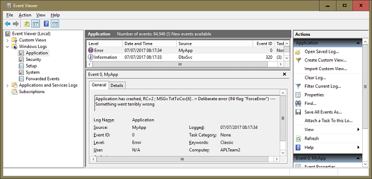
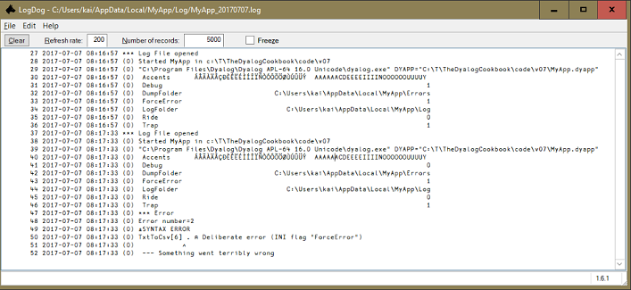
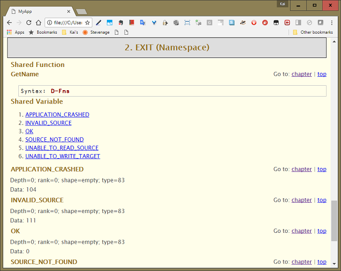
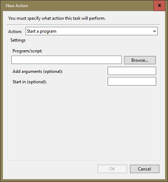
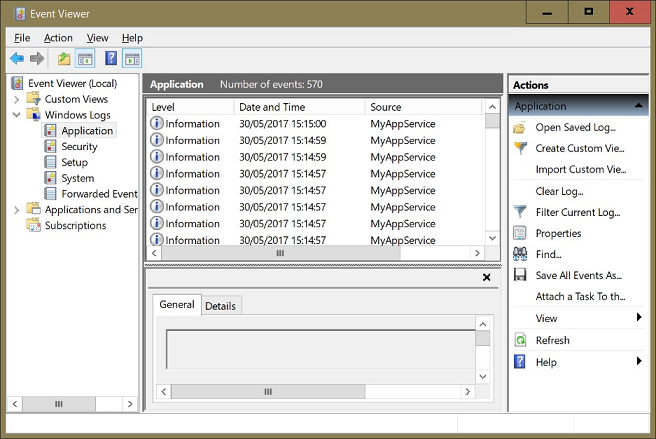
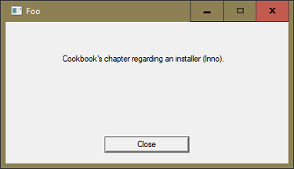
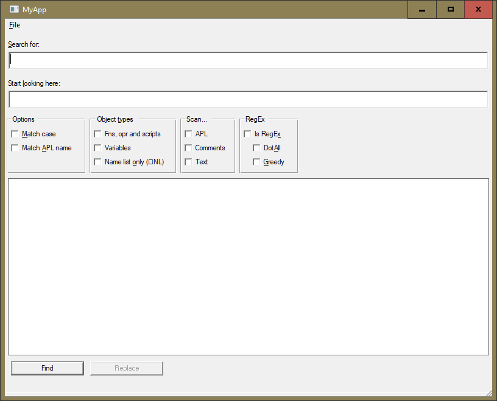

<!DOCTYPE html>
<html lang="en">
<head>
<meta http-equiv="X-UA-Compatible" content="IE=edge">
<meta charset="utf-8">
<title>Dyalog Cookbook</title>
<link href="./CSS/BlackOnWhite_screen.css" rel="stylesheet" media="screen">
<link href="./CSS/Cookbook_Chapter_screen.css" rel="stylesheet" media="screen">
<link href="./CSS/Cookbook_AllChapters_screen.css" rel="stylesheet" media="screen">
<link href="./CSS/BlackOnWhite_print.css" rel="stylesheet" media="print">
<link href="./CSS/Cookbook_Chapter_print.css" rel="stylesheet" media="print">
<link href="./CSS/Cookbook_AllChapters_print.css" rel="stylesheet" media="print">

</head>
<body>
<p></p>
<article>
<div class="h_tag">
<a href="#Chapter-1Introduction" id="Chapter-1Introduction" class="autoheader_anchor">
<h1 style="margin-left:auto;margin-right:auto;">Chapter 1: <br> <br>Introduction</h1>
</a>
</div>
<p>You want to write a Windows [<a href="#fnref1" class="footnote_link"><sup>1</sup></a>] application in Dyalog APL. You have already learned enough of the language to put some of your specialist knowledge into functions you can use in your work. The code works for you. Now you want to turn it into an application others can use. Perhaps even sell it.</p>
<p>This is where you need professional programming skills. How to install your code into an unknown computer. Have it catch, handle and log errors. Manage the different versions of your software as it evolves. Provide online help.</p>
<p>You are not necessarily a professional programmer. Perhaps you don't have those skills. Perhaps you need a professional programmer to turn your code into an application. But you’ve come a long way already. Perhaps you can get there by yourself - with <em>The Dyalog Cookbook</em>. Alternatively, you might be a professional programmer wondering how to solve these familiar problems in Dyalog APL.</p>
<p><em>The Dyalog Cookbook</em> is about how to turn your Dyalog code into an application. We’ll cover packaging your code into a robust environment. And we’ll introduce some software development tools you’ve managed without so far, which will make your life easier.</p>
<p>You might continue as the sole developer of your application for a long time yet. But if it becomes a successful product you will eventually want other programmers collaborating on it. So we’ll set up your code in a source-control system that will accommodate that. Even while you remain a sole developer, a source-control system will also allow you to roll back and recover from your own mistakes.</p>
<p>Not so long ago it was sufficient for an application to be packaged as an <abbr title="Executable file with the extension 'exe'">EXE</abbr> that could be installed and run on other PCs. Nowadays many corporate clients run programs in terminal servers or in private clouds. So we’ll look at how to organise your program to run as tasks that communicate with each other.</p>
<p>Many applications written in Dyalog focus on some kind of numerical analysis, and can have CPU-intensive tasks. We'll look at how such tasks can be packaged to run either in background or on remote machines.</p>
<div class="h_tag">
<a href="#Method" id="Method" class="autoheader_anchor">
<h2>1. Method</h2>
</a>
</div>
<p>It’s conventional in this context for authors to assure readers that the techniques expounded here have been hammered out, proven and tested in many successful applications. That is true of individual components here, particularly of scripts and applications from the APLTree [<a href="#fnref2" class="footnote_link"><sup>2</sup></a>] library.</p>
<p>But the development tools introduced by Dyalog in recent years are still finding their places with development teams. Some appear here in print for the first time. This book is the first sustained attempt to combine all the current Dyalog tools into an integrated approach.</p>
<p>Many of the issues addressed here are entangled with each other. We’ll arrive at our best solutions by way of interim solutions. Proposing some wickedly intricate ‘complete solution’ framework does little to illuminate the problems it solves. So we’ll add features – <abbr title="File with the extension 'ini' containing configuration data">INI</abbr> files, error handling, and so on – one at a time, and as we go we’ll find ourselves revisiting the code that embeds the earlier features.</p>
<p>We will also improve the code along the way, while explaining why exactly the changes are improvements.</p>
<p>That is the method for chapters 1 – 14. Later chapters stand on their own.</p>
<p>If you are an experienced Dyalog developer, you may be able to improve on what is described here. For this reason <em>The Dyalog Cookbook</em> remains for now <a href="https://github.com/5jt/dyalog-cookbook" class="external_link">an open-source project on GitHub</a>.</p>
<p>Working through the book, you get to understand how the implementation issues, and the solutions to them, work. In the first chapters you will find ‘framework’ code for your application, growing more complex as the book progresses. You can find scripts for these interim versions in the <code>code</code> folder on the book website. Watch out: they are <em>interim</em> solutions, constantly improved along the way.</p>
<p>You are of course welcome simply to copy and use the last version of the scripts. But there is much to be learned while stumbling.</p>
<p>Later on we’ll introduce some professional writing techniques that might make maintaining your code easier – in what we hope will be a long useful future for it. This includes third-party tools, configuring your development environment and discussing user commands.</p>
<div class="h_tag">
<a href="#What-you-need-to-use-the-Dyalog-Cookbook" id="What-you-need-to-use-the-Dyalog-Cookbook" class="autoheader_anchor">
<h2>2. What you need to use the Dyalog Cookbook</h2>
</a>
</div>
<ul>
<li>The Dyalog Version 16.0 Unicode interpreter or later.</li>
<li>Microsoft Windows 10</li>
<li>Good knowledge of APL – the Cookbook is by no means an introduction.</li>
<li>To know how to use namespaces, classes and instances. The utility code in the Cookbook is packaged as namespaces and classes. This is the form in which it is easiest for you to slide the code into your app without name conflicts.
<p>We recommend you use classes to organise your own code [<a href="#fnref3" class="footnote_link"><sup>3</sup></a>]. But even if you don’t, you need to know at least how to use classes. This is a deep subject, but all you need to know is the basics: how to call the static methods of a class (sufficient in most cases) or how to create an instance of a class and use its methods and properties.</p>
<p>See <em>Dyalog Programmer’s Reference Guide</em> for an introduction.</p></li>
<li>A good understanding of SALT, Dyalog’s built-in code-management system that allows you to load and save scripts either automatically in the background or at will.</li>
<li>Internet access. Not necessarily all the time, but probably most of the time. Not only because it gives you access to the <a href="http://aplwiki.com" class="external_link">APL wiki</a> and the Dyalog forum (see below) but mainly for accessing the APLTree tools and this book’s web site: <a href="https://cookbook.dyalog.com" class="external_link">https://cookbook.dyalog.com</a>.
<p>However, we have also tried to write the book so that you can just read it – if that works better for you.</p></li>
</ul>
<p>We have not attempted to ‘dumb down’ our use of the language for readers with less experience. In some cases we stop to discuss linguistic features; mostly not.</p>
<p>If you see an expression you cannot read, a little experimentation and consultation of the reference material should show you how it works.</p>
<p>But we have not tried to be smart either. Code should be as terse as reasonable, but should always be readable, maintainable and traceable.</p>
<p>We encourage you to take the time to do this. Generally speaking – not invariably – short, crisp expressions are less work for you and the interpreter to read. Learn them and prefer them.</p>
<p>In case you still need help the <a href="http://forum.dyalog.com" class="external_link">Dyalog Forum</a> provides access to a competent and friendly community around Dyalog.</p>
<div class="h_tag">
<a href="#Conventions" id="Conventions" class="autoheader_anchor">
<h2>3. Conventions</h2>
</a>
</div>

<div class="leanpub">

<div>
<p>Note that we assume <code>⎕IO←1</code> and <code>⎕ML←1</code>, not because we are making a statement, but because that’s the Dyalog default. That keeps the Cookbook in sync with the Dyalog documentation.</p>
</div>
</div>

<div class="leanpub_A">
<h3>Getting deeper</h3>
<p>In case we want to discuss a particular issue in more detail but we are not sure whether the reader is ready for this, now or ever, we format the information this way.</p>
</div>

<div class="leanpub">

<div>
<p>Sometimes we need to warn you, for example in order to avoid common traps. This is how that would look like.</p>
</div>
</div>

<div class="leanpub">

<div>
<p>Sometimes we want to provide a tip, and this is how that looks.</p>
</div>
</div>

<p>When we refer to a text file, e.g. something with the extension <code>.txt</code>, we refer to it as a <abbr title="File with the extension 'txt' containing text">TXT</abbr>. We refer to a dyalog script (<code>*.dyalog</code>) as a <abbr title="File with the extension 'dyalog' holding APL code">DYALOG</abbr>. We refer to a dyapp script (<code>*.dyapp</code>) as a <abbr title="File with the extension 'dyapp' that contains 'Load' and 'Run' commands in order to put together an APL application">DYAPP</abbr>. You get the pattern.</p>
<div class="h_tag">
<a href="#Acknowledgements" id="Acknowledgements" class="autoheader_anchor">
<h2>4. Acknowledgements</h2>
</a>
</div>
<p>We are deeply grateful for contributions, ideas, comments and outright help from our colleagues, particularly from (in alphabetical order) Gil Athoraya, Morten Kromberg, Paul Mansour, Nick Nickolov, Andy Shiers and Richard Smith.</p>
<p>We jealously claim any errors as entirely our own work.</p>
<p>Kai Jaeger &amp; Stephen Taylor</p>
<div id="footnotes_div">
<hr>
<p><strong>Footnotes</strong></p>
<ol>
<li id="fnref1"><p>Perhaps one day you would like it to ship on multiple platforms. Perhaps one day we’ll write that book too. Meanwhile, Microsoft Windows.</p><p>You will however find that whenever possible we keep the code platform independent. If we use platform-dependent utilities we mention it and explain why; we might also mention alternatives available on other platforms.</p><a href="#fnref1" class="footnote_anchor"></a>
<li id="fnref2"><p><em>APLTree</em> is the name of an open-source library that offers robust, tested and well documented solutions to many everyday problems you face when addressing the tasks discussed in this book.</p><p>We will use this library extensively and discuss it in detail. More at the source:<br><a href="https://aplteam.github.io/apltree" class="external_link">https://aplteam.github.io/apltree</a>. You can also search for “apltree” on <a href="https://github.com" class="external_link">GitHub</a>.</p><a href="#fnref2" class="footnote_anchor"></a>
<li id="fnref3"><p>These days seasoned programmers often have strong opinions about whether to use an object-oriented approach or a functional approach, or to mix them both.</p><p>We have seen friendships broken on these issues. In this book we take a mixed approach.</p><a href="#fnref3" class="footnote_anchor"></a>
</ol>
</div>
</article>
<article>
<div class="h_tag">
<a href="#Chapter-2Structure" id="Chapter-2Structure" class="autoheader_anchor">
<h1 style="margin-left:auto;margin-right:auto;">Chapter 2: <br> <br>Structure</h1>
</a>
</div>
<p>In this chapter we consider your choices for making your program available to others, and for taking care of the source code, including tracking the changes through successive versions.</p>
<p>To follow this, we’ll make a very simple program. It counts the frequency of letters used in one or multiple text files. (This is simple, but useful in cryptanalysis, at least at hobby level.) We’ll put the source code under version control, and package the program for use.</p>
<p>Some of the things we are going to add to this application will seem like overkill, but keep in mind that we use this application just as a very simple example for all the techniques we are going to introduce.</p>
<p>Let’s assume you've done the convenient thing. Your code is in a workspace. Everything it needs to run is defined in the workspace. Maybe you set a latent expression, so the program starts when you load the workspace.</p>
<p>We shall convert a <abbr title="Dyalog workspace">D<abbr title="Short for Workspaces">WS</abbr></abbr> to some <abbr title="File with the extension 'dyalog' holding APL code">DYALOG</abbr> scripts and introduce a <abbr title="File with the extension 'dyapp' that contains 'Load' and 'Run' commands in order to put together an APL application">DYAPP</abbr> script to assemble an active workspace from them.</p>
<p>Using scripts to store your source code has many advantages: you can use a traditional source code management system rather than having your code and data stored in a binary blob.</p>
<p>Changes that you make to your source code are saved immediately, rather than relying on you to remember to save the workspace at some suitable point in your work process.</p>
<p>Finally, you don’t need to worry about crashes in your code or externally called modules and also any corruption of the active workspace which might prevent you from saving it.</p>

<div class="leanpub_A">
<h3>Corrupted workspaces</h3>
<p>The <em>workspace</em> (<abbr title="Short for Workspaces">WS</abbr>) is where the APL interpreter manages all code and all data in memory. The Dyalog tracer / debugger has extensive edit-and-continue capabilities; the downside is that these have been known to corrupt the workspace occasionally.</p>
<p>The interpreter checks <abbr title="Short for Workspaces">WS</abbr> integrity every now and then; how often can be influenced by setting certain debug flags; see the “<a href="./52 Appendix 3 — aplcores and WS integrity.html" class="external_link">Appendix 3 — aplcores and WS integrity</a>” for details. More details regarding aplcores are available in the appendix “Aplcores”.</p>
</div>

<div class="h_tag">
<a href="#How-can-you-distribute-your-program" id="How-can-you-distribute-your-program" class="autoheader_anchor">
<h2>1. How can you distribute your program?</h2>
</a>
</div>
<div class="h_tag">
<a href="#Send-a-workspace-file" id="Send-a-workspace-file" class="autoheader_anchor">
<h3>1.1. Send a workspace file (DWS)</h3>
</a>
</div>
<p>Could not be simpler. If your user has a Dyalog interpreter, she can also save and send you the crash workspace if your program hits an execution error. But she will also be able to read your code – which might be more than you wish for.</p>

<div class="leanpub_A">
<h3>Crash workspaces</h3>
<p>A crash workspace is a workspace that was saved by a function that was initiated by error trapping, typically by a setting of <code>⎕TRAP</code>. It’s a snapshot of the workspace at the moment an unforeseen problem triggered error trapping to take over. It’s usually very useful to analyse such problems.</p>
<p>Note that a workspace cannot be saved when more than one thread is running.</p>
</div>

<p>If she doesn’t have an interpreter, and you are not worried about her someday getting one and reading your code, and you have a Run-Time Agreement with Dyalog, you can send her the Dyalog Run-Time interpreter with the workspace. The Run-Time interpreter will not allow the program to suspend, so when the program breaks the task will vanish, and your user won’t see your code. All right so far. But she will also not have a crash workspace to send you.</p>
<p>If your application uses multiple threads, the thread states can’t be saved in a crash workspace anyway.</p>
<p>You need your program to catch and report any errors before it dies, something we will discuss in the chapter <a href="./07 Handling errors.html" class="external_link">Handling errors</a>.</p>
<div class="h_tag">
<a href="#Send-an-executable-file" id="Send-an-executable-file" class="autoheader_anchor">
<h3>1.2. Send an executable file (EXE)</h3>
</a>
</div>
<p>This is the simplest form of the program to install, because there is nothing else it needs to run: everything is embedded within the <abbr title="Executable file with the extension 'exe'">EXE</abbr>. You export the workspace as an <abbr title="Executable file with the extension 'exe'">EXE</abbr>, which can have the Dyalog Run-Time interpreter bound into it. The code cannot be read. As with the workspace-based runtime above, your program cannot suspend, so you need it to catch and report any errors before dying.</p>
<p>We’ll do that!</p>
<div class="h_tag">
<a href="#Where-should-you-keep-the-code" id="Where-should-you-keep-the-code" class="autoheader_anchor">
<h2>2. Where should you keep the code?</h2>
</a>
</div>
<p>Let’s start by considering the workspace you will export as an <abbr title="Executable file with the extension 'exe'">EXE</abbr>.</p>
<p>The first point is: PCs have a lot of memory relative to your application code volume. So all your Dyalog code will be in the workspace. That’s probably where you have it right now anyway.</p>
<p>Your workspace is like your desk top – a great place to get work done, but a poor place to store things. In particular it does nothing to help you track changes and revert to an earlier version.</p>
<p>Sometimes a code change turns out to be for the worse, and you need to undo it. Perhaps the change you need to undo is not the most recent change.</p>
<p>We’ll keep the program in manageable pieces – ‘modules’ – and keep those pieces in text files under version control.</p>
<p>For this there are many <em>source-control management</em> (SCM) systems and repositories available. Subversion, Git and Mercurial are presently popular. These SCMs support multiple programmers working on the same program, and have sophisticated features to help resolve conflicts between them.</p>

<div class="leanpub_A">
<h3>Source code management with acre Desktop</h3>
<p>Some members of the APL community prefer to use a source-code management system that is tailored to solve the needs of an APL programmer, or a team of APL programmers: acre Desktop.</p>
<p>APL code is very compact, teams are typically small, and work on APL applications tends to be oriented towards functions rather than modules such as classes.</p>
<p>acre Desktop can be used as a source-code management system in its own rights= together with acre Server, but it can use other code management systems like Git or SubVersion as well. Both acre Desktop and acre Server are available as open source software. We will discuss acre in its own appendix.</p>
</div>

<p>Whichever SCM you use (we used GitHub for writing this book and the code in it) your source code will comprise class and namespace scripts (<abbr title="File with the extension 'dyalog' holding APL code">DYALOG</abbr>s) for the application. The help system will be an ordinary – non-scripted – namespace. We use a <em>build script</em> (<abbr title="File with the extension 'dyapp' that contains 'Load' and 'Run' commands in order to put together an APL application">DYAPP</abbr>) to assemble the application and the development environment.</p>
<p>You’ll keep your local working copy in whatever folder you please. We’ll refer to this <em>working folder</em> as <code>Z:\</code> but it will of course be wherever suits you.</p>
<div class="h_tag">
<a href="#The-LetterCount-workspace" id="The-LetterCount-workspace" class="autoheader_anchor">
<h2>3. The LetterCount workspace</h2>
</a>
</div>
<p>We suppose you already have a workspace in which your program runs. We don’t have your code to hand so we’ll use ours. We’ll use a very small and simple program, so we can focus on packaging the code as an application, not on writing the application itself.</p>
<p>So we’ll begin with the LetterCount workspace. It’s trivially simple but for now it will stand in for your code. You can download it from the book’s web site: <a href="https://cookbook.dyalog.com" class="external_link">https://cookbook.dyalog.com</a>.</p>

<div class="leanpub_A">
<h3>On encryption</h3>
<p>Frequency counting relies on the distribution of letters being more or less constant for any given language. It is the first step in breaking a substitution cypher.</p>
<p>Substitution cyphers have been superseded by public-private key encryption, and are mainly of historical interest, or for studying cryptanalysis. But they are also fun to play with.</p>
<p>We recommend <em>The Code Book: The secret history of codes &amp; code-breaking</em> by Simon Singh and <em>In Code</em> by Sarah Flannery as introductions if you find this subject interesting.</p>
</div>

<div class="h_tag">
<a href="#Versions" id="Versions" class="autoheader_anchor">
<h2>4. Versions</h2>
</a>
</div>
<p>In real life you will produce successive versions of your program, each better than the last. In an ideal world, all your users will have and use the current version. In that ideal world, you have only one version to maintain: the latest.</p>
<p>In the real world, your users will have and use multiple versions. If you charge for upgrading to a newer version, this will surely happen. And even in your ideal world, you have to maintain at least two versions: the current and the next.</p>
<p>What does it mean to maintain a version? At the very minimum, you keep the source code for it, so you could recreate its <abbr title="Executable file with the extension 'exe'">EXE</abbr> from scratch, exactly as it was distributed. There will be things you want to improve, and perhaps bugs you must fix. Those will all go into the next version, of course. But some you may need to put into the released version and re-issue it to current users as a patch.</p>
<p>So in <em>The Dyalog Cookbook</em> we shall develop in successive versions until we manage to create an installer that is capable of installing the application on any machine running Windows 10. What’s needed to achieve that is discussed in the chapters 1-16. Later chapters are independent.</p>
<p>Our ‘versions’ are not ready to ship, so are probably better considered as milestones on the way to version 1.0. You could think of them as versions 0.1, 0.2 and so on. But we’ll just refer to them as Versions 1, 2, and so on.</p>
<p>Our first version won’t even be ready to export as an <abbr title="Executable file with the extension 'exe'">EXE</abbr>. It will just create a workspace <code>MyApp.dws</code> from scripts: a <abbr title="File with the extension 'dyapp' that contains 'Load' and 'Run' commands in order to put together an APL application">DYAPP</abbr> and some <abbr title="File with the extension 'dyalog' holding APL code">DYALOG</abbr>s. We’ll call it Version 1.</p>
<p>Load the <code>LetterCount.dws</code> workspace from the <code>code\foo</code> folder on the book website. Again, this is just the stand-in for your own code. Here’s a quick tour.</p>
<div class="h_tag">
<a href="#Investigating-the-workspace-LetterCount" id="Investigating-the-workspace-LetterCount" class="autoheader_anchor">
<h3>4.1. Investigating the workspace LetterCount</h3>
</a>
</div>
<p>Let’s load the workspace <code>LetterCount</code> and investigate it a bit.</p>
<p>Function <code>TxtToCsv</code> takes the filepath of a <abbr title="File with the extension 'txt' containing text">TXT</abbr> and writes a sibling CSV [<a href="#fnref1" class="footnote_link"><sup>1</sup></a>] containing the frequency count for the letters in the file. It uses function <code>CountLetters</code> to produce the table.</p>
<pre><code>      ∆←'Now is the time for all good men'
      ∆,←' to come to the aid of the party.'
      CountLetters ∆
N 2
O 8
W 1
I 3
S 1
T 7
H 3
E 6
M 3
F 2
R 2
A 3
L 2
G 1
D 2
C 1
P 1
Y 1</code></pre>

<div class="leanpub">

<div>
<p>Note that we use a variable <code>∆</code> here. Not exactly a memorable or self-explaining name. However, we use <code>∆</code> whenever we collect data for temporary use.</p>
</div>
</div>

<p><code>CountLetters</code> returns a table of the letters in <code>⎕A</code> and the number of times each is found in the text. The count is insensitive to case and ignores accents, mapping accented to unaccented characters:</p>
<pre><code>      Accents
ÁÂÃÀÄÅÇÐÈÊËÉÌÍÎÏÑÒÓÔÕÖØÙÚÛÜÝ
AAAAAACDEEEEIIIINOOOOOOUUUUY</code></pre>
<p>That amounts to five functions. Two of them are specific to the application: <code>TxtToCsv</code> and <code>CountLetters</code>. The other three – <code>toUppercase</code>, <code>join</code> and <code>map</code> are utilities, of general use.</p>
<p>Note that we have some functions that start with lowercase characters while others start with uppercase characters. In a larger application you might want to be able to tell data from calls to functions and operators by introducing consistent naming conventions. Which one you settle for is less important then choosing something consistent. And remmeber to put it into a document any programmer joining the team can read.</p>
<p><code>toUppercase</code> uses the fast case-folding I-beam introduced in Dyalog 15.0 (also available in 14.0 &amp; 14.1 from revision 27141 onwards).</p>
<p><code>TxtToCsv</code> uses the file-system primitives <code>⎕NINFO</code>, <code>⎕NGET</code>, and <code>⎕NPUT</code> introduced in Dyalog 15.0.</p>
<div class="h_tag">
<a href="#How-to-organise-the-code" id="How-to-organise-the-code" class="autoheader_anchor">
<h3>4.2. How to organise the code</h3>
</a>
</div>
<p>To expand this program into distributable software we’re going to add features, many of them drawn from the APLTree library. To facilitate that we’ll first organise the existing code into script files, and write a <em>build script</em> to assemble a workspace from them.</p>

<div class="leanpub">

<div>
<p>The APLTree library is an open-source project hosted on <a href="https://github.com" class="external_link">GitHub</a>. It offers solutions for many every-day problems a Dyalog APL programmer might run into. In the Cookbook we will use many of its members. For details see <a href="https://aplteam.github.io/apltree" class="external_link">https://aplteam.github.io/apltree</a>.</p>
</div>
</div>

<p>Start at the root namespace (<code>#</code>). We’re going to be conservative about defining names in <code>#</code>. Why? Right now the program stands by itself and can do what it likes in the workspace. But in the future your program might become part of a larger APL system. In that case it will share <code>#</code> with other objects you don’t know anything about right now.</p>
<p>So your program will be a self-contained object in <code>#</code>. Give it a distinctive name, not a generic name such as <code>Application</code> or <code>Root</code>. From here on we’ll call it <code>MyApp</code>. (We know – almost as bad.)</p>
<p>But there <em>are</em> other objects you might define in <code>#</code>. If you’re using classes or namespaces that other systems might also use, define them in <code>#</code>. For example, if <code>MyApp</code> should one day become a module of some larger system, it would make no sense for each module to have its own copy of, say, the APLTree class <code>Logger</code>.</p>
<p>With this in mind, let’s distinguish some categories of code, and how the code in <code>MyApp</code> will refer to them.</p>
<dl>
<dt>General utilities and classes</dt>
<dd>For example, the <code>APLTreeUtils</code> namespace and the <code>Logger</code> class. (Your program doesn't yet use these utilities.) In the future, other programs, possibly sharing the same workspace, might use them too.</dd>
<dt>Your program and its modules</dt>
<dd>Your top-level code will be in <code>#.MyApp</code>. Other modules and <code>MyApp</code>-specific classes may be defined within it.</dd>
<dt>Tools and utility functions specific to <code>MyApp</code></dt>
<dd>These might include your own extensions to Dyalog namespaces or classes. Define them inside the app object, e.g. <code>#.MyApp.Utils</code>.</dd>
<dt>Your own language extensions and syntax sweeteners</dt>
<dd>For example, you might like to use functions <code>means</code> and <code>else</code> as simple conditionals. These are effectively your local <em>extensions</em> to APL, the functions you expect always to be around. Define your collection of such functions into a namespace in <code>#</code>, eg <code>#.Utilities</code>.</dd>
</dl>
<p>The object tree in the workspace might eventually look something like:</p>
<pre><code>#
|-⍟Constants
|-⍟APLTreeUtils
|-⍟Utilities
|-○MyApp
| |-⍟Common
| |-⍟Engine
| |-○TaskQueue
| \-⍟Utils
\-○Logger
\-⍟UI</code></pre>

<div class="leanpub">

<div>
<p><code>⍟</code> denotes a namespace, <code>○</code> a class. These are the characters (among others) you can use to tell the editor what kind of object you wish to create, so for a class <code>)ed ○ Foo</code>. Press F1 with the cursor on <code>)ed</code> in the session for details.</p>
</div>
</div>

<p>Note that we keep the user interface (<code>UI</code>) separate from the business logic. This is considered good practice because whatever you believe right now, you will almost certainly one day consider exchanging a particular type of UI (say .NET Windows forms) for a different one (say <abbr title="Hyper Text Mark-up language">HTML</abbr>+JavaScript). This is difficult enough, but a bit easier when you separate them right from the start. However, our application is so simple that we collect all its code in a namespace script <code>MyApp</code> in order to save one level in the namespace hierarchy.</p>
<p>If this were to be a serious project then you would not do this even if the amount of code is small: applications change and grow over time, sometimes significantly. Therefore you would be better prepared to have, say, a namespace <code>MyApp</code> that contains, say, a namespace script <code>engine</code> with all the code.</p>
<p>The objects in <code>#</code> are ‘public’. They comprise <code>MyApp</code> and objects other applications might use; you might add another application that uses <code>#.Utilities</code>. Everything else is encapsulated within <code>MyApp</code>. Here’s how to refer in the <code>MyApp</code> code to these different categories of objects.</p>
<ol start="1">
<li><code>log←⎕NEW #.Logger</code></li>
<li><code>queue←⎕NEW TaskQueue</code></li>
<li><code>tbl←Engine.CountLetters txt</code></li>
<li><code>status←(bar&gt;3) #.Utilities.means 'ok' #.Utilities.else 'error'</code></li>
</ol>
<p>The last one is pretty horrible. It needs some explanation.</p>
<p>Many languages offer a short-form syntax for if/else, eg (JavaScript, PHP, C…)</p>
<pre><code>status = bar&gt;3 ? 'ok' : 'error' ;</code></pre>
<p>Some equivalents in Dyalog:</p>
<ul>
<li>Control structure
<pre><code>:If bar&gt;3
    status←'ok'
:Else
    status←'error'
:EndIf</code></pre></li>
<li>Pick -1-
<pre><code>status←(⎕IO+bar&gt;3)⊃'error' 'ok'</code></pre></li>
<li>Pick -2-
<pre><code>status←⊃(bar&gt;3)⌽'error' 'ok'</code></pre></li>
<li>Defined functions: <code>means</code> and <code>else</code> here provide a short-form syntax:
<pre><code>status←(bar&gt;3) means 'ok' else 'error'</code></pre>
<p>The readability gain is largely lost if we have to qualify the functions with their full paths:</p>
<pre><code>status←(bar&gt;3) #.Utilities.means 'ok' #.Utilities.else 'error'</code></pre>
<p>We can improve it by defining aliases within <code>#.MyApp</code>:</p>
<p>I&gt; We use the term <em>alias</em> here for a reference pointing to a particular script or namespace. In this context it is important to note that after executing <code>C←#.Constants</code> the alias <code>C</code> is <em>identical</em> to <code>#.Constants</code>, therefore  <code> 1 ←→ C≡#.Constants</code>.</p>
<pre><code>C←#.Constants ⋄ U←#.Utilities</code></pre>
<p>allowing it to be written as</p>
<pre><code>status←(bar&gt;3) U.means 'ok' U.else 'error'</code></pre></li>
</ul>
<p>What style you prefer is mainly a matter of personal taste, and indeed even the authors do not necessarily agree on this. There are however certain rules you should keep in mind:</p>
<div class="h_tag">
<a href="#Execution-time" id="Execution-time" class="autoheader_anchor">
<h4>4.2.1. Execution time</h4>
</a>
</div>
<pre><code>status←(bar&gt;3) U.means 'ok' U.else 'error'</code></pre>
<p>In this approach two user defined functions are called. Not much overhead but don’t go for this if the line is, say, executed thousands of times within a loop.</p>
<div class="h_tag">
<a href="#Keep-the-end-user-in-mind" id="Keep-the-end-user-in-mind" class="autoheader_anchor">
<h4>4.2.2. Keep the end user in mind</h4>
</a>
</div>
<p>The authors have done pair programming for years with end users being the second party. For a user a statement like:</p>
<pre><code>taxfree←(dob&gt;19491231) U.means 35000 U.else 50000</code></pre>
<p>is easily readable despite it being formed of APL primitives and user defined functions. This can be a big advantage in an agile environment where the end user reviews business logic with the implementors.</p>
<p>For classes, however, there is another way to do this: include the namespace <code>#.Utilities</code>. In order to illustrate this let’s assume for a moment that <code>MyApp</code> is not a namespace but a class.</p>
<pre><code>:Class MyApp
:Include Utilities
…
:EndClass</code></pre>
<p>This requires the namespace <code>#.Utilities</code> to be a sibling of the assumed class <code>MyApp</code>. Now within the class you can do</p>
<pre><code>status←(bar&gt;3) means 'ok' else 'error'</code></pre>
<p>yet Shift+Enter in the Tracer or the Editor still works, and any changes made to the utilities would go into <code>#.Utilities</code>.</p>

<div class="leanpub_A">
<h3>More about :Include</h3>
<p>When a namespace is included, the interpreter will execute functions from that namespace as if they had been defined in the current class. However, the actual <em>code</em> is shared with the original namespace. For example, this means that if the code of <code>means</code> or <code>else</code> is changed while tracing into it from the <code>MyApp</code> class those changes are reflected in <code>#.Utilities</code> immediately (and any other classes that might have included it).</p>
<p>Most of the time, this works as you expect it to, but it can lead to confusion, in particular if you were to <code>)COPY #.Utilities</code> from another workspace. This will change the definition of the namespace, but the class has pointers to functions in the old copy of <code>#.Utilities</code>, and will not pick up the new definitions until the class is fixed again.</p>
<p>If you were to edit these functions while tracing into the <code>MyApp</code> class, the changes will not be visible in the namespace. Likewise, if you were to <code>)ERASE #.Utilities</code>, the class will continue to work until the class itself is edited, at which point it will complain that the namespace does not exist.</p>
<p>Let’s assume that in a <abbr title="Short for Workspaces">WS</abbr> <code>C:\Test_Include</code> we have just this code:</p>
<pre><code>:Class Foo
:Include Goo
:EndClass

:Namespace Goo
∇ r←Hello
    :Access Public Shared
      r←'World'
    ∇
:EndNamespace</code></pre>
<p>Now we do this:</p>
<pre><code>Foo.Hello
world
      )Save
Saved...
      ⎕EX 'Goo'
      Goo
VALUE ERROR
      Foo.Hello
world
)copy c:\Test_Include Goo
copied...</code></pre>
<p>If at this stage you were to edit <code>Goo</code> and change <code>'world'</code> to <code>'Universe'</code>, and then again call <code>Foo.Hello</code> it would still print <code>world</code> to the session.</p>
</div>

<p>If you encounter this, re-fix your classes (in this case <code>Foo</code>). Rebuilding the <abbr title="Short for Workspaces">WS</abbr> from the source files would be even better.</p>
<div class="h_tag">
<a href="#Be-careful-with-diamonds" id="Be-careful-with-diamonds" class="autoheader_anchor">
<h4>4.2.3. Be careful with diamonds</h4>
</a>
</div>
<p>The <code>:If - :Then - :else</code> solution could have been written this way:</p>
<pre><code>:If bar&gt;3 ⋄ status←'ok' ⋄ :Else ⋄ status←'error' ⋄ :EndIf</code></pre>
<p>There is one major problem with this: when executing the code in the Tracer the line will be executed in one go. If you think you might want to follow the control flow and trace into the individual expressions, you should spread the control structure over 5 lines.</p>
<p>In general: if you have a choice between a short and a long expression then go for the short one – unless the long one offers an incentive such as improved readability, better debugging or faster execution speed.</p>
<p>Diamonds can be useful in some situations. In general it’s better to avoid them.</p>

<div class="leanpub_A">
<h3>Diamonds</h3>
<p>In some circumstances diamonds are quite useful:</p>
<ul>
<li>To ensure no thread switch occurs between two statements. Something like
<pre><code>tno←filename ⎕nTIE 0 ⋄ l←⍴⎕nread tno 80 (⎕nsize tno) ⋄ ⎕nuntie tno</code></pre>
<p>is sure to be executed as a unit. In some circumstances this really matters.</p></li>
<li>Make multiple assignments on a single line as in <code>⎕IO←1 ⋄ ⎕ML←3 ⋄ ⎕PP←20</code>. Not for variable settings, just system stuff.</li>
<li>Assignments to <code>⎕LX</code> as in <code>⎕LX←#.FileAndDirs.PolishCurrentDir ⋄ ⎕←Info</code>.</li>
<li>To make dfns more readable as in <code>{w←⍵ ⋄ ((w='¯')/w)←'-' ⋄ ⍵}</code>. There is really no reason to make this a multi-line dfn.
<p>(Note that from version 16 onwards you can achieve the same result with <code>{'-'@(⍸⍵='¯')⊣⍵}</code>)</p></li>
<li>You <em>cannot</em> trace into a one-line dfn. This can be quite useful. For example, this function:
<pre><code>OnConfigure←{(4↑⍵),((⊃⍺){(0∊⍴⍺):⍵ ⋄ ⍺⌈⍵}⍵[4]),((⊃⌽⍺){(0∊⍴⍺):⍵ ⋄ ⍺⌈⍵}⍵[5])}</code></pre>
<p>ensures a GUI Form (window) does not shrink below a minimum size defined by <code>⍺</code>.</p>
<p>You don’t want to have a multi-line dfn here: you want be able to trace into any <code>⎕DQ</code> (or <code>Wait</code>) statement; and the number of configuration events is simply overwhelming. Thanks to the <code>⋄</code> we can solve the task on a single line and prevent the Tracer from ever entering the dfn.</p></li>
</ul>
</div>

<div class="h_tag">
<a href="#Why-not-use-PATH" id="Why-not-use-PATH" class="autoheader_anchor">
<h4>4.2.4. Why not use <code>⎕PATH</code>?</h4>
</a>
</div>
<p><code>⎕PATH</code> tempts us. We could set <code>⎕PATH←'#.Utilities'</code>. The expression above could then take its most readable form:</p>
<pre><code>status←(bar&gt;3) means 'ok' else 'error'</code></pre>
<p>Trying to resolve the names <code>means</code> and <code>else</code>, the interpreter would consult <code>⎕PATH</code> and find them in <code>#.Utilities</code>. So far so good: this is what <code>⎕PATH</code> is designed for. It works just fine in simple cases, but quickly leads to confusion about which functions are called or edited, and where new names are created. Avoid <code>⎕PATH</code> if reasonable alternatives are available.</p>
<div class="h_tag">
<a href="#Convert-the-WS-LetterCount-into-a-single-scripted-namespace" id="Convert-the-WS-LetterCount-into-a-single-scripted-namespace" class="autoheader_anchor">
<h3>4.3. Convert the WS LetterCount into a single scripted namespace.</h3>
</a>
</div>
<p>If your own application is already using scripted namespaces and/or classes then you can skip this, of course.</p>
<p>Download the <abbr title="Short for Workspaces">WS</abbr> and save it as <code>Z:\code\v00\LetterCount</code>.</p>
<p>Everything in that <abbr title="Short for Workspaces">WS</abbr> lives in <code>#</code>. We have to move it into a single namespace <code>MyApp</code>. Execute the following steps:</p>
<ol start="1">
<li>Start an instance of Dyalog</li>
<li>Execute <code>)ns MyApp</code> to create a namespace <code>MyApp</code> in the workspace.</li>
<li>Execute <code>)cs MyApp</code> to make <code>MyApp</code> the <em>current namespace</em>.</li>
<li>Execute <code>)copy Z:\code\v00\LetterCount</code> to copy all the functions and the single variable into the current namespace, <code>#.MyApp</code>.</li>
<li>Execute <code>)copy Z:\code\v00\LetterCount ⎕IO ⎕ML</code>
<p>This ensures we really use the same values for important system variables as the <abbr title="Short for Workspaces">WS</abbr> does by copying their values into the namespace <code>#.MyApp</code>.</p></li>
<li>Execute <code>]save #.MyApp Z:\code\v01\MyApp -makedir -noprompt</code></li>
</ol>
<p>The last step will save the contents of the namespace <code>#.MyApp</code> into <code>Z:\code\v01\MyApp.dyalog</code>. If the folder <code>v01</code> or any of its parents do not already exist the <code>-makedir</code> option will create them. <code>-noprompt</code> makes sure that <code>]save</code> does not ask any questions.</p>
<p>This is how the script would look like:</p>
<pre><code>:Namespace MyApp
⍝ === VARIABLES ===

Accents←2 28⍴'ÁÂÃÀÄÅÇÐÈÊËÉÌÍÎÏÑÒÓÔÕÖØÙÚÛÜÝAAAAAACDEEEEIIIINOOOOOOUUUUY'


⍝ === End of variables definition ===

(⎕IO ⎕ML ⎕WX ⎕PP ⎕DIV)←1 1 3 15 1

 CountLetters←{
     ⍝ Table of letter frequency in txt
     {⍺(≢⍵)}⌸⎕A{⍵/⍨⍵∊⍺}(↓Accents)map toUppercase ⍵
 }

∇ noOfBytes←TxtToCsv fullfilepath;NINFO_WILDCARD;NPUT_OVERWRITE;tgt;files;path;stem;txt;enc;nl;lines;csv
     ⍝ Write a sibling CSV of the TXT located at fullfilepath,
     ⍝ containing a frequency count of the letters in the file text.
 NINFO_WILDCARD←NPUT_OVERWRITE←1 ⍝ constants
 fullfilepath~←'"'
 csv←'.csv'
 :Select 1 ⎕NINFO fullfilepath
 :Case 1 ⍝ folder
     tgt←fullfilepath,'\total',csv
     files←⊃(⎕NINFO⍠NINFO_WILDCARD)fullfilepath,'\*.txt'
 :Case 2 ⍝ file
     (path stem)←2↑⎕NPARTS fullfilepath
     tgt←path,stem,csv
     files←,⊂fullfilepath
 :EndSelect
     ⍝ assume txt&lt;&lt;memory
 (txt enc nl)←{(⊃,/1⊃¨⍵)(1 2⊃⍵)(1 3⊃⍵)}⎕NGET¨files
 lines←','join¨↓⍕¨CountLetters txt
     ⍝ use encoding and NL from first source file
 noOfBytes←(lines enc nl)⎕NPUT tgt NPUT_OVERWRITE
     ⍝Done
∇

 join←{
     ⍺←⎕UCS 13 10
     (-≢⍺)↓⊃,/⍵,¨⊂⍺
 }

 map←{
     (old new)←⍺
     nw←∪⍵
     (new,nw)[(old,nw)⍳⍵]
 }

 toUppercase←{1(819⌶)⍵}

:EndNamespace</code></pre>
<p>There might be minor differences, depending on the version of the <code>]save</code> user command and the version of SALT you are using.</p>
<p>This is the easiest way to convert an ordinary workspace into one or more scripted namespaces.</p>
<p>Now we start improving it.</p>
<div class="h_tag">
<a href="#Project-Gutenberg" id="Project-Gutenberg" class="autoheader_anchor">
<h2>5. Project Gutenberg</h2>
</a>
</div>
<p>We’ll raid <a href="https://www.gutenberg.org/" class="external_link">Project Gutenberg</a> for some texts to read.</p>
<p>We’re tempted by the complete works of William Shakespeare but we don’t know that letter distribution stayed constant over four centuries. Interesting to find out, though, so we’ll save a copy as <code>Z:\texts\en\shakespeare.dat</code>. And we’ll download some 20th-century books as <abbr title="File with the extension 'txt' containing text">TXT</abbr>s into the same folder. Here are some texts we can use.</p>
<pre><code>      ↑⊃(⎕NINFO⍠'Wildcard' 1) 'z:\texts\en\*.txt'
z:/texts/en/ageofinnocence.txt
z:/texts/en/dubliners.txt
z:/texts/en/heartofdarkness.txt
z:/texts/en/metamorphosis.txt
z:/texts/en/pygmalion.txt
z:/texts/en/timemachine.txt
z:/texts/en/ulysses.txt
z:/texts/en/withthesehands.txt
z:/texts/en/wizardoz.txt</code></pre>
<div class="h_tag">
<a href="#MyApp-reloaded" id="MyApp-reloaded" class="autoheader_anchor">
<h2>6. MyApp reloaded</h2>
</a>
</div>
<p>We’ll first make <code>MyApp</code> a simple 'engine' that does not interact with the user. Many applications have functions like this at their core. Let’s enable the user to call this engine from the command line with appropriate parameters. By the time we give it a user interface, it will already have important capabilities, such as logging errors and recovering from crashes.</p>
<p>Our engine will be based on the <code>TxtToCsv</code> function. It will take one parameter, a fully qualified filepath for a folder or file. If it is a file it will write a sibling CSV. If it is a folder it will read all the <abbr title="File with the extension 'txt' containing text">TXT</abbr>s in the folder, count the letter frequencies and write them as a CSV sibling to the folder. Simple enough. Here we go.</p>
<div class="h_tag">
<a href="#Building-from-a-DYAPP" id="Building-from-a-DYAPP" class="autoheader_anchor">
<h2>7. Building from a DYAPP</h2>
</a>
</div>
<p>In your text editor open a new document.</p>

<div class="leanpub_A">
<p>You need a text editor that handles Unicode. If you’re not already using a Unicode text editor, Windows’ own Notepad will do for occasional use. (Set the default font to APL385 Unicode)</p>
<p>For a full-strength multifile text editor <a href="https://notepad-plus-plus.org/" class="external_link">Notepad++</a> works well but make sure that the editor converts Tab into space; by default it does not, and Dyalog does not like Tab characters.</p>
<p>You can even ensure Windows calls Notepad++ when you enter <code>notepad.exe</code> into a console window or double-click a <abbr title="File with the extension 'txt' containing text">TXT</abbr> icon: Google for “notepad replacer”.</p>
</div>

<p>Here’s how the object tree will look:</p>
<pre><code>#
|-⍟Constants
|-⍟Utilities
\-⍟MyApp</code></pre>
<p>We’ve saved the very first version as <code>z:\code\v01\MyApp.dyalog</code>. Now we take a copy of that and save it as <code>z:\code\v02\MyApp.dyalog</code>. Alternatively you can download version 2 from the book’s website.</p>
<p>Note that compared with version 1 we will improve in several ways:</p>
<ul>
<li>We create a <abbr title="File with the extension 'dyapp' that contains 'Load' and 'Run' commands in order to put together an APL application">DYAPP</abbr> which will assemble the workspace for us.</li>
<li>We define all constants we need in a scripted namespace <code>Constants</code> which has a sub-namespace <code>NINFO</code>, which in turn has a sub-namespace <code>TYPES</code>.</li>
<li>The three utility functions go into their own separate namespace script <code>Utilities</code>.</li>
</ul>
<p>The file tree will look like this:</p>
<pre><code>z:\code\v02\Constants.dyalog
z:\code\v02\MyApp.dyalog
z:\code\v02\Utilities.dyalog
z:\code\v02\MyApp.dyapp</code></pre>
<p><code>MyApp.dyapp</code> looks like this if we take the simple approach:</p>
<pre><code>Target #
Load Constants
Load Utilities
Load MyApp</code></pre>
<p>This is the <code>Constants.dyalog</code> script:</p>
<pre><code>:Namespace Constants
    ⍝ Dyalog constants
    :Namespace NINFO
        ⍝ left arguments
        NAME←0
        TYPE←1
        SIZE←2
        MODIFIED←3
        OWNER_USER_ID←4
        OWNER_NAME←5
        HIDDEN←6
        TARGET←7
        :Namespace TYPES
            NOT_KNOWN←0
            DIRECTORY←1
            FILE←2
            CHARACTER_DEVICE←3
            SYMBOLIC_LINK←4
            BLOCK_DEVICE←5
            FIFO←6
            SOCKET←7
        :EndNamespace
    :EndNamespace
    :Namespace NPUT
        OVERWRITE←1
    :EndNamespace
:EndNamespace</code></pre>
<p>Note that we use uppercase here for the names of the ‘constants’. (They are of course not really constants but ordinary variables.) It is a common programming convention to use uppercase letters for constants.</p>

<div class="leanpub">

<div>
<p>Later on we’ll introduce a more convenient way to represent and maintain the definitions of constants. This will do nicely for now.</p>
</div>
</div>

<p>This is the <code>Utilities.dyalog</code> script:</p>
<pre><code>:Namespace Utilities
      map←{
          (old new)←⍺
          nw←∪⍵
          (new,nw)[(old,nw)⍳⍵]
      }
    toLowercase←0∘(819⌶)
    toUppercase←1∘(819⌶)
:EndNamespace</code></pre>
<p>Finally the <code>MyApp.dyalog</code> script:</p>
<pre><code>:Namespace MyApp

   (⎕IO ⎕ML ⎕WX ⎕PP ⎕DIV)←1 1 3 15 1

⍝ === Aliases

    U←##.Utilities ⋄ C←##.Constants

⍝ === VARIABLES ===

    Accents←↑'ÁÂÃÀÄÅÇÐÈÊËÉÌÍÎÏÑÒÓÔÕÖØÙÚÛÜÝ' 'AAAAAACDEEEEIIIINOOOOOOUUUUY'

⍝ === End of variables definition ===

      CountLetters←{
          {⍺(≢⍵)}⌸⎕A{⍵⌿⍨⍵∊⍺}(↓Accents)U.map U.toUppercase ⍵
      }

    ∇ noOfBytes←TxtToCsv fullfilepath;csv;stem;path;files;lines;nl;enc;tgt;tbl
   ⍝ Write a sibling CSV of the TXT located at fullfilepath,
   ⍝ containing a frequency count of the letters in the file text.
      fullfilepath~←'"'
      csv←'.csv'
      :Select C.NINFO.TYPE ⎕NINFO fullfilepath
      :Case C.TYPES.DIRECTORY
          tgt←fullfilepath,'total',csv
          files←⊃(⎕NINFO⍠'Wildcard' 1)fullfilepath,'\*.txt'
      :Case C.TYPES.FILE
          (path stem)←2↑⎕NPARTS fullfilepath
          tgt←path,stem,csv
          files←,⊂fullfilepath
      :EndSelect
      (tbl enc nl)←{(⊂⍪⊃⍵)1↓⍵)}(CountLetters ProcessFiles) files
      lines←{⍺,',',⍕⍵}/⊃{⍺(+/⍵)}⌸/↓[1]tbl
      noOfBytes←(lines enc nl)⎕NPUT tgt C.NPUT.OVERWRITE
    ∇

    ∇(data enc nl)←(fns ProcessFiles) files;txt;file
   ⍝ Reads all files and executes `fns` on the contents. `files` must not be empty.
      data←⍬
      :For file :In files
          (txt enc nl)←⎕NGET file
          data,←⊂fns txt
      :EndFor
    ∇

:EndNamespace</code></pre>
<p>This version comes with a number of improvements. Let’s discuss them in detail:</p>
<ul>
<li>We prefix <code>Utilities</code> as well as <code>Constants</code> with <code>##.</code>: that works as long as they are siblings of <code>MyApp</code>. A prefix of <code>#.</code> would of course work as well but is inferior. For example, one day you might want to convert this application into a user command; then <code>##.</code> will continue to work while <code>#.</code> might or might not work, depending on what happens to be in the workspace at the time of execution. The same would be true if making it a ASP.NET application: those have no concept of a ‘root’ at all.</li>
<li>We have changed the assignment of the <code>Accents</code> variable so that we don’t need to know the length of it any more.</li>
<li>It is good programming practice to <em>not</em> use any numeric constants in your code. <code>TxtToCsv</code> tried to avoid this to some extend by assigning descriptive names at the start and using those. That’s not too bad, but if every function did the same, we risk multiple definitions of the same constant, breaching the <a href="https://en.wikipedia.org/wiki/Don't_repeat_yourself" class="external_link">DRY principle</a> – don’t repeat yourself. (And open to errors: <em>A man with two watches never knows what time it is.</em>)
<p>We can do better by defining all the Dyalog constants we want to use in a single namespace in <code>#</code>. We have also replaced the remaining integers in the <code>:Case</code> statements by references to symbolic variables in <code>Constants.NINFO.Type</code>.</p></li>
<li>We have replaced the line <code>(txt enc nl)←{(⊃,/1⊃¨⍵)(1 2⊃⍵)(1 3⊃⍵)}⎕NGET¨files</code> by a <code>:For</code> loop and moved the code into <code>ProcessFiles</code>. Why?
<ul>
<li>We have two fewer local variables.</li>
<li>It keeps <code>TxtToCsv</code> nice and short.</li>
<li>When something goes wrong with a file (corrupted, missing rights, tied by another process…) the original version would obscure which file is causing the problem. This version would show exactly which file is causing a problem.</li>
<li>Tracing through a function with any kind of loop gets laborious if you are not interested in the loop itself.
<p>Now it is simply a choice of whether you want to trace <em>into</em> <code>ProcessFiles</code> or not.</p>
<p>In short: more often than not it is good to move a loops (<code>:For</code>, <code>:Repeat</code>, <code>:While</code>) into its own function or operator.</p></li>
</ul></li>
<li><code>ProcessFile</code> is an operator, not a function. Currently it takes the function <code>CountLetters</code> as operand, but it could be any other function that works with the contents of those files. Making <code>ProcessFiles</code> an operator is more general.</li>
<li>Because of <code>enc</code> and <code>nl</code> we have to have two lines anyway, but if we weren't interested in <code>enc</code> and <code>nl</code> a one-liner would do: <code>tbl⍪←CountLetters ⊃⎕NGET file</code>. Not a good idea?
<p>No. If you have to inspect what comes from several files because one (or more) of them contains something unexpected, you’ll want to check what you’ve got, file by file. By separating it on two lines you can open an edit window on <code>txt</code>, put a stop vector on line 5, and easily review the content of each file.</p></li>
<li>The system settings are made in <code>MyApp</code>, but that’s not exactly ideal. These should be set for everything in the <abbr title="Short for Workspaces">WS</abbr>, in particular <code>#</code>.
<p>This is important for the <code>Utilities</code> script because as soon as we introduce a function into it that depends on either <code>⎕IO</code> or <code>⎕ML</code> we might or might not be in trouble.</p>
<p>But there is more to it: when we execute a statement like <code>ref←#.⎕NS ''</code> (note the <code>#.</code>!) then the (unnamed) namespace created by this statement would inherit all the system settings from its parent <code>#</code>. While you have configured your session according to your needs, when you start the app with a double-click on the <abbr title="File with the extension 'dyapp' that contains 'Load' and 'Run' commands in order to put together an APL application">DYAPP</abbr> on a different machine with different settings you have no idea what you are going to get.</p>
<p>It is therefore safer – and strongly recommended – to ensure the setting is well-defined. We will come back to this later.</p></li>
</ul>
<div class="leanpub">

<div>
<p>If you see any namespaces called <code>SALT_Data</code> ignore them. They are part of how SALT manages meta data for scripted objects.</p>
</div>
</div>

<p>We have converted the saved workspace to text files, and made a <abbr title="File with the extension 'dyapp' that contains 'Load' and 'Run' commands in order to put together an APL application">DYAPP</abbr> that builds the workspace from the <abbr title="File with the extension 'dyalog' holding APL code">DYALOG</abbr>s. But we have not saved a workspace: we will always build a workspace from scripts.</p>
<p>Launch the <abbr title="File with the extension 'dyapp' that contains 'Load' and 'Run' commands in order to put together an APL application">DYAPP</abbr> by double-clicking on its icon in Windows Explorer. Examine the active session. We see</p>
<pre><code>- Constants
  - NINFO
    - NAME
    - ...
    - TYPES
      - NOT_KNOWN
      - DIRECTORY
      - ...
  - NPUT
    - OVERWRITE
- MyApp
  - Accents
  - C
  - CountLetters
  - TxtToCsv
  - U
- Utilities
  - map
  - toLowercase
  - toUppercase</code></pre>
<p>Note that <code>MyApp</code> contains <code>C</code> and <code>U</code>. That shows the code in the script got executed when the <abbr title="Short for Workspaces">WS</abbr> was built – otherwise they wouldn’t exist. This is nice: when you type <code>#.MyApp.C.</code> then autocomplete pops up and suggests all the names contained in <code>Constants</code>.</p>
<p>We have reached our goal:</p>
<ul>
<li>Everything is now stored in text files</li>
<li>We can build the <abbr title="Short for Workspaces">WS</abbr> with a double-click on the <code>MyApp.dyapp</code> icon.</li>
<li>Along the way we have improved the quality of the code, making it more readable and easier to debug.</li>
</ul>
<div id="footnotes_div">
<hr>
<p><strong>Footnotes</strong></p>
<ol>
<li id="fnref1"><p>With version 16.0 Dyalog has introduced a system function <code>⎕CSV</code> for both importing from and exporting to CSV files.</p><a href="#fnref1" class="footnote_anchor"></a>
</ol>
</div>
</article>
<article>
<div class="h_tag">
<a href="#Chapter-3Package-MyApp-as-an-executable" id="Chapter-3Package-MyApp-as-an-executable" class="autoheader_anchor">
<h1 style="margin-left:auto;margin-right:auto;">Chapter 3: <br> <br>Package MyApp as an executable</h1>
</a>
</div>
<p>Now we will make some adjustments to prepare <code>MyApp</code> for being packaged as an <abbr title="Executable file with the extension 'exe'">EXE</abbr>. It will run from the command line and it will run ‘headless’ – without a user interface (UI).</p>
<p>Copy all files in <code>z:\code\v02\</code> to <code>z:\code\v03\</code>. Alternatively you can download version 3 from <a href="https://cookbook.dyalog.com" class="external_link">https://cookbook.dyalog.com</a>.</p>
<div class="h_tag">
<a href="#Output-to-the-session-log" id="Output-to-the-session-log" class="autoheader_anchor">
<h2>1. Output to the session log</h2>
</a>
</div>
<p>In a runtime interpreter or an <abbr title="Executable file with the extension 'exe'">EXE</abbr>, there is no APL session, and output to the session which would have been visible in a development system will simply disappear. If we want to see this output, we need to write it to a log file.</p>
<p>But how do we find out where we need to make changes? We recommend you think about this from the start, and ensure that all <em>intentional</em> output goes through a log function, or at least use an explicit <code>⎕←</code> so that output can easily be identified in the source.</p>

<div class="leanpub_A">
<h3>Unwanted output to the session</h3>
<p>What can you do if you have output appearing in the session and you don’t know where in your application it is being generated? The easiest way is to associate a callback function with the <code>SessionPrint</code> event as in:</p>
<pre><code>   '⎕se' ⎕WS 'Event' 'SessionPrint' '#.Catch'
   #.⎕FX ↑'what Catch m'  ':If 0∊⍴what' '. ⍝ !' ':Else' '⎕←what' ':Endif'
   ⎕FX 'test arg'  '⎕←arg'
   test 1 2 3
⍎SYNTAX ERROR
Catch[2] . ⍝ !</code></pre>
<p>You can even use this to investigate what is about to be written to the session (the left argument of <code>Catch</code>) and make the function stop when it reaches the output you are looking for. In the above example we check for anything that’s empty.</p>
<p>Notes:</p>
<ul>
<li>Avoid the <code>⎕se.onSessionPrint←'#.Catch'</code> syntax with <code>⎕SE</code>; just stick with <code>⎕WS</code> as in the above example.</li>
<li>Remmeber to clear the stack after <code>Catch</code> crashed. If you don’t, and instead call <code>test</code> again, it will behave as if there were no handler associated with the <code>SessionPrint</code> event.</li>
</ul>
</div>

<p><code>TxtToCsv</code> has a shy result, so it won't write its result to the session. That’s fine.</p>
<div class="h_tag">
<a href="#Preparing-the-application" id="Preparing-the-application" class="autoheader_anchor">
<h2>2. Preparing the application</h2>
</a>
</div>
<p><code>TxtToCsv</code> needs an argument. The <abbr title="Executable file with the extension 'exe'">EXE</abbr> we are about to create must fetch it from the command line. We’ll give <code>MyApp</code> a function <code>StartFromCmdLine</code>.</p>
<p>We will also introduce <code>SetLX</code>: the last line of the <abbr title="File with the extension 'dyapp' that contains 'Load' and 'Run' commands in order to put together an APL application">DYAPP</abbr> will run it to set <code>⎕LX</code>:</p>
<pre><code>Target #
Load Constants
Load Utilities
Load MyApp
Run #.MyApp.SetLX ⍬</code></pre>
<p>In <code>MyApp.dyalog</code>:</p>
<pre><code>:Namespace MyApp

(⎕IO ⎕ML ⎕WX ⎕PP ⎕DIV)←1 1 3 15 1

<span class="leanpub_code">    ∇r←Version
    ⍝ * 1.0.0
    ⍝   * Runs as a stand-alone EXE and takes parameters from the command line.
      r←(⍕⎕THIS) '1.0.0' 'YYYY-MM-DD'
    ∇
</span>    ...
    ⍝ === VARIABLES ===

<span class="leanpub_code">    Accents←'ÁÂÃÀÄÅÇÐÈÊËÉÌÍÎÏÑÒÓÔÕÖØÙÚÛÜÝ' 'AAAAAACDEEEEIIIINOOOOOOUUUUY'
</span>
⍝ === End of variables definition ===

      CountLetters←{
<span class="leanpub_code">          {⍺(≢⍵)}⌸⎕A{⍵⌿⍨⍵∊⍺}Accents map toUppercase ⍵
</span>      }
    ...
<span class="leanpub_code">    ∇ {r}←SetLX dummy
    ⍝ Set Latent Expression (needed in order to export workspace as EXE)
     #.⎕IO←1 ⋄ #.⎕ML←1 ⋄ #.⎕WX←3 ⋄ #.⎕PP←15 ⋄ #.⎕DIV←1
     r←⍬
     ⎕LX←'#.MyApp.StartFromCmdLine #.MyApp.GetCommandLineArgs ⍬'
    ∇

    ∇ {r}←StartFromCmdLine arg
    ⍝ Run the application; arg = usually command line parameters .
       r←⍬
       r←TxtToCsv arg~''''
    ∇

    ∇ r←GetCommandLineArgs dummy
       r←⊃¯1↑1↓2 ⎕NQ'.' 'GetCommandLineArgs' ⍝ Take the last one
    ∇
</span>
:EndNamespace</code></pre>
<p>Changes are emphasised.</p>
<div class="h_tag">
<a href="#Conclusions" id="Conclusions" class="autoheader_anchor">
<h2>3. Conclusions</h2>
</a>
</div>
<p>Now MyApp is ready to be run from the Windows command line, with the name of the file to be processed following the command name.</p>
<p>Notes:</p>
<ul>
<li>By introducing a function <code>Version</code> we start to keep track of changes.</li>
<li><code>Accents</code> is now a vector of text vectors (vtv). There is no point in making it a matrix when <code>CountLetters</code> (the only function that consumes <code>Accents</code>) requires a vtv anyway. We were able to simplify <code>CountLetters</code> as a bonus.</li>
<li>Functions should return a result, even <code>StartFromCmdLine</code> and <code>SetLX</code>. Always.
<p>If there is nothing reasonable to return as a result, return <code>⍬</code> as a shy result as in <code>StartFromCmdLine</code>. Make this a habit. It makes life easier in the long run.</p>
<p>How? One example: you cannot call from a dfn a function that does not return a result. Another: you cannot provide it as an operand to the <code>⍣</code> (power) operator.</p></li>
<li><em>Always</em> make a function monadic rather than niladic even if the function does not require an argument right now.
<p>It is far easier to change a monadic function that has ignored its argument so far to one that actually requires an argument than to change a niladic function to a monadic one later on, especially when the function is called in many places, and this is something you <em>will</em> eventually encounter.</p></li>
<li><code>GetCommandLineArgs</code> ignores its right argument. It makes that very clear by using the name <code>dummy</code>.
<p>If you later change this, then of course change <code>dummy</code> to something meaningful.</p></li>
<li>Ensure a <code>⎕LX</code> statement can be executed from anywhere. That requires names in it to be fully qualified, e.g. <code>#.MyApp</code> rather than <code>MyApp</code>. Make that a habit too. You will appreciate it when later you execute <code>⍎⎕LX</code> when you are not in the workspace root.</li>
<li>Would <code>#.MyApp.(StartFromCmdLine GetCommandLineArgs ⍬)</code> be better than <code>#.MyApp.StartFromCmdLine #.MyApp.GetCommandLineArgs ⍬</code>? It is shorter.
<p>Good point, but there is a drawback: you cannot &lt;Shift+Enter&gt; on either of the two functions within the shorter expression but you can with the longer one.</p></li>
<li>Currently we allow only one file (or folder) to be specified. That’s the last parameter specified on the command line. We’ll improve on this later.</li>
<li>Note that we now set <code>⎕IO</code>, <code>⎕ML</code>, <code>⎕WX</code>, <code>⎕PP</code> and <code>⎕DIV</code> in <code>#</code> (!) as soon as possible.
<p>The reason: we want to ensure when we create a namespace with <code>#.⎕NS ''</code> those system variables have the expected values.</p>
<p>Alternatively you could ensure you execute <code>⎕NS ''</code> within a namespace that is known to have system variables with the right values.</p></li>
</ul>

<div class="leanpub">

<div>
<h3>Inheriting system variables</h3>
<p>A common source of confusion is code that relies on system variables having expected values. Your preferred values for those system variables are set in the Dyalog configuration.</p>
<p>Whenever you execute then, say, <code>#.⎕NS ''</code> you can expect the resulting namespace to inherit those settings from the hosting namespace. That’s fine.</p>
<p>But if you send your <abbr title="Short for Workspaces">WS</abbr> elsewhere then somebody with different values in their Dyalog configuration might load and run your <abbr title="Short for Workspaces">WS</abbr>. In this environment <code>#.⎕NS ''</code> creates a namespace with different values for system variables: a recipe for disaster.</p>
</div>
</div>

<div class="h_tag">
<a href="#Exporting-the-application" id="Exporting-the-application" class="autoheader_anchor">
<h2>4. Exporting the application</h2>
</a>
</div>
<p>We’re now nearly ready to export the first version of MyApp as an <abbr title="Executable file with the extension 'exe'">EXE</abbr>.</p>
<ol start="1">
<li>Double-click the <abbr title="File with the extension 'dyapp' that contains 'Load' and 'Run' commands in order to put together an APL application">DYAPP</abbr> to create the <abbr title="Short for Workspaces">WS</abbr>.</li>
<li>From the <em>File</em> menu pick <em>Export</em>.</li>
<li>Pick <code>Z:\code\v03</code> as the destination folder [<a href="#fnref1" class="footnote_link"><sup>1</sup></a>].</li>
<li>From the list <em>Save as type</em> pick <code>Standalone Executable</code>.</li>
<li>Set the <em>File name</em> as <code>MyApp</code>.</li>
<li>Check the <em>Runtime application</em> checkbox.</li>
<li>Clear the <em>Console application</em> checkbox.</li>
<li>Click <em>Save</em>.</li>
</ol>
<p>You should see a message: <em>File Z:\code\v03\MyApp.exe successfully created.</em> This occasionally (rarely) fails for no obvious reason. If it does fail just try again and you should be fine.</p>
<p>If it keeps failing then the by far most common reason is that the <abbr title="Executable file with the extension 'exe'">EXE</abbr> is running – you cannot replace an <abbr title="Executable file with the extension 'exe'">EXE</abbr> while it is running.</p>

<div class="leanpub">

<div>
<p>Although you cannot replace a running <abbr title="Executable file with the extension 'exe'">EXE</abbr> what you <em>can</em> do is to rename it; that is possible. You can then create a new <abbr title="Executable file with the extension 'exe'">EXE</abbr> with the original name.</p>
</div>
</div>

<p>In case you wonder what a “Console application” is:</p>
<ul>
<li>It sets the <code>IMAGE_SUBSYSTEM_WINDOWS_CUI</code> flag in the header of the <abbr title="Executable file with the extension 'exe'">EXE</abbr>. The effect is that, when called <em>on a command line</em> (also known as the console), it will wait for the program to return.</li>
<li>You can access the variable <code>ERRORLEVEL</code>. Yes, this implies that without ticking the checkbox <em>Console application</em> you <em>cannot</em> access this environment variable.</li>
<li>When double-clicked, a console window pops up.</li>
</ul>
<p>Note that it catches the return code and assigns it to the environment variable “ERRORLEVEL” in any case.</p>
<p>Note that you cannot really debug a console application with Ride; for details see the <em>Debugging a stand-alone <abbr title="Executable file with the extension 'exe'">EXE</abbr></em> chapter.</p>
<p>If you do not check <em>Console application</em>, the program is started as a separate process and you cannot catch the return code.</p>
<p>We therefore recommend you clear the <em>Console application</em> checkbox unless you have a good reason to do otherwise.</p>

<div class="leanpub">

<div>
<p>Use the <em>Version</em> button to bind to the <abbr title="Executable file with the extension 'exe'">EXE</abbr> information about the application, author, version, copyright and so on. These pieces of information will show in the <em>Properties/Details</em> tab of the resulting <abbr title="Executable file with the extension 'exe'">EXE</abbr>.</p>
<p>Note that to use the cursor keys or Home or End <em>within</em> a cell the <em>Version</em> dialog box requires you to enter ‘in-cell’ mode by pressing F2.</p>
</div>
</div>

<div class="leanpub">

<div>
<p>You could specify an icon file to replace the Dyalog icon with your own one.</p>
</div>
</div>

<div class="h_tag">
<a href="#Running-the-stand-alone-EXE" id="Running-the-stand-alone-EXE" class="autoheader_anchor">
<h2>5. Running the stand-alone EXE</h2>
</a>
</div>
<p>Let’s run it. From a command line:</p>
<pre><code>Z:\code\v03\MyApp.exe texts\en</code></pre>
<p>Looking in Windows Explorer at <code>Z:\texts\en.csv</code>, we see its timestamp just changed. Our <abbr title="Executable file with the extension 'exe'">EXE</abbr> works!</p>
<div id="footnotes_div">
<hr>
<p><strong>Footnotes</strong></p>
<ol>
<li id="fnref1"><p>Note that in the Dyalog Cookbook the words <em>folder</em> and <em>directory</em> are used interchangeably.</p><a href="#fnref1" class="footnote_anchor"></a>
</ol>
</div>
</article>
<article>
<div class="h_tag">
<a href="#Chapter-4Logging-what-happens" id="Chapter-4Logging-what-happens" class="autoheader_anchor">
<h1 style="margin-left:auto;margin-right:auto;">Chapter 4: <br> <br>Logging what happens</h1>
</a>
</div>
<p>MyApp 1.0 is now working, but handles errors poorly. See what happens when we try to work on a non-existent file/folder:</p>
<pre><code>Z:\code\v03\MyApp.exe Z:\texts\Does_not_exist</code></pre>
<p>We see an alert message: <em>This Dyalog APL runtime application has attempted to use the APL session and will therefore be closed.</em></p>
<p><code>MyApp</code> failed because there is no file or folder <code>Z:\texts\Does_not_exist</code>. That triggered an error in the APL code. The interpreter tried to display an error message and looked for input from a developer from the session. But a runtime task has no session, so at that point the interpreter popped the alert message and <code>MyApp</code> died.</p>

<div class="leanpub_A">
<h3>CONTINUE workspaces</h3>
<p>Prior to version 16.0, as soon as you close the message box a CONTINUE workspace was created in the current directory. Such a CONTINUE <abbr title="Short for Workspaces">WS</abbr> can be loaded and investigated, making it easy to figure out what the problem is. (However, this is true only if it is a single-threaded application, since workspaces cannot be saved when more than one thread is running.)</p>
<p>With version 16.0 you can still force the interpreter to drop a CONTINUE workspace by enabling the old behaviour with <code>2704⌶ 1</code>, while <code>2704⌶ 0</code> would disable it again.</p>
<p>For analysis, load a CONTINUE workspace in an already running Dyalog session – don’t double-click a CONTINUE! The reason is that <code>⎕DM</code> and <code>⎕DMX</code> are overwritten in the process of booting SALT, meaning that you lose the error message.</p>
<p>You <em>might</em> recreate them by re-executing the failing line – but that has other dangers, or might fail in a new way.</p>
<p>Note also that the CONTINUE is always saved in the current directory; in version 16.0 there is no way to tell the interpreter to save the CONTINUE workspace elsewhere.</p>
<p>That is limiting, as it will fail for your own stand-alone <abbr title="Executable file with the extension 'exe'">EXE</abbr>s if they are installed in the standard folders for executables under Windows, <code>C:\Program Files</code> (64-bit programs) and <code>C:\Program Files (x86)</code> (32-bit programs): even as an admin you cannot write to those folders or subfolders.</p>
<p>But Windows saves it anyway! If a program attempts to write to a banned location Windows tells them “Sure, no problem” but saves them in a e.g. <code>"C:\Users\kai\AppData\Local\VirtualStore\Program Files\Dyalog\Dyalog APL-64 16.0 Unicode\CONTINUE.dws"</code> where you are running Dyalog APL 64-bit Unicode version 16.0.</p>
</div>

<p>The next version of <code>MyApp</code> will improve by logging what happens when it runs.</p>
<p>Save a copy of <code>Z:\code\v03</code> as <code>Z:\code\v04</code> or copy <code>v04</code> from the Cookbook website.</p>
<div class="h_tag">
<a href="#Include-the-Logger-class" id="Include-the-Logger-class" class="autoheader_anchor">
<h2>1. Include the “Logger” class</h2>
</a>
</div>
<p>We’ll use the APLTree <code>Logger</code> class, which we’ll now install in the workspace root. If you’ve not already done so, copy the APLTree library folder into <code>Z:\code\apltree</code>.[<a href="#fnref1" class="footnote_link"><sup>1</sup></a>] Now edit <code>Z:\code\v04\MyApp.dyapp</code> to include some library code:</p>
<pre><code>Target #
Load ..\AplTree\APLTreeUtils
Load ..\AplTree\FilesAndDirs
Load ..\AplTree\OS
Load ..\AplTree\Logger
Load Constants
Load Utilities
Load MyApp
Run #.MyApp.SetLX ⍬</code></pre>
<p>and run the <abbr title="File with the extension 'dyapp' that contains 'Load' and 'Run' commands in order to put together an APL application">DYAPP</abbr> to recreate the <code>MyApp</code> workspace.</p>

<div class="leanpub_A">
<h3>Help for the APLTree namespaces</h3>
<p>You can get detailed documentation on an APLTree class or namespace by executing e.g.:</p>
<pre><code>]ADoc APLTreeUtils</code></pre>
<p>You’ll find more about <code>ADoc</code> in the chapter <em>Documentation – the Doc is in</em>.</p>
</div>

<p>The <code>Logger</code> class and its dependencies will now be included when we build <code>MyApp</code>:</p>
<ul>
<li><code>APLTreeUtils</code> is a namespace of functions needed by most applications. All members of the APLTree library depend on it.</li>
<li><code>FilesAndDirs</code> is a class that offers methods for handling files and directories.</li>
<li><code>OS</code> contains a couple of OS-independent methods for common tasks. <code>KillProcess</code> is just an example. <code>FilesAndDirs</code> needs <code>OS</code> under some circumstances.</li>
</ul>
<p>Let’s get the program to log what it’s doing. Within <code>MyApp</code>, some changes. First we introduce aliases for the new modules:</p>
<pre><code>⍝ === Aliases (referents must be defined previously)

    F←##.FilesAndDirs ⋄ A←##.APLTreeUtils   ⍝ from the APLTree lib</code></pre>
<p>Note that <code>APLTreeUtils</code> comes with the functions <code>Uppercase</code> and <code>Lowercase</code>. We have those already in the <code>Utilities</code> namespace. This violates the DRY principle. We should get rid of one version and use the other everywhere. But how to choose?</p>
<p>First of all, almost all APLTree projects rely on <code>APLTreeUtils</code>. If you want to use this library then we cannot get rid of <code>APLTreeUtils</code>.</p>
<p>The two different versions both use the Dyalog <code>⌶</code> function, so functionality and speed are the same.</p>
<p>However, <code>APLTreeUtils</code> is in use for more than 10 years now, it comes with a comprehensive set of test cases and it is documented in detail. That makes the choice rather easy.</p>
<p>Therefore we remove the two functions from <code>Utilities</code> and change <code>CountLetters</code>:</p>
<pre><code>      CountLetters←{
          {⍺(≢⍵)}⌸⎕A{⍵⌿⍨⍵∊⍺}Accents U.map A.Uppercase ⍵
      }</code></pre>
<p>That works because the alias <code>A</code> we've just introduced points to <code>APLTreeUtils</code>.</p>
<div class="h_tag">
<a href="#Where-to-keep-the-logfiles" id="Where-to-keep-the-logfiles" class="autoheader_anchor">
<h2>2. Where to keep the logfiles?</h2>
</a>
</div>
<p>Where is <code>MyApp</code> to write the logfile? We need a folder we know exists. That rules out <code>fullfilepath</code>. We need a logfile even if <code>fullfilepath</code> isn’t a valid path.</p>
<p>We'll write logfiles into a subfolder of the current directory, which we can be sure exists. Where will that be? When the <abbr title="Executable file with the extension 'exe'">EXE</abbr> launches, the current directory is set:</p>
<pre><code>Z:\code\v04\MyApp.exe Z:\texts\en</code></pre>
<p>Current directory is <code>Z:\</code> and that’s where the logfiles will appear.</p>
<p>If this version of <code>MyApp</code> were for shipping that would be a problem. An application installed in <code>C:\Program Files</code> cannot rely on being able to write logfiles there. That is a problem to be solved by an installer. We’ll come to that later.</p>
<p>But for this version of <code>MyApp</code> the logfiles are for your eyes only. It’s fine to have the logfiles appear wherever you launch the <abbr title="Executable file with the extension 'exe'">EXE</abbr>. You just have to know where they are. We will put them into a subfolder <code>Logs</code> within the current directory.</p>
<p>In developing and testing <code>MyApp</code>, we create the active workspace by running <code>MyApp.dyapp</code>. The interpreter sets the current directory of the active workspace as the <abbr title="File with the extension 'dyapp' that contains 'Load' and 'Run' commands in order to put together an APL application">DYAPP</abbr>’s parent folder. That, too, is sure to exist.</p>
<pre><code>      #.FilesAndDirs.PWD
Z:\code\v04</code></pre>
<div class="h_tag">
<a href="#Setting-up-parameters-for-Logger" id="Setting-up-parameters-for-Logger" class="autoheader_anchor">
<h2>3. Setting up parameters for Logger</h2>
</a>
</div>
<p>Now we set up the parameters needed to instantiate the Logger class. First we use the Logger class’ shared <code>CreateParms</code> method to get a parameter space with an initial set of default parameters. You can use the built-in method <code>∆List</code> to display its properties and their defaults:</p>
<pre><code>      #.Logger.CreateParms.∆List''
  active                   1
  autoReOpen               1
  debug                    0
  encoding              ANSI
  errorPrefix      *** ERROR
  extension              log
  fileFlag                 1
  filename
  filenamePostfix
  filenamePrefix
  filenameType          DATE
  path
  printToSession           0
  timestamp</code></pre>
<p>We shall modify them to match our needs and use the parameter namespace to create the Logger object.</p>
<div class="h_tag">
<a href="#Implementing-the-logging-function" id="Implementing-the-logging-function" class="autoheader_anchor">
<h2>4. Implementing the logging function</h2>
</a>
</div>
<p>For this we create a function <code>OpenLogFile</code>:</p>
<pre><code>∇ instance←OpenLogFile path;logParms
  ⍝ Creates an instance of the "Logger" class.
  ⍝ Provides methods `Log` and `LogError`.
  ⍝ Make sure that `path` (that is where log files will end up) does exist.
  ⍝ Returns the instance.
  logParms←##.Logger.CreateParms
  logParms.path←path
  logParms.encoding←'UTF8'
  logParms.filenamePrefix←'MyApp'
  'CREATE!'F.CheckPath path
  instance←⎕NEW ##.Logger(,⊂logParms)
∇</code></pre>
<p>Notes:</p>
<ul>
<li>We need to ensure the current folder contains a subfolder <code>Logs</code>. That’s what the method <code>FilesAndDirs.CheckPath</code> does when the left argument is the string <code>'Create!'</code>.</li>
<li>We change the default encoding (ANSI) to UTF-8. Note that this has pros and cons: it allows us to write APL characters to the log file but it will also cause potential problems with any third-party tools dealing with log files, because many support only ANSI characters.
<p>Although we’ve changed it here to get started, we recommend sticking with ANSI unless you have a <em>very</em> good reason not to. When we introduce proper error handling in chapter 6, we will do away with APL characters in the log file.</p></li>
<li>We have not changed either <code>autoReOpen</code> (<code>1</code>) or <code>filenameType</code> (<code>'DATE'</code>). They tell the <code>Logger</code> class to close a log file and re-open a new one each day at 23:59:59. It also defines (together with <code>filenamePrefix</code>) the name of the log file.</li>
<li>If we ran <code>OpenLogFile</code> and allowed it to return its result to the session window then something similar to this would appear:
<pre><code>[Logger:Logs\MyApp_20170211.log(¯87200436)]</code></pre>
<ul>
<li>“Logger” is the name of the class the object was instantiated from.</li>
<li>The path between <code>:</code> and <code>(</code> tells us the actual name of the log file. Because the <code>filenameType</code> is <code>'DATE'</code> the name carries the year, month and day the log file was opened.
<ul>
<li>The negative number is the tie number of the log file.</li>
</ul></li>
</ul></li>
</ul>
<div class="h_tag">
<a href="#Initializing-Logger" id="Initializing-Logger" class="autoheader_anchor">
<h2>5. Initializing “Logger”</h2>
</a>
</div>
<p>We create a function <code>Initial</code> (short for “Initialize”) which calls <code>OpenLogFile</code> and returns the <code>Logger</code> instance:</p>
<pre><code>∇ {MyLogger}←Initial dummy
⍝ Prepares the application.
⍝</code></pre>
<p>At this point <code>Initial</code> does nothing; that will change soon.</p>
<div class="h_tag">
<a href="#Get-it-to-work" id="Get-it-to-work" class="autoheader_anchor">
<h2>6. Get it to work</h2>
</a>
</div>
<p>We also need to change <code>ProcessFile</code>:</p>
<pre><code>∇ data←(fns ProcessFiles)files;txt;file
⍝ was: (data enc nl)←(fns ProcessFiles)files;txt;file
⍝ Reads all files and executes `fns` on the contents.
   data←⍬
   :For file :In files
       txt←'flat' A.ReadUtf8File file
       ⍝ was: (txt enc nl)←⎕NGET file
       data,←⊂fns txt
   :EndFor
∇</code></pre>
<p>We use <code>APLTreeUtils.ReadUtf8File</code> rather than <code>⎕NGET</code> because it optionally returns a flat string without a performance penalty, although that is only an issue with really large files. This is achieved by passing <code>'flat'</code> as the left argument to <code>ReadUtf8File</code>.</p>
<p>We ignore encoding and the newline character and allow it to default to the current operating system.</p>
<p>As a side effect <code>ProcessFiles</code> won’t crash anymore when <code>files</code> is empty because <code>enc</code> and <code>nl</code> have disappeared from the function.</p>
<p>Now we have to make sure that <code>Initial</code> is called from <code>StartFromCmdLine</code>:</p>
<pre><code>∇ {r}←StartFromCmdLine arg;MyLogger
⍝ Needs command line parameters, runs the application.
   r←⍬
   MyLogger←Initial ⍬
   MyLogger.Log'Started MyApp in ',F.PWD
   MyLogger.Log #.GetCommandLine
   r←TxtToCsv arg~''''
   MyLogger.Log'Shutting down MyApp'
∇</code></pre>
<p>Note that we now log the full command line. In an application that receives its parameters from the command line this is important to do.</p>
<div class="h_tag">
<a href="#Improvements-to-our-code" id="Improvements-to-our-code" class="autoheader_anchor">
<h2>7. Improvements to our code</h2>
</a>
</div>
<p>We take the opportunity to move code from <code>TxtToCsv</code> to a new function <code>GetFiles</code>. This new function will take the command-line argument and return a list of files which may contain zero, one or many filenames:</p>
<pre><code> ∇ (target files)←GetFiles fullfilepath;csv;target;path;stem
 ⍝ Investigates `fullfilepath` and returns a list with files
 ⍝ May return zero, one or many filenames.
   fullfilepath~←'"'
   csv←'.csv'
   :If F.Exists fullfilepath
       :Select C.NINFO.TYPE ⎕NINFO fullfilepath
       :Case C.TYPES.DIRECTORY
           target←F.NormalizePath fullfilepath,'\total',csv
           files←⊃F.Dir fullfilepath,'\*.txt'
       :Case C.TYPES.FILE
           (path stem)←2↑⎕NPARTS fullfilepath
           target←path,stem,csv
           files←,⊂fullfilepath
       :EndSelect
       target←(~0∊⍴files)/target
   :Else
       files←target←''
   :EndIf
 ∇</code></pre>
<p>We have to ensure <code>GetFiles</code> is called from <code>TxtToCsv</code>. Note that moving code from <code>TxtToCsv</code> to <code>GetFiles</code> allows us to keep <code>TxtToCsv</code> nice and tidy and the list of local variables short. In addition we have added calls to <code>MyLogger.Log</code> in appropriate places:</p>
<pre><code>∇ rc←TxtToCsv fullfilepath;files;tbl;lines;target
⍝ Write a sibling CSV of the TXT located at fullfilepath,
⍝ containing a frequency count of the letters in the file text
   (target files)←GetFiles fullfilepath
   :If 0∊⍴files
       MyLogger.Log'No files found to process'
       rc←1
   :Else
       tbl←⊃⍪/(CountLetters ProcessFiles)files
       lines←{⍺,',',⍕⍵}/{⍵[⍒⍵[;2];]}⊃{⍺(+/⍵)}⌸/↓[1]tbl
       A.WriteUtf8File target lines
       MyLogger.Log(⍕⍴files),' file',((1&lt;⍴files)/'s'),' processed:'
       MyLogger.Log' ',↑files
       rc←0
   :EndIf
∇</code></pre>
<p>Notes:</p>
<ul>
<li>We are now using <code>FilesAndDirs.Dir</code> rather than the Dyalog primitive <code>⎕NINFO</code>.
<p>Apart from offering recursive searches (a feature we don’t need here) the <code>Dir</code> function also normalizes the separator character. Under Windows it will always be a backslash while under Linux it is always a slash character.</p>
<p>Although Windows itself is quite relaxed about the separator and accepts a slash as well as a backslash, as soon as you call something else in one way or another you will find that slashes are not accepted. For example: any setting of <code>⎕USING</code>.</p></li>
<li>We use <code>APLTreeUtils.WriteUtf8File</code> rather than <code>⎕NPUT</code>:
<ol start="1">
<li>It will either overwrite an existing file or create a new one, with no questions asked.</li>
<li>It will try several times in case something goes wrong. This is often helpful when a slippery network is involved.</li>
</ol></li>
<li>We could have written <code>A.WriteUtf8File target ({⍺,',',⍕⍵}/⊃{⍺(+/⍵)}⌸/↓[1]tbl)</code>, avoiding the local variable <code>lines</code>. We didn’t, because this variable might be helpful if something should go wrong and we need to trace through the <code>TxtToCsv</code> function.</li>
<li>Note that <code>MyLogger</code> is a global variable rather than being passed as an argument to <code>TxtToCsv</code>. We will discuss this issue in detail in the <em>Configuration settings</em> chapter.</li>
</ul>
<p>Finally we change <code>Version</code>:</p>
<pre><code>∇r←Version
⍝ * 1.1.0:
⍝   * Can now deal with non-existent files.
⍝   * Logging implemented.
⍝ * 1.0.0
⍝   * Runs as a stand-alone EXE and takes parameters from the command line.
  r←(⍕⎕THIS) '1.1.0' '2017-02-26'
∇</code></pre>
<p>The foreseeable error that aborted the runtime task – an invalid filepath – has now been replaced by a message saying no files were found.</p>
<p>We have also changed the explicit result. So far it has returned the number of bytes written. In case something goes wrong (file not found, etc.) it will now return <code>¯1</code>.</p>
<p>We can now test <code>TxtToCsv</code>:</p>
<pre><code>      #.MyApp.TxtToCsv 'Z:\texts\en'
      ⊃(⎕NINFO⍠1) 'Logs\*.LOG'
 MyApp_20160406.log
      ↑⎕NGET 'Logs\MyApp_20160406.log'
2016-04-06 13:42:43 *** Log File opened
2016-04-06 13:42:43 (0) Started MyApp in Z:\
2016-04-06 13:42:43 (0) Source: Z:\texts\en
2016-04-06 13:42:43 (0) Target: Z:\texts\en.csv
2016-04-06 13:42:43 (0) 244 bytes written to Z:\texts\en.csv
2016-04-06 13:42:43 (0) All done</code></pre>

<div class="leanpub">

<div>
<p>Alternatively you could set the parameter <code>printToSession</code> – which defaults to 0 – to 1. That would let the <code>Logger</code> class write all the messages not only to the log file but also to the session. That can be quite useful for test cases or during development. (You can even stop the <code>Logger</code> class writing to the disk at all by setting <code>fileFlag</code> to 0.)</p>
</div>
</div>

<div class="leanpub">

<div>
<p>The <code>Logger</code> class is designed never to break your application – for obvious reasons. The drawback of this is that if something goes wrong, such as the path becoming invalid because the drive got removed, you would notice only by trying to examine the log files.</p>
<p>You can tell the <code>Logger</code> class that it should <strong>not</strong> trap all errors by setting the parameter <code>debug</code> to 1. Then <code>Logger</code> will crash if something goes wrong.</p>
</div>
</div>

<p>Let’s see if logging works also for the exported <abbr title="Executable file with the extension 'exe'">EXE</abbr>. Run the <abbr title="File with the extension 'dyapp' that contains 'Load' and 'Run' commands in order to put together an APL application">DYAPP</abbr> to rebuild the workspace. Export as before and then run the new <code>MyApp.exe</code> in a Windows console.</p>
<pre><code>Z:\code\v04\MyApp.exe Z:\texts\en</code></pre>
<p>Yes! The output <abbr title="File with the extension 'txt' containing text">TXT</abbr> gets produced as before, and the work gets logged in <code>Z:\Logs</code>.</p>
<p>Let’s see what happens now when the filepath is invalid.</p>
<pre><code>Z:\code\v04\MyApp.exe Z:\texts\de</code></pre>
<p>No warning message – the program made an orderly finish. And the log?</p>
<pre><code>      ↑⎕NGET 'Logs\MyApp_20160406.log'
2017-02-26 10:54:01 *** Log File opened
2017-02-26 10:54:01 (0) Started MyApp in Z:\code\v04
2017-02-26 10:54:01 (0) Source: G:\Does_not_exist
2017-02-26 10:54:01 (0) No files found to process
2017-02-26 10:54:26 *** Log File opened
2017-02-26 10:54:26 (0) Source: "Z:\texts\en\ageofinnocence.txt"
2017-02-26 10:54:26 (0) Started MyApp in Z:\code\v04
2017-02-26 10:54:26 (0) 1 file processed.
2017-02-26 10:58:07 (0) Z:/texts/en/ageofinnocence.txt
2017-02-26 10:54:35 *** Log File opened
2017-02-26 10:54:35 (0) Started MyApp in Z:\code\v04
2017-02-26 10:54:35 (0) Source: "Z:\texts\en\"
2017-02-26 10:54:35 (0) 9 files processed.
2017-02-26 10:58:07 (0) Z:/texts/en/ageofinnocence.txt
...</code></pre>

<div class="leanpub">

<div>
<p>In case you wonder what the <code>(0)</code> in the log file stands for: this reports the thread number that has written to the log file. Since we do not use threads, this is always <code>(0)</code> = the main thread the interpreter is running in.</p>
</div>
</div>

<p>One more improvement in <code>MyApp</code>: we change the setting of the system variables from</p>
<pre><code>:Namespace MyApp

    (⎕IO ⎕ML ⎕WX ⎕PP ⎕DIV)←1 1 3 15 1
    ....</code></pre>
<p>to the more readable:</p>
<pre><code>:Namespace MyApp

    ⎕IO←1 ⋄ ⎕ML←1 ⋄ ⎕WX←3 ⋄ ⎕PP←15 ⋄ ⎕DIV←1
    ....</code></pre>
<div class="h_tag">
<a href="#Watching-the-log-file-with-LogDog" id="Watching-the-log-file-with-LogDog" class="autoheader_anchor">
<h2>8. Watching the log file with LogDog</h2>
</a>
</div>
<p>So far we have used modules from the APLTree project: class and namespace scripts that might be useful when implementing an application.</p>
<p>APLTree also offers applications that support the programmer during her work without becoming part of the application. One of those applications is the LogDog.</p>
<p>Its purpose is simply to watch a log file and reflect any changes immediately in the GUI. This is useful for us, as the log file is now our best view of how the application is doing.</p>
<p>In order to use LogDog you first need to download it from <a href="http://download.aplwiki.com" class="external_link">http://download.aplwiki.com</a>. Download it into the default download location. For a user JohnDoe that would be <code>C:\Users\JohnDoe\Downloads</code>.</p>
<p>LogDog does not come with an installer. All you have to do is to copy it into a folder where you have the right to add, delete and change files. That means <code>C:\Program Files</code> and <code>C:\Program Files (x86)</code> are not options.</p>
<p>If you want to install the application just for your own user ID then this is the right place:</p>
<pre><code>"C:\Users\JohnDoe\AppData\Local\Programs\LogDog</code></pre>
<p>If you want to install it for all users on your PC then we suggest that you create this folder:</p>
<pre><code>"C:\Users\All users\Local\Programs\LogDog</code></pre>
<p>Of course <code>C:\MyPrograms\LogDog</code> might be okay as well.</p>
<p>You start LogDog by double-clicking the <abbr title="Executable file with the extension 'exe'">EXE</abbr>. You can then consult LogDog’s help for how to open a log file.</p>
<p>We recommend the <em>Investigate folder</em> option. The reason is: every night at 24:00 a new log file with a new name is created. To display any new(er) log file, issue the <em>Investigate folder</em> menu command again.</p>
<p>Once you have started LogDog on the <code>MyApp</code> log file you will see something like this:</p>
<p></p>
<p>Note that LogDog comes with an auto-scroll feature, meaning that the latest entries at the bottom of the file are always visible. If you don't want this for any reason just tick the <code>Freeze</code> checkbox.</p>
<p>From now on we will assume you have LogDog always up and running, so that you will get immediate feedback on what is going on when <code>MyApp.exe</code> runs.</p>
<div class="h_tag">
<a href="#Where-are-we" id="Where-are-we" class="autoheader_anchor">
<h2>9. Where are we</h2>
</a>
</div>
<p>We now have <code>MyApp</code> logging its work in a subfolder of the application folder and reporting any problems it has anticipated.</p>
<p>Next we need to consider how to handle and report errors we have <em>not</em> anticipated. We should also return some kind of error code to Windows. If <code>MyApp</code> encounters an error, any process calling it needs to know. But before we are doing this we will disuss how to configure <code>MyApp</code>.</p>

<div class="leanpub_A">
<h3>Destructors versus the Tracer</h3>
<p>When you trace through <code>TxtToCsv</code>, the moment you leave the function the Tracer shows the function <code>Cleanup</code> of the <code>Logger</code> class. The function is declared as a destructor.</p>
<p>Why that is: a destructor (if any) is called when the instance of a class is destroyed (or shortly thereafter).</p>
<p><code>MyLogger</code> is localized in the header of <code>TxtToCsv</code>, meaning that when <code>TxtToCsv</code> ends, this instance of the <code>Logger</code> class is destroyed and the destructor is invoked. Since the Tracer was up and running, the destructor makes an appearance in the Tracer.</p>
</div>
<div id="footnotes_div">
<hr>
<p><strong>Footnotes</strong></p>
<ol>
<li id="fnref1"><p>You can download all members of the APLTree library from the APL Wiki <a href="http://download.aplwiki.com/" class="external_link">http://download.aplwiki.com/</a> or from the project pages on <a href="https://github.com" class="external_link">GitHub</a>:<br>search for “apltree” to get a full list. Note that all apltree projects are owned by “aplteam”.</p><a href="#fnref1" class="footnote_anchor"></a>
<li id="fnref2"><p>Details regarding the BOM:<br><a href="https://en.wikipedia.org/wiki/Byte_order_mark" class="external_link">https://en.wikipedia.org/wiki/Byte_order_mark</a></p><a href="#fnref2" class="footnote_anchor"></a>
</ol>
</div>
</article>
<article>
<div class="h_tag">
<a href="#Chapter-5Configuration-settings" id="Chapter-5Configuration-settings" class="autoheader_anchor">
<h1 style="margin-left:auto;margin-right:auto;">Chapter 5: <br> <br>Configuration settings</h1>
</a>
</div>
<p>We want our logging and error handling to be configurable. In fact, we will soon have lots of state settings. Thinking more widely, an application’s configuration includes all kinds of state: e.g. folders for log files and crashes, a debug flag, a flag for switching off error trapping, an email address to report to – you name it.</p>
<p>Several mechanisms are available for storing configuration settings. Microsoft Windows has the Windows Registry. There are also cross-platform file formats to consider: XML, JSON – and good old <abbr title="File with the extension 'ini' containing configuration data">INI</abbr> files.</p>
<div class="h_tag">
<a href="#The-Windows-Registry" id="The-Windows-Registry" class="autoheader_anchor">
<h2>1. The Windows Registry</h2>
</a>
</div>
<p>The Windows Registry is held in memory, so it is fast to read. It has been widely used to store configuration settings. Some would say, abused. However, for quite some time it was considered bad practice to have application-specific config files.</p>
<p>Everything was expected to go into the Windows Registry. The pendulum started to swing back the other way now for several years, and application-specific config files become ever more common. We follow a consensus opinion that it is best to minimise use of the Registry.</p>
<p>Settings needed by Windows itself <em>have</em> to be stored in the Registry. For example, associating a file extension with your application, so that double clicking on its icon launches your application.</p>
<p>The APLTree classes <a href="http://aplwiki.com/WinReg" class="external_link">WinRegSimple</a> and <a href="http://aplwiki.com/WinReg" class="external_link">WinReg</a> provide methods for handling the Windows Registry. We will discuss them in their own chapter.</p>
<p>MyApp doesn’t need the Windows Registry at this point. We’ll store its configurations in configuration files.</p>

<div class="leanpub">

<div>
<p>The Windows Registry is still an excellent choice for saving user-specific stuff like preferences, themes, recent files etc. However, you have to make sure that your user has permission to write to the Windows Registry – that's by no means a certainty.</p>
</div>
</div>

<div class="h_tag">
<a href="#INI-JSON-or-XML-configuration-files" id="INI-JSON-or-XML-configuration-files" class="autoheader_anchor">
<h2>2. INI, JSON, or XML configuration files?</h2>
</a>
</div>
<p>Three formats are popular for configuration files: <abbr title="File with the extension 'ini' containing configuration data">INI</abbr>, JSON and XML. <abbr title="File with the extension 'ini' containing configuration data">INI</abbr> is the oldest, simplest, and most crude. The other formats offer advantages: XML can represent nested data structures, and JSON can do so with less verbosity.</p>
<p>Both XML and JSON depend upon unforgiving syntax: a single typo in an XML document can render it impossible to parse.</p>
<p>We want configuration files to be suitable for humans to read and write, so you might consider the robustness of the <abbr title="File with the extension 'ini' containing configuration data">INI</abbr> format an advantage. Or a disadvantage: a badly-formed XML document is easy to detect, and a clear indication of an error.</p>
<p>Generally, we prefer simplicity and recommend the <abbr title="File with the extension 'ini' containing configuration data">INI</abbr> format where it will serve.</p>
<p>By using the APLTree class <code>IniFiles</code> we get as a bonus additional features:</p>
<ul>
<li>Data types: a key can carry either a text vector or a number.</li>
<li>Nested vectors: a key can carry a vector of text vectors.</li>
<li>Merge <abbr title="File with the extension 'ini' containing configuration data">INI</abbr> files: specify more than one <abbr title="File with the extension 'ini' containing configuration data">INI</abbr> file.</li>
<li>Local variables (place holders).</li>
</ul>
<p>We will discuss these features as we go along.</p>
<div class="h_tag">
<a href="#INI-files-it-is" id="INI-files-it-is" class="autoheader_anchor">
<h2>3. INI files it is!</h2>
</a>
</div>
<div class="h_tag">
<a href="#Where-to-save-an-INI-file" id="Where-to-save-an-INI-file" class="autoheader_anchor">
<h3>3.1. Where to save an INI file</h3>
</a>
</div>
<p>In the chapter on Logging, we considered the question of where to keep application logs. The answer depends in part on what kind of application you are writing. Will there be single or multiple instances?</p>
<p>For example, while a web browser might have several windows open simultaneously, it is nonetheless a single instance of the application. Its user wants to run just one version of it, and for it to remember her latest preferences and browsing history.</p>
<p>But a machine may have many users, and each user needs her own preferences and history remembered.</p>
<p>Our MyApp program might well form part of other software processes, perhaps running as a service. There might be multiple instances of MyApp running at any time, quite independently of each other, each with quite different configuration settings.</p>
<p>Where does that leave us? We want configuration settings:</p>
<dl>
<dt>As defaults for the application in the absence of any other configuration settings, for all users</dt>
<dd><p class="first_dd">These must be coded into the application (‘Convention over configuration’), so it will run in the absence of any configuration files.</p></dd>
<dd><p>But an administrator should be able to revise these settings for a site. So they should be saved somewhere for all users. This filepath is represented in Windows by the <code>ALLUSERSPROFILE</code> environment variable. So we might look there for a <code>MyApp\MyApp.ini</code> file.</p></dd>
<dt>For invocation when the application is launched</dt>
<dd>We could look in the command-line arguments for an <abbr title="File with the extension 'ini' containing configuration data">INI</abbr>.</dd>
<dt>As part of the user’s profile</dt>
<dd><p class="first_dd">The Windows environment variable <code>APPDATA</code> points to the individual user’s roaming profile, so we might look there for a <code>MyApp\MyApp.ini</code> file. <em>Roaming</em> means that no matter which computer a user logs on to in a Windows Domain [<a href="#fnref1" class="footnote_link"><sup>1</sup></a>], her personal settings, preferences, desktop etc. roam with her.</p></dd>
<dd><p>The Windows environment variable <code>LOCALAPPDATA</code> on the other hand defines a folder that is saved just locally. Typically <code>APPDAATA</code> points to something like <code>C:\Users\{username}\AppData\Roaming</code> and <code>LOCALAPPDATA</code> to <code>C:\Users\{username}\AppData\Local</code>.</p></dd>
</dl>
<div class="leanpub">

<div>
<p>Note that when a user logs on to another computer all the files in <code>APPDATA</code> are synchronised first. Therefore it is not smart to save in <code>APPDATA</code> a logfile that will eventually grow large – put it into <code>LOCALAPPDATA</code>.</p>
</div>
</div>

<p>From the above we get a general pattern for configuration settings:</p>
<ol start="1">
<li>Defaults in the program code</li>
<li>Overwrite from ALLUSERSPROFILE if any</li>
<li>Overwrite from USERPROFILE</li>
<li>Overwrite from an <abbr title="File with the extension 'ini' containing configuration data">INI</abbr> specified in command line, if any</li>
<li>Overwrite with the command line</li>
</ol>
<p>However, for the Cookbook we keep things simple: we look for an <abbr title="File with the extension 'ini' containing configuration data">INI</abbr> file that is a sibling of the <abbr title="File with the extension 'dyapp' that contains 'Load' and 'Run' commands in order to put together an APL application">DYAPP</abbr> or the <abbr title="Executable file with the extension 'exe'">EXE</abbr> for now but will allow this to be overwritten via the command line with something like <code>INI='C:\MyAppService\MyApp.ini</code>.</p>
<p>We need this when we make MyApp a Windows Scheduled Task, or run it as a Windows Service.</p>
<div class="h_tag">
<a href="#Lets-start" id="Lets-start" class="autoheader_anchor">
<h3>3.2. Let’s start</h3>
</a>
</div>
<p>Save a copy of <code>Z:\code\v04</code> as <code>Z:\code\v05</code> or copy <code>v05</code> from the Cookbook website. We add one line to <code>MyApp.dyapp</code>:</p>
<pre><code>...
Load ..\AplTree\FilesAndDirs
leanpub-insert-start
Load ..\AplTree\IniFiles
leanpub-insert-end
Load ..\AplTree\OS
...</code></pre>
<p>and run the <abbr title="File with the extension 'dyapp' that contains 'Load' and 'Run' commands in order to put together an APL application">DYAPP</abbr> to recreate the <code>MyApp</code> workspace.</p>
<p>You can read the <code>IniFiles</code> documentation in a browser with <code>]ADoc #.IniFiles</code>.</p>
<div class="h_tag">
<a href="#Our-INI-file" id="Our-INI-file" class="autoheader_anchor">
<h3>3.3. Our INI file</h3>
</a>
</div>
<p>This is the content of the newly introduced <code>code\v05\MyApp.ini</code>:</p>
<pre><code>localhome = '%LOCALAPPDATA%\MyApp'

[Config]
Debug       = ¯1    ; 0=enfore error trapping; 1=prevent error trapping;
Trap        = 1     ; 0 disables any :Trap statements (local traps)

Accents     = ''
Accents     ,='ÁÂÃÀÄÅÇÐÈÊËÉÌÍÎÏÑÒÓÔÕÖØÙÚÛÜÝ'
Accents     ,='AAAAAACDEEEEIIIINOOOOOOUUUUY'

[Folders]
Logs        = '{localhome}\Log'
Errors      = '{localhome}\Errors'</code></pre>
<p>If you have not copied <code>v05</code> from the website make sure you create an <abbr title="File with the extension 'ini' containing configuration data">INI</abbr> file with this content as a sibling of the <abbr title="File with the extension 'dyapp' that contains 'Load' and 'Run' commands in order to put together an APL application">DYAPP</abbr>.</p>
<p>Notes:</p>
<ul>
<li>The <code>IniFiles</code> class offers some unique features. Those are discussed below. This is not a violation of the standard for <abbr title="File with the extension 'ini' containing configuration data">INI</abbr> files: there is none.</li>
<li>Assignments above the first section – which is <code>[Config]</code> – are variables local to the <abbr title="File with the extension 'ini' containing configuration data">INI</abbr> file. We can refer to them by putting curly brackets (<code>{}</code>) around their names as with <code>{localhome}</code>. They have no other purpose.
<p>You can see that <code>localhome</code> is referred to twice in the <code>[Folders]</code> section, and why that is useful.</p></li>
<li><code>IniFiles</code> supports two data types: character and number. Everything between two quotes is character, everything else is assumed to be a number.</li>
<li><code>Debug</code> is set to ¯1 – it is indeed going to be a numeric value because there are no quotes involved. <code>debug</code> defines whether the application runs in debug mode or not.
<p>Most importantly <code>debug←1</code> will switch off global error trapping, something we will soon introduce. <code>¯1</code> means that the <abbr title="File with the extension 'ini' containing configuration data">INI</abbr> file does not set the flag.</p>
<p>Therefore it will later in the application default to 1 in a development environment and to 0 in a runtime evenvironment. By setting this to either 1 or 0 in the <abbr title="File with the extension 'ini' containing configuration data">INI</abbr> file you can force it to be a particular value.</p></li>
<li><code>Trap</code> can be used to switch off error trapping globally. It will be used in statements like <code>:Trap Config.Traps/0</code>. We will discuss in a minute what <code>Config</code> is.</li>
<li><code>Accents</code> is initialized as an empty vector but then values are added with <code>,=</code>. That means that <code>Accents</code> will be a vtv: a vector of text vectors. Since we define the default to be the same as what the <abbr title="File with the extension 'ini' containing configuration data">INI</abbr> file contains anyway it makes not too much sense but it illustrates a second and better way of defining it.</li>
<li><code>Logs</code> specifies the folder in which MyApp will write log files.</li>
<li><code>Errors</code> specifies the folder in which MyApp will write crash information. See later on, when we establish global error handling.</li>
</ul>
<div class="h_tag">
<a href="#Initialising-the-workspace" id="Initialising-the-workspace" class="autoheader_anchor">
<h3>3.4. Initialising the workspace</h3>
</a>
</div>
<p>We create a new function <code>CreateConfig</code> for that:</p>
<pre><code>∇ Config←CreateConfig dummy;myIni;iniFilename
⍝ Instantiate the INI file and copy values over to a namespace `Config`.
  Config←⎕NS''
  Config.⎕FX'r←∆List' 'r←{0∊⍴⍵:0 2⍴'''' ⋄ ⍵,[1.5]⍎¨⍵}'' ''~¨⍨↓⎕NL 2'
  Config.Debug←A.IsDevelopment
  Config.Trap←1
  Config.Accents←'ÁÂÃÀÄÅÇÐÈÊËÉÌÍÎÏÑÒÓÔÕÖØÙÚÛÜÝ' 'AAAAAACDEEEEIIIINOOOOOOUUUUY'
  Config.LogFolder←'./Logs'
  Config.DumpFolder←'./Errors'
  iniFilename←'expand'F.NormalizePath'MyApp.ini'
  :If F.Exists iniFilename
      myIni←⎕NEW ##.IniFiles(,⊂iniFilename)
      Config.Debug{¯1≡⍵:⍺ ⋄ ⍵}←myIni.Get'Config:debug'
      Config.Trap←⊃Config.Trap myIni.Get'Config:trap'
      Config.Accents←⊃Config.Accents myIni.Get'Config:Accents'
      Config.LogFolder←'expand'F.NormalizePath⊃Config.LogFolder myIni.Get'Folders:Logs'
      Config.DumpFolder←'expand'F.NormalizePath⊃Config.DumpFolder myIni.Get'Folders:Errors'
  :EndIf
  Config.LogFolder←'expand'F.NormalizePath Config.LogFolder
  Config.DumpFolder←'expand'F.NormalizePath Config.DumpFolder
∇</code></pre>
<p>What the function does:</p>
<ul>
<li>It creates an unnamed namespace and assigns it to <code>Config</code>.</li>
<li>It fixes a function <code>∆List</code> inside <code>Config</code>.</li>
<li>It populates <code>Config</code> with the defaults for all the settings we are going to use. (Remember, we might not find an <abbr title="File with the extension 'ini' containing configuration data">INI</abbr> file.)</li>
<li>It creates a name for the <abbr title="File with the extension 'ini' containing configuration data">INI</abbr> file and checks whether it exists. If so, it instatiates the <abbr title="File with the extension 'ini' containing configuration data">INI</abbr> file and copies all the values it finds in the <abbr title="File with the extension 'ini' containing configuration data">INI</abbr> file to <code>Config</code>, overwriting the defaults.</li>
</ul>
<p>Notes:</p>
<ul>
<li>The <code>Get</code> function requires a section and a key as right argument. They can be provided either as a two-item vector as in <code>'Config' 'debug'</code> or as a text vector with section and key separated by a colon as in <code>'Config:debug'</code>.</li>
<li><code>Get</code> requires a given section to exist, otherwise it will throw an error.
<p>An optional left argument specifies a default value to be returned if the required key is not found.</p>
<p>If the key is not found <em>and</em> no left argument was specified an error is thrown.</p></li>
<li>If you cannot be sure whether a section/key combination exists (a typical problem when after an update a newer version of an application hits an old <abbr title="File with the extension 'ini' containing configuration data">INI</abbr> file) you can check with the <code>Exist</code> method.</li>
</ul>
<p>The built-in function <code>∆List</code> is handy for checking the contents of <code>Config</code>:</p>
<pre><code>      Config.∆List
 Accents      ÁÂÃÀÄÅÇÐÈÊËÉÌÍÎÏÑÒÓÔÕÖØÙÚÛÜÝ  AAAAAACDEEEEIIIINOOOOOOUUUUY
 Debug                                                                  0
 DumpFolder                          C:\Users\kai\AppData\Local\MyApp\Log
 LogFolder                           C:\Users\kai\AppData\Local\MyApp\Log
 Trap                                                                   1</code></pre>
<p>Now that we have moved <code>Accents</code> to the <abbr title="File with the extension 'ini' containing configuration data">INI</abbr> file we can lose these lines in the <code>MyApp</code> script:</p>
<pre><code>⍝ === VARIABLES ===
    Accents←'ÁÂÃÀÄÅÇÐÈÊËÉÌÍÎÏÑÒÓÔÕÖØÙÚÛÜÝ' 'AAAAAACDEEEEIIIINOOOOOOUUUUY'
⍝ === End of variables definition ===</code></pre>
<p>Where should we call <code>CreateConfig</code> from? Surely that has to be <code>Initial</code>:</p>
<pre><code>leanpub-start-insert
∇ (Config MyLogger)←Initial dummy
</span>⍝ Prepares the application.
<span class="leanpub_code">  Config←CreateConfig ⍬
</span>  MyLogger←OpenLogFile Config.LogFolder
  MyLogger.Log'Started MyApp in ',F.PWD
<span class="leanpub_code">  MyLogger.Log #.GetCommandLine
</span>  MyLogger.Log↓⎕FMT Config.∆List
∇</code></pre>
<p>Note that we also changed what <code>Initial</code> returns: a vector of length two, the namespace <code>Config</code> but also an instance of the <code>MyLogger</code> class.</p>
<p><code>Initial</code> was called within <code>StartFromCmdLine</code>, and we are not going to change this but we must change the call as such because now it returns something useful:</p>
<pre><code>leanpub-start-insert
∇ {r}←StartFromCmdLine arg;MyLogger;Config
</span>⍝ Needs command line parameters, runs the application.
  r←⍬
<span class="leanpub_code">  (Config MyLogger)←Initial ⍬
</span>  r←TxtToCsv arg~''''
∇</code></pre>
<p>Although both <code>MyLogger</code> and <code>Config</code> are global and not passed as arguments, it’s good practice to assign them this way rather then bury their creation somewhere down the stack. This way it’s easy to see where they are set.</p>

<div class="leanpub_A">
<h3>Specifying an <abbr title="File with the extension 'ini' containing configuration data">INI</abbr> file on the command line</h3>
<p>We could pass the command line parameters as arguments to <code>Initial</code> and investigate whether it carries any <code>INI=</code> statement. If so the <abbr title="File with the extension 'ini' containing configuration data">INI</abbr> file specified this way should take precedence over any other <abbr title="File with the extension 'ini' containing configuration data">INI</abbr> file. However, we keep it simple here.</p>
</div>

<p>We now need to think about how to access <code>Config</code> from within <code>TxtToCsv</code>.</p>
<div class="h_tag">
<a href="#What-we-think-about-when-we-think-about-encapsulating-state" id="What-we-think-about-when-we-think-about-encapsulating-state" class="autoheader_anchor">
<h3>3.5. What we think about when we think about encapsulating state</h3>
</a>
</div>
<p>The configuration parameters, including <code>Accents</code>, are now collected in the namespace <code>Config</code>. That namespace is not passed explicitly to <code>TxtToCsv</code> but is needed by <code>CountLetters</code> which is called by <code>TxtToCsv</code>.</p>
<p>We have two options here: we can pass a reference to <code>Config</code> to <code>TxtToCsv</code>, for example as left argument, and <code>TxtToCsv</code> in turn can pass it to <code>CountLetters</code>. The other option is that <code>CountLetters</code> just assumes the <code>Config</code> is around and has a variable <code>Accents</code> in it:</p>
<pre><code>CountLetters←{
    {⍺(≢⍵)}⌸⎕A{⍵⌿⍨⍵∊⍺}Config.Accents U.map A.Uppercase ⍵
}</code></pre>
<p>Yes, that’s it. Bit of a compromise here. Let’s pause to look at some other ways to write this.</p>
<p>Passing everything through function arguments does not come with a performance penalty. The interpreter doesn’t make ‘deep copies’ of the arguments unless and until they are modified in the called function (which we hardly ever do) – instead the interpreter just passes around references to the original variables.</p>
<p>So we could pass <code>G</code> as a left argument of <code>TxtToCsv</code>, which then simply gets passed to <code>CountLetters</code>.</p>
<p>No performance penalty for this, as just explained, but now we’ve loaded the syntax of <code>TxtToCsv</code> with a namespace it makes no direct use of, an unnecessary complication of the writing. And we’ve set a left argument we (mostly) don't want to specify when working in session mode.</p>
<p>The matter of <em>encapsulating state</em> – which functions have access to state information, and how it is shared between them – is very important. Poor choices lead to tangled and obscure code.</p>
<p>From time to time you will be offered (not by us) rules that attempt to make the choices simple. For example: <em>never communicate through global or semi-global variables</em>. [<a href="#fnref2" class="footnote_link"><sup>2</sup></a>].</p>
<p>There is some wisdom in these rules, but they masquerade as satisfactory substitutes for thought, which they are not.</p>
<p>Just as in a natural language, any rule about writing style meets occasions when it can and should be broken.</p>
<p>Following style ‘rules’ without considering the alternatives will from time to time have horrible results, such as functions that accept complex arguments only to pass them on unexamined to other functions.</p>
<p>Think about the value of style ‘rules’ and learn when to follow them.</p>
<p>One of the main reasons why globals should be used with great care is that they can easily be confused with local variables with similar or – worse – the same name.</p>
<p>If you need to have global variables then we suggest encapsulating them in a dedicated namespace <code>Globals</code>. With a proper search tool like Fire [<a href="#fnref3" class="footnote_link"><sup>3</sup></a>] it is easy to get a report on all lines referring to anything in <code>Globals</code>.</p>
<p>Sometimes it’s only after writing many lines of code that it becomes apparent that a different choice would have been better.</p>
<p>And sometimes it becomes apparent that the other choice would be so much better that it’s worth unwinding and rewriting a good deal of what you’ve done. (Then rejoice that you’re writing in a terse language.)</p>
<p>We share these musings here so you can see what we think about when we think about encapsulating state; and also that there is often no clear right answer.</p>
<p>Think hard, make your best choices, and be ready to unwind and remake them later if necessary.</p>
<div class="h_tag">
<a href="#The-IniFiles-class" id="The-IniFiles-class" class="autoheader_anchor">
<h3>3.6. The IniFiles class</h3>
</a>
</div>
<p>We have used the most important features of the <code>IniFiles</code> class, but it has more to offer. We just want to mention some major topics here.</p>
<ul>
<li>The <code>Get</code> method can be used to list sections or even all sections with all key-value pairs. The following can be done when you trace into the <code>Initial</code> function to the point where the instance of the <code>Logger</code> class got instantiated:
<pre><code>        myIni.Get 'Config' ⍬
   Debug                                                               0
   Trap                                                                1
   Accents   ÁÂÃÀÄÅÇÐÈÊËÉÌÍÎÏÑÒÓÔÕÖØÙÚÛÜÝ  AAAAAACDEEEEIIIINOOOOOOUUUUY
        Display myIni.Get_ ⍬ ⍬
 CONFIG
          Debug                                                              ¯1
          Trap                                                                1
          Accents   ÁÂÃÀÄÅÇÐÈÊËÉÌÍÎÏÑÒÓÔÕÖØÙÚÛÜÝ  AAAAAACDEEEEIIIINOOOOOOUUUUY
 FOLDERS
          Logs                                         %LOCALAPPDATA%\MyApp\Log
          Errors                                       %LOCALAPPDATA%\MyApp\Log</code></pre>
<p><code>Get</code> returns a matrix with three columns:</p>
<ol start="1">
<li>Contains per row a section name or an empty vector</li>
<li>Contains a key or an empty vector</li>
<li>Contains either a value or an empty vector.</li>
</ol></li>
<li>Instead of using the <code>Get</code> method you can also use indexing:
<pre><code>      myIni[⊂'Config:debug']
0
      myIni['Config:debug' 'Folders:']
 0   %LOCALAPPDATA%\MyApp\Log  %LOCALAPPDATA%\MyApp\Log</code></pre></li>
<li>You can actually assign a value to a key with the index syntax and save the <abbr title="File with the extension 'ini' containing configuration data">INI</abbr> file by calling the <code>Save</code> method. However, you should <em>only</em> use this to write default values to an <abbr title="File with the extension 'ini' containing configuration data">INI</abbr> file, typically in order to create one. An <abbr title="File with the extension 'ini' containing configuration data">INI</abbr> file is not a database and should not be abused as such.</li>
<li>We instantiated the <code>IniFiles</code> class with the statement <code>myIni←⎕NEW ##.IniFiles(,⊂iniFilename)</code> but you can actually specify more than just one <abbr title="File with the extension 'ini' containing configuration data">INI</abbr> file. Let’s suppose your computer’s name is “Foo” then this:
<pre><code>myIni←⎕NEW ##.IniFiles('MyApp.ini' 'Foo.ini')</code></pre>
<p>would create a new instance which contains all the definitions of <em>both</em> <abbr title="File with the extension 'ini' containing configuration data">INI</abbr> files. In case of a name conflict the last one wins. Here this would mean that machine-specific definitions would overwrite more general ones.</p></li>
<li>Sometimes it is more appropriate to have a namespace representing the <abbr title="File with the extension 'ini' containing configuration data">INI</abbr> file as such, with subnamespaces representing the sections and variables within them representing the keys and values. This can be achieved by using the instance method <code>Convert</code>. See <code>]ADoc #.IniFiles</code> for details.
<p>Here we give a simple example:</p>
<pre><code>      q←myIni.Convert ⎕ns''
      q.List ''
CONFIG   Accents   ÁÂÃÀÄÅÇÐÈÊËÉÌÍÎÏÑÒÓÔÕÖØÙÚÛÜÝ  AAAAAACDEEEEIIIINOOOOOOUUUUY
CONFIG   Debug                                                              ¯1
CONFIG   Trap                                                                1
FOLDERS  Errors                                       %LOCALAPPDATA%\MyApp\Log
FOLDERS  Logs                                         %LOCALAPPDATA%\MyApp\Log
       q.RIDE.Debug
¯1</code></pre></li>
</ul>
<div class="h_tag">
<a href="#Final-steps" id="Final-steps" class="autoheader_anchor">
<h3>3.7. Final steps</h3>
</a>
</div>
<p>We need to change the <code>Version</code> function:</p>
<pre><code>∇ r←Version
   ⍝ * 1.2.0:
   ⍝   * The application now honours INI files.
   ⍝ * 1.1.0:
   ⍝   * Can now deal with non-existent files.
   ⍝   * Logging implemented.
   ⍝ * 1.0.0
   ⍝   * Runs as a stand-alone EXE and takes parameters from the command line.
      r←(⍕⎕THIS)'1.2.0' '2017-02-26'
∇</code></pre>
<p>And finally we create a new standalone <abbr title="Executable file with the extension 'exe'">EXE</abbr> as before and run it to make sure that everything keeps working. (Yes, we need test cases)</p>
<div id="footnotes_div">
<hr>
<p><strong>Footnotes</strong></p>
<ol>
<li id="fnref1"><p><a href="https://en.wikipedia.org/wiki/Windows_domain" class="external_link">https://en.wikipedia.org/wiki/Windows_domain</a></p><a href="#fnref1" class="footnote_anchor"></a>
<li id="fnref2"><p>So-called <em>semi-globals</em> are variables to be read or set by functions to which they are not localised. They are <em>semi-globals</em>, rather than globals, because they are local to either a function or a namespace. From the point of view of the functions that do read or set them, they are indistinguishable from globals – they are just mysteriously ‘around’.</p><a href="#fnref2" class="footnote_anchor"></a>
<li id="fnref3"><p>Fire stands for <em>Find and Replace</em>. It is a powerful tool for both search and replace operations in the workspace. For details see <a href="https://github.com/aplteam.Fire" class="external_link">https://github.com/aplteam.Fire</a>. Fire is discussed in the chapter <em>Useful user commands</em>.</p><a href="#fnref3" class="footnote_anchor"></a>
</ol>
</div>
</article>
<article>
<div class="h_tag">
<a href="#Chapter-6Debugging-a-stand-alone-EXE" id="Chapter-6Debugging-a-stand-alone-EXE" class="autoheader_anchor">
<h1 style="margin-left:auto;margin-right:auto;">Chapter 6: <br> <br>Debugging a stand-alone EXE</h1>
</a>
</div>
<p>Imagine the following situation: MyApp is started with a double-click on the <abbr title="File with the extension 'dyapp' that contains 'Load' and 'Run' commands in order to put together an APL application">DYAPP</abbr> and, when tested, everything works just fine. Then you create a stand-alone <abbr title="Executable file with the extension 'exe'">EXE</abbr> from the <abbr title="File with the extension 'dyapp' that contains 'Load' and 'Run' commands in order to put together an APL application">DYAPP</abbr> and execute it with some appropriate parameter, but it does not create the CSV files.</p>
<p>In this situation obviously you need to debug the <abbr title="Executable file with the extension 'exe'">EXE</abbr>. In this chapter we’ll discuss how to achieve that. In addition we will make <code>MyApp.exe</code> return an exit code.</p>
<p>For debugging we are going to use Ride. (See the Dyalog manuals for information about Ride.) If enabled, you can use Ride to hook into a running interpreter, interrupt any running code, investigate, and even change that code.</p>
<div class="h_tag">
<a href="#Going-for-a-ride" id="Going-for-a-ride" class="autoheader_anchor">
<h2>1. Going for a ride</h2>
</a>
</div>
<p>We introduce a <code>[RIDE]</code> section into the <abbr title="File with the extension 'ini' containing configuration data">INI</abbr> file:</p>
<pre><code>[Ride]
Active      = 1
Port        = 4599
Wait        = 1</code></pre>
<p>By setting <code>Active</code> to 1 and defining a <code>Port</code> number for the communication between Ride and the <abbr title="Executable file with the extension 'exe'">EXE</abbr> you can tell MyApp that you want ‘to take it for a ride’. Setting <code>Wait</code> to 1 lets the application wait for a ride. That simply means it enters an endless loop.</p>
<p>That’s not always appropriate of course, because it allows anybody to read your code.</p>
<p>If that's something you need to avoid, you have to find other ways to make the <abbr title="Executable file with the extension 'exe'">EXE</abbr> communicate with Ride, perhaps by making temporary changes to the code.</p>
<p>The approach would be the same in both cases. In MyApp we keep things simple and allow the <abbr title="File with the extension 'ini' containing configuration data">INI</abbr> file to rule whether the user may ride into the application or not.</p>
<p>Copy <code>Z:\code\v05</code> to <code>Z:\code\v06</code> and then run the <abbr title="File with the extension 'dyapp' that contains 'Load' and 'Run' commands in order to put together an APL application">DYAPP</abbr> to recreate the <code>MyApp</code> workspace.</p>

<div class="leanpub">

<div>
<p>Note that 4502 is Ride’s default port, and that we’ve settled for a different port, and for good reasons. Using the default port leaves room for mistakes.</p>
<p>Using a dedicated port rather than using the default minimises the risk of connecting to the wrong application.</p>
</div>
</div>

<div class="h_tag">
<a href="#The-Console-application-flag" id="The-Console-application-flag" class="autoheader_anchor">
<h2>2. The Console application flag</h2>
</a>
</div>
<p>If you exported the <abbr title="Executable file with the extension 'exe'">EXE</abbr> with the <em>Console application</em> checkbox ticked there is a problem. You can connect to the <abbr title="Executable file with the extension 'exe'">EXE</abbr> with Ride, but all output goes into the console window.</p>
<p>That means you can enter statements in Ride but any response from the interpreter goes to the console window rather than Ride.</p>
<p>For debugging we therefore recommend creating the <abbr title="Executable file with the extension 'exe'">EXE</abbr> with the check box cleared.</p>
<div class="h_tag">
<a href="#Code-changes" id="Code-changes" class="autoheader_anchor">
<h2>3. Code changes</h2>
</a>
</div>
<div class="h_tag">
<a href="#Making-Ride-configurable" id="Making-Ride-configurable" class="autoheader_anchor">
<h3>3.1. Making Ride configurable</h3>
</a>
</div>
<p>We want to make the ride configurable. That means we cannot do it earlier than after having instantiated the <abbr title="File with the extension 'ini' containing configuration data">INI</abbr> file. But not long after either, so we change <code>Initial</code>:</p>
<pre><code>∇ (Config MyLogger)←Initial dummy
⍝ Prepares the application.
  Config←CreateConfig ⍬
<span class="leanpub_code">  CheckForRide Config.(Ride WaitForRide)
</span>  MyLogger←OpenLogFile Config.LogFolder
  MyLogger.Log'Started MyApp in ',F.PWD
  MyLogger.Log #.GetCommandLine
  MyLogger.Log↓⎕FMT Config.∆List
∇</code></pre>
<p>We have to ensure <code>Ride</code> makes it into <code>Config</code>, so we establish a default 0 (no Ride) and overwrite with <abbr title="File with the extension 'ini' containing configuration data">INI</abbr> settings.</p>
<pre><code>∇ Config←CreateConfig dummy;myIni;iniFilename
  Config←⎕NS''
  Config.⎕FX'r←∆List' 'r←{0∊⍴⍵:0 2⍴'''' ⋄ ⍵,[1.5]⍎¨⍵}'' ''~¨⍨↓⎕NL 2'
  Config.Debug←A.IsDevelopment
  Config.Trap←1
  Config.Accents←'ÁÂÃÀÄÅÇÐÈÊËÉÌÍÎÏÑÒÓÔÕÖØÙÚÛÜÝ' 'AAAAAACDEEEEIIIINOOOOOOUUUUY'
  Config.LogFolder←'./Logs'
  Config.DumpFolder←'./Errors'
<span class="leanpub_code">  Config.Ride←0        ⍝ If not 0 the app accepts a Ride &amp; treats Config.Ride as port number.
  Config.WaitForRide←0 ⍝ If 1 `CheckForRide` will enter an endless loop.
</span>  iniFilename←'expand'F.NormalizePath'MyApp.ini'
  :If F.Exists iniFilename
      myIni←⎕NEW ##.IniFiles(,⊂iniFilename)
      Config.Debug{¯1≡⍵:⍺ ⋄ ⍵}←myIni.Get'Config:debug'
      Config.Trap←⊃Config.Trap myIni.Get'Config:trap'
      Config.Accents←⊃Config.Accents myIni.Get'Config:Accents'
      Config.LogFolder←'expand'F.NormalizePath⊃Config.LogFolder myIni.Get'Folders:Logs'
      Config.DumpFolder←'expand'F.NormalizePath⊃Config.DumpFolder myIni.Get'Folders:Errors'
<span class="leanpub_code">      :If myIni.Exist'Ride'
      :AndIf myIni.Get'Ride:Active'
          Config.Ride←⊃Config.Ride myIni.Get'Ride:Port'
          Config.WaitForRide←⊃Config.Ride myIni.Get'Ride:Wait'
      :EndIf
<span class="leanpub_code">  :EndIf
  Config.LogFolder←'expand'F.NormalizePath Config.LogFolder
  Config.DumpFolder←'expand'F.NormalizePath Config.DumpFolder
∇</code></pre>
<p>As a result <code>Config.Ride</code> will be 0 if the <abbr title="File with the extension 'ini' containing configuration data">INI</abbr> rules that no Ride is permitted, otherwise the port number to be used by Ride.</p>
<div class="h_tag">
<a href="#Allowing-a-Ride" id="Allowing-a-Ride" class="autoheader_anchor">
<h3>3.2. Allowing a Ride</h3>
</a>
</div>
<p>We add a function <code>CheckForRide</code>:</p>
<pre><code>∇ {r}←CheckForRide (ridePort waitFlag);rc;init;msg
 ⍝ Depending on what's provided as right argument we prepare for a Ride
 ⍝ or we don't. In case `waitFlag` is 1 we enter an endless loop.
  r←1
  :If 0&lt;ridePort
      {}3502⌶0                     ⍝ Switch Ride off
      init←'SERVE::',⍕ridePort     ⍝ Initialisation string
      rc←3502⌶ini                  ⍝ Specify INIT string
      :If 32=rc
          11⎕Signal⍨'Cannot Ride: Conga DLLs are missing'
      :ElseIf 64=rc
          11 ⎕Signal⍨'Cannot Ride; invalid initialisation string: ',ini
      :ElseIf 0≠rc
          msg←'Problem setting the Ride connecion string to SERVE::'
          msg,←,(⍕ridePort),', rc=',⍕rc
          11 ⎕SIGNAL⍨msg
      :EndIf
      rc←3502⌶1
      :If ~rc∊0 ¯1
          11 ⎕SIGNAL⍨'Switching on Ride failed, rc=',⍕rc
      :EndIf
      {}{_←⎕DL ⍵ ⋄ ∇ ⍵}⍣(⊃waitFlag)⊣1  ⍝ Endless loop for an early RIDE
  :EndIf
∇</code></pre>
<p>Notes:</p>
<ul>
<li><code>ridePort</code> will be either the port to be used for communicating with Ride, or 0 if no Ride is required.</li>
<li>The optional left argument defaults to 0. If it is 1 then the function waits for Ride to hook on.</li>
<li>In this specific case we pass a reference to <code>Config</code> as argument to <code>CheckForRide</code>. For two reasons:
<ul>
<li><code>CheckForRide</code> really needs <code>Config</code>.</li>
<li>We have nothing else to pass but we don’t want niladic functions around (except in very special circumstances).</li>
</ul></li>
<li>We catch the return codes from the calls to <code>3502⌶</code> and check them on the next line. This is important because the calls may fail for several reasons; see below for an example. If something goes wrong, the function signals an error.</li>
<li>With <code>3502⌶0</code> we switch Ride off, just in case. That way we ensure we can execute <code>→1</code> while tracing <code>CheckForRide</code> at any point if we wish to; see “Restartable functions” underneath this list.</li>
<li>With <code>3502⌶'SERVE::',⍕ridePort</code> we establish the Ride parameters: type (<code>'SERVE'</code>), host (nothing between the two colons, so it defaults to <code>'localhost'</code>) and port number.</li>
<li>With <code>3502⌶1</code> we enable Ride.</li>
<li>With <code>{_←⎕DL ⍵ ⋄ ∇ ⍵}1</code> we start an endless loop: it waits for a second, then calls itself (<code>∇</code>) recursively. It’s a dfn, so there is no stack growing on tail-recursive calls.</li>
<li>We could have passed <code>Config</code> rather than <code>Config.(Ride WaitForRide)</code> to <code>CheckForRide</code>. By <em>not</em> doing this we allow the function <code>CheckForRide</code> to be tested independently from <code>Config</code>.
<p>This is an important point. There is value in keeping the function independent in this way, but if you suspect that later you will need other parameters in <code>Config</code>, then the flexibility you gain here outweighs the value of keeping the function independent from <code>Config</code>.</p></li>
</ul>
<p>Finally we amend the <code>Version</code> function:</p>
<pre><code>∇r←Version
   ⍝ * 1.3.0:
   ⍝   * MyApp gives a Ride now, INI settings permitted.
   ...
∇</code></pre>
<p>Now you can start Ride, enter both <code>'localhost'</code> and the port number as parameters, connect to the interpreter or stand-alone <abbr title="Executable file with the extension 'exe'">EXE</abbr> etc., and then pick <em>Strong interrupt</em> from the <em>Actions</em> menu to interrupt the endless loop; you can then start debugging the application.</p>
<p>Note that this does not require the development <abbr title="Executable file with the extension 'exe'">EXE</abbr> to be involved: it may well be a runtime <abbr title="Executable file with the extension 'exe'">EXE</abbr>.</p>
<p><strong>NB</strong> You need a development licence to be legally entitled to Ride into an application run by the RunTime <abbr title="Executable file with the extension 'exe'">EXE</abbr> (DyalogRT.exe).</p>
<div class="h_tag">
<a href="#DLLs-required-by-Ride" id="DLLs-required-by-Ride" class="autoheader_anchor">
<h2>4. DLLs required by Ride</h2>
</a>
</div>
<p>Prior to version 16.0 one had to copy these files :</p>
<ul>
<li><code>ride27_64.dll</code></li>
<li><code>ride27ssl64.dll</code></li>
</ul>
<p>or these:</p>
<ul>
<li><code>ride27_32.dll</code></li>
<li><code>ride27ssl32.dll</code></li>
</ul>
<p>as siblings of the <abbr title="Executable file with the extension 'exe'">EXE</abbr>. From 16.0 onward you must copy the Conga DLLs instead.</p>
<p>Neglecting that will make <code>3502⌶1</code> fail. Note that 2.7 refers to the version of Conga, not Ride.</p>
<p>Prior to version 3.0 of Conga every application (interpreter, Ride, etc.) needed their own copy of the Conga DLLs, with a different name.</p>
<p>Since 3.0 Conga can serve several applications in parallel. We suggest you copy the 32-bit and the 64-bit DLLs as siblings of your <abbr title="Executable file with the extension 'exe'">EXE</abbr>.</p>
<p>If you forgot to copy the DLLs you will see an error <em>Can't find Conga DLL</em>. This is because the OS does not bother to tell you about dependencies.</p>
<p>You need a tool like DependencyWalker for finding out exactly what’s missing. (We said <em>OS</em> because this is <em>not</em> a Windows-only problem.)</p>

<div class="leanpub_A">
<h3>Restartable functions</h3>
<p>Not only do we try to exit functions at the bottom, we also like them to be restartable.</p>
<p>What we mean by that is that we want if possible a function – and its variables – to survive <code>→1</code>. That is not possible for all functions: for example, a function that starts a thread and <em>must not</em> start a second one for the same task, or a file was tied etc. But most functions can be restartable.</p>
<p>That means that something like this should be avoided:</p>
<pre><code>∇r←MyFns arg
r←⍬
:Repeat
    r,← DoSomethingSensible ⊃arg
:Until 0∊⍴arg←1↓arg</code></pre>
<p>This function does not make much sense but the point is that the right argument is overwritten; so one cannot restart this function with <code>→1</code>. Don’t do overwrite an argument without a <em>very</em> good reason. In this example, a counter is a better way to iterate. (Faster, too.)</p>
</div>
</article>
<article>
<div class="h_tag">
<a href="#Chapter-7Handling-errors" id="Chapter-7Handling-errors" class="autoheader_anchor">
<h1 style="margin-left:auto;margin-right:auto;">Chapter 7: <br> <br>Handling errors</h1>
</a>
</div>
<p><code>MyApp</code> already anticipates, tests for and reports certain foreseeable problems with the parameters. We’ll now move on, to handle errors more comprehensively.</p>
<div class="h_tag">
<a href="#What-are-we-missing" id="What-are-we-missing" class="autoheader_anchor">
<h2>1. What are we missing?</h2>
</a>
</div>
<ol start="1">
<li>Other problems are foreseeable. The file system is a rich source of ephemeral problems and displays. Many of these are caught and handled by the APLTree utilities.
<p>They might make several attempts to read or write a file before giving up and signalling an error. Hooray. We need to handle the events signalled when the utilities give up.</p></li>
<li>The MyApp <abbr title="Executable file with the extension 'exe'">EXE</abbr> terminates with an all-OK zero exit code even when it has caught and handled an error.
<p>It would be a better Windows citizen if it returned custom exit codes, letting a calling program know how it terminated.</p></li>
<li>By definition, unforeseen problems haven’t been foreseen.
<p>But we foresee there will be some! A mere typo in the code could break execution. We need a master trap to catch any events that would break execution, save them for analysis, and report them in an orderly way.</p></li>
</ol>
<p>We'll start with the second item from the list above: quitting and passing an exit code.</p>
<div class="h_tag">
<a href="#Inspecting-Windows-exit-codes" id="Inspecting-Windows-exit-codes" class="autoheader_anchor">
<h2>2. Inspecting Windows exit codes</h2>
</a>
</div>
<p>How do you see the exit code returned to Windows? You can access it in the command shell like this:</p>
<pre><code>Z:\code\v05\MyApp.exe Z:\texts\en

echo Exit Code is %errorlevel%
Exit Code is 0

MyApp.exe Z:\texts\does_not_exist

echo Exit Code is %errorlevel%
Exit Code is 101</code></pre>
<p>but only if you ticked the check box <em>Console application</em> in the <em>Export</em> dialog box. We don’t want to do this if we can help it, because we cannot ride into an application with this option active. Therefore we are going to execute our stand-alone <abbr title="Executable file with the extension 'exe'">EXE</abbr> from now on with the help of the APLTree class <code>Execute</code>.</p>
<p>Copy <code>Z:\code\v06</code> to <code>Z:\code\v07</code>.</p>
<p>For the implementation of global error handling we need APLTree's <code>HandleError</code> class. For calling the exported <abbr title="Executable file with the extension 'exe'">EXE</abbr> we need the <code>Execute</code> class. Therefore we add both to the <abbr title="File with the extension 'dyapp' that contains 'Load' and 'Run' commands in order to put together an APL application">DYAPP</abbr>. Edit <code>Z:\code\v07\MyApp.dyapp</code>:</p>
<pre><code>Target #
Load ..\AplTree\APLTreeUtils
Load ..\AplTree\FilesAndDirs
<span class="leanpub_code">Load ..\AplTree\HandleError
Load ..\AplTree\Execute
</span>Load ..\AplTree\Logger
Load Constants
Load Utilities
Load MyApp
Run MyApp.SetLX</code></pre>
<div class="h_tag">
<a href="#Foreseen-errors" id="Foreseen-errors" class="autoheader_anchor">
<h2>3. Foreseen errors</h2>
</a>
</div>
<p>For foreseen errors we check in the code and quit when something is wrong, and pass an error code to the calling environment.</p>
<p>First we define in <code>#.MyApp</code> a child namespace of exit codes:</p>
<pre><code>    :Namespace EXIT
        OK←0
        INVALID_SOURCE←111
        SOURCE_NOT_FOUND←112
        UNABLE_TO_READ_SOURCE←113
        UNABLE_TO_WRITE_TARGET←114
          GetName←{
              l←' '~¨⍨↓⎕NL 2
              ind←({⍎¨l}l)⍳⍵
              ind⊃l,⊂'Unknown error'
          }
    :EndNamespace</code></pre>
<p>We define an <code>OK</code> value of zero for completeness; we really <em>are</em> trying to eliminate from our functions numerical constants that the reader has to interpret. In Windows, an exit code of zero is a normal exit.</p>
<p>All the exit codes are defined in this namespace. The function code can refer to them by name, so the meaning is clear. And this is the <em>only</em> definition of the exit-code values.</p>
<p>We can convert the numeric value back to the symbolic name with the function <code>GetName</code>:</p>
<pre><code>      EXIT.GetName EXIT.INVALID_SOURCE
INVALID_SOURCE</code></pre>
<p>This is useful when we want to log an error code: the name is telling while the number is meaningless.</p>

<div class="leanpub">

<div>
<p>We could have defined <code>EXIT</code> in <code>#.Constants</code>, but we reserve that script for Dyalog constants, keeping it as a component that could be used in other Dyalog applications. The exit codes defined in <code>EXIT</code> are specific to <code>MyApp</code>, so are better defined there.</p>
</div>
</div>

<div class="h_tag">
<a href="#Passing-an-exit-code-to-the-caller" id="Passing-an-exit-code-to-the-caller" class="autoheader_anchor">
<h3>3.1. Passing an exit code to the caller</h3>
</a>
</div>
<p>Now the result of <code>TxtToCsv</code> gets passed to <code>Off</code> to be returned to the operating system as an exit code.</p>
<pre><code>∇ StartFromCmdLine;exit;args;rc
 ⍝ Read command parameters, run the application
  args←⌷2 ⎕NQ'.' 'GetCommandLineArgs'
<span class="leanpub_code">  rc←TxtToCsv 2⊃2↑args
  Off rc
</span>∇</code></pre>
<p>Note that in this particular case we set a local variable <code>rc</code>. Strictly speaking, this is not necessary. We learned from experience not to call several functions on a single line with the left-most being <code>Off</code>. (If you do, you will regret it one day.)</p>
<div class="h_tag">
<a href="#The-function-Off" id="The-function-Off" class="autoheader_anchor">
<h3>3.2. The function <code>Off</code></h3>
</a>
</div>
<p>Now we introduce a function <code>Off</code>:</p>
<pre><code>∇ Off exitCode
  :If 0&lt;⎕NC'MyLogger'
      :If exitCode=EXIT.OK
          MyLogger.Log'MyApp is closing down gracefully'
      :Else
          MyLogger.LogError exitCode('MyApp is unexpectedly shutting down: ',EXIT.GetName exitCode)
      :EndIf
  :EndIf
  :If A.IsDevelopment
      →
  :Else
      ⎕OFF exitCode
  :EndIf
∇</code></pre>

<div class="leanpub">

<div>
<p>In case you wonder about <code>⎕OFF</code>: that's actually a niladic function. Being able to provide a ‘right argument’ is therefore a kind of cheating because there can’t be any. This is a special case in the Dyalog parser.</p>
</div>
</div>

<p>Note that <code>⎕OFF</code> is actually only executed when the program detects a runtime environment, otherwise it just quits. Although the workspace is much less important in these days of scripts you still don’t want to lose it by accident.</p>
<p>We modify <code>GetFiles</code> so that it checks its arguments and the intermediary results:</p>
<pre><code>leanpub-start-insert
∇ (rc target files)←GetFiles fullfilepath;csv;target;path;stem;isDir
⍝ Checks argument and returns a list of files (or a single file).
</span>   fullfilepath~←'"'
<span class="leanpub_code">   files←target←''
   :If 0∊⍴fullfilepath
       rc←EXIT.INVALID_SOURCE
       :Return
   :EndIf
</span>   csv←'.csv'
<span class="leanpub_code">   :If 0=F.Exists fullfilepath
</span>       rc←EXIT.SOURCE_NOT_FOUND
<span class="leanpub_code">   :ElseIf ~isDir←F.IsDir fullfilepath
   :AndIf ~F.IsFile fullfilepath
       rc←EXIT.INVALID_SOURCE
   :Else
       :If isDir
</span>           target←F.NormalizePath fullfilepath,'\total',csv
<span class="leanpub_code">           files←⊃F.Dir fullfilepath,'/*.txt'
       :Else
</span>           (path stem)←2↑⎕NPARTS fullfilepath
           target←path,stem,csv
           files←,⊂fullfilepath
<span class="leanpub_code">       :EndIf
</span>       target←(~0∊⍴files)/target
<span class="leanpub_code">       rc←EXIT.OK
</span>   :EndIf
∇</code></pre>
<p>Note that we have replaced some constants by calls to functions in <code>FilesAndDirs</code>. You might find this easier to read.</p>
<p>In general, we like functions to <em>start at the top and exit at the bottom</em>. Returning from the middle of a function can lead to confusion, and we have acquired a great respect for our capacity to get confused.</p>
<p>However, here we don’t mind exiting the function with <code>:Return</code> on line 5. It’s obvious why that is, and it saves us one level of nesting in the control structures. Also, there is no tidying up at the end of the function that we would miss with <code>:Return</code>.</p>
<div class="h_tag">
<a href="#Trapping-errors" id="Trapping-errors" class="autoheader_anchor">
<h3>3.3. Trapping errors</h3>
</a>
</div>
<p><code>ProcessFile</code> now traps some errors:</p>
<pre><code>∇ data←(fns ProcessFiles)files;txt;file
 Reads all files and executes `fns` on the contents.
  data←⍬
  :For file :In files
<span class="leanpub_code">      :Trap Config.Trap/FileRelatedErrorCodes
</span>          txt←'flat'A.ReadUtf8File file
<span class="leanpub_code">      :Case
          MyLogger.LogError'Unable to read source: ',file
          Off EXIT.UNABLE_TO_READ_SOURCE
      :EndTrap
</span>      data,←⊂fns txt
  :EndFor
∇</code></pre>
<p>In the line with the <code>:Trap</code> we call a niladic function (an exception to our rule!) which returns all error codes that are related to problems with files:</p>
<pre><code>∇ r←FileRelatedErrorCodes
⍝ Returns all the error codes that are related to files and directories.
⍝ Useful to trap all those errors.
  r←12 18 20 21 22 23 24 25 26 28 30 31 32 34 35
∇</code></pre>
<p>Doesn’t that breach our policy of avoiding unintelligible constants in the code? It does indeed.</p>
<p>Let’s fix this. There is a class <code>EventCodes</code> available on the APLTree that contains symbolic names for all these error numbers. The symbolic names are taken from the help page you get when you press <code>F1</code> on <code>⎕TRAP</code>. Add this class to your <abbr title="File with the extension 'dyapp' that contains 'Load' and 'Run' commands in order to put together an APL application">DYAPP</abbr> file:</p>
<pre><code>...
Load ..\AplTree\Logger
<span class="leanpub_code">Load ..\AplTree\EventCodes.dyalog
</span>Load Constants
Load Utilities
Load MyApp
Run #.MyApp.SetLX ⍬</code></pre>
<p>The <code>EventCodes</code> class comes with a method <code>GetName</code> that, when fed with an integer, returns the corresponding symbolic name. We can use that to convert return codes to meaningful names:</p>
<pre><code>      #.EventCodes.GetName¨ #.MyApp.FileRelatedErrorCodes
HOLD_ERROR  FILE_TIE_ERROR  FILE_INDEX_ERROR  FILE_FULL  FILE_NAME_ERROR...</code></pre>
<p>We can convert this into something that will be useful when we change the function <code>FileRelatedErrorCodes</code>:</p>
<pre><code>      ⍪'r,←E.'∘,¨#.EventCodes.GetName¨#.MyApp.FileRelatedErrorCodes
 r,←E.HOLD_ERROR
 r,←E.FILE_TIE_ERROR
 r,←E.FILE_INDEX_ERROR
 r,←E.FILE_FULL
 ...</code></pre>
<p>Now we can change <code>FileRelatedErrorCodes</code> by copying what we've just printed to the session into the function:</p>
<pre><code>∇ r←FileRelatedErrorCodes;E
⍝ Returns all the error codes that are related to files and directories.
⍝ Useful to trap all those errors.
  r←''
  E←##.EventCodes
  r,←E.HOLD_ERROR
  r,←E.FILE_TIE_ERROR
  r,←E.FILE_INDEX_ERROR
  r,←E.FILE_FULL
  r,←E.FILE_NAME_ERROR
  r,←E.FILE_DAMAGED
  r,←E.FILE_TIED
  r,←E.FILE_TIED_REMOTELY
  r,←E.FILE_SYSTEM_ERROR
  r,←E.FILE_SYSTEM_NOT_AVAILABLE
  r,←E.FILE_SYSTEM_TIES_USED_UP
  r,←E.FILE_TIE_QUOTA_USED_UP
  r,←E.FILE_NAME_QUOTA_USED_UP
  r,←E.FILE_SYSTEM_NO_SPACE
  r,←E.FILE_ACCESS_ERROR_CONVERTING_FILE
∇</code></pre>

<div class="leanpub_A">
<h3>Why don’t we just <code>:Trap</code> all errors?</h3>
<p><code>:Trap 0</code> would trap all errors - way easier to read and write, so why don’t we do this?</p>
<p>Well, for a very good reason: trapping everything includes such basic things as a VALUE ERROR, most likely introduced by a typo, or removing a function you thought not called anywhere.</p>
<p>We don’t want to trap those errors during development. The sooner they come to light the better. For that reason we restrict the errors to be trapped to whatever might pop up when it comes to dealing with files and directories.</p>
<p>Your shipped system must trap all errors. (See <em>Unforeseen errors</em> below.) When you have to trap all errors, use a global flag which will allow you to switch it off in development. <code>:Trap trapFlag/0</code>: if <code>trapFlag</code> is 1 then the trap is active, otherwise it is not.</p>
</div>

<p>Back to <code>ProcessFiles</code>. Note that in this context the <code>:Trap</code> structure has an advantage over <code>⎕TRAP</code>. When it fires, and control advances to its <code>:Else</code> fork, the trap is immediately cleared.</p>
<p>This neatly avoids the following pitfall: a trap fires and invokes a handling expression. But the handling expression also breaks, re-invoking the trap in what now becomes an open loop.</p>
<p>So with <code>:Trap</code> there is no need to reset the trap to avoid an open loop. But you must still consider what might happen if you call other functions in the <code>:Else</code> fork: if they crash the <code>:Trap</code> would fire again!</p>
<p>The handling of error codes and messages can easily obscure the rest of the logic. Clarity is not always easy to find, but is worth striving for. This is particularly true where there is no convenient test for an error, only a trap for when it is encountered.</p>
<p>Note that here for the first time we take advantage of the <code>[Config]Trap</code> flag defined in the <abbr title="File with the extension 'ini' containing configuration data">INI</abbr> file, which translates to <code>Config.Trap</code> at this stage. With this flag we can switch off all ‘local’ error trapping, a measure we sometimes need to take to get to the bottom of a problem.</p>
<p>Finally we need to amend <code>TxtToCsv</code>:</p>
<pre><code>    ∇ exit←TxtToCsv fullfilepath;∆;isDev;Log;LogError;files;target;success
     ⍝ Write a sibling CSV of the TXT located at fullfilepath,
     ⍝ containing a frequency count of the letters in the file text
<span class="leanpub_code">     ⍝ Returns one of the values defined in `EXIT`.
      (rc target files)←GetFiles fullfilepath
      :If rc=EXIT.OK
</span>          :If 0∊⍴files
              MyLogger.Log'No files found to process'
          :Else
              tbl←⊃⍪/(CountLetters ProcessFiles)files
              lines←{⍺,',',⍕⍵}/{⍵[⍒⍵[;2];]}⊃{⍺(+/⍵)}⌸/↓[1]tbl
              :Trap Config.Trap/FileRelatedErrorCodes
                  A.WriteUtf8File target lines
                  success←1
              :Case
                  MyLogger.LogError'Writing to &lt;',target,'&gt; failed, rc=',(⍕⎕EN),'; ',⊃⎕DMX
                  rc←EXIT.UNABLE_TO_WRITE_TARGET
                  success←0
              :EndTrap
              :If success
                  MyLogger.Log(⍕⍴files),' file',((1&lt;⍴files)/'s'),' processed:'
                  MyLogger.Log' ',↑files
              :EndIf
<span class="leanpub_code">          :EndIf
</span>      :EndIf
    ∇</code></pre>
<p>Note that the exit code is tested against <code>EXIT.OK</code>. Testing <code>0=exit</code> would work and read as well, but relies on <code>EXIT.OK</code> being 0. The point of defining the codes in <code>EXIT</code> is to make the functions relate to the exit codes only by their names.</p>

<div class="leanpub_A">
<h3>Logging file-related errors</h3>
<p>Logging errors related to files in a real-world application requires more attention to detail: <code>⎕DMX</code> provides more information that can be very useful:</p>
<ul>
<li><code>Message</code></li>
<li><code>OSErrors</code></li>
<li><code>InternalLocation</code></li>
</ul>
</div>

<div class="h_tag">
<a href="#Unforeseen-errors" id="Unforeseen-errors" class="autoheader_anchor">
<h2>4. Unforeseen errors</h2>
</a>
</div>
<p>Our code so far covers the errors we foresee: errors in the parameters, and errors encountered in the file system. There remain the unforeseen errors, chief among them, errors in our own code.</p>
<p>If the code we have so far breaks, the <abbr title="Executable file with the extension 'exe'">EXE</abbr> will try to report the problem to the session, find no session, and abort with an exit code of 4 to tell Windows “Sorry, it didn’t work out.”</p>
<p>If the error is replicable, we can easily track it down using the development interpreter.</p>
<p>But the error might not be replicable. It could, for instance, have been produced by ephemeral congestion on a network interfering with file operations. Or the parameters for your app might be so complicated that it is hard to replicate the environment and data with confidence. What you really want for analysing the crash is a <em>crash workspace</em>, a picture of the ship when it went down.</p>
<div class="h_tag">
<a href="#Global-trapping" id="Global-trapping" class="autoheader_anchor">
<h3>4.1. Global trapping</h3>
</a>
</div>
<p>For this we need a high-level – or global – trap to catch any event not trapped by any specific <code>:Trap</code> statements. We want it to save the workspace for analysis. We might also want it to report the incident to the developer – users don’t always do this! For this we’ll use the <code>HandleError</code> class from the APLTree.</p>
<p>Define a new <code>EXIT</code> code constant:</p>
<pre><code>    ....
    OK←0
<span class="leanpub_code">    APPLICATION_CRASHED←104
</span>    INVALID_SOURCE←111
    ...</code></pre>

<div class="leanpub">

<div>
<p>104? Why not 4, the standard Windows code for a crashed application? The distinction is useful. An exit code of 104 will tell us MyApp’s trap caught and reported the crash. An exit code of 4 tells you even the trap failed!</p>
</div>
</div>

<p>We want to establish general error trapping as soon as possible, but we also need to know where to save crash files etc. That means we start right after having instantiated the <abbr title="File with the extension 'ini' containing configuration data">INI</abbr> file, because that’s where we get this kind of information from. For establishing error trapping we need to set <code>⎕TRAP</code>.</p>
<p>Because we want to ensure any function down the stack can pass a certain error up to the next definition of <code>⎕TRAP</code> (see the <code>⎕TRAP</code> help, options <code>C</code> and <code>N</code>) it is vitally important not only to set but also to <em>localise</em> <code>⎕TRAP</code> in <code>StartFromCmdLine</code></p>
<pre><code>leanpub-start-insert
∇ {r}←StartFromCmdLine arg;MyLogger;Config;rc;⎕TRAP
</span>⍝ Needs command line parameters, runs the application.
   r←⍬
   (Config MyLogger)←Initial ⍬
<span class="leanpub_code">   ⎕WSID←'MyApp'
   ⎕TRAP←(Config.Debug=0) SetTrap Config
</span>   rc←TxtToCsv arg~''''
   Off rc
∇</code></pre>
<p>We need to set <code>⎕WSID</code> because the global trap will attempt to save a workspace in the event of a crash.</p>
<div class="h_tag">
<a href="#Trap-parameters" id="Trap-parameters" class="autoheader_anchor">
<h3>4.2. Trap parameters</h3>
</a>
</div>
<p>We set <code>⎕TRAP</code> by assigning the result of <code>SetTrap</code>, so we we need to create that function now:</p>
<pre><code>∇ trap←{force}SetTrap Config
⍝ Returns a nested array that can be assigned to `⎕TRAP`.
  force←{0&lt;⎕NC ⍵:⍎⍵ ⋄ 0}'force'
  #.ErrorParms←##.HandleError.CreateParms
  #.ErrorParms.errorFolder←⊃Config.Get'Folders:Errors'
  #.ErrorParms.returnCode←EXIT.APPLICATION_CRASHED
  #.ErrorParms.logFunction←MyLogger.Log
  #.ErrorParms.windowsEventSource←'MyApp'
  #.ErrorParms.addToMsg←' --- Something went terribly wrong'
  trap←force ##.HandleError.SetTrap '#.ErrorParms'
∇</code></pre>
<p>Notes:</p>
<ul>
<li>First we generate a parameter space with default values by calling <code>HandleError.CreateParms</code>.</li>
<li>We then overwrite some of the defaults:
<ul>
<li>Where to save crash information</li>
<li>The return code</li>
<li>What function to use for logging purposes</li>
<li>Name of the source to be used when reporting the problem to the Windows Event Log (empty=no reporting at all)</li>
<li>Additional message to be added to the report send to the Windows Event Log: see the chapter on the Windows Event Log</li>
</ul></li>
<li>We specify <code>ErrorParms</code> as a global named namespace for two reasons:
<ul>
<li>Any function might crash, and we need to ‘see’ the namespace with the parameters needed in case of a crash, so it has to be a global in <code>#</code>.</li>
<li>The <code>⎕TRAP</code> statement allows us to call a function and to pass parameters except references, so it has to be a named namespace.</li>
</ul></li>
</ul>
<p>Let’s investigate how this will work; trace into <code>#.MyApp.StartFromCmdLine ''</code>. When you reach line 4, <code>Config</code> exists, so now you can call <code>MyApp.SetTrap</code> with different left arguments:</p>
<pre><code>      SetTrap Config
 0 1000 S
      0 SetTrap Config
 0 1000 S
      1 SetTrap Config
 0 E #.HandleError.Process '#.ErrorParms'
      #.ErrorParms.∆List
 addToMsg
 checkErrorFolder                                                      1
 createHTML                                                            1
 customFns
 customFnsParent
 enforceOff                                                            0
 errorFolder                     C:\Users\kai\AppData\Local\MyApp\Errors
 logFunction                                                         Log
 logFunctionParent   [Logger:C:\Users\...\MyApp_20170305.log(¯70419218)]
 off                                                                   1
 returnCode                                                          104
 saveCrash                                                             1
 saveErrorWS                                                           1
 saveVars                                                              1
 signal                                                                0
 trapInternalErrors                                                    1
 trapSaveWSID                                                          1
 windowsEventSource</code></pre>
<div class="h_tag">
<a href="#Test-the-global-trap" id="Test-the-global-trap" class="autoheader_anchor">
<h3>4.3. Test the global trap</h3>
</a>
</div>
<p>We can test this by inserting a line with a full stop[<a href="#fnref1" class="footnote_link"><sup>1</sup></a>] into, say, <code>CountLettersIn</code>.</p>
<p>But that would be awkward. We don’t really want to change our source code in order to test error trapping. (Many an application crashed in production because a programmer forgot to remove a break point before going live.) So we put another setting in the <abbr title="File with the extension 'ini' containing configuration data">INI</abbr> file:</p>
<pre><code>[Config]
Debug       = ¯1    ; 0=enfore error trapping; 1=prevent error trapping;
Trap        = 1     ; 0 disables any :Trap statements (local traps)
<span class="leanpub_code">ForceError  = 1     ; 1=let TxtToCsv crash (for testing global trap handling)
</span>...</code></pre>
<p>That requires two minor changes in <code>CreateConfig</code>:</p>
<pre><code>∇ Config←CreateConfig dummy;myIni;iniFilename
...
<span class="leanpub_code">Config.ForceError←0
</span>      iniFilename←'expand'F.NormalizePath'MyApp.ini'
      :If F.Exists iniFilename
          myIni←⎕NEW ##.IniFiles(,⊂iniFilename)
<span class="leanpub_code">          Config.ForceError←myIni.Get'Config:ForceError'
</span></code></pre>
<p>We change <code>TxtToCsv</code> so that it crashes in case <code>Config.ForceError</code> equals 1:</p>
<pre><code>∇ rc←TxtToCsv fullfilepath;files;tbl;lines;target
⍝ Write a sibling CSV of the TXT located at fullfilepath,
⍝ containing a frequency count of the letters in the file text.
⍝ Returns one of the values defined in `EXIT`.
   MyLogger.Log'Source: ',fullfilepath
   (rc target files)←GetFiles fullfilepath
<span class="leanpub_code">   {~⍵:r←⍬ ⋄ 'Deliberate error (INI flag "ForceError"'⎕SIGNAL 11}ForceError
</span>...</code></pre>
<p>The dfns <code>{~⍵:r←⍬ ⋄ …</code> uses a guard to signal an error in case <code>⍵</code> is true and otherwise does nothing but return a shy result. In order to test error trapping we don’t need even to create and execute a new <abbr title="Executable file with the extension 'exe'">EXE</abbr>. Instead we just set <code>ForceError</code> to 1 and then call <code>#.MyApp.StartFromCmdLine</code> from within the <abbr title="Short for Workspaces">WS</abbr>:</p>
<pre><code>      #.MyApp.StartFromCmdLine 'Z:\texts\ulysses.txt'
⍎SYNTAX ERROR
TxtToCsv[6] . ⍝ Deliberate error (INI flag "ForceError")
           ∧</code></pre>
<p>That’s exactly what we want! Error trapping should not interfere when we are developing.</p>
<p>To actually test error trapping we need to set the <code>Debug</code> flag in the <abbr title="File with the extension 'ini' containing configuration data">INI</abbr> file to 0. That will tell <code>MyApp</code> we want error trapping active, no matter what environment we are in. Change the <abbr title="File with the extension 'ini' containing configuration data">INI</abbr> file accordingly and execute it again.</p>
<pre><code>      )reset
      #.MyApp.StartFromCmdLine 'Z:\texts\ulysses.txt'
HandleError.Process caught SYNTAX ERROR</code></pre>
<p>Note that <code>HandleError</code> has not executed <code>⎕OFF</code> because we executed this in a development environment.</p>
<p>That’s all we see in the session, but when you check the folder <code>#.ErrorParms.errorFolder</code> you will find that indeed there were three new files created in that folder for this crash.</p>
<p>Note that had you traced through the code there would be just two files: the workspace would be missing.</p>
<p>The reason is: with the Tracer active the current workspace cannot be saved. Generally there are two reasons for no workspace being saved:</p>
<ul>
<li>An open edit or trace window</li>
<li>More than one thread running at the moment of the crash</li>
</ul>

<div class="leanpub_A">
<p>This is not strictly true. When <code>HandleError</code> detects multiple threads it tries to kill all of them. By definition that won’t work because (a) it cannot kill the main thread (0); and (b) it cannot kill its own thread.</p>
<p>However, if it happens to run in the main thread at that very moment it will get rid of all other running threads and be able to save a crash workspace afterwards as a result.</p>
</div>

<p>Because we’ve defined a source for the Windows Event Log, <code>HandleError</code> has reported the error accordingly:</p>
<p></p>
<p>See the discussion of the Windows Event Log in a later chapter.</p>
<p>We also find evidence in the log file that something broke; see LogDog:</p>
<p></p>
<p>This is done for us automatically by the <code>HandleError</code> class because we provided the name of a logging function, and a ref pointing to the instance where that log function lives.</p>
<p>We also have an HTM with a crash report, an eponymous <abbr title="Dyalog workspace">D<abbr title="Short for Workspaces">WS</abbr></abbr> containing the workspace saved at the time it broke, and an eponymous DCF whose single component is a namespace of all the variables visible at the moment of the crash. Some of this has got to help.</p>
<p>Note that the crash file names are simply the <abbr title="Short for Workspaces">WS</abbr>ID and the timestamp prefixed by an underscore:</p>
<pre><code>      ⍪{⊃,/1↓⎕NPARTS⍵}¨⊃#.FilesAndDirs.Dir #.ErrorParms.errorFolder,'\'
 MyApp_20170307111141.dcf
 MyApp_20170307111141.dws
 MyApp_20170307111141.html</code></pre>
<p>Save your work and re-export the <abbr title="Executable file with the extension 'exe'">EXE</abbr>.</p>
<div class="h_tag">
<a href="#The-crash-files" id="The-crash-files" class="autoheader_anchor">
<h3>4.4. The crash files</h3>
</a>
</div>
<p>What's <em>in</em> those crash files?</p>
<p>The HTM contains a report of the crash and some key system variables:</p>
<pre><code>MyApp_20170307111141

Version:   Windows-64 16.0 W Development
⎕WSID:       MyApp
⎕IO:       1
⎕ML:       1
⎕WA:       62722168
⎕TNUMS:       0
Category:
EM:           SYNTAX ERROR
HelpURL:
EN:           2
ENX:       0
InternalLocation:    parse.c 1739
Message:
OSError:   0 0
Current Dir:    ...code\v07
Command line:    "...\Dyalog\...\dyalog.exe" DYAPP="...code\v07\MyApp.dyapp"
Stack:

#.HandleError.Process[22]
#.MyApp.TxtToCsv[6]
#.MyApp.StartFromCmdLine[6]
Error Message:

⍎SYNTAX ERROR
TxtToCsv[6] . ⍝ Deliberate error (INI flag "ForceError")
           ∧</code></pre>
<p>More information is saved in a single component – a namespace – on the DCF.</p>
<pre><code>      (#.ErrorParms.errorFolder,'/MyApp_20160513112024.dcf') ⎕FTIE 1
      ⎕FSIZE 1
1 2 7300 1.844674407E19
      q←⎕FREAD 1 1
      q.⎕NL ⍳10
AN
Category
CurrentDir
DM
EM
EN
ENX
HelpURL
InternalLocation
LC
Message
OSError
TID
TNUMS
Trap
Vars
WA
WSID
XSI</code></pre>
<pre><code>      q.Vars.⎕NL 2
ACCENTS
args
exit
files
fullfilepath
i
isDev
tbl
tgt</code></pre>
<p>The <abbr title="Dyalog workspace">D<abbr title="Short for Workspaces">WS</abbr></abbr> is the crash workspace. Load it. The Latent Expression has been disabled to ensure <code>MyApp</code> does not attempt to start up again.</p>
<pre><code>      ⎕LX
⎕TRAP←0 'S' ⍝#.MyApp.StartFromCmdLine</code></pre>
<p>The state indicator shows the workspace captured at the moment the <code>HandleError</code> object saved the workspace. Your real problem – the full stop in <code>MyApp.TxtToCsv</code> – is some levels down in the stack.</p>
<pre><code>      )SI
#.HandleError.SaveErrorWorkspace[7]*
#.HandleError.Process[28]
#.MyApp.TxtToCsv[6]*
#.MyApp.StartFromCmdLine[6]</code></pre>
<p>You can clear <code>HandleError</code> off the stack with a naked branch arrow; note the <code>*</code> on the first and third line. When you do so, you'll find the original global trap restored. Disable it. Otherwise any error you produce while running code will trigger <code>HandleError</code> again!</p>
<pre><code>      →
      )SI
#.MyApp.TxtToCsv[6]*
#.MyApp.StartFromCmdLine[6]
      ⎕TRAP
  0 E #.HandleError.Process '#.ErrorParms'
      ⎕TRAP←0/⎕TRAP
</code></pre>
<p>We also want to check whether the correct return code is returned. For that we have to call the <abbr title="Executable file with the extension 'exe'">EXE</abbr>, but we don’t do this in a console window for the reasons we discussed earlier. Instead we use the <code>Execute</code> class which provides two main methods:</p>
<ul>
<li><code>Process</code> allows us to catch a program’s standard output</li>
<li><code>Application</code> allows us to catch a program’s exit code</li>
</ul>
<pre><code>      ⎕←2⊃#.Execute.Application 'Myapp.exe '"Z:\texts\ulysses.txt"'
104</code></pre>
<p>In development you’ll discover and fix most errors while working from the APL session. Unforeseen errors encountered by the <abbr title="Executable file with the extension 'exe'">EXE</abbr> will be much rarer. Now you’re all set to investigate them!</p>
<div class="h_tag">
<a href="#About-ErrorParms" id="About-ErrorParms" class="autoheader_anchor">
<h3>4.5. About #.ErrorParms</h3>
</a>
</div>
<p>We’ve established <code>#.ErrorParms</code> as a namespace, and we have explained why: <code>HandleError.Process</code> needs to see <code>ErrorParms</code>, no matter the circumstances, otherwise it cannot work. Since we construct the workspace from scratch when we start developing it cannot do any harm because we quit as soon as the work is done.</p>
<p>Or can it? Let’s check. First, change the <abbr title="File with the extension 'ini' containing configuration data">INI</abbr> file so that it reads:</p>
<pre><code>...
</span>Trap        = 1    ; 0 disables any :Trap statements (local traps)
<span class="leanpub_code">ForceError  = 0    ; 1=let TxtToCsv crash (for testing global trap handling)
</span>...</code></pre>
<p>Now double-click the <abbr title="File with the extension 'dyapp' that contains 'Load' and 'Run' commands in order to put together an APL application">DYAPP</abbr>, call <code>#.MyApp.StartFromCmdLine ''</code> and execute:</p>
<pre><code>      ⎕nnames
C:\Users\kai\AppData\Local\MyApp\Log\MyApp_20170309.log</code></pre>
<p>The log file is still open! Now that’s what we expect to see as long as <code>MyLogger</code> lives, but that is kept local in <code>#.MyApp.StartFromCmdLine</code>, so why is this? The culprit is <code>ErrorParms</code>! In order to allow <code>HandleError</code> to write to our log file we’ve provided not only the name of the log file but also a reference pointing to the instance the log function is living in:</p>
<pre><code>      #.ErrorParms.logFunctionParent
[Logger:C:\Users\kai\AppData\Local\MyApp\Log/MyApp_20170309.log(¯76546889)]</code></pre>
<p>In short: we have a good reason to get rid of <code>ErrorParms</code> once the program has finished – but how? <code>⎕SHADOW</code> to the rescue! With <code>⎕SHADOW</code> we can declare a variable to be local from within a function. Mainly useful for localising names that have been constructed by other expressions, we can use it to make <code>ErrorParms</code> local within <code>StartFromCmdLine</code>. For that we add a single line:</p>
<pre><code>∇ {r}←StartFromCmdLine arg;MyLogger;Config;rc;⎕TRAP
⍝ Needs command line parameters, runs the application.
  r←⍬
<span class="leanpub_code">  #.⎕SHADOW'ErrorParms'
</span>  ⎕WSID←'MyApp'
....</code></pre>
<p>Note that we put <code>#.</code> in front of <code>⎕SHADOW</code>; that is effectlively the same as having a header <code>StartFromCmdLine;#.ErrorParms</code> – but that is syntactically impossible to do. With <code>#.⎕SHADOW</code> it works. When you now try a double-click on the <abbr title="File with the extension 'dyapp' that contains 'Load' and 'Run' commands in order to put together an APL application">DYAPP</abbr> and call <code>#.MyApp.StartFromCmdLine</code> you will find that no file is tied any more, and that <code>#.ErrorParms</code> is not hanging around either.</p>
<div class="h_tag">
<a href="#Very-early-errors" id="Very-early-errors" class="autoheader_anchor">
<h3>4.6. Very early errors</h3>
</a>
</div>
<p>Tthere is a possibility of <code>MyApp</code> crashing without the global trap catching it. This is because we establish the global trap only <em>after</em> instantiating the <abbr title="File with the extension 'ini' containing configuration data">INI</abbr> file. Only then do we know where to write the crash files, how to log the error, etc.</p>
<p>But an error might occur before that!</p>
<p>Naturally there is no perfect solution available here but we can at least try to catch such errors.</p>
<p>For this we establish a <code>⎕TRAP</code> with default settings very early, and we make sure that <code>⎕WSID</code> is set even earlier, otherwise any attempt to save the crash <abbr title="Short for Workspaces">WS</abbr> will fail.</p>
<pre><code>∇ {r}←StartFromCmdLine arg;MyLogger;Config;rc;⎕TRAP
⍝ Needs command line parameters, runs the application.
  r←⍬
<span class="leanpub_code">  ⎕WSID←'MyApp'
  ⎕SIGNAL 0
  ⎕TRAP←1 #.HandleError.SetTrap ⍬
  .
</span>  #.⎕SHADOW'ErrorParms'
  ....</code></pre>
<p>Note that we use the <code>SetTrap</code> function in <code>HandleError</code>. It accepts a parameter space as right argument, but it also accepts an empty vector, when it falls back to the defaults.</p>

<div class="leanpub_A">
<h3>Resetting the diagnostic message and the event number</h3>
<p>We take the opportunity to initialize both <code>⎕DM</code> and <code>⎕EN</code>: with <code>⎕SIGNAL 0</code> we ensure</p>
<pre><code>      .
.
SYNTAX ERROR
     .
    ∧
      ⎕DM
SYNTAX ERROR
     ⎕EN
2
     ⎕SIGNAL 0
     ⎕DM

     ⎕EN
0</code></pre>
</div>

<p>For testing purposes we have provided a <code>1</code> as left argument, which enforces error trapping even in a development environment. In the following line we break the program with a full stop.</p>
<p>When you now call <code>#.MyApp.StartFromCmdLine ''</code> the error is caught. Of course no logging will take place but it will still try to save the crash files. Since no better place is known it will try to create a folder <code>MyApp\Errors</code> in <code>%LOCALAPPDATA%</code>.</p>
<p>You can try this now but make sure that when you are ready you remove the line with the full stop from <code>MyApp.StartFromCmdLine</code> and also remove the <code>1</code> provided as left argument to <code>HandleError.SetTrap</code>.</p>
<div class="h_tag">
<a href="#HandleError-in-detail" id="HandleError-in-detail" class="autoheader_anchor">
<h2>5. HandleError in detail</h2>
</a>
</div>
<p><code>HandleError</code> can be configured in many ways by changing the defaults provided by the <code>CreateParms</code> method. There is a table with documentation available; execute <code>]ADoc #.HandleError</code> and scroll to <code>CreateParms</code>. Most of the parameters are self-explaining but some need background information.</p>
<pre><code>    #.HandleError.CreateParms.∆List
addToMsg
checkErrorFolder          1
createHTML                1
customFns
customFnsParent
enforceOff                0
errorFolder         Errors/
logFunction
logFunctionParent
off                       1
returnCode                1
saveCrash                 1
saveErrorWS               1
saveVars                  1
signal                    0
trapInternalErrors        1
trapSaveWSID              1
windowsEventSource</code></pre>
<dl>
<dt><code>signal</code></dt>
<dd><p class="first_dd">By default, <code>HandleError</code> executes <code>⎕OFF</code> in a runtime environment. That’s not always the best way to deal with an error.</p></dd>
<dd><p>In a complex application it might be the case that just one command fails, but the rest of the application is doing fine. In that case we would be better off by setting <code>off</code> to 0 and signalling a numeric code that can be caught by yet another <code>⎕TRAP</code> that simply allows the user to explore other commands in the application.</p></dd>
<dt><code>trapInternalErrors</code></dt>
<dd>This flag allows you to switch off any error trapping <em>within</em> <code>HandleError</code>. This can be useful in case something goes wrong. It can be useful when working on or debugging <code>HandleError</code> itself.</dd>
<dt><code>saveCrash</code>, <code>saveErrorWS</code> and <code>saveVars</code></dt>
<dd>While <code>saveCrash</code> and <code>saveVars</code> are probably always 1, setting <code>saveErrorWS</code> to 0 is perfectly reasonable if you know any attempt to save the error <abbr title="Short for Workspaces">WS</abbr> will fail, for example because your application is multi-threaded. (Another good reason to not save a workspace is to keep your code from spying eyes.)</dd>
<dt><code>customFns</code> and <code>customFnsParent</code></dt>
<dd>This allows you to have <code>HandleError</code> call a function of your choice. For example, you can use this to send an email or a text to a certain address.</dd>
<dt><code>windowsEventSource</code></dt>
<dd>This defaults to an empty vector, meaning that <code>HandleError</code> does not attempt to write to the Windows Event Log. Writing to the Windows Event Log is discussed in its own chapter.</dd>
</dl>
<div id="footnotes_div">
<hr>
<p><strong>Footnotes</strong></p>
<ol>
<li id="fnref1"><p>The English poets among us love that the tersest way to bring a function to a full stop is to type one. (American poets will of course have typed a period and will think of it as calling time out.)</p><a href="#fnref1" class="footnote_anchor"></a>
</ol>
</div>
</article>
<article>
<div class="h_tag">
<a href="#Chapter-8Testing--the-sound-of-breaking-glass" id="Chapter-8Testing--the-sound-of-breaking-glass" class="autoheader_anchor">
<h1 style="margin-left:auto;margin-right:auto;">Chapter 8: <br> <br>Testing – the sound of breaking glass</h1>
</a>
</div>
<p>Our application here is simple – just count letter frequency in text files.</p>
<p>All the other code has been written to configure the application, package it for shipment, and to control how it behaves when it encounters problems.</p>
<p>Developing code refines and extends it. We have more developing to do. Some of that developing might break what we already have working. Too bad. No one’s perfect.</p>
<p>But we would at least like to know when we’ve broken something – to hear the sound of breaking glass behind us. Then we can fix the error before going any further.</p>
<p>In our ideal world we would have a team of testers continually testing and retesting our latest build to see if it still does what it’s supposed to do. The testers would tell us if we broke anything. In the real world we have programs – tests – to do that.</p>
<p>What should we write tests for? “Anything you think might break,” says Kent Beck[<a href="#fnref1" class="footnote_link"><sup>1</sup></a>], author of <em>Extreme Programming Explained</em>. We’ve already written code to allow for ways in which the file system might misbehave. We should write tests to discover if that code works. We’ll eventually discover conditions we haven’t foreseen and write fixes for them. Then those conditions too will join the things we think might break, and get added to the test suite.</p>
<div class="h_tag">
<a href="#Why-you-want-to-write-tests" id="Why-you-want-to-write-tests" class="autoheader_anchor">
<h2>1. Why you want to write tests</h2>
</a>
</div>
<div class="h_tag">
<a href="#Notice-when-you-break-things" id="Notice-when-you-break-things" class="autoheader_anchor">
<h3>1.1. Notice when you break things</h3>
</a>
</div>
<p>Some functions are more vulnerable than others to being broken under maintenance. Many functions are written to encapsulate complexity, bringing a common order to a range of different arguments.</p>
<p>For example, you might write a function that takes as argument any of a string[<a href="#fnref2" class="footnote_link"><sup>2</sup></a>], a vector of strings, a character matrix or a matrix of strings.</p>
<p>If you later come to define another case, say, a string with embedded line breaks, it’s easy enough inadvertently to change the function’s behaviour with the original cases.</p>
<p>If you have tests that check the function’s results with the original cases, it’s easy to ensure your changes don't change the results unintentionally.</p>
<div class="h_tag">
<a href="#More-reliable-than-documentation" id="More-reliable-than-documentation" class="autoheader_anchor">
<h3>1.2. More reliable than documentation</h3>
</a>
</div>
<p>No, tests don’t replace documentation. They don’t convey your intent in writing a class or function. They don’t record your ideas for how it should and should not be used, references you consulted before writing it, or thoughts about how it might later be improved.</p>
<p>But they do document with crystal clarity what it is <em>known</em> to do. In a naughty world in which documentation is rarely complete and even less often revised when the code is altered, it has been said the <em>only</em> thing we know with certainty about any given piece of software is what tests it passes.</p>
<div class="h_tag">
<a href="#Understand-more" id="Understand-more" class="autoheader_anchor">
<h3>1.3. Understand more</h3>
</a>
</div>
<p>Test-Driven Design (TDD) is a high-discipline practice associated with Extreme Programming. TDD tells you to write the tests <em>before</em> you write the code. Like all such rules, we recommend following TDD – thoughtfully.</p>
<p>The reward from writing an automated test is not <em>always</em> worth the effort. But it is a very good practice and we recommend it given that the circumstances are right.</p>
<p>For example, if you know from the start <em>exactly</em> what your program is supposed to do then TDD is certainly an option. If you start prototyping in order to find out what the user actually wants the program to do, TDD is no option at all.</p>
<p>If you are writing the first version of a function, writing the tests first will clarify your understanding of what the code should be doing. It will also encourage you to consider boundary cases or edge conditions: for example, how should the function above handle an empty string? A character scalar?</p>
<p>TDD first tests your understanding of your task. If you can't define tests for your new function, perhaps you’re not ready to write the function either.</p>
<p>If you are modifying an existing function, write new tests for the new things it is to do. Run the revised tests and see that the code fails the new tests. If the unchanged code <em>passes</em> any of the new tests… review your understanding of what you’re trying to do!</p>
<div class="h_tag">
<a href="#Readability" id="Readability" class="autoheader_anchor">
<h2>2. Readability</h2>
</a>
</div>
<p>Reading and understanding APL code is more difficult than in other programming language due to the higher abstraction level and the power of APL’s primitives. However, as long as you have at least one example with correct arguments, it’s always possible to decipher the code.</p>
<p>Things can become very nasty indeed if an application crashes because inappropriate data arrives at your function. However, before you can figure out whether the data is appropriate or not you need to understand the code – a chicken-egg problem.</p>
<p>That’s when test cases can be very useful as well, because they demonstrate which data a function is expected to process. It also emphasises why it is important to have test cases for all the different types of data (or parameters) a function is supposed to process. In this respect test cases should be exhaustive.</p>
<div class="h_tag">
<a href="#Write-better" id="Write-better" class="autoheader_anchor">
<h3>2.1. Write better</h3>
</a>
</div>
<p>Writing functions with a view to passing formal tests will encourage you to write in <em>functional style</em>. In pure functional style, a function reads only the information in its arguments and writes only its result. No side effects or references.</p>
<pre><code>  ∇ Z←mean R;r
   [1] Z←((+/r)÷≢r←,R)
  ∇</code></pre>
<p>In contrast, this line from <code>TxtToCsv</code> reads a value from a namespace external to the function (<code>EXIT.APPLICATION_CRASHED</code>) and sets another: <code>#.ErrorParms.returnCode</code>.</p>
<pre><code>    #.ErrorParms.returnCode←EXIT.APPLICATION_CRASHED</code></pre>
<p>In principle, <code>TxtToCsv</code> <em>could</em> be written in purely functional style. References to classes and namespaces <code>#.HandleError</code>, <code>#.APLTreeUtils</code>, <code>#.FilesAndDirs</code>, <code>EXIT</code>, and <code>#.ErrorParms</code> could all be passed to it as arguments.</p>
<p>If those references ever varied – for example, if there were an alternative namespace <code>ReturnCodes</code> sometimes used instead of <code>EXIT</code> – that might be a useful way to write <code>TxtToCsv</code>.</p>
<p>But as things are, cluttering up the function’s <em>signature</em> – its name and arguments – with these references harms rather than helps readability. It is an example of the cure being worse than the disease.</p>
<p>You shouldn’t write <em>everything</em> in pure functional style but the closer you stick to it, the better your code will be, and the easier to test. Functional style goes hand in hand with good abstractions, and ease of testing.</p>
<div class="h_tag">
<a href="#Why-you-dont-want-to-write-tests" id="Why-you-dont-want-to-write-tests" class="autoheader_anchor">
<h2>3. Why you don’t want to write tests</h2>
</a>
</div>
<p>There is nothing magical about tests. Tests are just more code. The test code needs maintaining like everything else. If you refactor a portion of your application code, the associated tests need reviewing – and possibly revising – as well.</p>
<p>In programming, the number of bugs is generally a linear function of code volume. Test code is no exception to this rule. Your tests are both an aid to development and a burden on it.</p>
<p>You want tests for everything you think might break, but no more tests than you need.</p>
<p>Beck’s answer – test anything you think might break – provides useful insight. Some expressions are simple enough not to need testing. If you need the indexes of a vector of flags, you can <em>see</em> that <code>{⍵/⍳≢⍵}</code> [<a href="#fnref5" class="footnote_link"><sup>5</sup></a>] will find them. It’s as plain as <code>2+2</code> making four. You don’t need to test that.</p>
<p>APL’s scalar extension and operators such as <em>outer product</em> allow you to replace nested loops (a common source of error) with expressions which don’t need tests. The higher level of abstraction enabled by working with collections allows not only fewer code lines but also fewer tests.</p>
<p>Time for a new version of MyApp. Make a copy of <code>Z:\code\v07</code> as <code>Z:\code\v08</code>.</p>
<div class="h_tag">
<a href="#Setting-up-the-test-environment" id="Setting-up-the-test-environment" class="autoheader_anchor">
<h2>4. Setting up the test environment</h2>
</a>
</div>
<p>We’ll need the <code>Tester</code> class from the APLTree library. And a namespace of tests, which we’ll dub <code>#.Tests</code>.</p>
<p>Create <code>Z:\code\v08\Tests.dyalog</code>:</p>
<pre><code>    :Namespace Tests

    :EndNamespace</code></pre>
<p>Save this as <code>Z:\code\v08\Tests.dyalog</code> and include both scripts in the <abbr title="File with the extension 'dyapp' that contains 'Load' and 'Run' commands in order to put together an APL application">DYAPP</abbr>:</p>
<pre><code>    Target #
    Load ..\AplTree\APLTreeUtils
    Load ..\AplTree\FilesAndDir
    Load ..\AplTree\HandleError
    Load ..\AplTree\IniFiles
    Load ..\AplTree\Logger
<span class="leanpub_code">    Load ..\AplTree\Tester
</span>    Load Constants
    Load Utilities
<span class="leanpub_code">    Load Tests
</span>    Load MyApp
    Run MyApp.Start 'Session'</code></pre>
<p>Run the <abbr title="File with the extension 'dyapp' that contains 'Load' and 'Run' commands in order to put together an APL application">DYAPP</abbr> to build the workspace. In the session you might want to execute <code>]ADoc #.Tester</code> to see the documentation for the Tester class.</p>
<div class="h_tag">
<a href="#Unit-and-functional-tests" id="Unit-and-functional-tests" class="autoheader_anchor">
<h2>5. Unit and functional tests</h2>
</a>
</div>

<div class="leanpub">

<div>
<p>Unit tests tell a developer that the code is <em>doing things right</em>; functional tests tell a developer that the code is <em>doing the right things</em>.</p>
</div>
</div>

<p>It’s a question of perspective. Unit tests are written from the programmer’s point of view. Does the function or method return the correct result for given arguments?</p>
<p>Functional tests, on the other hand, are written from the user’s point of view. Does the software do what its <em>user</em> needs it to do?</p>
<p>Both kinds of tests are important. If you are a professional programmer you need a user representative to write functional tests. If you are a domain-expert programmer [<a href="#fnref3" class="footnote_link"><sup>3</sup></a>] you can write both.</p>
<p>In this chapter we'll tackle unit tests.</p>
<div class="h_tag">
<a href="#Speed" id="Speed" class="autoheader_anchor">
<h2>6. Speed</h2>
</a>
</div>
<p>Unit tests should execute <em>fast</em>: developers often want to execute them even when still working on a project in order to make sure that they have not broken anything, or to find out what they broke. If executing the test suite takes too long it defeats the purpose.</p>
<p>Sometimes it cannot be avoided that tests take quite a while, for example when testing GUIs. In that case it might be an idea to create a group of tests that comprehend not all, but just the most important ones.</p>
<p>Those can then be executed while actually working on the code base while the full-blown test suite is only executed every now and then, maybe only before checking in the code.</p>
<div class="h_tag">
<a href="#Preparing-helpers" id="Preparing-helpers" class="autoheader_anchor">
<h2>7. Preparing: helpers</h2>
</a>
</div>
<p>The first thing we are going to do is to establish a number of helpers in <code>Tests</code> that the <code>Tester</code> class provides. We can simply call <code>Tester.EstablishHelpersIn</code> and provide a ref to the namespace hosting our test cases as right argument:</p>
<pre><code>    )cs #
#
    Tester.EstablishHelpersIn #.Tests
    #.Tests.⎕nl 3
FailsIf
G
GoToTidyUp
L
ListHelpers
PassesIf
Run
RunBatchTests
RunBatchTestsInDebugMode
RunDebug
RunThese
∆Failed
∆Inactive
∆LinuxOnly
∆LinuxOrMacOnly
∆LinuxOrWindowsOnly
∆MacOnly
∆MacOrWindowsOnly
∆NoAcreTests
∆NoBatchTest
∆OK
∆WindowsOnly</code></pre>
<p>The helpers can be categorized:</p>
<ul>
<li>Those starting their names with a <code>∆</code> character are niladic functions that return a result. They act like constants in other programming languages. APL does not have constants, but they can be emulated with niladic functions. (Strictly speaking they are not helpers)</li>
<li>Those starting their names with <code>Run</code> are used to run all or selected test cases in slightly different scenarios.</li>
<li><code>FailsIf</code>, <code>PassesIf</code> and <code>GoToTidyUp</code> are used for flow control.</li>
<li>Miscellaneous</li>
</ul>
<p>Some of the helpers (<code>G</code>, <code>L</code> and <code>ListHelpers</code>) are just helpful while others, like all the <code>Run*</code> functions and the flow control functions, are essential. We need them to be around before we can execute any test case.</p>
<p>The fact that we had to establish them with a function call upfront contradicts this. But there is an escape route: we add a line to the <abbr title="File with the extension 'dyapp' that contains 'Load' and 'Run' commands in order to put together an APL application">DYAPP</abbr>:</p>
<pre><code>...
Run #.MyApp.SetLX ⍬
<span class="leanpub_code">Run #.Tester.EstablishHelpersIn #.Tests
</span></code></pre>
<p>Of course we don’t need this when the <abbr title="File with the extension 'dyapp' that contains 'Load' and 'Run' commands in order to put together an APL application">DYAPP</abbr> is supposed to assemble the workspace for a productive environment; we will address this problem later.</p>
<p>We will discuss all helpers in detail, and we start with the flow control helpers.</p>
<div class="h_tag">
<a href="#Flow-control-helpers" id="Flow-control-helpers" class="autoheader_anchor">
<h3>7.1. Flow control helpers</h3>
</a>
</div>
<p>Let’s look at an example: <code>FailsIf</code> takes a boolean right argument and returns either <code>0</code> in case the right argument is <code>1</code> or an empty vector in case the right argument is <code>0</code>:</p>
<pre><code>      FailsIf 1
0
      FailsIf 0

      ⍴FailsIf 0
0</code></pre>
<p>That means that the statement <code>→FailsIf 1</code> will jump to 0, exiting the function carrying the statement.</p>
<p>Since GoTo statements are rarely used these days because under most circumstances control structures are far better, it is probably worthwhile to mention that <code>→⍬</code> – as well as <code>→''</code> – makes the interpreter carry on with the next line.</p>
<p>In other words the function just carries on. That’s exactly what we want when the right argument of <code>FailsIf</code> is a <code>0</code> because in that case the test has not failed.</p>
<p><code>PassesIf</code> is exactly the same thing but just with a negated argument: it returns a <code>0</code> when the right argument is <code>0</code> and an empty vector in case the right argument is <code>1</code>.</p>
<p><code>GoToTidyUp</code> is a special case. It returns an empty vector when the right argument is <code>0</code>. If the right argument is <code>1</code> by convention the function that calls it has a line labelled <code>∆TidyUp</code>; the line number of that label is then returned.</p>
<p>This is useful in case a test function needs to do some cleaning up, no matter whether it has failed or not. Imagine you need a temporary file for a test but want to delete it after carrying out the test case. In that case the bottom of your test function might look like this:</p>
<pre><code>...
∆TidyUp:
    #.FilesAndDirs.DeleteFile tempFilename</code></pre>
<p>When everything goes according to plan the function would eventually execute these lines anyway, but when a test case fails you need this:</p>
<pre><code>    →GoToTidyUp expected≢result</code></pre>
<p>Like <code>FailsIf</code> the test function would just carry on in case <code>expected≢result</code> returns a <code>0</code> but jump to the label <code>∆TidyUp</code> in case the test fails (=the condition is true).</p>
<p>But why are we using functions for all this anyway? We could do without, couldn’t we? Yes, so far we could, but there is just one more thing.</p>
<div class="h_tag">
<a href="#Writing-unit-tests" id="Writing-unit-tests" class="autoheader_anchor">
<h2>8. Writing unit tests</h2>
</a>
</div>
<p>We have automated the way the helpers are established in <code>Tests</code>. Now we are ready to implement the first test case.</p>
<p>Utilities are a good place to start writing tests. Many utility functions are simply names assigned to common expressions. Other utilities encapsulate complexity, making similar transformations of different arguments.</p>
<p>We’ll start with <code>map</code> in <code>#.Utilities</code>. We know by now that in general it works although even that needs confirmation by a test of course. What we don’t know yet is whether it works under all circumstances. We also need to ensure it complains when given inappropriate arguments.</p>
<p>To make writing test cases as easy as possible you can ask <code>Tester</code> to provide a test case template.</p>
<pre><code>    ⎕←⍪#.Tester.GetTestFnsTemplate
  R←Test_000(stopFlag batchFlag);⎕TRAP
 ⍝ Model for a test function.
  ⎕TRAP←(999 'C' '. ⍝ Deliberate error')(0 'N')
  R←∆Failed

 ⍝ Preconditions...
 ⍝ ...

  →PassesIf 1≡1
  →FailsIf 1≢1
  →GoToTidyUp 1≢1
  R←∆OK

 ∆TidyUp: ⍝ Clean up after this label
           ⍝ ...</code></pre>
<p>The template covers all possibilities, and we will discuss all of them. However, for the time being we want to keep it simple, so we will delete quite a lot and also add three more functions:</p>
<pre><code>:Namespace Tests
⎕IO←1 ⋄ ⎕ML←1
∇Initial
  U←##.Utilities ⋄ F←##.FilesAndDirs ⋄ A←##.APLTreeUtils
∇
∇ R←Test_001(stopFlag batchFlag);⎕TRAP
 ⍝ Is the length of the left argument of the `map` function checked?
  ⎕TRAP←(999 'C' '. ⍝ Deliberate error')(0 'N')
  R←∆Failed
  :Trap 5
      {}(⊂⎕A)U.map'APL is great'
      →FailsIf 1
  :Else
      .
  :EndTrap
  R←∆OK
∇
∇ {r}←GetHelpers
  r←##.Tester.EstablishHelpersIn ⎕THIS
∇
∇ Cleanup dummy
  ⎕EX¨'AFU'
∇
:EndNamespace</code></pre>
<p>What we changed:</p>
<ul>
<li>We renamed the template from <code>Test_000</code> to <code>Test_001</code>.</li>
<li>We described in line 1 as thoroughly as possible what the test case is doing. The reason is that this line is later the only way to tell this test case from any other.
<p>In other words, it is really important to get this right. And if you cannot describe in a single line what the test case is doing, it may be doing too much.</p></li>
<li>We set <code>⎕TRAP</code> so that any error 999 will stop the interpreter with a deliberate error; we will soon see why and what for.</li>
<li>We also localise <code>⎕TRAP</code> so that any error 999 has an effect only within the test function. In fact, any error other than 999 is passed through with the <code>N</code> option in order to allow traps further up the stack to take control.</li>
<li>We initialise the explicit result <code>R</code> by assigning the value returned by the niladic function <code>∆Failed</code>. That allows us simply to leave the function in case a test fails: the result will then tell.</li>
<li>We trap the call to <code>map</code>, which we expect to fail with a length error because we provide a scalar as left argument.</li>
<li>In case there is no error we call the function <code>∆FailsIf</code> and provide a <code>1</code> as right argument. That makes <code>∆FailsIf</code> return a <code>0</code> and therefore leave <code>Test_001</code>.</li>
</ul>
<p>You might have noticed we address, say, <code>Utilities</code> with <code>##.Utilities</code> rather than <code>#.Utilities</code>. Making this a habit is a good idea: currently it does not make a difference, but when you later decide to move everything in <code>#</code> into, say, a namespace <code>#.Container</code> (you never know!) then <code>##.</code> would still work while <code>#.</code> wouldn't.</p>
<p>The <code>:Else</code> part is not ready yet; the full stop will prevent the test function from carrying on when we get there.</p>
<p>Notes:</p>
<ul>
<li>We also added a function <code>GetHelpers</code> to the script. The reason is that the helpers will disappear as soon as we fix the <code>Test</code> script. And we are going to fix it whenever we change something or add a new test case. Therefore we need an easy way to get them back: <code>GetHelpers</code> to the rescue.</li>
<li>The function <code>Initial</code> will be executed by the test framework before any test function is executed. This can be used to initialise stuff that all (or many) test cases need. Here we establish the references <code>A</code> (for the <code>APLTreeUtils</code> module), <code>F</code> (for the <code>FilesAndDirs</code> module) and <code>U</code> (for the <code>Utilities</code> module).
<p><code>Initial</code> relies on naming conventions; if there is a function in scope with that name, it will be executed. More later.</p></li>
<li>The function <code>Cleanup</code> will be executed by the test framework after all test functions have been executed. This can be used to clean up stuff that’ no longer needed. Here we delete the references <code>A</code>, <code>F</code> and <code>U</code>. More later.</li>
</ul>

<div class="leanpub_A">
<h3>Ordinary namespaces versus scripted ones</h3>
<p>There’s a difference between an ordinary namespace and a scripted namespace: imagine you've called <code>#.Tester.EstablishHelpersIn</code> within an ordinary namespace.</p>
<p>Now you change/add/delete test functions; that would have no effect on anything else in that namespace. In other words, the helpers would continue to exist.</p>
<p>When you change a namespace script on the other hand the namespace is re-created from the script, and that means that our helpers will disappear because they are not a part of the <code>Tests</code> script.</p>
</div>

<p>Let’s call our test case. We do this by running the <code>Run</code> method first:</p>
<pre><code>Run
--- Test framework "Tester" version 3.5.0 from 2017-07-16 ---------------------------------
Searching for INI file Testcases.ini
  ...not found
Searching for INI file testcases_APLTEAM2.ini
  ...not found
Looking for a function "Initial"...
  "Initial" found and successfully executed
--- Tests started at YYYY-MM-DD hh:mm:ss on #.Tests ---------------------------------------
# Test_001 (1 of 1) : Is the length of the left argument of the `map` function checked?
 ------------------------------------------------------------------------------------------
   1 test case executed
   0 test cases failed
   1 test case broken
Time of execution recorded on variable #.Tests.TestCasesExecutedAt in: YYYY-MM-DD hh:mm:ss
Looking for a function "Cleanup"...
  Function "Cleanup" found and executed.
*** Tests done</code></pre>
<p>That’s what we expect.</p>

<div class="leanpub">

<div>
<p>Note that there are <abbr title="File with the extension 'ini' containing configuration data">INI</abbr> files mentioned. Ignore this for the time being; we will discuss this later on.</p>
</div>
</div>

<div class="leanpub_A">
<h3>What is a test case?!</h3>
<p>You might wonder how <code>Run</code> established what is a test case and what isn’t: that’s achieved by naming conventions. Al test functions start their names with <code>Test_</code>. After that there are two possibilities:</p>
<ol start="1">
<li>In the simple case the <code>_</code> is followed by nothing but digits. All these qualify as test cases: <code>Test_1</code>, <code>Test_01</code>, <code>Test_001</code> and so on. (<code>Test_01A</code> however does not.)</li>
<li>If you have a large number of test cases you most probably want to group them. You can insert a group name between two underscores, followed by one or more digits. So <code>Test_map_1</code> is recognized as a test case, and so is <code>Test_Foo_9999</code>. <code>Test_Foo_Goo_1</code> however is not.</li>
</ol>
</div>

<p>What if we want to look into a broken or failing test case? Of course in our current scenario – which is extremely simple – we could just trace into <code>Test_001</code> and find out what’s going on, but if we take advantage of the many features the test framework offers, we cannot do this. (Soon to become clear why.)</p>
<p>However, there is a way to do this no matter whether the scenario is simple, reasonably complex or extremely complex: we call <code>RunDebug</code>:</p>
<pre><code>RunDebug 0
--- Test framework "Tester" version 3.6.0 from  -------
Searching for INI file testcases_{computername}.ini
  ...not found
Searching for INI file Testcases.ini
  ...not found
Looking for a function "Initial"...
  "Initial" found and successfully executed
--- Tests started at YYYY-MM-DD hh:mm:ss on #.Tests -------------
SYNTAX ERROR
      . ⍝ Deliberate error
     ∧
      )si
#.Tests.Test_001[6]*
⍎
#.Tester.ExecuteTestFunction[6]
#.Tester.ProcessTestCases[6]
#.Tester.Run__[39]
#.Tester.RunDebug[17]
#.Tests.RunDebug[3]</code></pre>
<p>It stopped in line 6. Obviously the call to <code>FailsIf</code> has something to do with this, and so has the <code>⎕TRAP</code> setting, because apparently that’s where the “Deliberate error” comes from.</p>
<p>This is indeed the case. All three flow-control functions, <code>FailIf</code>, <code>PassesIf</code> and <code>GoToTidyUp</code> check whether they are running in debug mode; if so, rather than return a result that indicates a failing test case, they <code>⎕SIGNAL 999</code>, which is then caught by the <code>⎕TRAP</code>, which in turn first prints <code>⍝ Deliberate error</code> to the session and then hands over control to the user.</p>
<p>You can now investigate variables or start the Tracer, etc. to investigate the problem.</p>
<p>The difference between <code>Run</code> and <code>RunDebug</code> is the setting of the first of the two flags provided as right argument to the test function: <code>stopFlag</code>. This is <code>0</code> when <code>Run</code> executes the test cases, but it is <code>1</code> when <code>RunDebug</code> is in charge. The three flow-control functions <code>FailsIf</code>, <code>PassesIf</code> and <code>GoToTidyUp</code> all honour <code>stopFlag</code> – that’s how it works.</p>
<p>Now sometimes you don’t want the test function to go to the point where the error actually appears, for example if the test function does a lot of precautioning, and you want to check this upfront because there might be something wrong with it, causing the failure.</p>
<p>Note that so far we passed a <code>0</code> as right argument to <code>RunDebug</code>. If we pass a <code>1</code> instead, then the test framework would stop just before executing the test case:</p>
<pre><code>      RunDebug 1
--- Test framework "Tester" version 3.6.0 from YYYY-MM-DD -------
Searching for INI file Testcases.ini
  ...not found
Searching for INI file testcases_APLTEAM2.ini
  ...not found
Looking for a function "Initial"...
  "Initial" found and successfully executed
--- Tests started at YYYY-MM-DD hh:mm:ss on #.Tests -------------

ExecuteTestFunction[6]
      )si
#.Tester.ExecuteTestFunction[6]*
#.Tester.ProcessTestCases[6]
#.Tester.Run__[39]
#.Tester.RunDebug[17]
#.Tests.RunDebug[3]</code></pre>
<p>You could now trace into <code>Test_001</code> and investigate. Instead, enter <code>→0</code>. You should see something like this:</p>
<pre><code>* Test_001 (1 of 1) : Is the length of the left argument of the `map` function checked?
 -------------------------------------------------------------------------------------------------------------------------------------------------------------------------
   1 test case executed
   1 test case failed
   0 test cases broken
Time of execution recorded on variable #.Tests.TestCasesExecutedAt in: YYYY-MM-DD hh:mm:ss
Looking for a function "Cleanup"...
  Function "Cleanup" found and executed.
*** Tests done</code></pre>
<p>Let’s have <code>map</code> check its left argument:</p>
<pre><code>:Namespace Utilities
      map←{
<span class="leanpub_code">          (,2)≢⍴⍺:'Left argument is not a two-element vector'⎕SIGNAL 5
</span>          (old new)←⍺
          nw←∪⍵
          (new,nw)[(old,nw)⍳⍵]
      }
:EndNamespace</code></pre>
<p>Now run <code>RunDebug 1</code>. Trace into <code>Test_001</code> and watch whether now any error 5 (LENGTH ERROR) is trapped, You should end up on line 8 of <code>Test_001</code>. Exchange the full stop by:</p>
<pre><code>    →PassesIf'Left argument is not a two-element vector'≡⎕DMX.EM</code></pre>

<div class="leanpub_A">
<h3>⎕DM versus ⎕DMX</h3>
<p>You have always used <code>⎕DM</code>, and it was fine, right? No need to switch to the (relatively) new <code>⎕DMX</code>, right? Well, the problem with <code>⎕DM</code> is that it is not thread-safe, while <code>⎕DMX</code> is. That’s why we suggest you stop using <code>⎕DM</code> and use just <code>⎕DMX</code>. It also provides more, and more precise, information.</p>
</div>

<p>This checks whether the error message is what we expect. Trace through the test function and watch what it is doing. After having left the test function you may click the green triangle in the Tracer. (Continues execution of all threads.)</p>
<p>Now what if you’ve executed, say, not one but 300 test cases with <code>Run</code>, and just one failed, say number 289? You expected them all to succeed; now you need to check on the failing one.</p>
<p>Calling <code>Run</code> as well as <code>RunDebug</code> would always execute <em>all</em> test cases found. The function <code>RunThese</code> allows you to run just the specified test functions:</p>
<pre><code>      RunThese 1
--- Test framework "Tester" version 3.5.0 from 2017-07-16 --------------------------------
Searching for INI file Testcases.ini
  ...not found
Searching for INI file testcases_APLTEAM2.ini
  ...not found
Looking for a function "Initial"...
  "Initial" found and successfully executed
--- Tests started at YYYY-MM-DD hh:mm:ss on #.Tests --------------------------------------
  Test_001 (1 of 1) : Process a single file with .\MyApp.exe
 -----------------------------------------------------------------------------------------
   1 test case executed
   0 test cases failed
   0 test cases broken
Time of execution recorded on variable #.Tests.TestCasesExecutedAt in: YYYY-MM-DD hh:mm:ss
Looking for a function "Cleanup"...
  Function "Cleanup" found and executed.
*** Tests done</code></pre>
<p>This would run just test case number 1. If you specify it as <code>¯1</code> it would stop just before actually executing the test case. Same as before since we have just one test function yet but take our word for it, it would execute just <code>Test_001</code> no matter how many other test cases there are.</p>
<p>We have discussed the functions <code>Run</code>, <code>RunDebug</code> and <code>RunThese</code>. That leaves <code>RunBatchTests</code> and <code>RunBatchTestsInDebugMode</code>; what are they for?</p>
<p>Imagine a test that would either require an enormous amount of effort to implement – or alternatively you just build something up and ask the human in front of the monitor: <em>Does this look alright?</em>.</p>
<p>That’s certainly <em>not</em> a batch test case because it needs a human sitting in front of the monitor. If you know upfront that there won’t be a human paying attention then you can prevent non-batch test cases from being executed by calling either <code>RunBatchTests</code> or <code>RunBatchTestsInDebugMode</code>.</p>
<p>How does this work? We already learned that <code>stopFlag</code>, the first of the two flags passed to any test case as the right argument, governs whether any errors are trapped or not.</p>
<p>The second flag is called <code>batchFlag</code>, and that gives you an idea of what it’s good for. If you have a test that interacts with a user (i.e. cannot run without a human) then your test case would typically look like this:</p>
<pre><code> R←Test_001(stopFlag batchFlag);⎕TRAP
⍝ Check ...
 ⎕TRAP←(999 'C' '. ⍝ Deliberate error')(0 'N')
 R←∆Failed
 :If batchFlag
     ⍝ perform the test
     R←∆OK
 :Else
     R←∆NoBatchTest
 :EndIf</code></pre>
<p>The test function checks the <code>batchFlag</code> and sees from the explicit result that it did not execute because it is not suitable for batch testing.</p>
<p>One can argue whether the test case we have implemented makes much sense, but it allowed us to investigate the basic features of the test framework. We are now ready to investigate the more sophisticated features.</p>
<p>Of course we also need a test case that checks whether <code>map</code> does what it’s supposed to do when appropriate arrays are passed as arguments, therefore we add this to <code>Tests</code>:</p>
<pre><code>Namespace Tests

∇ R←Test_001(stopFlag batchFlag);⎕TRAP
...
∇

∇ R←Test_002(stopFlag batchFlag);⎕TRAP;Config;MyLogger
  ⍝ Check whether `map` works fine with appropriate data
  ⎕TRAP←(999 'C' '. ⍝ Deliberate error')(0 'N')
  R←∆Failed
  (Config MyLogger)←##.MyApp.Initial ⍬
  →FailsIf'APL IS GREAT'≢Config.Accents U.map A.Uppercase'APL is great'
  →FailsIf'UßU'≢Config.Accents U.map A.Uppercase'üßÜ'
  R←∆OK
∇
...</code></pre>

<div class="leanpub">

<div>
<p>Note how using the references <code>U</code> and <code>A</code> here simplifies the code greatly.</p>
</div>
</div>

<p>Now we try to execute these test cases:</p>
<pre><code>      #.Tests.GetHelpers
      RunThese 2
--- Test framework "Tester" version 3.6.0 from YYYY-MM-DD ----------------
Searching for INI file testcases_{computername}.ini
  ...not found
Searching for INI file Testcases.ini
  ...not found
Looking for a function "Initial"...
  "Initial" found and successfully executed
--- Tests started at YYYY-MM-DD hh:mm:ss on #.Tests ----------------------
  Test_002 (1 of 1) : Check whether `map` works fine with appropriate data
 -------------------------------------------------------------------------
   1 test case executed
   0 test cases failed
   0 test cases broken</code></pre>
<p>Works fine. Excellent.</p>
<p>Now let’s make sure the workhorse is doing okay; for this we add another test case:</p>
<pre><code>:Namespace Tests
...
    ∇ R←Test_002(stopFlag batchFlag);⎕TRAP
...
    ∇ R←Test_003(stopFlag batchFlag);⎕TRAP;Config;MyLogger
    ⍝ Test whether `TxtToCsv` handles a non-existing file correctly
      ⎕TRAP←(999 'C' '. ⍝ Deliberate error')(0 'N')
      R←∆Failed
      rc←##.MyApp.TxtToCsv 'This_file_does_not_exist'
      →FailsIf ##.MyApp.EXIT.SOURCE_NOT_FOUND≢rc
      R←∆OK
    ∇
...</code></pre>
<p>Let’s call this test:</p>
<pre><code>      )CS #.Tests
#.Tests
      GetHelpers
      RunThese 3
...
VALUE ERROR
TxtToCsv[4] MyLogger.Log'Source: ',fullfilepath
            ∧</code></pre>
<p>Oops. <code>MyLogger</code> is undefined. In the envisaged use in production, it is defined by, and local to, <code>StartFromCmdLine</code>. That design followed Occam’s Razor[<a href="#fnref4" class="footnote_link"><sup>4</sup></a>]: (entities are not to be needlessly multiplied) in keeping the log object in existence only while needed. But it now prevents us from testing <code>TxtToCsv</code> independently. So we’ll refactor:</p>
<pre><code>:Namespace Tests
...
    ∇ R←Test_003(stopFlag batchFlag);⎕TRAP
    ⍝ Test whether `TxtToCsv` handles a non-existing file correctly
      ⎕TRAP←(999 'C' '. ⍝ Deliberate error')(0 'N')
      R←∆Failed
<span class="leanpub_code">      ##.MyApp.(Config MyLogger)←##.MyApp.Initial ⍬
</span>      rc←##.MyApp.TxtToCsv 'This_file_does_not_exist'
      →FailsIf ##.MyApp.EXIT.SOURCE_NOT_FOUND≢rc
      R←∆OK
    ∇
...</code></pre>
<p>Note that now both <code>Config</code> and <code>MyLogger</code> exist within <code>MyApp</code>, not in <code>Tests</code>. Therefore we don't even have to keep them local within <code>Test_003</code>. They are however not part of the script, so will disapear as soon as the script <code>Tests</code> is fixed again, very much like the helpers.</p>
<p>Let’s try again:</p>
<pre><code>      RunThese 3
--- Test framework "Tester" version 3.6.0 from YYYY-MM-DD -------------------------
Searching for INI file testcases_{computername}.ini
  ...not found
Searching for INI file Testcases.ini
  ...not found
Looking for a function "Initial"...
  "Initial" found and successfully executed
--- Tests started at 2017-03-22 15:56:41 on #.Tests -------------------------------
  Test_003 (1 of 1) : Test whether `TxtToCsv` handles a non-existing file correctly
 ----------------------------------------------------------------------------------
   1 test case executed
   0 test cases failed
   0 test cases broken
Time of execution recorded on variable #.Tests.TestCasesExecutedAt: YYYY-MM-DD hh:mm:ss
Looking for a function "Cleanup"...
  Function "Cleanup" found and executed.</code></pre>
<p>Clearly we need to have one test case for every result the function <code>TxtToCsv</code> might return but we leave that as an exercise to you. We have more important test cases to write: we want to ensure whenever we create a new version of the <abbr title="Executable file with the extension 'exe'">EXE</abbr> that it will keep working.</p>
<p>Let’s rename the test functions we have so far:</p>
<ul>
<li><code>Test_001</code> becomes <code>Test_map_01</code></li>
<li><code>Test_002</code> becomes <code>Test_map_02</code></li>
<li><code>Test_003</code> becomes <code>Test_TxtToCsv_01</code></li>
</ul>
<p>The new test cases we are about to add will be named <code>Test_exe_01</code>, etc. For our application we could manage without grouping, but once you have more than, say, 20 test cases, grouping is a must. So we demonstrate now how this can be done.</p>
<div class="h_tag">
<a href="#The-Initial-function" id="The-Initial-function" class="autoheader_anchor">
<h3>8.1. The “Initial” function</h3>
</a>
</div>
<p>We've already introduced a function <code>Initial</code> for establishing the references <code>A</code>, <code>U</code> and <code>F</code> before we execute any test cases. For testing the <abbr title="Executable file with the extension 'exe'">EXE</abbr> we need a folder where we can store files temporarily. We add this to <code>Initial</code>:</p>
<pre><code>:Namespace Tests
⎕IO←1 ⋄ ⎕ML←1
<span class="leanpub_code"> ∇ R←Initial;list;rc
</span>   U←##.Utilities ⋄ F←##.FilesAndDirs ⋄ A←##.APLTreeUtils
<span class="leanpub_code">   ∆Path←F.GetTempPath,'\MyApp_Tests'
   F.RmDir ∆Path
   'Create!'F.CheckPath ∆Path
   list←⊃F.Dir'..\..\texts\en\*.txt'
   rc←list F.CopyTo ∆Path,'\'
   :If ~R←0∧.=⊃rc
       ⎕←'Could not create ',∆Path
   :EndIf
</span> ∇
...</code></pre>
<p><code>Initial</code> does not have to return a result but if it does it must be a Boolean. For “success” it should return a <code>1</code> and otherwise a <code>0</code>. If it does return <code>0</code> then no test cases are executed, but if there is a function <code>Cleanup</code> it will be executed. Therefore <code>Cleanup</code> should be ready to clean up in case <code>Initial</code> was only partly or not at all successful.</p>
<p>We have changed <code>Initial</code> so that it now returns a result because copying the files over might fail for all sorts of reasons – and we cannot do without them.</p>
<p><code>Initial</code> may or may not accept a right argument. If it does it will be passed a namespace that holds all the parameters.</p>
<p>What to do in <code>Initial</code>, apart from creating the references:</p>
<ul>
<li>Create a global variable <code>∆Path</code> which holds a path to a folder <code>MyApp_Tests</code> within the Windows temp folder.</li>
<li>Remove that folder, in case it persists from previously failing test cases.</li>
<li>Create it.</li>
<li>Get a list of all text files in the <code>texts\en\</code> folder.</li>
<li>Copy those files to our temporary test folder.</li>
<li>Check the return code of the copy operation; <code>R</code> gets 1 (indicating success) only if it was successful.</li>
</ul>

<div class="leanpub_A">
<h3>Machine-dependent initialisation</h3>
<p>What if you need to initialise something (say a database connection) but it is depends on the machine the tests are executed on – its IP address, user-id, password…?</p>
<p>The test framework looks for two different <abbr title="File with the extension 'ini' containing configuration data">INI</abbr> files in the current directory: First it looks for <code>testcase.ini</code>. It then tries to find <code>testcase_{computername}.ini</code>. <code>computername</code> here is what you get when you execute <code>⊣ 2 ⎕nq # 'GetEnvironment' 'Computername'</code>.</p>
<p>If it finds any of them (or both) it instantiates the <code>IniFile</code> class as <code>INI</code> on these <abbr title="File with the extension 'ini' containing configuration data">INI</abbr> files within the namespace that hosts your test cases. In the case of a clash, the setting in <code>testcase_{computername}.ini</code> prevails.</p>
</div>

<p>Now we are ready to test the <abbr title="Executable file with the extension 'exe'">EXE</abbr>; create it from scratch. Our first test case will process the file <code>ulysses.txt</code>:</p>
<pre><code>:Namespace Tests
...
    ∇ R←Test_exe_01(stopFlag batchFlag);⎕TRAP;rc
      ⍝ Process a single file with .\MyApp.exe
      ⎕TRAP←(999 'C' '. ⍝ Deliberate error')(0 'N')
      R←∆Failed
     ⍝ Precautions:
      F.DeleteFile⊃F.Dir ∆Path,'\*.csv' ⍝ (1)
      rc←##.Execute.Application'MyApp.exe ',∆Path,'\ulysses.txt' ⍝ (2)
      →GoToTidyUp ##.MyApp.EXIT.OK≠⊃rc ⍝ (3)
      →GoToTidyUp~F.Exists ∆Path,'\ulysses.csv' ⍝ (4)
      R←∆OK
     ∆TidyUp:
      F.DeleteFile⊃F.Dir ∆Path,'\*.csv' ⍝ (5)
    ∇
...</code></pre>
<p>Notes:</p>
<ol start="1">
<li>Ensure there are no CSVs in <code>∆Path</code>.</li>
<li>Call the <abbr title="Executable file with the extension 'exe'">EXE</abbr> with <code>ulysses.txt</code> as a command line parameter.</li>
<li>Check the return code and jump to <code>∆TidyUp</code> if it’s not what we expect.</li>
<li>Check whether there is now a file <code>ulysses.cvs</code> in <code>∆Path</code>.</li>
<li>Clean up and delete (again) all CSV files in <code>∆Path</code>.</li>
</ol>
<p>Let’s run our new test case:</p>
<pre><code>      GetHelpers
      RunThese 'exe'
--- Test framework "Tester" version 3.6.0 from YYYY-MM-DD -----
Searching for INI file testcases_{computername}.ini
  ...not found
Searching for INI file Testcases.ini
  ...not found
Looking for a function "Initial"...
  "Initial" found and successfully executed
--- Tests started at YYYY-MM-DD hh:mm:ss on #.Tests -----------
  Test_exe_01 (1 of 1) : Process a single file with .\MyApp.exe
 --------------------------------------------------------------
   1 test case executed
   0 test cases failed
   0 test cases broken
Time of execution recorded on variable #.Tests.TestCasesExecutedAt in: YYYY-MM-DD hh:mm:ss
Looking for a function "Cleanup"...
  Function "Cleanup" found and executed.</code></pre>
<p>We need one more test case:</p>
<pre><code>:Namespace Tests
...
∇ R←Test_exe_01(stopFlag batchFlag);⎕TRAP;rc
...
∇ R←Test_exe_02(stopFlag batchFlag);⎕TRAP;rc;listCsvs
  ⍝ Process all TXT files in a certain directory
  ⎕TRAP←(999 'C' '. ⍝ Deliberate error')(0 'N')
  R←∆Failed
  ⍝ Precautions:
  F.DeleteFile⊃F.Dir ∆Path,'\*.csv'
  rc←##.Execute.Application'MyApp.exe ',∆Path,'\'
  →GoToTidyUp ##.MyApp.EXIT.OK≠⊃rc
  listCsvs←⊃F.Dir ∆Path,'\*.csv'
  →GoToTidyUp 1≠⍴listCsvs
  →GoToTidyUp'total.csv'≢A.Lowercase⊃,/1↓⎕NPARTS⊃listCsvs
  R←∆OK
 ∆TidyUp:
  F.DeleteFile⊃F.Dir ∆Path,'\*.csv'
∇
...</code></pre>
<p>This one will process <em>all</em> <abbr title="File with the extension 'txt' containing text">TXT</abbr>s in <code>∆Path</code> and write a file <code>total.csv</code>. We check whether this is the case and we are done. Almost: in a real-world application we most likely would also check for a path that contains spaces in its name. We don’t do this, instead we execute the full test suite:</p>
<pre><code>      GetHelpers
      ⎕←⊃Run
--- Test framework "Tester" version 3.6.0 from YYYY-MM-DD ----------------------------
Searching for INI file testcases_{computername}.ini
  ...not found
Searching for INI file Testcases.ini
  ...not found
Looking for a function "Initial"...
  "Initial" found and successfully executed
--- Tests started at YYYY-MM-DD hh:mm:dd on #.Tests ---------------------------------------
  Test_TxtToCsv_03 (1 of 5) : Test whether `TxtToCsv` handles a non-existing file correctly
  Test_exe_01 (2 of 5)      : Process a single file with .\MyApp.exe
  Test_exe_02 (3 of 5)      : Process all TXT files in a certain directory
  Test_map_01 (4 of 5)      : Is the length of the left argument of the `map` function checked?
  Test_map_02 (5 of 5)      : Check whether `map` works fine with appropriate data
 ------------------------------------------------------------------------------------------
   5 test cases executed
   0 test cases failed
   0 test cases broken
Time of execution recorded on variable #.Tests.TestCasesExecutedAt in: YYYY-MM-DD hh:mm:ss
Looking for a function "Cleanup"...
  Function "Cleanup" found and executed.
0</code></pre>
<p>Note that the function <code>Run</code> prints its findings to the session but also returns a result. That’s a two-item vector:</p>
<ol start="1">
<li>Is a return code. <code>0</code> means OK.</li>
<li>Is a vector of vectors, identical to what’s printed to the session.</li>
</ol>
<div class="h_tag">
<a href="#Cleaning-up" id="Cleaning-up" class="autoheader_anchor">
<h3>8.2. Cleaning up</h3>
</a>
</div>
<p>Although we have been careful and made sure that every single test case cleans up after itself (in particular those that failed), we have not removed the directory that <code>∆Path</code> points to. We add some code to the <code>Cleanup</code> function in order to achieve that:</p>
<pre><code>:Namespace Tests
...
∇ Cleanup dummy
  ⎕EX¨'AFU'
<span class="leanpub_code">  :If 0&lt;⎕NC'∆Path'
      ##.FilesAndDirs.RmDir ∆Path
      ⎕EX '∆Path'
  :EndIf
<span class="leanpub_code">∇

:EndNamespace</code></pre>
<p>This function now checks whether a global <code>∆Path</code> exists. If so, the directory it points to is removed and the global variable deleted. The <code>Tester</code> framework checks whether there is a function <code>Cleanup</code>.</p>
<p>If so, the function is executed after the last test case has been executed. The function must be either monadic or niladic; if it is a monadic function the right argument will be <code>⍬</code>. It must either return a shy result (ignored) or no result at all.</p>
<div class="h_tag">
<a href="#Markers" id="Markers" class="autoheader_anchor">
<h3>8.3. Markers</h3>
</a>
</div>
<p>We’ve already mentioned elsewhere that it is useful to mark code in particular ways, like <code>⍝FIXME⍝</code> or <code>⍝TODO⍝</code>. It is an excellent idea to have a test case that checks for such markers. Before something makes it to a customer such strings should probably be removed from the code.</p>
<div class="h_tag">
<a href="#The-L-and-G-helpers" id="The-L-and-G-helpers" class="autoheader_anchor">
<h3>8.4. The “L” and “G” helpers</h3>
</a>
</div>
<p>Now that we have three groups we can take advantage of the <code>G</code> and the <code>L</code> helpers:</p>
<pre><code>      G
exe
map
TxtToCsv
      L''
 Test_exe_01       Process a single file with .\MyApp.exe
 Test_exe_02       Process all TXT files in a certain directory
 Test_map_01       Is the length of the left argument of the `map` function checked?
 Test_map_02       Check whether `map` works fine with appropriate data
 Test_TxtToCsv_01  Test whether `TxtToCsv` handles a non-existing file correctly
      L'ex'
 Test_exe_01  Process a single file with .\MyApp.exe
 Test_exe_02  Process all TXT files in a certain directory</code></pre>
<div class="h_tag">
<a href="#TestCasesExecutedAt" id="TestCasesExecutedAt" class="autoheader_anchor">
<h2>9. TestCasesExecutedAt</h2>
</a>
</div>
<p>Whenever the test cases were executed <code>Tester</code> notifies the time on a global variable <code>TestCasesExecutedAt</code> in the hosting namespace. This can be used in order to find out whether part of the code has been changed since the last time the cases were executed.</p>
<p>However, in order to do this you have to make sure that the variable is either saved somewhere or added to the script <code>Tests</code>. For example, it could be handled by a cover function that calls any of <code>Tester</code>s <code>Run*</code> functions and then handled that variable.</p>
<div class="h_tag">
<a href="#Conclusion" id="Conclusion" class="autoheader_anchor">
<h2>10. Conclusion</h2>
</a>
</div>
<p>We have now a test suite available that allows us at any stage to call it in order to make sure that everything still works. Invaluable.</p>
<div class="h_tag">
<a href="#The-sequence-of-tests" id="The-sequence-of-tests" class="autoheader_anchor">
<h2>11. The sequence of tests</h2>
</a>
</div>
<p>Please note that there is always the possibility of dependencies between test cases, however you try to avoid that. That might be a mistake – or due to an unnoticed side effect.</p>
<p>That doesn’t mean that you shouldn’t aim for making all test cases completely independent from one another. A future version of <code>Tester</code> might have an option to shuffle the test cases before executing them. That would help find dependencies.</p>
<div class="h_tag">
<a href="#Testing-in-different-versions-of-Windows" id="Testing-in-different-versions-of-Windows" class="autoheader_anchor">
<h2>12. Testing in different versions of Windows</h2>
</a>
</div>
<p>When you wrote for yourself, your code needed to run only on the version of Windows you use yourself. To ship it as a product, you will support it on the versions your customers use.</p>
<p>You need to pick the versions of Windows you will support, and run your tests on all those versions. (If you are not already a fan of automated tests, you are about to become one.)</p>
<p>For this you will need one of:</p>
<ul>
<li>a test machine for each OS (version of Windows) you support.</li>
<li>a test machine and VM (virtual-machine) software.</li>
</ul>
<p>What VM software should you use? One of us has had good results with <em>Workstation Player</em> from <a href="http://www.vmware.com" class="external_link">VMware</a>.</p>
<p>If you use VM software you will save a <em>machine image</em> for each OS. Include in each machine image your preferred development tools, such as text editor and Dyalog APL. You will need to keep each machine image up to date with fixes and patches to its OS and your tools.</p>
<p>The machine images are large, about 10 GB each. So you want several hundred gigabytes of fast SSD (solid-state drive) on your test machine. With this you should be able to get a machine image loaded in 20 seconds or less.</p>
<div class="h_tag">
<a href="#Testing-APLTree-modules" id="Testing-APLTree-modules" class="autoheader_anchor">
<h2>13. Testing APLTree modules</h2>
</a>
</div>
<p>By now we are using quite a number of modules from the APLTree project. Shouldn’t we test them as well? After all if they break, our application will stop working! Well, there are pros and cons:</p>
<dl>
<dt>Pro</dt>
<dd><p class="first_dd">The modules have their own unit tests, and those are exhaustive. An update is published only after all the test cases have passed.</p></dd>
<dd><p>The modules are constantly adapted to new demands or changes in the environment, etc. Therefore a new version of Windows or Dyalog won’t break them, although you need to allow some time for this to happen. “Some time” just means that you cannot expect the APLTree modules to be ready on the day a new version of either Windows or Dyalog becomes available.</p></dd>
<dt>Contra</dt>
<dd>We cannot know whether those test cases cover the same environment/s (different versions of Windows, different versions of Dyalog, domain-managed network or not, network drives or not, multi-threaded versus single-threaded, you name it) our application will run in.</dd>
</dl>
<p>That suggests we should incorporate the tests the modules come with into our own test suite, although we are sure that not too many people/companies using modules from the APLTree library are actually doing this.</p>
<p>It’s not difficult to do: every module has a workspace saved on GitHub that comes with everything needed to run the test cases.</p>
<p>All it requires is</p>
<ul>
<li>start Dyalog (<em>your</em> version of Dyalog that is)</li>
<li>load that workspace</li>
<li>execute <code>#.TestCases.Run</code> (because all modules of the APLTree library host their test cases in an ordinary (non-scripted) namespace</li>
<li>catch the result and return it with <code>⎕OFF</code> to the calling environment: as long as it’s <code>0</code>, all is well</li>
</ul>
<p>If it’s not <code>0</code>:</p>
<ul>
<li>start your version of Dyalog</li>
<li>load the workspace of the module that has one or more failing test cases</li>
<li>run <code>#.TestCases.RunDebug 0</code> to investigate what went wrong</li>
</ul>
<div id="footnotes_div">
<hr>
<p><strong>Footnotes</strong></p>
<ol>
<li id="fnref1"><p>Kent Beck, in conversation with one of the authors.</p><a href="#fnref1" class="footnote_anchor"></a>
<li id="fnref2"><p>APL has no <em>string</em> datatype. We use the word as a casual synonym for <em>character vector</em>.</p><a href="#fnref2" class="footnote_anchor"></a>
<li id="fnref3"><p>An expert in the domain of the application rather than an expert programmer, but who has learned enough programming to write the code.</p><a href="#fnref3" class="footnote_anchor"></a>
<li id="fnref4"><p><em>Non sunt multiplicanda entia sine necessitate.</em></p><a href="#fnref4" class="footnote_anchor"></a>
<li id="fnref5"><p>With version 16.0 the same can be achieved with the new primitive <code>⍸</code>.</p><a href="#fnref5" class="footnote_anchor"></a>
</ol>
</div>
</article>
<article>
<div class="h_tag">
<a href="#Chapter-9Documentation-----the-Doc-is-in" id="Chapter-9Documentation-----the-Doc-is-in" class="autoheader_anchor">
<h1 style="margin-left:auto;margin-right:auto;">Chapter 9: <br> <br>Documentation — the Doc is in</h1>
</a>
</div>
<p>Documentation is the bad mother of software. Programmers learn early that we depend on it but must not trust it. On the one hand we need it for the software we use. On the other we learn a great wariness of it for the software we develop. Understanding why this is so will help us see what to do about documenting <code>MyApp</code>.</p>
<p>It helps to distinguish three quite different things people refer to as <em>documentation</em>.</p>
<ul>
<li>instructions on how to use the application</li>
<li>a description of what the application does</li>
<li>a description of how the application works</li>
</ul>
<div class="h_tag">
<a href="#Instructions-on-how-to-use-the-application" id="Instructions-on-how-to-use-the-application" class="autoheader_anchor">
<h2>1. Instructions on how to use the application</h2>
</a>
</div>
<p>Unless you are writing a tool or components for other developers to use, all software is operated through a graphical user interface. Users know the common conventions of UIs in various contexts. The standard for UIs is relatively demanding.</p>
<p>If you know what the application is for, it should be obvious how to use its basic features. The application might help you with wizards (dialogue sequences) to accomplish complex tasks. A user might supplement this by consulting what the Help menu offers. She might search the Web for advice. The last thing she is likely to do is go looking for a printed manual.</p>
<p>We’ll come in a later chapter to how to offer online help from a Help menu. For now, we mention Help to exclude it from what we mean by <em>documentation</em>.</p>
<div class="h_tag">
<a href="#A-description-of-what-the-application-does" id="A-description-of-what-the-application-does" class="autoheader_anchor">
<h2>2. A description of what the application does</h2>
</a>
</div>
<p>This is a useful thing to have, perhaps as a sales document. One or two pages suffices. Including limitations is important: files in certain formats, up to certain sizes. Perhaps a list of Frequently Asked Questions [<a href="#fnref1" class="footnote_link"><sup>1</sup></a>] and their answers.</p>
<p>Beyond that, you have the formal tests. This is what you <em>know</em> the system does. It passes its tests. Especially if you’re supporting your application on multiple versions of Windows, you’ll want those tests to be extensive.</p>
<div class="h_tag">
<a href="#A-description-of-how-the-application-works" id="A-description-of-how-the-application-works" class="autoheader_anchor">
<h2>3. A description of how the application works</h2>
</a>
</div>
<p>This is what you want when you revisit part of the code after six months – or six days in some cases. How does this section work? What’s going on here?</p>
<p>In the best case the code explains everything. Software is a story told in two worlds. One world is the domain of the user, for example, a world of customer records. The other world is the arrays and namespaces used to represent them.</p>
<p>Good writing achieves a double vision. The transformations described by the code make sense in both worlds. Ken Iverson once coined the term <em>expository programming</em> for this writing. Expository programs reveal their workings to the reader.</p>
<p>They also discover errors more easily, making it possible to “stare the bugs out”. (David Armstrong liked to say the best writing style for a philosopher lets him see his errors before his colleagues do.)</p>
<p>APL requires little ‘ceremonial code’ – e.g. declarations of data type – and so makes high levels of semantic density achievable. It is perhaps easier to write expository code than in more commonly-used languages. But we have learned great respect for how quickly we can forget what a piece of code does. Then we need documentation in its third sense.</p>
<p>It’s in this third sense that we’ll discuss <em>documentation</em>.</p>
<div class="h_tag">
<a href="#The-poor-relation" id="The-poor-relation" class="autoheader_anchor">
<h2>4. The poor relation</h2>
</a>
</div>
<p>We write software for people and people press us for results, which rarely include documentation. No one is pressing us for documentation.</p>
<p>Documentation is for those who come after us, inclusing our future selves. Since 80% of the lifetime costs of software are spent on maintenance, documentation is a good investment. If the software is ours, we’re more likely to make that investment. But there will be constant pressure to defer writing it.</p>
<p>The common result of this pressure is that application code has either no documentation, or its documentation is not up to date. Out-of-date documentation is worse than having none. If you have no documentation you have no help with the code. You have to read it and run it to understand what it does.</p>
<p>But however difficult that is, it is utterly reliable. Out-of-date documentation is worse: it will mislead you and waste your time before sending you back to the code. Even if the relevant part of it is accurate, once you learn to distrust it, its value is mostly gone.</p>
<p>The only place worth writing documentation is in the code itself. Maintaining documentation separately adds the uncertainty of matching versions. Writing the documentation as comments in the code encourages you to keep it in step with changes to the code. We write comments in three ways, serving slightly different purposes.</p>
<dl>
<dt>Header comments</dt>
<dd>A block of comments at the top of a function serves as an abstract, describing argument/s and result and the relationship between them.</dd>
<dt>Heading comments</dt>
<dd>Heading comment lines serve exactly as headings in a book or document, helping the reader to navigate its structure.</dd>
<dt>Trailing comments</dt>
<dd><p class="first_dd">Comments at the ends of lines act as margin notes. Do not use them as a running translation of the code. Instead aim for expository style, and code that needs no translation. On lines where you’re not satisfied you’ve achieved expository style, do write an explanatory comment.</p></dd>
<dd><p>Better to reserve trailing comments for other notes, such as <code>⍝FIXME⍝ slow for &gt;1E7 elements</code> [<a href="#fnref3" class="footnote_link"><sup>3</sup></a>]. (Using a tag such as <code>⍝FIXME⍝</code> makes it easy to bookmark lines for review.) Aligning trailing comments to begin at the same column makes them easier to scan, and is considered “OCD compliant” [<a href="#fnref2" class="footnote_link"><sup>2</sup></a>].</p></dd>
</dl>
<p>The above conventions are simple enough and have long been in wide use.</p>

<div class="leanpub">

<div>
<p>The Dyalog editor offers a special command for aligning comments: <em>AC</em>. You can assign a keystroke to this command: open the <em>Configuration</em> dialog (<em>Options / Configure…</em>), select the <em>Keyboard Shortcuts</em> tab and sort the table with a click on the <em>Code</em> column, then look for <em>AC</em>.</p>
</div>
</div>

<p>If you are exporting scripts for others to use – for example, contributing to a library – then it’s worth going a step further. You and other <em>authors</em> of a script need to read comments in the context of the code, but potential <em>users</em> of a script will want to know only how to call its methods.</p>
<p><em>Automatic documentation generation</em> will extract documentation from your scripts for other users. Just as above, the documentation is maintained as comments in the code. But now header comments are presented without the code lines.</p>
<div class="h_tag">
<a href="#ADoc" id="ADoc" class="autoheader_anchor">
<h2>5. ADoc</h2>
</a>
</div>
<p>ADoc is an acronym for <em>automatic documentation</em> generation. It works on classes and namespaces.</p>
<p>In its most basic function, it lists methods, properties and fields (functions, operators and variableas) and requires no comments in the code.</p>
<p>In its more powerful function, it composes an <abbr title="Hyper Text Mark-up language">HTML</abbr> page from header comments in the code. Honouring Markdown conventions, it provides all the typographical features you need for documentation.</p>
<p>If Markdown is new to you, see the Markdown article on Wikipedia [<a href="#fnref4" class="footnote_link"><sup>4</sup></a>] and <code>Markdown2Help</code>’s own help file. Your time will be well spent: these days Markdown is used very widely.</p>
<p>Previously only found as a class in the APLTree library, ADoc is now shipped in Dyalog Version 16.0 as a user command.</p>
<div class="h_tag">
<a href="#Get-a-summary" id="Get-a-summary" class="autoheader_anchor">
<h3>5.1. Get a summary</h3>
</a>
</div>
<p>Lists the methods and fields of a class. (Requires no comments.)</p>
<pre><code>          ]ADoc #.HandleError -summary
    *** HandleError (Class) ***

    Shared Methods:
      CreateParms
      Process
      ReportErrorToWindowsLog
      SetTrap
      Version</code></pre>
<p>For a more detailed list with arguments and results specify <code>]ADoc #.HandleError -summary=full</code>.</p>
<div class="h_tag">
<a href="#Get-it-all" id="Get-it-all" class="autoheader_anchor">
<h3>5.2. Get it all</h3>
</a>
</div>
<pre><code>    ]ADoc #.HandleError</code></pre>
<p></p>
<p>Composes a documentation page in <abbr title="Hyper Text Mark-up language">HTML</abbr> and displays it in your default browser.</p>
<div class="h_tag">
<a href="#Getting-help" id="Getting-help" class="autoheader_anchor">
<h3>5.3. Getting help</h3>
</a>
</div>
<p>To get basic help on ADoc enter <code>]?adoc</code>. For more detail, enter <code>]??adoc</code>. For the full picture enter <code>]???adoc</code>. The underlying <code>ADOC</code> class then processes itself and creates an <abbr title="Hyper Text Mark-up language">HTML</abbr> page with detailed information.</p>
<p></p>
<div class="h_tag">
<a href="#ADoc-for-MyApp" id="ADoc-for-MyApp" class="autoheader_anchor">
<h2>6. ADoc for MyApp</h2>
</a>
</div>
<p>How might ADoc help us? Start by seeing what ADoc has to say about <code>MyApp</code> as it is now:</p>
<pre><code>    ]ADoc #.MyApp</code></pre>
<p></p>
<p>ADoc has found and displayed all the functions within the <code>MyApp</code> namespace. If <code>MyApp</code> contained operators or variables you would find them in the document as well.</p>
<p>We can improve this in several ways. Time for a new version of MyApp! Make a copy of <code>Z:\code\v08</code> as <code>Z:\code\v09</code>.</p>
<div class="h_tag">
<a href="#Leading-comments-basic-information" id="Leading-comments-basic-information" class="autoheader_anchor">
<h3>6.1. Leading comments: basic information</h3>
</a>
</div>
<p>First we edit the top of the script to follow ADoc’s conventions:</p>
<pre><code>:Namespace MyApp
    ⍝ Counting letter frequencies in text.\\
    ⍝ Can do one of:
    ⍝ * calculate the letters in a given document.
    ⍝ * calculate the letters in all documents in a given folder.
    ⍝
    ⍝ Sample application used by the Dyalog Cookbook.\\
    ⍝ Authors: Kai Jaeger &amp; Stephen Taylor.
    ⍝ For more details see &lt;http://cookbook.dyalog.com&gt;
...</code></pre>
<div class="h_tag">
<a href="#Public-interface" id="Public-interface" class="autoheader_anchor">
<h3>6.2. Public interface</h3>
</a>
</div>
<p>Next we specify which functions we want included in the document: not all but just those designed to be called from the outside. In a class those are called the <em>public interface</em>, and it’s easy to see why.</p>
<p>For classes ADoc can work out what’s public and what isn’t using the <code>Public Access</code> statements. For namespaces there is no such mechanism.</p>
<p>By default, ADoc considers all functions, operators and variables to be public; it also offers a mechanism to restrict this to what’s really public. For that, ADoc looks for a function <code>Public</code>. It may return an empty vector (nothing is public at all) or a list of names. This list would define what is public.</p>
<p>Let’s define the public functions at the bottom of the script:</p>
<pre><code>...
∇ r←Public
  r←'StartFromCmdLine' 'TxtToCsv' 'SetLX'
∇
:EndNamespace</code></pre>
<div class="h_tag">
<a href="#Reserved-names" id="Reserved-names" class="autoheader_anchor">
<h3>6.3. Reserved names</h3>
</a>
</div>
<p>ADoc honours five functions in a special way if they exist: <code>Copyright</code>, <code>History</code>, <code>Version</code>, <code>Public</code> and <code>ADOC_Doc</code>. If they exist, their results are treated in a special way.</p>
<div class="h_tag">
<a href="#Version" id="Version" class="autoheader_anchor">
<h4>6.3.1. <code>Version</code></h4>
</a>
</div>
<p>If <code>Version</code> is niladic and returns a three-item vector, the vector is taken as:</p>
<ul>
<li>Name</li>
<li>Version number</li>
<li>Version data</li>
</ul>
<p>These pieces of information are then integrated into the document.</p>
<div class="h_tag">
<a href="#Copyright" id="Copyright" class="autoheader_anchor">
<h4>6.3.2. <code>Copyright</code></h4>
</a>
</div>
<p>If <code>Copyright</code> is niladic and returns either a simple text vector or a vector of text vectors then the copyright declararion is integrated into the document.</p>
<div class="h_tag">
<a href="#History" id="History" class="autoheader_anchor">
<h4>6.3.3. <code>History</code></h4>
</a>
</div>
<p><code>History</code> is expected to be a niladic function that does not return a result. Instead it should carry comments with information about the history of the script.</p>
<p>MyApp already had a function <code>Version</code> in place. So far we’ve added comments regarding the different versions to it. Those should go into <code>History</code> instead. So we replace the existing <code>Version</code> function by these three functions:</p>
<pre><code>∇ Z←Copyright
  Z←'The Dyalog Cookbook, Kai Jaeger &amp; Stephen Taylor 2017'
∇

∇ r←Version
  r←(⍕⎕THIS)'1.5.0' 'YYYY-MM-DD'
∇

∇ History
  ⍝ * 1.5.0:
  ⍝   * MyApp is now ADocable (function Public.
  ⍝ * 1.4.0:
  ⍝   * Handles errors with a global trap.
  ⍝   * Returns an exit code to calling environment.
  ⍝ * 1.3.0:
  ⍝   * MyApp gives a Ride now, INI settings permitted.
  ⍝ * 1.2.0:
  ⍝   * The application now honours INI files.
  ⍝ * 1.1.0:
  ⍝   * Can now deal with non-existent files.
  ⍝   * Logging implemented.
  ⍝ * 1.0.0
  ⍝   * Runs as a stand-alone EXE and takes parameters from the command line.
∇</code></pre>
<p>This gives us more prominent copyright and version notices as well as information about the most recent changes. Note that <code>History</code> is not expected to carry a history of all changes, but rather the most recent ones.</p>
<p>The variables inside <code>EXIT</code> are essential for using <code>MyApp</code>; they should be part of the documentation. ADoc has ignored the namespace EXIT but we can change this by specifying it explicitly:</p>
<pre><code>    ]ADoc #.MyApp #.MyApp.EXIT</code></pre>
<p></p>
<p>When you scroll down (or click at <em>Exit</em> in the top-left corner) then you get to the part of the document where <code>EXIT</code> is documented:</p>
<p></p>
<div class="h_tag">
<a href="#Public" id="Public" class="autoheader_anchor">
<h4>6.3.4. <code>Public</code></h4>
</a>
</div>
<p>See <em>Public interface</em> above.</p>
<div class="h_tag">
<a href="#ADOC_Doc" id="ADOC_Doc" class="autoheader_anchor">
<h4>6.3.5. <code>ADOC_Doc</code></h4>
</a>
</div>
<p>There is one more reserved name: <code>ADOC_Doc</code>. This is useful when you want to document an unscripted (ordinary) namespace. Just add this as a niladic function carrying comments that returns no or a shy result.</p>
<p>Its comments are then processed in exactly the same way leading comments in scripts are processed.</p>
<p>That will do for now.</p>
<div id="footnotes_div">
<hr>
<p><strong>Footnotes</strong></p>
<ol>
<li id="fnref1"><p>Compile those from questions actually asked by users. It's a common mistake to put together “Question we would like our users to ask”.</p><a href="#fnref1" class="footnote_anchor"></a>
<li id="fnref2"><p>Thanks to Roger Hui for this term.</p><a href="#fnref2" class="footnote_anchor"></a>
<li id="fnref3"><p>Be it <code>⍝FIXME⍝</code> or <code>⍝CHECKME⍝</code> or <code>⍝TODO⍝</code> - what matters is that you keep it consistent and searchable. That implies that the search term cannot be mistaken as something else by accident. For that reason <code>⍝TODO⍝</code> is slighty better better than <code>TODO</code>.</p><a href="#fnref3" class="footnote_anchor"></a>
<li id="fnref4"><p><a href="https://en.wikipedia.org/wiki/Markdown" class="external_link">https://en.wikipedia.org/wiki/Markdown</a></p><a href="#fnref4" class="footnote_anchor"></a>
</ol>
</div>
</article>
<article>
<div class="h_tag">
<a href="#Chapter-10Make-me" id="Chapter-10Make-me" class="autoheader_anchor">
<h1 style="margin-left:auto;margin-right:auto;">Chapter 10: <br> <br>Make me</h1>
</a>
</div>
<p>It’s time to take a closer look at the process of building the application workspace and exporting the <abbr title="Executable file with the extension 'exe'">EXE</abbr>. In this chapter we’ll</p>
<ul>
<li>add the automated execution of test cases to the <abbr title="File with the extension 'dyapp' that contains 'Load' and 'Run' commands in order to put together an APL application">DYAPP</abbr></li>
<li>create a Make utility that allows us to create everything thats finally shipped to the customer</li>
</ul>
<p>At first glance you might think all we need are two versions of the <abbr title="File with the extension 'dyapp' that contains 'Load' and 'Run' commands in order to put together an APL application">DYAPP</abbr>, one for development and one for producing the <abbr title="Executable file with the extension 'exe'">EXE</abbr>, but there will be tasks we cannot carry out with this approach. Examples are:</p>
<ul>
<li>On our development machine <abbr title="File with the extension 'dyapp' that contains 'Load' and 'Run' commands in order to put together an APL application">DYAPP</abbr>s are associated (in the Windows Registry) with a single version of Dyalog. We need a way to control which version that is, even if at this point there is just one version installed on our machine.</li>
<li>We might want to convert any Markdown documents – like README.<abbr title="File with the extension 'md' that contains markdown">MD</abbr> – into <abbr title="Hyper Text Mark-up language">HTML</abbr> documents. While the <abbr title="File with the extension 'md' that contains markdown">MD</abbr> is the source, only the <abbr title="Hyper Text Mark-up language">HTML</abbr> will be shipped.</li>
<li>We need to ensure the Help system – which we will introduce soon – is properly compiled and configured by the Make utility.</li>
<li>Soon we shall need an installer that produces an <abbr title="Executable file with the extension 'exe'">EXE</abbr> we can send to the customer for installing the software.</li>
</ul>
<p>We resume, as usual, by saving a copy of <code>Z:\code\v09</code> as <code>Z:\code\v10</code>. Now delete <code>MyApp.exe</code> from <code>Z:\code\v10</code>: from now on we will create the <abbr title="Executable file with the extension 'exe'">EXE</abbr> somewhere else.</p>
<div class="h_tag">
<a href="#The-development-environment" id="The-development-environment" class="autoheader_anchor">
<h2>1. The development environment</h2>
</a>
</div>
<p><code>MyApp.dyapp</code> does not need many changes, it comes with everything needed for development. The only thing we add is to execute the test cases automatically. Almost automatically.</p>
<p>In an ideal world we would ensure all test cases pass before the end of each working day. But sometimes that is just not possible, due to the amount of work involved.</p>
<p>In such cases it might be sensible to execute the test cases before you <em>start</em> working: if you <em>know</em> they will fail and there are <em>many</em> of them there is no point in wasting computer resource and your time; better ask.</p>
<div class="h_tag">
<a href="#Development-helpers" id="Development-helpers" class="autoheader_anchor">
<h3>1.1. Development helpers</h3>
</a>
</div>
<p>For that we are going to have a function <code>YesOrNo</code>, very simple and straightforward. Its right argument (<code>question</code>) is printed to the session and then the user might answer that question.</p>
<p>If she does not enter one of: “YyNn” the question is repeated. If she enters one of “Yy” a 1 is returned, otherwise a 0. Since we use this to ask ourself (or other programmers) the function does not have to be bulletproof; we just use <code>¯1↑⍞</code>.</p>
<p>But where exactly should this function go? Though it is helpful it has no part in our final application. Therefore we put it into a new script called <code>DevHelpers</code>. We also add a function <code>RunTests</code> to this new script:</p>
<pre><code>:Namespace DevHelpers

∇ {r}←RunTests forceFlag
⍝ Runs the test cases in debug mode, either in case the user wants to
⍝ or if `forceFlag` is 1.
  r←''
  :If forceFlag
  :OrIf YesOrNo'Would you like to execute all test cases in debug mode?'
      r←#.Tests.RunDebug 0
  :EndIf
∇

∇ flag←YesOrNo question;isOkay;answer
  isOkay←0
  ⎕←(⎕PW-1)⍴'-'
  :Repeat
      ⍞←question,' (y/n) '
      answer←¯1↑⍞
      :If answer∊'YyNn'
          isOkay←1
          flag←answer∊'Yy'
      :EndIf
  :Until isOkay
∇

:EndNamespace</code></pre>
<div class="h_tag">
<a href="#Running-test-cases-first-thing-in-the-morning" id="Running-test-cases-first-thing-in-the-morning" class="autoheader_anchor">
<h3>1.2. Running test cases first thing in the morning</h3>
</a>
</div>
<p>We add a line to the bottom of <code>MyApp.dyapp</code>:</p>
<pre><code>...
Run #.Tester.EstablishHelpersIn #.Tests
<span class="leanpub_code">Run #.DevHelpers.RunTests 0
</span></code></pre>
<p>Now a developer who double-clicks the <abbr title="File with the extension 'dyapp' that contains 'Load' and 'Run' commands in order to put together an APL application">DYAPP</abbr> in order to assemble the workspace will always be reminded of running all test cases before she starts working on the application. Experience tells us that this is a good thing.</p>
<div class="h_tag">
<a href="#MyAppdyalog" id="MyAppdyalog" class="autoheader_anchor">
<h2>2. MyApp.dyalog</h2>
</a>
</div>
<p>One minor thing needs our attention: because we create <code>MyApp.exe</code> now in a folder <code>MyApp</code>, simply setting <code>⎕WSID</code> to <code>MyApp</code> does not do any more. We need to make a change to the <code>StartFromCmdLine</code> function in <code>MyApp.dyalog</code>:</p>
<pre><code>...
∇ {r}←StartFromCmdLine arg;MyLogger;Config;rc;⎕TRAP
   ⍝ Needs command line parameters, runs the application.
      r←⍬
      ⎕TRAP←#.HandleError.SetTrap ⍬
      ⎕SIGNAL 0
<span class="leanpub_code">      ⎕WSID←⊃{⍵/⍨~'='∊¨⍵}{⍵/⍨'-'≠⊃¨⍵}1↓2⎕nq # 'GetCommandLineArgs'
</span>      #.FilesAndDirs.PolishCurrentDir
...</code></pre>
<p>This change ensures the <code>⎕WSID</code> will be correct. Under the current circumstances it will be <code>MyApp\MyApp.dws</code>.</p>
<p>Note that we access <code>GetCommandLineArgs</code> as a function call with <code>⎕NQ</code> rather than referring to <code>#.GetCommandLineArgs</code>; over the years that has proven to be more reliable.</p>
<div class="h_tag">
<a href="#Make-the-application" id="Make-the-application" class="autoheader_anchor">
<h2>3. Make the application</h2>
</a>
</div>

<div class="leanpub">

<div>
<p>In most programming languages the process of compiling the source code and putting together an application is done by a utility that's called Make; we use the same term.</p>
</div>
</div>

<p>At first sight it might seem all we need is a reduced version of <code>MyApp.dyapp</code>, but not so. Soon we will discuss how to add a Help system to our application.</p>
<p>We must then make sure that the Help system is compiled properly when the application is assembled. Later, more tasks will come up. Conclusion: our Make file cannot be a <abbr title="File with the extension 'dyapp' that contains 'Load' and 'Run' commands in order to put together an APL application">DYAPP</abbr>; we need more flexibility.</p>

<div class="leanpub_A">
<h3>More complex scenarios</h3>
<p>In a more complex application than ours you might prefer a different approach. Using an <abbr title="File with the extension 'ini' containing configuration data">INI</abbr> file for this is not a bad idea: it gives you scope to define more than just the modules to be loaded, and some code to execute.</p>
<p>Also, if you have not one butseveral applications to support, it is useful to implement your own generalised user command like <code>]runmake</code>.</p>
</div>

<p><code>Execute</code>, <code>Tester</code> and <code>Tests</code> have no place in the finished application, nor do we need the test helpers either.</p>
<div class="h_tag">
<a href="#Batch-file-for-starting-Dyalog" id="Batch-file-for-starting-Dyalog" class="autoheader_anchor">
<h3>3.1. Batch file for starting Dyalog</h3>
</a>
</div>
<p>For now, we’ll create a <abbr title="File with the extension 'dyapp' that contains 'Load' and 'Run' commands in order to put together an APL application">DYAPP</abbr> file <code>Make.dyapp</code> that performs the Make.</p>
<p>However, if you want to specify explicitly the version of Dyalog that should run this <abbr title="File with the extension 'dyapp' that contains 'Load' and 'Run' commands in order to put together an APL application">DYAPP</abbr> rather than using whichever version happens to be associated with the file extension <abbr title="File with the extension 'dyapp' that contains 'Load' and 'Run' commands in order to put together an APL application">DYAPP</abbr> at the time you double-click it, (also <abbr title="Dyalog workspace">D<abbr title="Short for Workspaces">WS</abbr></abbr> and <abbr title="File with the extension 'dyalog' holding APL code">DYALOG</abbr>) you need a batch file that starts the correct version of Dyalog.</p>
<p>Create such a batch file as <code>Make.bat</code>:</p>
<pre><code>"C:\Program Files\Dyalog\Dyalog APL{yourPreferredVersion}\Dyalog.exe" DYAPP="%~dp0Make.dyapp"
@echo off
if NOT ["%errorlevel%"]==["0"] (
    echo Error %errorlevel%
    pause
    exit /b %errorlevel%
)</code></pre>
<p>Edit to use your chosen Dyalog version of your choice. You can see the version currently associated on your machine:</p>
<pre><code>'"',(⊃#.GetCommandLineArgs),'"'</code></pre>
<p>You might want to add other parameters like <code>MAXWS=128M</code> (or <code>MAXWS=6G</code>) to the <abbr title="Executeabe file that contains batch commands">BAT</abbr>.</p>
<p>Notes:</p>
<ul>
<li>The expression <code>%~dp0</code> in a batch file will give you the full path – with a trailing <code>\</code> – of the folder that hosts the batch file. In other words, <code>"%~dp0Make.dyapp"</code> would result in a full path pointing to <code>MyApp.dyapp</code>, no matter where that is as long as it is a sibling of the <abbr title="Executeabe file that contains batch commands">BAT</abbr> file.
<p>You <em>must</em> specify a full path because when the interpreter looks for the <abbr title="File with the extension 'dyapp' that contains 'Load' and 'Run' commands in order to put together an APL application">DYAPP</abbr>, the current directory is where the <abbr title="Executable file with the extension 'exe'">EXE</abbr> lives, <em>not</em> where the <abbr title="Executeabe file that contains batch commands">BAT</abbr> file lives.</p></li>
<li>Checking <code>errorlevel</code> ensures that, in case of an error, the batch file shows the return code and then pauses.
<p>That gets us around the problem that when you double-click a <abbr title="Executeabe file that contains batch commands">BAT</abbr> file, you see a black windows popping up for a split of a second, leaving you wondering whether it succeeded.</p>
<p>Now if an error occurs, the script will pause. And it will pass the value of <code>errorlevel</code> as its return code.</p>
<p>However, this technique suits only scripts to be executed by a WCU [<a href="#fnref1" class="footnote_link"><sup>1</sup></a>]; you don’t want a pause in scripts called by other scripts.   &lt;!– FIXME What should those scripts do? –&gt;</p></li>
</ul>

<div class="leanpub_A">
<h3>The current directory</h3>
<p>For APLers, the current directory (sometimes called “working directory”) is, when running under Windows, a strange animal. In general, the current directory is where ‘the application’ lives.</p>
<p>That means that for an application <code>C:\Program Files\Foo\Foo.exe</code> the current directory will be <code>C:\Program Files\Foo</code>.</p>
<p>For APLers “the application” is <em>not</em> the <abbr title="File with the extension 'dyalog' holding APL code">DYALOG</abbr>.<abbr title="Executable file with the extension 'exe'">EXE</abbr>, it’s the workspace, whether it was loaded from disk or assembled by a <abbr title="File with the extension 'dyapp' that contains 'Load' and 'Run' commands in order to put together an APL application">DYAPP</abbr>. When you double-click <code>MyApp.dyapp</code> the interpreter changes the current directory for you: it’s going to be where the <abbr title="File with the extension 'dyapp' that contains 'Load' and 'Run' commands in order to put together an APL application">DYAPP</abbr> lives, which suits an APL application programmer’s point of view.</p>
<p>The same holds true when you double-click a <abbr title="Dyalog workspace">D<abbr title="Short for Workspaces">WS</abbr></abbr> but it is <em>not</em> true when you <em>load</em> a workspace: the current directory then remains what it was before, by default where the Dyalog <abbr title="Executable file with the extension 'exe'">EXE</abbr> lives.</p>
<p>So it’s smart to change the current directory yourself <em>at the earliest possible stage</em> after loading a workspace: call <code>#.FilesAndDirs.PolishCurrentDir</code> and you’re covered, no matter what the circumstances are. One of the authors has been doing this for roughly 20 years now, and it has solved several problems without introducing new ones.</p>
</div>

<div class="h_tag">
<a href="#The-DYAPP-file" id="The-DYAPP-file" class="autoheader_anchor">
<h3>3.2. The DYAPP file</h3>
</a>
</div>
<p>Now we need to establish the <code>Make.dyapp</code> file:</p>
<pre><code>Target #
Load ..\AplTree\APLTreeUtils
Load ..\AplTree\FilesAndDirs
Load ..\AplTree\HandleError
Load ..\AplTree\IniFiles
Load ..\AplTree\OS
Load ..\AplTree\Logger
Load Constants
Load Utilities
Load MyApp
Run #.MyApp.SetLX ⍬

Load Make
Run #.Make.Run 1</code></pre>
<p>The upper part (until the blank line) is identical with <code>MyApp.dyapp</code>, without the stuff that’s needed only during development. We then load a script <code>Make</code> and finally we call <code>Make.Run</code>. Here’s <code>Make</code> at this point:</p>
<pre><code>:Class Make
⍝ Puts the application `MyApp` together:
⍝ 1. Remove folder `DESTINATION\` in the current directory
⍝ 2. Create folder `DESTINATION\` in the current directory
⍝ 3. Copy icon to `DESTINATION\`
⍝ 4. Copy the INI file template over to `DESTINATION`
⍝ 5. Creates `MyApp.exe` within `DESTINATION\`
    ⎕IO←1 ⋄ ⎕ML←1

    DESTINATION←'MyApp'

    ∇ {filename}←Run offFlag;rc;en;more;successFlag;F;U;msg
      :Access Public Shared
      F←##.FilesAndDirs ⋄ U←##.Utilities
      (rc en more)←F.RmDir DESTINATION
      U.Assert 0=rc
      successFlag←'Create!'F.CheckPath DESTINATION
      U.Assert successFlag
      (successFlag more)←2↑'images'F.CopyTree DESTINATION,'\images'
      U.Assert successFlag
      (rc more)←'MyApp.ini.template'F.CopyTo DESTINATION,'\MyApp.ini'
      U.Assert 0=rc
      Export'MyApp.exe'
      filename←DESTINATION,'\MyApp.exe'
      :If offFlag
          ⎕OFF
      :EndIf
      ∇
:EndClass</code></pre>
<div class="h_tag">
<a href="#Assertions" id="Assertions" class="autoheader_anchor">
<h3>3.3. Assertions</h3>
</a>
</div>
<p>It is common practice in any programming language to inject checks into the code to throw an error if necessary conditions are not met.</p>
<p>Let’s define a function <code>Assert</code> in <code>Utilities</code>:</p>
<pre><code>:Namespace Utilities
      map←{
          (,2)≢⍴⍺:'Left argument is not a two-element vector'⎕SIGNAL 5
          (old new)←⍺
          nw←∪⍵
          (new,nw)[(old,nw)⍳⍵]
      }
<span class="leanpub_code">       Assert←{⍺←'' ⋄ (success errorNo)←2↑⍵,11 ⋄ (,1)≡,success:r←1 ⋄ ⍺ ⎕SIGNAL errorNo}
</span>:EndNamespace</code></pre>
<p>Notes:</p>
<ul>
<li>The right argument of <code>Assert</code> is a scalar or vector of length 1 or 2.
<ul>
<li>The first element is a boolean: 1 for success</li>
<li>The second element is the integer error number to signal; it defaults to 11 (DOMAIN ERROR)</li>
</ul></li>
<li>The optional left argument is a left argument to <code>⎕SIGNAL</code>.</li>
<li>If the right argument is any ‘flavour’ of <code>1</code> (scalar, vector, matrix, …) <code>Assert</code> returns a (shy!) result <code>1</code>.</li>
<li>In all other cases <code>Assert</code> signals <code>errorNo</code> with the message specified in the left argument, if any.</li>
</ul>
<p>Because it’s a one-liner you cannot trace into <code>Assert</code>. That’s a good thing.</p>
<p>This is an easy way to make the calling function stop when something goes wrong. There is no point in doing anything but stopping the code from continuing since it is called by a programmer. When it fails you want to investigate straight away.</p>
<p>And things <em>can</em> go wrong quite easily. For example, removing <code>DESTINATION</code> might fail simply because another user is looking into <code>DESTINATION</code> with Windows Explorer.</p>
<p>First we create the folder <code>DESTINATION</code> from scratch and then we copy everything that’s needed to the folder <code>DESTINATION</code>: the application icon and the <abbr title="File with the extension 'ini' containing configuration data">INI</abbr> file. Whether the function executes <code>⎕OFF</code> or not depends on the right argument <code>offFlag</code>. Why that is needed will become apparent soon.</p>
<div class="h_tag">
<a href="#INI-files" id="INI-files" class="autoheader_anchor">
<h3>3.4. INI files</h3>
</a>
</div>
<p>We don’t copy <code>MyApp.ini</code> into <code>DESTINATION</code> but <code>MyApp.ini.template</code>; therefore we must create this file: copy <code>MyApp.ini</code> to <code>MyApp.ini.template</code> and then check its settings: in particular these settings are important:</p>
<pre><code>...
[Config]
Debug       = ¯1   ; 0=enfore error trapping; 1=prevent error trapping;
Trap        = 1    ; 0 disables any :Trap statements (local traps)
ForceError  = 0    ; 1=let TxtToCsv crash (for testing global trap handling)
...
[Ride]
Active      = 0
...</code></pre>
<p>Those might well get changed in <code>MyApp.ini</code> while working on the project, so we make sure that we get them set correctly in <code>MyApp.ini.template</code>.</p>
<p>However, that leaves us open to another problem. Suppose we introduce a new section and/or a new key and forget to copy it over to the template. To prevent this we add a test case to <code>Tests</code>:</p>
<pre><code>    ∇ R←Test_misc_01(stopFlag batchFlag);⎕TRAP;ini1;ini2
      ⍝ Check if MyApp.ini &amp; MyApp.ini.template have same sections &amp; keys
      ⎕TRAP←(999 'C' '. ⍝ Deliberate error')(0 'N')
      R←∆Failed
      ini1←⎕NEW ##.IniFiles(,⊂'MyApp.ini')
      ini2←⎕NEW ##.IniFiles(,⊂'MyApp.ini.template')
      →PassesIf ini1.GetSections{(∧/⍺∊⍵)∧(∧/⍵∊⍺)}ini2.GetSections
      →PassesIf(ini1.Get ⍬ ⍬)[;2]{(∧/⍺∊⍵)∧(∧/⍵∊⍺)}(ini2.Get ⍬ ⍬)[;2]
      R←∆OK
    ∇</code></pre>
<p>The test simply checks whether the two <abbr title="File with the extension 'ini' containing configuration data">INI</abbr> files have the same sections and the same keys; that will alert us if we forget something.</p>
<div class="h_tag">
<a href="#Prerequisites" id="Prerequisites" class="autoheader_anchor">
<h3>3.5. Prerequisites</h3>
</a>
</div>
<div class="h_tag">
<a href="#Bind-types" id="Bind-types" class="autoheader_anchor">
<h4>3.5.1. Bind types</h4>
</a>
</div>
<p>For the <em>Bind</em> method we can specify different types. We add them to the <code>Constants</code> namespace, in their own subspace:</p>
<pre><code>:Namespace Constants
...
    :EndNamespace
<span class="leanpub_code">    :Namespace BIND_TYPES
        ActiveXControl←'ActiveXControl'
        InProcessServer←'InProcessServer'
        Library←'Library'
        NativeExe←'NativeExe'
        OutOfProcessServer←'OutOfProcessServer'
        StandaloneNativeExe←'StandaloneNativeExe'
    :EndNamespace
</span>:EndNamespace</code></pre>
<p>Why do this? By listing all available options, it makes the code self-explanatory.</p>
<div class="h_tag">
<a href="#Flags" id="Flags" class="autoheader_anchor">
<h4>3.5.2. Flags</h4>
</a>
</div>
<pre><code>:Namespace Constants
...
    :EndNamespace
<span class="leanpub_code">    :Namespace BIND_FLAGS
        BOUND_CONSOLE←2
        BOUND_USEDOTNET←4
        RUNTIME←8
        BOUND_XPLOOK←32
    :EndNamespace
</span>:EndNamespace</code></pre>
<div class="h_tag">
<a href="#Exporting" id="Exporting" class="autoheader_anchor">
<h3>3.6. Exporting</h3>
</a>
</div>
<p><code>Run</code> then calls <code>Export</code>, a new private function in the <code>Make</code> class:</p>
<pre><code>...
    ∇ {r}←{flags}Export exeName;type;flags;resource;icon;cmdline;try;max;success;details;fn
    ⍝ Attempts to export the application
      r←⍬
      flags←##.Constants.BIND_FLAGS.RUNTIME{⍺←0 ⋄ 0&lt;⎕NC ⍵:⍎⍵ ⋄ ⍺}'flags'
      max←50
      type←##.Constants.BIND_TYPES.StandaloneNativeExe
      icon←F.NormalizePath DESTINATION,'\images\logo.ico'
      resource←cmdline←''
      details←''
      details,←⊂'CompanyName' 'My company'
      details,←⊂'ProductVersion'(2⊃##.MyApp.Version)
      details,←⊂'LegalCopyright' 'Dyalog Ltd 2018'
      details,←⊂'ProductName' 'MyApp'
      details,←⊂'FileVersion' '1.2.3.4'
      details←↑details
      success←try←0
      fn←DESTINATION,'\',exeName     ⍝ filename
      :Repeat
          :Trap 11
              2 ⎕NQ'.' 'Bind' fn type flags resource icon cmdline details
              success←1
          :Else
              ⎕DL 0.2
          :EndTrap
      :Until success∨max&lt;try←try+1
      :If 0=success
          ⎕←'*** ERROR: Failed to export EXE to ',fn,' after ',(⍕try),' tries.'
          . ⍝ Deliberate error; allows investigation
      :EndIf
    ∇
:EndClass</code></pre>
<p><code>Export</code> automates what we’ve done so far by calling the <em>Export</em> command from the <em>File</em> menu. If the <em>Bind</em> method fails, it retries up to 50 times before giving up.</p>
<p>From experience we know that, with the OS, the machine, the network, the filesystem and who knows what else, the command can fail several times before finally succeeding.</p>

<div class="leanpub_A">
<h3>The <em>Bind</em> method</h3>
<p>Note that for the <code>Bind</code> method to work as discussed in this chapter you must use at least version 16.0.31811.0 of Dyalog. Before that <code>Bind</code> was not an official method and did not support the <code>details</code>.</p>
</div>

<p>Double-click <code>Make.dyapp</code>: a folder <code>MyApp</code> should appear in <code>Z:\code\v10</code> with, among other files, <code>MyApp.exe</code>.</p>
<div class="h_tag">
<a href="#Check-the-result" id="Check-the-result" class="autoheader_anchor">
<h3>3.7. Check the result</h3>
</a>
</div>
<p>Open a Windows Explorer (Windows + E), navigate to the folder hosting the <abbr title="Executable file with the extension 'exe'">EXE</abbr>, right-click the <abbr title="Executable file with the extension 'exe'">EXE</abbr> and select <em>Properties</em> from the context menu, then click on the <em>Details</em> tab.</p>
<p></p>
<p>As you can see, the fields <em>File version</em>, <em>Product name</em>, <em>Product version</em> and <em>Copyright</em> hold the information we have specified.</p>

<div class="leanpub">

<div>
<p>Note that the names we have used are not the names used by Microsoft in the GUI. The MSDN [<a href="#fnref2" class="footnote_link"><sup>2</sup></a>] provides details.</p>
</div>
</div>

<div class="h_tag">
<a href="#The-tests" id="The-tests" class="autoheader_anchor">
<h2>4. The tests</h2>
</a>
</div>
<p>Now that we have a way automatically to assemble all the files required by our application we need to amend our tests. Double-click <code>MyApp.dyapp</code>. You don't need to execute the test cases right now because we are going to change them.</p>
<p>We need to make a few changes:</p>
<pre><code>:Namespace Tests
    ⎕IO←1 ⋄ ⎕ML←1
    ∇ Initial;list;rc
      U←##.Utilities ⋄ F←##.FilesAndDirs ⋄ A←##.APLTreeUtils
      ∆Path←F.GetTempPath,'\MyApp_Tests'
      F.RmDir ∆Path
      'Create!'F.CheckPath ∆Path
      list←⊃F.Dir'..\..\texts\en\*.txt'
      rc←list F.CopyTo ∆Path,'\'
      :If ~R←0∧.=⊃rc
          ⎕←'Could not create ',∆Path
      :EndIf
<span class="leanpub_code">      ⎕SE.UCMD'Load ',F.PWD,'\Make.dyalog -target=#'
      #.Make.Run 0
</span>    ∇
 ...
:EndNamespace</code></pre>
<p><code>Initial</code></p>
<ul>
<li>loads the script <code>Make.dyalog</code> into <code>#</code></li>
<li>runs the function <code>Make.Run</code>; the <code>0</code> right argument tells <code>Make.Run</code> <em>not</em> to execute <code>⎕OFF</code> – something we would not appreciate at this stage</li>
</ul>
<div class="h_tag">
<a href="#Workflow" id="Workflow" class="autoheader_anchor">
<h2>5. Workflow</h2>
</a>
</div>
<p>With the two <abbr title="File with the extension 'dyapp' that contains 'Load' and 'Run' commands in order to put together an APL application">DYAPP</abbr>s and the <abbr title="Executeabe file that contains batch commands">BAT</abbr> file, your development cycle now looks like this:</p>
<ol start="1">
<li>Launch <code>MyApp.dyapp</code> and check the test results.</li>
<li>Fix any errors and rerun <code>#.Tests.Run</code> until it’s fine. If you edit the test themselves, either rerun
<pre><code>`#.Tester.EstablishHelpersIn #.Tests`</code></pre>
<p>or simply close the session and relaunch <code>MyApp.dyapp</code>.</p></li>
</ol>
<div id="footnotes_div">
<hr>
<p><strong>Footnotes</strong></p>
<ol>
<li id="fnref1"><p>Worst Case User, also known as Dumbest Assumable User (DAU).</p><a href="#fnref1" class="footnote_anchor"></a>
<li id="fnref2"><p>The <a href="https://msdn.microsoft.com/en-us/library/windows/desktop/aa381058(v=vs.85).aspx" class="external_link">MSDN</a> provides more information on what names are actually recognized.</p><a href="#fnref2" class="footnote_anchor"></a>
</ol>
</div>
</article>
<article>
<div class="h_tag">
<a href="#Chapter-11Providing-help" id="Chapter-11Providing-help" class="autoheader_anchor">
<h1 style="margin-left:auto;margin-right:auto;">Chapter 11: <br> <br>Providing help</h1>
</a>
</div>
<p>Users expect applications to provide help in one way or another. One option is to provide the help as a hypertext system. Under Windows, <abbr title="Executable file with the extension 'chm' that contains Windows Help(Compiled Help)">CHM</abbr> files are the standard way to provide such help. There are powerful applications available that can assist you in providing help; HelpAndManual [<a href="#fnref1" class="footnote_link"><sup>1</sup></a>] is just an example.</p>
<p>However, we take a different approach here: rather than using any third-party software we use <code>Markdown2Help</code> from the APLTree library. That allows us to create a help system that:</p>
<ul>
<li>offers pretty much the same functionality as <abbr title="Executable file with the extension 'chm' that contains Windows Help(Compiled Help)">CHM</abbr>.</li>
<li>allows us to keep the Help close to the code.</li>
</ul>
<p>This is the simplest way to create a Help system, and it allows you to run the Help system from within your application in order to view either its start page or a particular page as well as viewing the Help system without running your application at all.</p>
<p>While <abbr title="Executable file with the extension 'chm' that contains Windows Help(Compiled Help)">CHM</abbr> files are Windows specific, <code>Markdown2Help</code> allows you to export a Help system as a web page that can be displayed with any modern browser. That makes it OS-independent. We’ll discuss later how to do this.</p>
<div class="h_tag">
<a href="#Getting-ready" id="Getting-ready" class="autoheader_anchor">
<h2>1. Getting ready</h2>
</a>
</div>
<p>It’s time to save a copy of <code>Z:\code\v10</code> as <code>Z:\code\v11</code>.</p>
<p>To use <code>Markdown2Help</code> you need to download it from <a href="http://download.aplwiki.com/" class="external_link">http://download.aplwiki.com/</a>. We suggest creating a folder <code>Markdown2Help</code> within the folder <code>Z:\code\APLTree</code>. Copy into <code>Z:\code\APLTree\Markdown2Help</code> the contents of the ZIP you’ve just downloaded:</p>
<p></p>
<p>Within that folder you will find a workspace <code>Markdown2Help</code> (from which we are going to copy the module) and a folder <code>help</code>.</p>
<p>This folder contains in turn a subfolder <code>files</code> (which contains <code>Markdown2Help</code>’s own Help system) and the file <code>ViewHelp.exe</code>. That <abbr title="Executable file with the extension 'exe'">EXE</abbr> is the external viewer for viewing your Help system independently from your application.</p>
<p>Double-click <code>ViewHelp.exe</code> in order to see <code>Markdown2Help2</code>’s own Help system:</p>
<p></p>
<p>By default, <code>ViewHelp.exe</code> expects to find a folder <code>files</code> as a sibling of itself, and it assumes this folder contains a Help system.</p>

<div class="leanpub_A">
<h3>Specify help folder and help page</h3>
<p>You can change the folder <code>ViewHelper.exe</code> expects to host the Help system by specifying a command-line parameter <code>helpFolder</code>:</p>
<pre><code>ViewHelp.exe -helpfolder=C:\Foo\Help</code></pre>
<p>You can also tell <code>ViewHelper.exe</code> to put a particular help page on display rather than the default page:</p>
<pre><code>ViewHelp.exe -page=Sub.Foo</code></pre>
<p>However, all these details are discussed in <code>Markdown2Help</code>’s own Help system.</p>
</div>

<p><code>Markdown2Help</code> is an ordinary (non-scripted) namespace. We therefore need to copy it from its workspace. We also need the script <code>MarkAPL</code>, which is used to convert the help pages from Markdown to <abbr title="Hyper Text Mark-up language">HTML</abbr>. You know by now how to download scripts from the APLTree library. Modify <code>MyApp.dyapp</code> so that it loads the module <code>MarkAPL</code> and also copies <code>Markdown2Help</code>:</p>
<pre><code>...
Load ..\AplTree\Execute
<span class="leanpub_code">Load ..\AplTree\MarkAPL
Run 'Markdown2Help' #.⎕CY '..\apltree\Markdown2Help\Markdown2Help.dws'
</span>Load Tests
...</code></pre>
<p>Double-click the <abbr title="File with the extension 'dyapp' that contains 'Load' and 'Run' commands in order to put together an APL application">DYAPP</abbr> to get started.</p>
<div class="h_tag">
<a href="#Creating-a-new-Help-system" id="Creating-a-new-Help-system" class="autoheader_anchor">
<h2>2. Creating a new Help system</h2>
</a>
</div>
<p><code>Markdown2Help</code> comes with a function <code>CreateStub</code> that creates a new Help system for us. We need an unused name for it: the obvious candidate is <code>MyHelp</code>.</p>
<p>We want the Help system managed by SALT, for which we need a folder for all the Help files. For that we call <code>CreateParms</code> and then specify the folder in the parameter <code>saltFolder</code>:</p>
<pre><code>parms←#.Markdown2Help.CreateParms ⍬
parms.saltFolder←'Z:\code\v11\MyHelp'
parms.folderName←'Z:\code\v11\Help\Files'
parms #.Markdown2Help.CreateStub '#.MyHelp'</code></pre>
<p><code>CreateStub</code> will create some pages and a node (or folder) for us; here’s what you should see:</p>
<p></p>
<p>Notes:</p>
<ul>
<li>In our example the name of <code>saltFolder</code> and the Help system are the same; not necessary but a good idea.</li>
<li><code>folderName</code> is the folder the compiled Help system will be saved into. That’s the stuff that needs to be installed in your customer’s machine in order to be able to view the Help system.</li>
<li>The right argument must be a valid and unused APL name. <code>CreateStub</code> will create a namespace with that name for us.
<p>If a simple (not fully qualified) name is specified, that namespace will be created in the namespace the function <code>CreateStub</code> was called from. Instead you can specify a fully qualified name like <code>#.Foo.Goo.Help</code>. Note that <code>Foo</code> and <code>Goo</code> must both exist and <code>Help</code> must not.</p></li>
<li><code>CreateStub</code> will check the callback associated with the <code>Fix</code> event. If that happens to be a SALT function <code>CreateStub</code> will check the <code>saltFolder</code> parameter. If that’s not empty the Help system will use SALT for saving the nodes (namespaces), help pages (variables) and functions that resemble a help system.</li>
<li><code>CreateStub</code> will return a reference pointing to the Help system, but you don’t normally need to assign that.</li>
<li>When the Help system is managed by SALT you will find a namespace <code>SALT_Var_Data</code> in the root. Ignore this; it is used by SALT for metadata.</li>
</ul>
<div class="h_tag">
<a href="#Behind-the-scenes" id="Behind-the-scenes" class="autoheader_anchor">
<h2>3. Behind the scenes</h2>
</a>
</div>
<p>In the workspace all nodes (in our case <code>MyHelp</code> and <code>Sub</code>) are ordinary namespaces, while the pages are variables. You can check with the Workspace Explorer:</p>
<p></p>
<p>This is the why the names of nodes and pages must be valid APL names. Those names appear in the Help tree as topics by default, but we can of course improve on that. We’ll come back to this soon.</p>
<div class="h_tag">
<a href="#Editing-a-page" id="Editing-a-page" class="autoheader_anchor">
<h2>4. Editing a page</h2>
</a>
</div>
<p>When you right-click on a page like <code>Copyright</code> and then select <em>Edit help page</em> from the context menu (pressing &lt;Ctrl+Enter&gt; will do the same) the APL editor opens and shows something similar to this:</p>
<p></p>
<p>This is the source of the help page in Markdown.</p>
<p>Notes:</p>
<ul>
<li>The first line specifies a key-value-pair (<code>[DATA]</code>). <code>index</code> is the key and <code>Copyright</code> is the value of that key. This is interpreted by <code>Markdown2Help</code> as an index entry.
<p>Note that this is not a feature of Markdown feature but of <code>Markdown2Help</code>.</p></li>
<li><code># Copyright</code> defines a header of level one. Every help page must have such a header.</li>
<li><code>(c) Copyright 2017 xyz</code> is a simple paragraph.</li>
</ul>
<p>Make some changes, for example add another paragraph <code>Go to →[Overview]</code>, and then press Esc. <code>Markdown2Help</code> takes your changes, converts the Markdown to <abbr title="Hyper Text Mark-up language">HTML</abbr> and shows you the changed page.</p>
<p>This gives you an idea of how easy it actually is to change help pages. Adding, renaming and deleting help pages – and nodes – can be achieved via the context menu.</p>
<p>Note also that <code>→[Overview]</code> is a link. For the link to work <code>Overview</code> must be the name of an existing page. If the title of the page differs from the name, the title will appear as the link text in the help page.</p>
<p><strong>Watch out</strong> Read <code>Markdown2Help</code>’s own help file before you start using <code>Markdown2Help</code> in earnest. Some Markdown features are not supported by the Help system, and internal links are implemented in a simplified way.</p>
<div class="h_tag">
<a href="#Changing-title-and-sequence" id="Changing-title-and-sequence" class="autoheader_anchor">
<h2>5. Changing title and sequence</h2>
</a>
</div>
<p>Note that the Copyright page comes first. That’s because by default the pages are ordered alphabetically. You can change this with a right-click on either the Copyright or the Overview page and then selecting <em>Manage ∆TopicProperties</em>.</p>
<p>After confirming this is really what you want to do you will see something like this:</p>
<pre><code> ∆TopicProperties←{
⍝ This function is needed by the Markdown2Help system.
⍝ You can edit this function from the Markdown2Help GUI via the context menu.
⍝ *** NOTE:
⍝     Make only changes to this function that affect the explicit result.
⍝     Any other changes will eventually disappear because these functions are rebuild
⍝     under program control from their explicit result under certain circumstances.
⍝        This is also the reason why you should use the `active` flag to hide a topic
⍝     temporarily because although just putting a `⍝` symbol in front of its line
⍝     seems to have the same effect, in the long run that's not true because the
⍝     commented line will disappear in the event of a rebuild.
⍝ ----------------------------------
⍝ r gets a table with these columns:
⍝ [;0] namespace or function name.
⍝ [;1] caption in the tree view. If empty the namespace/fns name is taken.
⍝ [;2] active flag.
⍝ [;3] developmentOnly flag; 1=the corresponding node does not show in user mode.
     r←0 4⍴''
     r⍪←'Copyright' '' 1 0
     r⍪←'Overview' '' 1 0
     r⍪←'Sub' '' 1 0
     r
}</code></pre>
<p>We recommend reading the comments in this function.</p>
<p>You can specify a different sequence of the pages simply by changing the sequence in which the pages are added to <code>r</code>. Here we swap the position of Copyright and Overview:</p>
<pre><code> ∆TopicProperties←{
     ...
     r←0 4⍴''
<span class="leanpub_code">     r⍪←'Overview' 'Miller''s overview' 1 0
     r⍪←'Copyright' '' 1 0
</span>     r⍪←'Sub' '' 1 0
     r
 }</code></pre>
<p>We have also changed the title of the Overview page to <em>Miller’s overview</em>. That’s how you can specify an alternative title to the name of the page.</p>
<p>After fixing the function, the Help system is recompiled automatically; and our changes become visible immediately:</p>
<p></p>
<p>What “compiling the help system” actually means is discussed soon.</p>
<div class="h_tag">
<a href="#More-commands" id="More-commands" class="autoheader_anchor">
<h2>6. More commands</h2>
</a>
</div>
<p>The context menu has many commands. The first three commands are always available. The other commands are useful for a developer (or shall we say Help system author?) and are available only when the Help system is running in a development version of Dyalog.</p>
<p></p>
<p>As a developer you will have no problem mastering these commands.</p>
<div class="h_tag">
<a href="#Compiling-the-help-system" id="Compiling-the-help-system" class="autoheader_anchor">
<h2>7. Compiling the help system</h2>
</a>
</div>
<p>Compiling the help system converts</p>
<ul>
<li>the information represented by the structure of the Help system</li>
<li>the variables holding Markdown</li>
<li>the additional rules defined by any <code>∆TopicProperties</code> function</li>
</ul>
<p>into a single component file (DCF) containing the <abbr title="Hyper Text Mark-up language">HTML</abbr> generated from the Markdown, plus some more pieces of information.</p>
<p>It’s more than just converting Markdown to <abbr title="Hyper Text Mark-up language">HTML</abbr>. For example, the words of all the pages are extracted, ‘dead’ words like <em>and</em>, <em>then</em>, <em>it</em>, etc. are removed (because searching for them does not make too much sense) and the index, together with pointers to the pages they apear on, are saved in a component.</p>
<p>This allows <code>Markdown2Help</code> to provide a very fast Search function. Actually the list is saved in two forms, ‘as is’ and with all words lowercased to speed up any case-insensitive search operations.</p>
<p>Without specifying a particular folder, <code>Markdown2Help</code> would create a temporary folder and compile into that folder. It is better to define a permanent location, which avoids having the Help system compile the Markdown into <abbr title="Hyper Text Mark-up language">HTML</abbr> whenever it is called.</p>
<p>Such a permanent location is also the precondition for using the Help system with the external viewer, necessary if your Help system tells how to <em>install</em> your application.</p>
<p>For converting the Markdown to <abbr title="Hyper Text Mark-up language">HTML</abbr>, <code>Markdown2Help</code> needs the <code>MarkAPL</code> class, but once the Help system has been compiled this class is no longer needed. The final version of your application does not need <code>MarkAPL</code>. As <code>MarkAPL</code> comprises roughly 3,000 lines of code, this is good news.</p>
<div class="h_tag">
<a href="#Editing-the-Help-system-directly" id="Editing-the-Help-system-directly" class="autoheader_anchor">
<h2>8. Editing the Help system directly</h2>
</a>
</div>
<p>Besides editing a variable with a double-click in the Workspace Explorer, you could also also edit it from the session with <code>)ED</code>. Our advice: <strong>don't!</strong></p>
<p>The reason is simple: when you change a Help system via the context menu then other important steps are performed. An example is when you have a <code>∆TopicProperties</code> function in a perticular node and you want to add a new help page to that node.</p>
<p>You have to right-click on a page and select the <em>Inject new help page (stub)</em> command from the context menu. You will then be prompted for a valid name and finally the new help page is injected after the page you have clicked at.</p>
<p>But there is more to it than just that: the page is also added to the <code>∆TopicProperties</code> function. That’s one reason why you should perform all changes via the context menu rather than manipulating the Help system directly.</p>
<p>Maybe even more important: <code>Markdown2Help</code> also executes the necessary steps in order to keep the files and folders in <code>saltFolder</code> in sync with the Help system <em>and</em> automatically recompiles the Help system for you.</p>
<p>The only exception is when you change your mind about the structure of a Help system. If that involves moving around namespaces or plenty of pages between namespaces then it is indeed better to do it in the Workspace Explorer and, when you are done, to check all the <code>∆TopicProperties</code> functions within your Help system and finally recompile the Help system; unless somebody implements drag-and-drop for the TreeView of the Help system one day…</p>
<p>However, if you do that, you must ensure the Help system is saved properly. That means that you have to invoke the <code>SaveHelpSystemWithSalt</code> method yourself. You also need to call the <code>Markdown2Help.CompileHelpFileInto</code> method to compile the Help system from the source. Refer to <code>Markdown2Help</code>’s own Help system for details.</p>
<div class="h_tag">
<a href="#The-Developers-menu" id="The-Developers-menu" class="autoheader_anchor">
<h2>9. The Developers menu</h2>
</a>
</div>
<p>If the Help system is running under a development version of Dyalog, you will see a <em>Developers</em> menu on the right side of the menubar. This offers commands that support you in keeping your Help system healthy. We discuss just the most important ones:</p>
<div class="h_tag">
<a href="#_Show-topic-in-browser_" id="_Show-topic-in-browser_" class="autoheader_anchor">
<h3>9.1. <em>Show topic in browser</em><em>Show topic in browser</em></h3>
</a>
</div>
<p>Particularly useful when you use non-default <abbr title="File that contains layout definitions (Cascading Style Sheet)">CSS</abbr> and there is a problem with it: all modern browsers offer excellent tools for investigating <abbr title="File that contains layout definitions (Cascading Style Sheet)">CSS</abbr>, supporting you when hunting bugs or trying to understand unexpected behaviour.</p>
<div class="h_tag">
<a href="#_Create-proofread-document_" id="_Create-proofread-document_" class="autoheader_anchor">
<h3>9.2. <em>Create proofread document</em><em>Create proofread document</em></h3>
</a>
</div>
<p>This command creates an <abbr title="Hyper Text Mark-up language">HTML</abbr> document from all the help pages and writes the <abbr title="Hyper Text Mark-up language">HTML</abbr> to a temporary file. The filename is printed to the session.</p>
<p>You can then open that document with your preferred word processor, say Microsoft Word. This will show something like this:</p>
<p></p>
<p>This is a great help when it comes to proofreading a document: one can use the review features of the word processor, and also print the document. You are much more likely to spot any problems in a printed copy than on a screen.</p>
<div class="h_tag">
<a href="#_Reports_" id="_Reports_" class="autoheader_anchor">
<h3>9.3. <em>Reports</em><em>Reports</em></h3>
</a>
</div>
<p>Several reports identify broken and ambiguous links, <code>∆TopicProperties</code> functions, and help pages that do not carry any index entries.</p>
<div class="h_tag">
<a href="#Export-to-HTML" id="Export-to-HTML" class="autoheader_anchor">
<h2>10. Export to HTML</h2>
</a>
</div>
<p>You can export the Help system as a website. For that select <em>Export as <abbr title="Hyper Text Mark-up language">HTML</abbr>…</em> from the <em>File</em> menu.</p>
<p>The resulting website does not offer all the features the Windows version comes with, but you can read and print all the pages, you have the tree structure representing the contents, and all the links work. &lt;!– That must do under Linux and macOS for the time being. –&gt;</p>
<div class="h_tag">
<a href="#Making-adjustments" id="Making-adjustments" class="autoheader_anchor">
<h2>11. Making adjustments</h2>
</a>
</div>
<p>If you have not copied the contents of <code>code\v11\*</code> from the book’s website then you need to make adjustments to the Help system to keep it in sync with the book. We have just two help pages; a page regarding the main method <code>TxtToCsv</code>:</p>
<p></p>
<p>And a page regarding copyright:</p>
<p></p>
<div class="h_tag">
<a href="#How-to-view-the-Help-system" id="How-to-view-the-Help-system" class="autoheader_anchor">
<h2>12. How to view the Help system</h2>
</a>
</div>
<p>We want to confirm we can call the Help system from within our application. For that we need a new function; its obvious name is <code>ShowHelp</code>.</p>
<p>The function’s vector right argument is the name of the page the Help system should open at; if empty, the first page is shown. It returns an instance of the Help system. The function goes into the <code>MyApp.dyalog</code> script:</p>
<pre><code>:Namespace MyApp
...
∇

<span class="leanpub_code">∇{r}←ShowHelp pagename;ps
  ps←#.Markdown2Help.CreateParms ⍬
  ps.source←#.MyHelp
  ps.foldername←'Help'
  ps.helpAbout←'MyApp''s help system by John Doe'
  ps.helpCaption←'MyApp Help'
  ps.helpIcon←'file://',##.FilesAndDirs.PWD,'\images\logo.ico'
  ps.helpVersion←'1.0.0'
  ps.helpVersionDate←'YYYY-MM-DD'
  ps.page←pagename
  ps.regPath←'HKCU\Software\MyApp'
  ps.noClose←1
  r←#.Markdown2Help.New ps
∇
</span>
∇ r←Public
<span class="leanpub_code">  r←'StartFromCmdLine' 'TxtToCsv' 'SetLX' 'ShowHelp'
</span>∇

:EndNamespace</code></pre>

<div class="leanpub">

<div>
<p>A Windows Registry key? The user can mark any help page as a favourite, and this is saved in the Windows Registry. We will discuss the Windows Registry in a later chapter.</p>
</div>
</div>

<p>This function requires the Help system to be available in the workspace.</p>
<p>Strictly speaking only the <code>source</code> parameter needs to be specified to get it to work, but best to specify the other parameters too, before a client sets eyes on your Help system.</p>
<p>Most of the parameters should explain themselves, but if in doubt you can always start <code>Markdown2Help</code>’s own Help system with <code>#.Markdown2Help.Selfie ⍬</code> and read the pages under the <code>Parameters</code> node. Here’s what you should see:</p>
<p></p>
<p>You can request a list of all parameters with their default values with this statement:</p>
<pre><code>      ⎕←(#.Markdown2Help.CreateParms'').∆List''</code></pre>
<p>Note that <code>CreateParms</code> is one of the few functions in the APLTree library so named that actually requires a right argument. &lt;!– Breaking our rule! –&gt; This right argument may be just an empty vector, but instead it could be a namespace with variables like <code>source</code> or <code>page</code>. In that case <code>CreateParms</code> would inject any missing parameters into that namespace and return it as a result.</p>
<p>Therefore we could rewrite the function <code>ShowHelp</code>:</p>
<pre><code>∇{r}←ShowHelp pagename;ps
  ps←⎕NS ''
  ps.source←#.MyHelp
  ps.foldername←'Help'
  ps.helpAbout←'MyApp''s help system by John Doe'
  ps.helpCaption←'MyApp Help'
  ps.helpIcon←'file://',##.FilesAndDirs.PWD,'\images\logo.ico'
  ps.helpVersion←'1.0.0'
  ps.helpVersionDate←'YYYY-MM-DD'
  ps.page←pagename
  ps.regPath←'HKCU\Software\MyApp'
  ps.noClose←1
  ps←#.Markdown2Help.CreateParms ps
  r←#.Markdown2Help.New ps
∇</code></pre>
<p>This version of <code>ShowHelp</code> would produce exactly the same result.</p>
<div class="h_tag">
<a href="#Calling-the-Help-system-from-your-application" id="Calling-the-Help-system-from-your-application" class="autoheader_anchor">
<h2>13. Calling the Help system from your application</h2>
</a>
</div>
<ul>
<li>Start the Help system by calling the <code>New</code> function as soon as the user presses F1 or selects <em>Help</em> from the menu bar or requests a particular help page by other means. Catch the result and assign it to a meaningful name: this represents your Help system. Here we use the name <code>MyHelpInstance</code>.</li>
<li>Specify <code>noClose←1</code>. This means that when the user attempts to close the Help system with a click into the Close box or by selecting the <em>Quit</em> command from the <em>File</em> menu or by pressing Alt+F4 or Ctrl+W then the Help system is not really closed down, but just makes itself invisible.</li>
<li>When the user next requests a help page use this:
<pre><code>1 #.Markdown2Help.Display MyHelpInstance 'Misc'</code></pre>
<ul>
<li>The <code>1</code> provided as left argument forces the GUI to make itself visible, whether visible before or not: the user might have ‘closed’ the Help system since requesting a help page earlier on.</li>
<li><code>MyHelpInstance</code> represents the Help system.</li>
<li><code>Misc</code> is the name of the page to be displayed. Can also be empty (<code>⍬</code>), in which case the first page is shown.</li>
</ul>
<p>Note that the overhead of recalling the Help system this way is pretty close to zero. If you <em>really</em> want to get rid of the Help system call the <code>Close</code> method before deleting the reference:</p>
<pre><code>MyHelpInstance.Close
)erase MyHelpInstance</code></pre></li>
</ul>
<div class="h_tag">
<a href="#Adding-the-help-system-to-MyAppdyapp" id="Adding-the-help-system-to-MyAppdyapp" class="autoheader_anchor">
<h2>14. Adding the help system to “MyApp.dyapp”</h2>
</a>
</div>
<p>Now that we have a Help system that is saved in the right place we have to ensure it is loaded when we assemble a workspace with a <abbr title="File with the extension 'dyapp' that contains 'Load' and 'Run' commands in order to put together an APL application">DYAPP</abbr>. First we add a function <code>LoadHelp</code> to the <code>DevHelpers</code> class:</p>
<pre><code>:Namespace DevHelpers
...

    ∇{r}←LoadHelp dummy;parms
    parms←#.Markdown2Help.CreateParms ⍬
    parms.saltFolder←#.FilesAndDirs.PWD,'\MyHelp'
    parms.source←'#.MyHelp'
    parms.folderName←#.FilesAndDirs.PWD,'\Help\Files'
    {}#.Markdown2Help.LoadHelpWithSalt parms
    ∇

:EndNamespace</code></pre>
<p>Calling this function will load the Help system from <code>saltFolder</code> into the namespace <code>#.MyHelp</code> in the current workspace. So we need to call this function within <code>MyApp.dyapp</code>:</p>
<pre><code>...
Load DevHelpers
<span class="leanpub_code">Run DevHelpers.LoadHelp ⍬
</span>Run #.MyApp.SetLX ⍬
...</code></pre>
<div class="h_tag">
<a href="#Enhancing-Makedyapp-and-Makedyalog" id="Enhancing-Makedyapp-and-Makedyalog" class="autoheader_anchor">
<h2>15. Enhancing Make.dyapp and Make.dyalog</h2>
</a>
</div>
<p>Now we need to ensure the Make process includes the Help system. First we add the required modules to <code>Make.dyapp</code>:</p>
<pre><code>Target #
Load ..\AplTree\APLTreeUtils
Load ..\AplTree\FilesAndDirs
Load ..\AplTree\HandleError
Load ..\AplTree\IniFiles
Load ..\AplTree\OS
Load ..\AplTree\Logger
Load ..\AplTree\EventCodes
<span class="leanpub_code">Load ..\APLTree\WinReg
Run 'Markdown2Help' #.⎕CY '..\apltree\Markdown2Help\Markdown2Help.dws'
</span>Load Constants
Load Utilities
Load MyApp
Run #.MyApp.SetLX ⍬

Load Make
Run #.Make.Run 1</code></pre>
<p>Finally we ensure the compiled Help system is copied over together with the standalone Help viewer:</p>
<pre><code>:Class Make
...
<span class="leanpub_code">⍝ 5. Creates `MyApp.exe` within `DESTINATION\`
⍝ 6. Copy the Help system into `DESTINATION\Help\files`
⍝ 7. Copy the stand-alone Help viewer into `DESTINATION\Help`
</span>⎕IO←1 ⋄ ⎕ML←1

    DESTINATION←'MyApp'

    ∇ {filename}←Run offFlag;rc;en;more;successFlag;F;U;msg
      :Access Public Shared
      (F U)←##.(FilesAndDirs Utilities)
      (rc en more)←F.RmDir DESTINATION
      U.Assert 0=rc
      successFlag←'Create!'F.CheckPath DESTINATION
      U.Assert successFlag
      (successFlag more)←2↑'images'F.CopyTree DESTINATION,'\images'
      U.Assert successFlag
      (rc more)←'MyApp.ini.template'F.CopyTo DESTINATION,'\MyApp.ini'
      U.Assert 0=rc
<span class="leanpub_code">      (successFlag more)←2↑'Help\files'F.CopyTree DESTINATION,'\Help\files'
      U.Assert successFlag
      (rc more)←'..\apltree\Markdown2Help\help\ViewHelp.exe'F.CopyTo DESTINATION,'\Help\'
      U.Assert 0=rc
</span>      Export'MyApp.exe'
      filename←DESTINATION,'\MyApp.exe'
      :If offFlag
          ⎕OFF
      :EndIf
    ∇
...
:EndClass</code></pre>
<div id="footnotes_div">
<hr>
<p><strong>Footnotes</strong></p>
<ol>
<li id="fnref1"><p><a href="http://www.helpandmanual.com/" class="external_link">http://www.helpandmanual.com/</a></p><a href="#fnref1" class="footnote_anchor"></a>
</ol>
</div>
</article>
<article>
<div class="h_tag">
<a href="#Chapter-12Scheduled-Tasks" id="Chapter-12Scheduled-Tasks" class="autoheader_anchor">
<h1 style="margin-left:auto;margin-right:auto;">Chapter 12: <br> <br>Scheduled Tasks</h1>
</a>
</div>
<div class="h_tag">
<a href="#What-is-a-Scheduled-Task" id="What-is-a-Scheduled-Task" class="autoheader_anchor">
<h2>1. What is a Scheduled Task?</h2>
</a>
</div>
<p>Windows offers a task scheduler in order to run applications at specific times. Like Services, Scheduled Tasks are designed for background jobs, meaning that such applications have no GUI, in fact, <em>cannot</em> have a GUI.</p>
<p>The Scheduler allows you to start the application on a specific date and time once, or every day, every week or every month. The user does not have to be logged on (that’s different in older versions of Windows) and it let you run an application in elevated mode (see below).</p>
<div class="h_tag">
<a href="#What-can-and-cannot-be-achieved-by-Scheduled-Tasks" id="What-can-and-cannot-be-achieved-by-Scheduled-Tasks" class="autoheader_anchor">
<h2>2. What can and cannot be achieved by Scheduled Tasks</h2>
</a>
</div>
<p>Scheduled Tasks – like Services – are perfect for background tasks. Examples are:</p>
<ul>
<li>Take a backup once a week</li>
<li>Check the availability of your website once every hour</li>
<li>Send a test email to all your email addresses once a week</li>
</ul>
<p>Scheduled Tasks cannot interact with the user: when you try to put up a GUI and ask a question nothing appears on the screen: you just can’t do it.</p>
<div class="h_tag">
<a href="#Scheduled-Tasks-versus-Services" id="Scheduled-Tasks-versus-Services" class="autoheader_anchor">
<h2>3. Scheduled Tasks versus Services</h2>
</a>
</div>
<p>If your application needs to run all the time, even with delays between actions, then running as a Service would be more appropriate. Services are typically started automatically when the machine is booted, and they typically keep running until the next boot.</p>
<p>To make this point clear, imagine these two scenarios:</p>
<ul>
<li>You need an application to start once a week and take a backup of a specific folder.</li>
<li>You need an application to constantly monitor a specific folder for certain file types (say Markdown) and convert them (say into <abbr title="Hyper Text Mark-up language">HTML</abbr> files).</li>
</ul>
<p>The former is clearly a candidate for a Scheduled Task while the latter is a candidate for a Service.</p>
<div class="h_tag">
<a href="#Preconditions-for-a-Scheduled-Task" id="Preconditions-for-a-Scheduled-Task" class="autoheader_anchor">
<h2>4. Preconditions for a Scheduled Task</h2>
</a>
</div>
<p>You need either a saved workspace with <code>⎕LX</code> set or an <abbr title="Executable file with the extension 'exe'">EXE</abbr> created from a workspace. An <abbr title="Executable file with the extension 'exe'">EXE</abbr> has two advantages compared with an ordinary workspace:</p>
<ol start="1">
<li>The user cannot investigate the code.</li>
<li>Dyalog is not required on the target system, not even the Runtime <abbr title="Executable file with the extension 'exe'">EXE</abbr>.</li>
</ol>
<p>If neither of these concerns you, an <abbr title="Executable file with the extension 'exe'">EXE</abbr> has no advantages over a simple saved workspace; it just adds complexity and should be avoided if there aren’t any advantages. However, if you cannot be sure the required version of Dyalog is installed on the target machine then it must be a stand-alone <abbr title="Executable file with the extension 'exe'">EXE</abbr>.</p>
<p>We have already taken care of handling errors and writing to log files, which are the only sources of information in general, and in particular for analysing any problems that pop up when a Scheduled Task runs, or crashes. In other words, we are ready to go.</p>
<p>Our application is an obvious candidate for running as a Service, but we can still run it as a Scheduled Task, so let’s explore that way.</p>
<div class="h_tag">
<a href="#Precautions-ensure-one-instance-only" id="Precautions-ensure-one-instance-only" class="autoheader_anchor">
<h2>5. Precautions: ensure one instance only</h2>
</a>
</div>
<p>Dealing with Scheduled Tasks you usually don’t want more than one instance of the application running at the same time. One of the most common sources of difficulty investigating Scheduled Tasks turns out to be running a second instance.</p>
<p>For example, you try to ride into it but the port used by Ride is already occupied by an instance started earlier without you knowing of it. We are going to prevent this happening.</p>

<div class="leanpub_A">
<p>In the rare circumstances when you want application instances managed by the Task Scheduler to run in parallel, establish a mechanism that allows you to enforce having just one instance running, if only for debugging purposes. Make it an <abbr title="File with the extension 'ini' containing configuration data">INI</abbr> entry (like <code>AllowMultipleInstances</code>) and document it appropriately.</p>
</div>

<p>We resume, as usual, by saving a copy of <code>Z:\code\v11</code> as <code>Z:\code\v12</code>.</p>
<p>In order to force the application to run only once at any given time we add a function <code>CheckForOtherInstances</code> to <code>MyApp.dyalog</code>:</p>
<pre><code>∇ {tno}←CheckForOtherInstances dummy;filename;listOfTiedFiles;ind
 ⍝ Attempts to tie the file "MyAppCtrl.dcf" exclusively and returns the tie number.
 ⍝ If that is not possible then an error is thrown because we can assume that the
 ⍝ application is already running.\\
 ⍝ Notes:
 ⍝ * In case the file is already tied it is untied first.
 ⍝ * If the file does not exist it is created.
   filename←'MyAppCtrl.dcf'
   :If 0=F.IsFile filename
       tno←filename ⎕FCREATE 0
   :Else
       :If ~0∊⍴⎕FNUMS
           listOfTiedFiles←A.dtb↓⎕FNAMES
           ind←listOfTiedFiles⍳⊂filename
       :AndIf ind≤⍴⎕FNUMS
           ⎕FUNTIE ind⊃⎕FNUMS
       :EndIf
       :Trap 24
           tno←filename ⎕FTIE 0
       :Else
           'Application is already running'⎕SIGNAL C.APP_STATUS.ALREADY_RUNNING
       :EndTrap
   :EndIf
∇</code></pre>
<p>Notes:</p>
<ul>
<li>First we check whether the file <code>MyAppCtrl.dcf</code> exists. If not, we create it and the job is done: creating a file implies an exclusive tie.</li>
<li>If it does exist we check whether it is tied by itself, in case we are developing and have restarted the application without having closed it down properly. We then untie the file.</li>
<li>Finally we attempt to tie the file exclusively but trap error 24 – that’s FILE TIED. In that case we signal an error <code>Constants.APP_STATUS.ALREADY_RUNNING</code>.</li>
<li>The file is expected (or will be created) in the current directory.</li>
</ul>
<p>Since this function will signal an error <code>Constants.APP_STATUS.ALREADY_RUNNING</code> we need to add this to the <code>EXIT</code> namespace in <code>MyApp</code>:</p>
<pre><code>:Namespace EXIT
...
        UNABLE_TO_WRITE_TARGET←114
<span class="leanpub_code">        ALREADY_RUNNING←115
</span>          GetName←{
        ....
:EndNamespace</code></pre>
<p>We change <code>Initial</code> so that it calls this new function:</p>
<pre><code>∇ (Config MyLogger)←Initial dummy
...
   Config←CreateConfig ⍬
<span class="leanpub_code">   Config.ControlFileTieNo←CheckForOtherInstances ⍬
</span>   CheckForRide Config.(Ride WaitForRide)
...
∇</code></pre>
<p>We want to untie the file as well. So far we have not paid any attention to how to close the application down properly; now we take this opportunity to introduce a function <code>Cleanup</code> which does that:</p>
<pre><code>∇ {r}←Cleanup
   r←⍬
   ⎕FUNTIE Config.ControlFileTieNo
   Config.ControlFileTieNo←⍬
∇

:EndNamespace</code></pre>
<p>Of course we have to call <code>Cleanup</code> from somewhere:</p>
<pre><code>∇ {r}←StartFromCmdLine arg;MyLogger;Config;rc;⎕TRAP
 ...
   rc←TxtToCsv arg~''''
<span class="leanpub_code">   Cleanup
</span>   Off rc
∇</code></pre>
<p>After all these changes it’s time to execute our test cases. Execute <code>#.Tests.Run</code>.</p>
<p>Turns out that two of them fail! The reason: when we run <code>Test_exe_01</code> and <code>Test_exe_02</code> the control file is already tied. That’s because <code>Test_TxtToCsv</code> runs first, and it calls <code>Initial</code> – which ties the control file – but not <code>Cleanup</code>, which would untie it. The fix is simple: we need to call <code>Cleanup</code> in the test. However, we can’t just do this at the end of <code>Test_TxtToCsv_01</code>:</p>
<pre><code>∇ R←Test_TxtToCsv_01(stopFlag batchFlag);⎕TRAP;rc
...
   →FailsIf rc≢##.MyApp.EXIT.SOURCE_NOT_FOUND
   #.MyApp.Cleanup ⍬
   R←∆OK
∇</code></pre>
<p>If we do this then <code>Cleanup</code> would not be called if the check fails. Let’s do it properly instead:</p>
<pre><code>∇ R←Test_TxtToCsv_01(stopFlag batchFlag);⎕TRAP;rc
...
   →GoToTidyUp rc≢##.MyApp.EXIT.SOURCE_NOT_FOUND
   R←∆OK
  ∆TidyUp:
   ##.MyApp.Cleanup ⍬</code></pre>

<div class="leanpub">

<div>
<p>Note that we must call <code>MyApp.Cleanup</code> rather than just <code>Cleanup</code> because we are at that moment in <code>Tests</code> – and we don’t want to execute <code>Tests.Cleanup</code>!</p>
</div>
</div>

<p>We can learn some lessons from the failure of those two test cases:</p>
<ol start="1">
<li>The sequence in which the tests are executed can have an impact on whether tests fail or not. If <code>Test_TxtToCsv</code> had been the last test case, the problem would have slipped through undetected.</li>
<li>That a test suite runs through OK does not necessarily mean it will keep doing so when you execute it again. If <code>Test_TxtToCsv</code> had been the very last test case the test suite would have passed without a problem but an attempt to run it again would fail because now the control file would have been tied, and <code>Test_exe_01</code> would have failed.</li>
</ol>
<p>In our specific case it was actually a problem in the test cases, <em>not</em> in <code>MyApp</code>, but the conclusion stands anyway.</p>

<div class="leanpub_A">
<h3>Shuffle test cases</h3>
<p>At the time of writing (2017-07) the sequence of the test cases relies on alphabetical order and is therefore predictable. On the to-do list for the <code>Tester</code> class is a topic: Add option that makes the test framework shuffle the test cases so that the order of execution is not predictable anymore.</p>
</div>

<div class="h_tag">
<a href="#Create-a-Scheduled-Task" id="Create-a-Scheduled-Task" class="autoheader_anchor">
<h2>6. Create a Scheduled Task</h2>
</a>
</div>
<div class="h_tag">
<a href="#Start-the-Scheduler" id="Start-the-Scheduler" class="autoheader_anchor">
<h3>6.1. Start the Scheduler</h3>
</a>
</div>
<p>Press the Win key and type Scheduler. Select <em>Task Scheduler</em> from the list. You will see:</p>
<p></p>
<p>First check whether the fifth point in the <em>Actions</em> pane on the right reads <em>Disable All Tasks History</em>. If it does not you won’t get any details about a Scheduled Task.</p>
<p>The arrow points to the <em>Create Task</em> command – click it.</p>
<p></p>
<div class="h_tag">
<a href="#The-General-tab" id="The-General-tab" class="autoheader_anchor">
<h4>6.1.1. The General tab</h4>
</a>
</div>
<dl>
<dt><em>Name</em></dt>
<dd>Used in the list presented by the Task Scheduler.</dd>
<dt><em>Description</em></dt>
<dd>Shown in the list presented by the Task Scheduler. Keep it concise.</dd>
<dt><em>Run only when user is logged on</em></dt>
<dd>You will almost certainly change this to <em>Run whether user is logged on or not</em>.</dd>
<dt><em>Do not store password</em></dt>
<dd>The password is stored safely, so there is no reason not to provide it.</dd>
<dt><em>Running with highest privileges</em></dt>
<dd><p class="first_dd">Unfortunately this check box is offered whether your user account has admin rights or not. If it does not, then ticking the box won’t have any effect.</p></dd>
<dd><p>If your user account has no admin rights but your Scheduled Task needs to run with highest privileges then you need to specify a different user id / password after clicking the <em>Change user or group</em> button.</p></dd>
<dd><p>Whether your application needs to run with highest privileges or not is impossible to say. Experience shows that sometimes a process that fails when – and only when – the application runs as a Scheduled Task will work fine if run as a Schedule Task with highest privileges, although it is by no means clear what those rights are required for.</p></dd>
<dt><em>Configure for</em></dt>
<dd>Generally you should select the OS the task is running on.</dd>
</dl>
<div class="leanpub_A">
<h3>UAC, admin rights and all the rest</h3>
<p>With UAC (User Account Control), users of the admin group have 2 tokens. The filtered token represents standard user rights.</p>
<p>This token is used by default, for example when you create a shell (a console). Therefore you have just standard user rights by default even when using a user account with admin rights. However, when you have admin rights and you click an <abbr title="Executable file with the extension 'exe'">EXE</abbr> and select <em>Run as administrator</em>, the full token is used, which contains admin rights.</p>
<p>Notes:</p>
<ul>
<li>Some applications ask for admin rights even when you do not right-click on the <abbr title="Executable file with the extension 'exe'">EXE</abbr> and select <em>Run as administrator</em>; the Registry Editor and the Task Manager are examples.</li>
<li>Even if you run an application with admin rights (sometimes called <em>in elevated mode</em>) it does not mean that the application can do whatever it likes, but as an admin you can always grab any missing rights.</li>
<li>Remote filesystems are unlikely to be visible; you need to mount them again.</li>
</ul>
</div>

<div class="h_tag">
<a href="#The-Trigger-tab" id="The-Trigger-tab" class="autoheader_anchor">
<h4>6.1.2. The Trigger tab</h4>
</a>
</div>
<p>The tab holds no mysteries.</p>
<div class="h_tag">
<a href="#The-Action-tab" id="The-Action-tab" class="autoheader_anchor">
<h4>6.1.3. The Action tab</h4>
</a>
</div>
<p>After clicking <em>New</em> this is what you get:</p>
<p></p>
<p>Make sure you use the <em>Browse</em> button to navigate to the <abbr title="Executable file with the extension 'exe'">EXE</abbr>/<abbr title="Executeabe file that contains batch commands">BAT</abbr>/whatever you want to run as a Scheduled Task. This avoids typos.</p>
<dl>
<dt><em>Add arguments</em></dt>
<dd>allows you specify something like <code>MAXWS=345M</code> or the name of a workspace in case <em>Program</em> is not an <abbr title="Executable file with the extension 'exe'">EXE</abbr> but a Dyalog interpreter. In particular, you should add <code>DYALOG_NOPOPUPS=1</code>. This prevents any dialogs from popping up (aplcore, <abbr title="Short for Workspaces">WS</abbr> FULL, etc.). You don’t want them when Dyalog is running in the background because there's nobody around to click the <em>OK</em> button…</dd>
<dt><em>Start in</em></dt>
<dd><p class="first_dd">is useful for specifying what will become the current (or working) directory for the running program. We recommend setting the current directory in your code as early as possible, so you don’t really need to set this here except that when you don’t you might well get an error code 2147942512.</p></dd>
<dd><p>We will discuss later how such error codes can be interpreted, but for the time being, trust us that it actually means <em>Not enough space available on the disk</em>! When you do specify the <em>Start in</em> parameter it runs just fine.</p></dd>
<dd><p>However, you <em>must not delimit</em> the path with double-quotes. It’s understandable that Microsoft does not require them in this context because by definition any blanks are part of the path, but why they do not just ignore them when specified is less understandable.</p></dd>
</dl>
<div class="h_tag">
<a href="#The-Conditions-tab" id="The-Conditions-tab" class="autoheader_anchor">
<h4>6.1.4. The Conditions tab</h4>
</a>
</div>
<p>The tab holds no mysteries.</p>
<div class="h_tag">
<a href="#The-Settings-tab" id="The-Settings-tab" class="autoheader_anchor">
<h4>6.1.5. The Settings tab</h4>
</a>
</div>
<p>Unless you have a very good reason not to, <em>Allow task to be run on demand</em>, which means you have the <em>Run</em> command available on the context menu.</p>
<p>Note you may specify restart parameters in case the task fails. Whether that makes any sense depends on the application.</p>
<p>The combo box at the bottom allows you to select <em>Stop the existing instance</em>, which can be quite useful when debugging the application.</p>
<div class="h_tag">
<a href="#Running-a-Scheduled-Task" id="Running-a-Scheduled-Task" class="autoheader_anchor">
<h3>6.2. Running a Scheduled Task</h3>
</a>
</div>
<p>To start the task, right-click on it in the Task Scheduler and select <em>Run</em> from the context menu. Then check the log file. We have tested the application well, we know it works, so you should see a log file that contains something like this:</p>
<pre><code>2017-03-31 10:03:35 *** Log File opened
2017-03-31 10:03:35 (0) Started MyApp in ...\code\v12\MyApp
2017-03-31 10:03:35 (0)  ...\code\v12\MyApp\MyApp.exe MAXWS=370M
2017-03-31 10:03:35 (0)  Accents            ÁÂÃÀÄÅÇÐÈÊËÉÌÍÎÏÑÒÓÔÕÖØÙÚÛÜÝ  AAAAAA...
2017-03-31 10:03:35 (0)  ControlFileTieNo   1
2017-03-31 10:03:35 (0)  Debug              0
2017-03-31 10:03:35 (0)  DumpFolder         C:\Users\kai\AppData\Local\MyApp\Errors
2017-03-31 10:03:35 (0)  ForceError         0
2017-03-31 10:03:35 (0)  LogFolder          C:\Users\kai\AppData\Local\MyApp\Log
2017-03-31 10:03:35 (0)  Ride               0
2017-03-31 10:03:35 (0)  Trap               1
2017-03-31 10:03:35 (0) Source: MAXWS=370M
2017-03-31 10:03:35 (0) *** ERROR RC=112; MyApp is unexpectedly shutting down: SOURCE_NOT_FOUND</code></pre>
<p>Since we have not provided a filename, <code>MyApp</code> assumed that <code>MAXWS=370M</code> would be the filename. Since that does not exist the application quits with a return code <code>SOURCE_NOT_FOUND</code>, which is exactly proper.</p>
<p>However, from experience we know the likelihood of the task <em>not</em> running as intended is high. We have already discussed some of the issues that might pop up, and we will now discuss some more we have enjoyed over the years.</p>
<div class="h_tag">
<a href="#Tips-tricks-pratfalls" id="Tips-tricks-pratfalls" class="autoheader_anchor">
<h2>7. Tips, tricks, pratfalls</h2>
</a>
</div>
<div class="h_tag">
<a href="#Riding-into-a-Scheduled-Task" id="Riding-into-a-Scheduled-Task" class="autoheader_anchor">
<h3>7.1. Riding into a Scheduled Task</h3>
</a>
</div>
<p>Suppose you want to Ride into a Scheduled Task. So in the <abbr title="File with the extension 'ini' containing configuration data">INI</abbr> you set the <code>[Ride]Active</code> flag to <code>1</code>. While the Windows Firewall has still no rules for both this port and this application you <em>won’t</em> see the usual message when you run the application for the very first time, assuming that you use a user ID with admin rights:</p>
<p></p>
<p>The application would start, seemingly run for a short period of time and then stop again without leaving any traces: no error codes, no log files, no crash files, nothing.</p>
<p>It is different when you simply double-click the <code>MyApp.exe</code>: in that case the <em>Security Alert</em> dialog box pops up, giving you an easy way to create a rule that allows the application to communicate via the given port.</p>
<p>By the way, when you click <em>Cancel</em> in the <em>Security Alert</em> dialog box, you might expect the Windows Firewall to deny access to the port but not create a rule either. You would be mistaken. The two buttons <em>Allow access</em> and <em>Cancel</em> shouldn’t be buttons at all! Instead there should be a group <em>Create rule</em> with two radio buttons: <em>Allow access</em> and <em>Deny access</em>.</p>
<p>If the user clicks the “Cancel” button a message <em>should</em> pop up saying that although no rule will be created, access to the port in question is denied. That would imply that when the application is started again the <em>Security Alert</em> dialog box will reappear. Instead, when <em>Cancel</em> is clicked a blocking rule for that combination of application and port number is created, and you will not see that dialog box again for this combination.</p>
<!-- FIXME What to do? Edit the Windows Firewall, no? -->
<div class="h_tag">
<a href="#The-Task-Scheduler-GUI" id="The-Task-Scheduler-GUI" class="autoheader_anchor">
<h3>7.2. The Task Scheduler GUI</h3>
</a>
</div>
<p>Once you have executed the <em>Run</em> command from the context menu the GUI changes the status from <em>Ready</em> to <em>Running</em>. That’s fine. Unfortunately it doesn’t change automatically back to <em>Ready</em> once the job has finished, at least not at the time of writing (2017-03) under Windows 10. For that you have to refresh with F5.</p>
<div class="h_tag">
<a href="#Re-make-MyApp" id="Re-make-MyApp" class="autoheader_anchor">
<h3>7.3. Re-make MyApp</h3>
</a>
</div>
<p>When you’ve found a bug and run <code>MyApp</code>’s <code>Make.bat</code> again, remember that this will overwrite the <abbr title="File with the extension 'ini' containing configuration data">INI</abbr>. So if you’ve changed, say, Ride’s <code>Active</code> flag in the <abbr title="File with the extension 'ini' containing configuration data">INI</abbr> from <code>0</code> to <code>1</code>, it will be <code>0</code> again after the call to <code>Make.bat</code>, and any attempt to Ride into the <abbr title="Executable file with the extension 'exe'">EXE</abbr> will fail. Easy to overlook!</p>
<div class="h_tag">
<a href="#MyApp-crashes-with-return-code-32" id="MyApp-crashes-with-return-code-32" class="autoheader_anchor">
<h3>7.4. MyApp crashes with return code 32</h3>
</a>
</div>
<p>If you see this you most probably forgot to copy over the DLLs needed by Ride [<a href="#fnref1" class="footnote_link"><sup>1</sup></a>] itself. That’s what triggers the return code 32 which means <em>File not found</em>.</p>

<div class="leanpub_A">
<h3>Windows return codes</h3>
<p>To translate a Windows return code like 32 into a more meaningful piece of information, download and install the user command <code>GetMsg</code> from the APL wiki. Then you can do this:</p>
<pre><code>      ]GetMsgFrom 32
The process cannot access the file because it is being used by another process.</code></pre>
<p>Sadly, the error messages are not always that helpful. The above message appears if you try to switch on Ride in an application, and the interpreter cannot find the DLLs that Ride needs.</p>
</div>

<div class="h_tag">
<a href="#Binding-MyAPP-with-the-Dyalog-development-EXE" id="Binding-MyAPP-with-the-Dyalog-development-EXE" class="autoheader_anchor">
<h3>7.5. Binding MyAPP with the Dyalog development EXE</h3>
</a>
</div>
<p>If for some reason you’ve created <code>MyApp.exe</code> by binding the application to the development version of Dyalog rather than the runtime (you can do this by providing a 0 as left argument to the <code>MakeExport</code> function) then you might run into a problem. Our code notices whether it is running under a development <abbr title="Executable file with the extension 'exe'">EXE</abbr> or a runtime <abbr title="Executable file with the extension 'exe'">EXE</abbr>. Error trapping will be inactive (unless it is enforced via the <abbr title="File with the extension 'ini' containing configuration data">INI</abbr>) and <code>⎕OFF</code> won’t be executed; instead it would execute <code>→</code> and hang around but without you being able to see the session.</p>
<p>So don’t do this. Because you have Ride, the development version has no advantages over the runtime <abbr title="Executable file with the extension 'exe'">EXE</abbr> anyway.</p>
<div class="h_tag">
<a href="#Your-application-doesnt-do-what-its-supposed-to-do" id="Your-application-doesnt-do-what-its-supposed-to-do" class="autoheader_anchor">
<h3>7.6. Your application doesn’t do what it’s supposed to do</h3>
</a>
</div>
<p>… but only when running as a task. Start the Task Scheduler and go to the <em>History</em> tab; if this is empty then you have not clicked <em>Enable all tasks history</em> as suggested earlier.</p>
<p>Don’t get fooled by <em>Action completed</em> and <em>Task completed</em> – they don’t tell you whether a task failed or not. Click <em>Action completed</em>: at the bottom you get information regarding that run. You might read something like:</p>
<pre><code>Task Scheduler successfully completed task "\MyApp" , instance "{c7cb733a-be97-4988-afca-a551a7907918}" , action "...\code\v12\MyApp\MyApp.exe" with return code 2147942512.</code></pre>
<p>That tells you task did not run at all. You won’t find either a log file or a crash file, and you cannot Ride into the application.</p>
<!-- FIXME What to do?  -->
<div class="h_tag">
<a href="#Task-Scheduler-error-codes" id="Task-Scheduler-error-codes" class="autoheader_anchor">
<h3>7.7. Task Scheduler error codes</h3>
</a>
</div>
<p>If the Task Scheduler itself throws an error you will find the error codes of little value – at first sight.</p>
<p>You can provoke such an error quite easily: edit the task we’ve created and change the contents of the <em>Program/script</em> field in the <em>Edit action</em> dialog to something that does not exist, so the Task Scheduler won’t find such a program to run. Then issue the <em>Run</em> command from the context menu.</p>
<p>Update the GUI by pressing F5 and you will see that errors are reported. The row that reads <code>Task Start Failed</code> in the <em>Task Category</em> columns and <code>Launch Failure</code> in the <em>Operational Code</em> columns is the one we are interested in. When you click at this row you will find that it reports an <code>Error Value 2147942402</code>. What exactly does this mean?</p>
<p>One way to find out is to google for 2147942402. For this particular error this will certainly do, but sometimes you will have to go through plenty of pages when people managed to produce the same error code in very different circumstances, and it can be quite time-consuming to find a page that carries useful information for <em>your</em> circumstances.</p>
<p>Instead we use the user command [<a href="#fnref3" class="footnote_link"><sup>3</sup></a>] <code>Int2Hex</code>, based on code written and contributed by Phil Last [<a href="#fnref2" class="footnote_link"><sup>2</sup></a>]. With this user command we can convert the value 2147942402 into a hex value:</p>
<pre><code>      ]Int2Hex 2147942402
80070002</code></pre>

<div class="leanpub_A">
<h3>Third-party user commands</h3>
<p>There are many useful third-party user commands available. For details how to install them see “<a href="./51 Appendix 2 — User commands.html" class="external_link">Appendix 2 — User commands</a>”.</p>
</div>

<p>The first four digits, 8007, mean that what follows is a Win32 status code. The last 4 are the status code. This is a number that needs to be converted into decimal:</p>
<pre><code>      ]Hex2Int 0002</code></pre>
<p>but in our case that is of course not necessary because the number is so small that there is no difference between hex and integer anyway, so we can convert it into an error message straight away.</p>
<p>Again we use a user command that is not part of a standard Dyalog installation but because it is so useful we strongly recommend install it [<a href="#fnref4" class="footnote_link"><sup>4</sup></a>]. It translates a Windows error code into meaningful text.</p>
<pre><code>      ]GetMsgFrom
The system cannot find the file specified.</code></pre>
<p>And that’s why it failed.</p>
<div class="h_tag">
<a href="#Creating-tasks-programmatically" id="Creating-tasks-programmatically" class="autoheader_anchor">
<h2>8. Creating tasks programmatically</h2>
</a>
</div>
<p>It is possible to create Scheduled Tasks by a program, although this is beyond the scope of this book. See</p>
<p><a href="https://msdn.microsoft.com/en-us/library/windows/desktop/bb736357(v=vs.85).aspx" class="external_link">https://msdn.microsoft.com/en-us/library/windows/desktop/bb736357(v=vs.85).aspx</a></p>
<p>for details.</p>
<div id="footnotes_div">
<hr>
<p><strong>Footnotes</strong></p>
<ol>
<li id="fnref1"><p>This topic was discussed in the chapter “Debugging a stand-alone <abbr title="Executable file with the extension 'exe'">EXE</abbr>”</p><a href="#fnref1" class="footnote_anchor"></a>
<li id="fnref2"><p><a href="http://aplwiki.com/PhilLast" class="external_link">http://aplwiki.com/PhilLast</a></p><a href="#fnref2" class="footnote_anchor"></a>
<li id="fnref3"><p>For details and download regarding the user commands <code>Hex2Int</code> and <code>Int2Hex</code> see <a href="http://aplwiki.com/UserCommands/Hex" class="external_link">http://aplwiki.com/UserCommands/Hex</a></p><a href="#fnref3" class="footnote_anchor"></a>
<li id="fnref4"><p>For details and download regarding the user command <code>GetMsgFrom</code> see <a href="http://aplwiki.com/UserCommands/GetMsgFrom" class="external_link">http://aplwiki.com/UserCommands/GetMsgFrom</a></p><a href="#fnref4" class="footnote_anchor"></a>
</ol>
</div>
</article>
<article>
<div class="h_tag">
<a href="#Chapter-13Windows-Services" id="Chapter-13Windows-Services" class="autoheader_anchor">
<h1 style="margin-left:auto;margin-right:auto;">Chapter 13: <br> <br>Windows Services</h1>
</a>
</div>
<div class="h_tag">
<a href="#What-is-a-Windows-Service" id="What-is-a-Windows-Service" class="autoheader_anchor">
<h2>1. What is a Windows Service</h2>
</a>
</div>
<p>While the Windows Task Manager just starts any ordinary application, any application that runs as a Windows Service must be specifically designed to meet certain requirements.</p>
<p>In particular, services communicate by exchanging messages with the Windows Service Control Manager (SCM).</p>
<p>Commands can be issued by the <code>SC.exe</code> (Service Controller) application or interactively via the Services application. This allows the user to start, pause, continue (resume) and stop a Windows Service.</p>
<div class="h_tag">
<a href="#Windows-Services-and-the-Windows-Event-Log" id="Windows-Services-and-the-Windows-Event-Log" class="autoheader_anchor">
<h2>2. Windows Services and the Windows Event Log</h2>
</a>
</div>
<p>Our application is already prepared to write log files and save information in the event of a crash, but that's not sufficient: while applications started by the Windows Task Scheduler <em>might</em> write to the Windows Event Log, applications running as a Windows Service are <em>expected</em> to do that, and for good reasons: when running on a server one cannot expect anybody to be keeping an eye on log or crash files.</p>
<p>In large organisations running server farms it is common to have software in place that scans the Windows Event Logs of all the servers, and raises an alarm (TCP messages, text messages, emails, whatever) if it finds problems.</p>
<p>We won't add the ability to write to the Windows Event Log in this chapter, but rather discuss how to do this in the next chapter.</p>
<div class="h_tag">
<a href="#Restrictions" id="Restrictions" class="autoheader_anchor">
<h2>3. Restrictions</h2>
</a>
</div>
<p>With Dyalog version 16.0 we cannot install a stand-alone <abbr title="Executable file with the extension 'exe'">EXE</abbr> as a Windows Service. All we can do is to install a given interpreter and then ask it to load a workspace, which implies running <code>⎕LX</code>. (This restriction may be lifted in a future version of Dyalog.)</p>
<p>That means that unless you're happy to expose your code, you have a problem. There are solutions:</p>
<ul>
<li>Lock all the functions and operators in the workspace.</li>
<li>Bury your APL code in .NET assemblies and call them from the workspace that runs as a Windows Service.</li>
<li>Start the stand-alone <abbr title="Executable file with the extension 'exe'">EXE</abbr> from the workspace that runs as a Windows Service, and communicate with it via TCP/Conga.</li>
</ul>
<p>All three solutions add a level of complexity just to hide the code, but at least there are several escape routes available.</p>
<p>We resume, as usual, by saving a copy of <code>Z:\code\v12</code> as <code>Z:\code\v13</code>.</p>
<div class="h_tag">
<a href="#The-ServiceState-namespace" id="The-ServiceState-namespace" class="autoheader_anchor">
<h2>4. The ServiceState namespace</h2>
</a>
</div>
<p>To simplify matters we shall use the <code>ServiceState</code> namespace, also from the APLTree project. It requires you to do just two things:</p>
<ol start="1">
<li>Call <code>ServiceState.Init</code> as early as possible. This function will ensure the Service can communicate with the SCM.
<p>Do it as early as possible to enure any request from the SCM will be answered promptly. Windows is not exactly patient when it waits for a Service to respond to a Pause, Resume or Stop request: after only 5 seconds you may see an error message complaining that the Service refused to cooperate.</p>
<p>However, note that the interpreter confirms the Start request for us; no further action is required.</p>
<p>Create a parameter space by calling <code>CreateParmSpace</code>, and set at least the name of the log function and possibly the namespace (or class instance) the log function is in. This log function is used to log any incoming requests from the SCM. The parameter space is then passed to <code>Init</code> as the right argument.</p></li>
<li>In its main loop the Service is expected to call <code>ServiceState.CheckServiceMessages</code>.
<p>This is an operator, so it needs a function as operand: that is, a function that is doing the logging, allowing <code>CheckServiceMessages</code> to log its actions to the log file. (If you don't need a log file then simply passing <code>{⍵}</code> will do.</p>
<p>When <code>CheckServiceMessages</code> is called, if no request of the SCM is pending it will quit straight away and return a 0. If a Pause is pending then it goes into a loop, and continues to loop (with a <code>⎕DL</code> in between) until either Continue (a.k.a. Resume) or Stop is requested by the SCM.</p>
<p>If a Stop is requested, the operator will quit and return a 1.</p></li>
</ol>
<div class="h_tag">
<a href="#Installing-and-uninstalling-a-Service" id="Installing-and-uninstalling-a-Service" class="autoheader_anchor">
<h2>5. Installing and uninstalling a Service.</h2>
</a>
</div>
<p><strong>Note:</strong> for installing or uninstalling a Service you need admin rights.</p>
<p>Suppose you have loaded a <abbr title="Short for Workspaces">WS</abbr> <code>MyService</code> which you want to install as a Windows Service run by the same version of Dyalog you are currently in:</p>
<pre><code>aplexe←'"',(2 ⎕NQ # 'GetEnvironment' 'dyalog'),'\dyalogrt.exe"'
wsid←'"whereEverTheWsLives\MyAppService.DWS"'
cmd←aplexe,' ',wsid,' APL_ServiceInstall=MyAppService DYALOG_NOPOPUPS=1'</code></pre>
<p><code>cmd</code> could now be executed with the <code>Execute</code> class introduced in the chapter “<a href="./07 Handling errors.html" class="external_link">Handling Errors</a>”. That would do the trick.</p>
<dl>
<dt><code>DYALOG_NOPOPUPS</code></dt>
<dd><p class="first_dd">Setting this to 1 prevents any dialogs popping up (aplcore, <abbr title="Short for Workspaces">WS</abbr> FULL etc.). You don't want them when Dyalog is running in the background because there's nobody around to click the <em>OK</em> button.</p></dd>
<dd><p>This also prevents the <em>Service MyAppService successfully installed</em> message from popping up. You don't want to see that when executing tests that install, start, pause, resume, stop and uninstall a Service.</p></dd>
</dl>
<p>To uninstall the Service, simply open a console window with <em>Run as administrator</em> and enter:</p>
<pre><code>sc delete MyAppService</code></pre>
<p>and you are done.</p>

<div class="leanpub_A">
<h3>Pitfalls when installing or uninstalling Windows Services</h3>
<p>When you have opened the <em>Services</em> GUI while installing or uninstalling a Windows Service you must press F5 on the GUI to refresh the display.</p>
<p>The problem is not just that the GUI does not update itself – annoying as that may be. You might end up with a Service marked in the GUI as <code>disabled</code>, aftrer which you need to reboot the machine.</p>
<p>This can happen if you try to perform an action from the GUI when it is out of sync with the Service's current state.</p>
</div>

<div class="leanpub_A">
<h3>SC: Service Control</h3>
<p><code>SC</code> is a command line program that allows a user with admin rights to issue particular commands regarding Windows Services. The general format is:</p>
<pre><code>SC.exe {command} {serviceName}</code></pre>
<p>Commonly used commands are:</p>
<ul>
<li>create</li>
<li>start</li>
<li>pause</li>
<li>continue</li>
<li>stop</li>
<li>query</li>
<li>delete</li>
</ul>
</div>

<div class="h_tag">
<a href="#Obstacles" id="Obstacles" class="autoheader_anchor">
<h2>6. Obstacles</h2>
</a>
</div>
<p>From experience we know there are pitfalls. In general, there are kinds of problem you might encounter:</p>
<ol start="1">
<li>The Service appears to start (shows <em>running</em> in the Services GUI) but nothing happens at all.</li>
<li>The Service starts, the log file confirms it, but once you request the Service pauses or stops you get nothing but a Windows error message.</li>
<li>The Service runs, but the application does not do anything, or it does something unexpected.</li>
</ol>
<div class="h_tag">
<a href="#The-Service-seems-to-be-doing-nothing-at-all" id="The-Service-seems-to-be-doing-nothing-at-all" class="autoheader_anchor">
<h3>6.1. The Service seems to be doing nothing at all</h3>
</a>
</div>
<p>If a Service does not seem to do anything when started:</p>
<ul>
<li>Check the name and path of the workspace the Service is expected to load: if that's wrong you won't see anything at all - the message “Workspace not found” goes straight into the ether.</li>
<li>Make sure the workspace size is sufficent. Insufficient memory conceals any error message.</li>
<li>The Service might create an aplcore when it starts.</li>
<li>Start the Event Viewer and check it for useful information. Although our application does not write to the application log (yet), the SCM might do!</li>
</ul>

<div class="leanpub_A">
<h3>CONTINUE workspaces</h3>
<p>The Service might have created a CONTINUE workspace, for various reasons.</p>
<p>Note that, starting with version 16.0, Dyalog no longer drops a CONTINUE workspace by default. You must configure Dyalog to do so.</p>
<p>A CONTINUE cannot be saved if there is more than one thread running – and Services are by definition multi-threaded. However, if it fails very early there <em>might</em> still be a CONTINUE.</p>
<p>Once a second thread is started, Dyalog is no longer able to save a CONTINUE workspace. Establishing error trapping before a second thread is started avoids this problem.</p>
</div>

<div class="leanpub_A">
<h3>aplcores</h3>
<p>Writing to the directory the service is installed in might be prohibited by Windows. That might well prevent a CONTINUE or aplcore from being saved.</p>
<p>While you cannot choose the folder in which a CONTINUE would be saved you can define a folder for aplcores:</p>
<pre><code>`APLCORENAME='/pathToFolder/my_aplcore*`.</code></pre>
<p>This saves any aplcore as “my_aplcore” followed by a running number. For more information regarding aplcores see “<a href="./52 Appendix 3 — aplcores and WS integrity.html" class="external_link">Appendix 3 — aplcores and WS integrity</a>”.</p>
</div>

<div class="h_tag">
<a href="#The-Service-starts-but-ignores-Pause-and-Stop-requests" id="The-Service-starts-but-ignores-Pause-and-Stop-requests" class="autoheader_anchor">
<h3>6.2. The Service starts but ignores Pause and Stop requests</h3>
</a>
</div>
<p>Here the log file contains everything we expect: calling parameters etc. In such a case we <em>know</em> the Service started and is running.</p>
<ul>
<li>Check you have really called <code>ServiceState.Init</code>.</li>
<li>Check you have called <code>CheckServiceMessages</code> in the main loop of the application.</li>
</ul>
<p>If these two conditions are met then it's hard to imagine what could prevent the application from reacting to any requests of the SCM, except when you have an endless loop somewhere in your application.</p>
<div class="h_tag">
<a href="#The-application-does-not-do-whats-supposed-to-do" id="The-application-does-not-do-whats-supposed-to-do" class="autoheader_anchor">
<h3>6.3. The application does not do what's supposed to do</h3>
</a>
</div>
<blockquote>
<p>The very thought of you And I forget to do Those ordinary things That everyone ought to do</p>
<p>— <em>Cole Porter</em></p>
</blockquote>
<p>First and foremost it is worth repeating that any application supposed to run as a Service should be developed as an ordinary application, including test cases. When it passes such test cases you have reasons to be confident the application will run as a Service too.</p>
<p>Having said this, there can be surprising differences between running as an ordinary application and a Service. For example, when a Service runs, not with a user's account, but with the system account (which is quite normal to do) any call to <code>#.FilesAndDirs.GetTempPath</code> results in</p>
<p><code>"C:\Windows\System32\config\systemprofile\AppData\Local\Apps"</code></p>
<p>while for a user's account it would be something like</p>
<p><code>'C:\Users\{username}\AppData\Local\Temp'</code>.</p>
<p>When the application behaves in an unexpected way you need to debug it, and for that Ride is invaluable.</p>
<div class="h_tag">
<a href="#Potions-and-wands" id="Potions-and-wands" class="autoheader_anchor">
<h2>7. Potions and wands</h2>
</a>
</div>
<div class="h_tag">
<a href="#Ride" id="Ride" class="autoheader_anchor">
<h3>7.1. Ride</h3>
</a>
</div>
<p>First of all we have to make sure that the application will give us a Ride if we need one. Since passing any arguments for a Ride via the command line requires the Service to be uninstalled and installed at least twice we recommend preparing the Service from within the application instead.</p>
<p>If you have trouble Riding into any kind of application, check there is not an old instance of the Service running and occupying the port you need for the Ride.</p>
<p>There are two very different scenarios in which you might want to use Ride:</p>
<ol start="1">
<li>The Service does not seem to start or does not respond to Pause or Stop requests.</li>
<li>The Service starts fine and responds properly to Pause or Stop requests, but the application is otherwise behaving unexpectedly.</li>
</ol>
<p>In the former case ensure as soon as possible after startup you allow the programmer to Ride into the Service. The first line of the function in <code>⎕LX</code> should provide a Ride.</p>
<p>At such an early stage we don't have an <abbr title="File with the extension 'ini' containing configuration data">INI</abbr> file instantiated, so we cannot switch Ride on and off via the <abbr title="File with the extension 'ini' containing configuration data">INI</abbr> file, we have to modify the code for that.</p>
<p>You might feel tempted to overcome this by doing it a bit later (e.g. after processing the <abbr title="File with the extension 'ini' containing configuration data">INI</abbr> file) but beware: if a Service is not cooperating then “a bit later” might be too late to get investigate the problem. Resist temptation.</p>
<p>In the second case, add the call to <code>CheckForRide</code> once the <abbr title="File with the extension 'ini' containing configuration data">INI</abbr> file has been instantiated.</p>

<div class="leanpub">

<div>
<p>Make sure that you have <em>never</em> more than one of the two calls to <code>CheckForRide</code> active. If both are active you would be able to use the first one, but the second one would throw you out!</p>
</div>
</div>

<div class="h_tag">
<a href="#Logging" id="Logging" class="autoheader_anchor">
<h2>8. Logging</h2>
</a>
</div>
<div class="h_tag">
<a href="#Local-logging" id="Local-logging" class="autoheader_anchor">
<h3>8.1. Local logging</h3>
</a>
</div>
<p>We want to log as soon as possible any command-line parameters, as well as any message exchange between the Service and the SCM.</p>
<p>Again we advise you not to wait until the folder holding the log files is defined by instantiating the <abbr title="File with the extension 'ini' containing configuration data">INI</abbr> file. Instead we suggest making the assumption that a certain folder (“Logs”) will (or might) exist in the current directory which will become where the workspace was loaded from.</p>
<p>If that's not convenient, consider passing the directory that will contain the <code>Logs</code> folder as a command line parameter.</p>
<div class="h_tag">
<a href="#Windows-event-log" id="Windows-event-log" class="autoheader_anchor">
<h4>8.1.1. Windows event log</h4>
</a>
</div>
<p>In the next chapter (“<a href="./14 The Windows Event Log.html" class="external_link">The Windows Event Log</a>”) we will discuss why and how to use the Windows Event Log, in particular when it comes to Services.</p>
<div class="h_tag">
<a href="#How-to-implement-it" id="How-to-implement-it" class="autoheader_anchor">
<h3>8.2. How to implement it</h3>
</a>
</div>
<div class="h_tag">
<a href="#Setting-the-latent-expression" id="Setting-the-latent-expression" class="autoheader_anchor">
<h4>8.2.1. Setting the latent expression</h4>
</a>
</div>
<p>First of all we need to point out that <code>MyApp</code> as it stands is hardly a candidate for a Service. We need to make something up. Let's specify one or more folders to be watched by the <code>MyApp</code> Service.</p>
<p>If any files are found then they are processed. Finally the app will store hashes for all the files it has processed. That allows it to recognize any added, changed or removed files efficiently.</p>
<p>For the Service we need to create a workspace that can be loaded by that Service. Therefore we need to set <code>⎕LX</code>, and for that we create a new function:</p>
<pre><code> ∇ {r}←SetLXForService(earlyRide ridePort)
   ⍝ Set Latent Expression (needed in order to export workspace as EXE)
   ⍝ `earlyRide` is a flag. 1 allows a Ride.
   ⍝ `ridePort`  is the port number to be used for a Ride.
      #.⎕IO←1 ⋄ #.⎕ML←1 ⋄ #.⎕WX←3 ⋄ #.⎕PP←15 ⋄ #.⎕DIV←1
      r←⍬
      ⎕LX←'#.MyApp.RunAsService ',(⍕earlyRide),' ',(⍕ridePort)
 ∇</code></pre>
<p>The function takes a flag <code>earlyRide</code> and an integer <code>ridePort</code> as arguments. How and when this function is called will be discussed in a moment.</p>
<p>Because we have now two functions that set <code>⎕LX</code> we shall rename the original one (<code>SetLX</code>) to <code>SetLXForApplication</code> to tell them apart.</p>
<div class="h_tag">
<a href="#Initialising-the-Service" id="Initialising-the-Service" class="autoheader_anchor">
<h4>8.2.2. Initialising the Service</h4>
</a>
</div>
<p>Next we need the main function for the service:</p>
<pre><code> ∇ {r}←RunAsService(earlyRide ridePort);⎕TRAP;MyLogger;Config;∆FileHashes
    ⍝ Main function when app is running as a Windows Service.
    ⍝ `earlyRide`: flag that allows a very early Ride.
    ⍝ `ridePort`: Port number used by Ride.
      r←⍬
      CheckForRide earlyRide ridePort
      #.FilesAndDirs.PolishCurrentDir
      ⎕TRAP←#.HandleError.SetTrap ⍬
      (Config MyLogger)←Initial #.ServiceState.IsRunningAsService
      ⎕TRAP←(Config.Debug=0)SetTrap Config
      Config.ControlFileTieNo←CheckForOtherInstances ⍬
      ∆FileHashes←0 2⍴''
      :If #.ServiceState.IsRunningAsService
          {MainLoop ⍵}&amp;⍬
          ⎕DQ'.'
      :Else
          MainLoop ⍬
      :EndIf
      Cleanup ⍬
      Off EXIT.OK
    ∇</code></pre>
<p>Notes:</p>
<ul>
<li>This function allows a Ride very early indeed.</li>
<li>It calls the function <code>Initial</code> and passes the result of the function <code>#.ServiceState.IsRunningAsService</code> as right argument. We will discuss <code>Initial</code> next.</li>
<li>We create a global variable <code>∆FileHashes</code>, which we use to collect the hashes of all files that we have processed. This gives us a fast and easy way to check whether any of the files we've already processed have changed since.</li>
<li>We call <code>MainLoop</code> (a function that has not been established yet) in different ways depending on whether the function is running as a Windows Service or not, for the simple reason that it is much easier to debug an application that runs in a single thread.</li>
</ul>
<div class="h_tag">
<a href="#The-business-logic" id="The-business-logic" class="autoheader_anchor">
<h4>8.2.3. The “business logic”</h4>
</a>
</div>
<p>Time to change the <code>MyApp.Initial</code> function:</p>
<pre><code>leanpub-start-insert
 ∇ (Config MyLogger)←Initial isService;parms
</span>    ⍝ Prepares the application.
<span class="leanpub_code">      Config←CreateConfig isService
</span>      Config.ControlFileTieNo←CheckForOtherInstances ⍬
      CheckForRide (0≠Config.Ride) Config.Ride
      MyLogger←OpenLogFile Config.LogFolder
      MyLogger.Log'Started MyApp in ',F.PWD
      MyLogger.Log 2 ⎕NQ'#' 'GetCommandLine'
      MyLogger.Log↓⎕FMT Config.∆List
<span class="leanpub_code">      :If isService
          parms←#.ServiceState.CreateParmSpace
          parms.logFunction←'Log'
          parms.logFunctionParent←MyLogger
          #.ServiceState.Init parms
      :EndIf
</span> ∇</code></pre>
<p>Note that we pass <code>isService</code> as right argument to <code>CreateConfig</code>, so we must amend <code>CreateConfig</code> accordingly:</p>
<pre><code>leanpub-start-insert
 ∇ Config←CreateConfig isService;myIni;iniFilename
</span>   Config←⎕NS''
   ...
<span class="leanpub_code">   Config.IsService←isService
</span>   ...
       Config.Accents←⊃Config.Accents myIni.Get'Config:Accents'
<span class="leanpub_code">        :If isService
            Config.WatchFolders←⊃myIni.Get'Folders:Watch'
        :Else
            Config.LogFolder←'expand'F.NormalizePath⊃Config.LogFolder myIni.Get'Folders:Logs'
        :EndIf
</span>        Config.DumpFolder←'expand'F.NormalizePath⊃Config.DumpFolder myIni.Get'Folders:Errors'
   ...
 ∇</code></pre>
<p>Note that <code>WatchFolder</code> is introduced only when the application is running as a Service.</p>
<p>Time to introduce the function <code>MainLoop</code>:</p>
<pre><code>∇ {r}←MainLoop port;S
  r←⍬
  MyLogger.Log'"MyApp" server started'
  S←#.ServiceState
  :Repeat
      LoopOverFolder ⍬
      :If (MyLogger.Log S.CheckServiceMessages)S.IsRunningAsService
          MyLogger.Log'"MyApp" is about to shut down...'
          :Leave
      :EndIf
      ⎕DL 2
  :Until 0
 ⍝Done
∇</code></pre>
<p>Notes:</p>
<ul>
<li>The call to <code>ServiceState.CheckServiceMessages</code> ensures the function reacts to any status-change requests from the SCM.</li>
<li><code>LoopOverFolder</code> is doing the real work.</li>
</ul>
<p>The function <code>LoopOverFolder</code>:</p>
<pre><code>∇ {r}←LoopOverFolder dummy;folder;files;hashes;noOf;rc
  r←⍬
  :For folder :In Config.WatchFolders
      files←#.FilesAndDirs.ListFiles folder,'\*.txt'
      hashes←GetHash¨files
      (files hashes)←(~hashes∊∆FileHashes[;2])∘/¨files hashes
      :If 0&lt;noOf←LoopOverFiles files hashes
          :If EXIT.OK=rc←TxtToCsv folder
              MyLogger.Log'Totals.csv updated'
          :Else
              LogError rc('Could not update Totals.csv, RC=',EXIT.GetName rc)
          :EndIf
      :EndIf
  :EndFor
∇</code></pre>
<p>This function calls <code>GetHash</code> so we had better introduce it:</p>
<pre><code> GetHash←{
 ⍝ Get hash for file ⍵
     ⊣2 ⎕NQ'#' 'GetBuildID'⍵
 }</code></pre>
<p>The function <code>LoopOverFiles</code>:</p>
<pre><code> ∇ noOf←LoopOverFiles(files hashes);file;hash;rc
   noOf←0
   :For file hash :InEach files hashes
       :If EXIT.OK=rc←TxtToCsv file
           ∆FileHashes⍪←file hash
           noOf+←1
       :EndIf
   :EndFor
 ∇</code></pre>
<p>This function finally calls <code>TxtToCsv</code>.</p>
<p>Because of the change we've made to the right argument of <code>Initial</code> we need to change <code>StartFromCmdLine</code>. Here the function <code>Initial</code> needs to be told it is <em>not</em> running as a Service:</p>
<pre><code>∇ {r}←StartFromCmdLine arg;MyLogger;Config;rc;⎕TRAP
...
   (Config MyLogger)←Initial #.ServiceState.IsRunningAsService
...</code></pre>
<p>Two more changes:</p>
<pre><code> ∇ {r}←Cleanup dummy
   r←⍬
   ⎕FUNTIE Config.ControlFileTieNo
   Config.ControlFileTieNo←⍬
<span class="leanpub_code">   '#'⎕WS'Event' 'ServiceNotification' 0
</span> ∇</code></pre>
<p>This disconnects the handler from the ServiceNotification event.</p>
<p>Finally we redefine which functions are public:</p>
<pre><code> ∇ r←PublicFns
<span class="leanpub_code">   r←'StartFromCmdLine' 'TxtToCsv' 'SetLXForApplication' 'SetLXForService' 'RunAsService'
</span> ∇</code></pre>
<div class="h_tag">
<a href="#Running-the-test-cases" id="Running-the-test-cases" class="autoheader_anchor">
<h4>8.2.4. Running the test cases</h4>
</a>
</div>
<p>Now it's time to see if we broke anything. Double-click <code>MyApp.dyapp</code> and type <code>y</code> to answer the question whether you would like to run all test cases. If anything fails, execute <code>#.Tests.RunDebug 0</code> and fix the problem.</p>
<div class="h_tag">
<a href="#Installing-and-un-installing-the-Service" id="Installing-and-un-installing-the-Service" class="autoheader_anchor">
<h2>9. Installing and un-installing the Service</h2>
</a>
</div>
<p>In order to install or uninstall the Service we need two <abbr title="Executeabe file that contains batch commands">BAT</abbr>s: <code>InstallService.bat</code> and <code>Uninstall_Service.bat</code>. We will write these <abbr title="Executeabe file that contains batch commands">BAT</abbr>s from Dyalog. For that we write a class <code>ServiceHelpers</code>:</p>
<pre><code>:Class ServiceHelpers

    ∇ {r}←CreateBatFiles dummy;path;cmd;aplexe;wsid
      :Access Public Shared
    ⍝ Write two BAT files to the current directory:
    ⍝ Install_Service.bat and Uninstall_Service.bat
      r←⍬
      path←#.FilesAndDirs.PWD

      aplexe←'"',(2 ⎕NQ'#' 'GetEnvironment' 'dyalog'),'\dyalogrt.exe"'
      wsid←'"%~dp0\MyAppService.DWS"'
      cmd←aplexe,' ',wsid,' APL_ServiceInstall=MyAppService'
     ⍝cmd,←' APLCORENAME={foldername}'
     ⍝cmd,←' DYALOG_EVENTLOGNAME={foo}'
      cmd,←' DYALOG_NOPOPUPS=1'
      cmd,←' MAXWS=64MB'
      #.APLTreeUtils.WriteUtf8File(path,'\Install_Service.bat')cmd

      cmd←⊂'sc delete MyAppService'
      cmd,←⊂'@echo off'
      cmd,←⊂'    echo Error %errorlevel%'
      cmd,←⊂'    if NOT ["%errorlevel%"]==["0"] ('
      cmd,←⊂'    pause'
      cmd,←⊂'exit /b %errorlevel%'
      cmd,←⊂')'
      #.APLTreeUtils.WriteUtf8File(path,'\Uninstall_Service.bat')cmd
     ⍝Done
    ∇

:EndClass</code></pre>
<p>Notes:</p>
<ul>
<li>The install <abbr title="Executeabe file that contains batch commands">BAT</abbr> will use the version of Dyalog used to create the <abbr title="Executeabe file that contains batch commands">BAT</abbr> file, and it will call the runtime <abbr title="Executable file with the extension 'exe'">EXE</abbr>.</li>
<li><code>%~dp0</code> stands for: the directory from which this <abbr title="Executeabe file that contains batch commands">BAT</abbr> was loaded. In other words, as long as the workspace <code>MyAppService.DWS</code> (which we have not created yet) is a sibling of the <abbr title="Executeabe file that contains batch commands">BAT</abbr>, it will work.</li>
<li>The setting of <code>APLCORENAME</code> specifies folder and name of any aplcores.
<p>For example, <code>D:\MyAplcores\aplcore_64_16_0_Unicode_*</code> would specify in which folder the aplcores shall be saved and that the filenames should start with <code>aplcore_64_16_0_Unicode_</code> followed by a running number (the asterisk).</p></li>
<li>By setting <code>DYALOG_EVENTLOGNAME</code> you tell the interpreter to write messages to the Windows Event Log, and what name to use for this.</li>
<li>The uninstall <abbr title="Executeabe file that contains batch commands">BAT</abbr> will check the <code>errorlevel</code> variable.
<p>If it detects an error it will pause so that one can actually see the error message even when we have just double-clicked the <abbr title="Executeabe file that contains batch commands">BAT</abbr>. This is discussed in the chapter <a href="./07 Handling errors.html" class="external_link"><em>Handling errors</em></a>.</p></li>
</ul>
<div class="h_tag">
<a href="#Make-for-the-Service" id="Make-for-the-Service" class="autoheader_anchor">
<h2>10. “Make” for the Service</h2>
</a>
</div>
<p>Now it's time to create a <abbr title="File with the extension 'dyapp' that contains 'Load' and 'Run' commands in order to put together an APL application">DYAPP</abbr> for the service. For that copy <code>Make.dyapp</code> as <code>MakeService.dyapp</code> and then edit it:</p>
<pre><code>Target #
Load ..\AplTree\APLTreeUtils
Load ..\AplTree\FilesAndDirs
Load ..\AplTree\HandleError
Load ..\AplTree\IniFiles
Load ..\AplTree\OS
Load ..\AplTree\Logger
Load ..\AplTree\EventCodes
Load Constants
Load Utilities
Load MyApp

<span class="leanpub_code">Load ..\AplTree\ServiceState
</span>Load ..\AplTree\Tester
Load ..\AplTree\Execute
<span class="leanpub_code">Load ..\AplTree\WinSys
Load TestsForServices
</span>Load ServiceHelpers

<span class="leanpub_code">Run #.ServiceHelpers.CreateBatFiles ⍬
Run '#.⎕EX''ServiceHelpers'''
Run #.MyApp.SetLXForService 0 4599   ⍝ [1|0]: Ride/no Ride, [n] Ride port number

Load MakeService
Run #.MakeService.Run 0
</span></code></pre>
<p>Notes:</p>
<ul>
<li>We need some more APLTree modules: <code>Tester</code>, <code>Execute</code> and <code>WinSys</code>.</li>
<li>Ensure the two <abbr title="Executeabe file that contains batch commands">BAT</abbr> (for installing and uninstalling the service) are written to the disk.</li>
<li>We delete the class <code>ServiceHelpers</code>: it is not needed for running the Service once we've created the <abbr title="Executeabe file that contains batch commands">BAT</abbr>s.</li>
<li>We set <code>⎕LX</code> by calling <code>SetLXForService</code>.</li>
<li>We load the class <code>MakeService</code> and run <code>MakeService.Run</code>.</li>
</ul>
<p>That obviously requires the class <code>MakeService</code>:</p>
<pre><code>:Class MakeService
⍝ Creates a workspace "MyAppService" which can then run as a service.
⍝ 1. Re-create folder DESTINATION in the current directory
⍝ 2. Copy the INI file template over to DESTINATION\ as MyApp.ini
⍝ 3. Save the workspace within DESTINATION
    ⎕IO←1 ⋄ ⎕ML←1
    DESTINATION←'MyAppService'

    ∇ {r}←Run offFlag;en;F;U
      :Access Public Shared
      r←⍬
      (F U)←##.(FilesAndDirs Utilities)
      (rc en more)←F.RmDir DESTINATION
      U.Assert 0=rc
      U.Assert 'Create!'##.FilesAndDirs.CheckPath DESTINATION
      'MyApp.ini.template' CopyTo DESTINATION,'\MyApp.ini'
      'Install_Service.bat' CopyTo DESTINATION,'\'
      'Uninstall_Service.bat' CopyTo DESTINATION,'\'
      ⎕WSID←DESTINATION,'\',DESTINATION
      #.⎕EX⍕⎕THIS
      0 ⎕SAVE ⎕WSID
      {⎕OFF}⍣(⊃offFlag)⊣⍬
    ∇

    ∇ {r}←from CopyTo to;rc;more;msg
      r←⍬
      (rc more)←from F.CopyTo to
      msg←'Copy failed RC=' ,(⍕rc),'; ',more
      msg ⎕signal 11/⍨0≠rc
    ∇
:EndClass</code></pre>
<p>Notes:</p>
<ul>
<li>Assigns the name of the destination folder to the global <code>DESTINATION</code>.</li>
<li>(Re-)creates a folder with the name in <code>DESTINATION</code>.</li>
<li>Copies over the <abbr title="File with the extension 'ini' containing configuration data">INI</abbr> as well as the two <abbr title="Executeabe file that contains batch commands">BAT</abbr>s.</li>
<li>Finally it sets <code>⎕WSID</code> and saves the workspace, without the status indicator, and without <code>MakeService</code> – by deleting itself.</li>
</ul>

<div class="leanpub_A">
<h3>Self-deleting code</h3>
<p>How it is possible for the function <code>MakeService.Run</code> to delete itself and keep running anyway?</p>
<p>APL code (functions, operators and scripts) is copied onto the stack for execution. You can investigate the stack at any given moment with <code>)SI</code> and <code>)SINL</code>; for details type the command in question into the session and then press F1.</p>
<p>Even if the code of a class executes <code>⎕EX ⍕⎕THIS</code> or a function or operator <code>⎕EX ⊃⎕SI</code> the code keeps running because the copy on the stack will exist until the function or operator quits. Scripts might even live longer: only when the last reference pointing to a script is deleted does the script cease to exist.</p>
</div>

<div class="h_tag">
<a href="#Testing-the-Service" id="Testing-the-Service" class="autoheader_anchor">
<h2>11. Testing the Service</h2>
</a>
</div>
<p>We have test cases that tell us the “business logig” of <code>MyApp</code> works just fine. What we also need are tests that it runs fine as a Service as well.</p>
<p>Since the two test scenarios are only loosely related we want to keep those tests separate. It is easy to see a way: testing the Service means assembling all the needed stuff, installing the Service, carrying out the tests and finally un-installing the tests and cleaning up.</p>
<p>We don't want to execute all this unless we really have to.</p>
<p>We start by creating a new script <code>TestsForServices</code> which we save alongside the other scrips in <code>v13/</code>:</p>
<pre><code>:Namespace TestsForServices
⍝ Installs a service "MyAppService" in a folder within the Windows Temp directory with
⍝ a randomly chosen name. The tests then start, pause, continue and stop the service.\\
⍝ They also check whether the application produces the expected results.

    ⎕IO←1 ⋄ ⎕ML←1

:EndNamespace</code></pre>
<p>We now discuss the functions we are going to add one after the other. Note that the <code>Initial</code> function is particularly important in this scenario: we need to copy over all the stuff we need, code as well as input files, make adjustments, and install the Service.</p>
<p>This could all be done in a single function but it would be lengthy and difficult to read. To avoid this we split the function into obvious units. By naming those functions carefully we should get away without adding any comments because the code explains itself. Here we go:</p>
<pre><code>∇ r←Initial;rc;ini;row;bat;more
   ∆Path←##.FilesAndDirs.GetTempFilename''
   #.FilesAndDirs.DeleteFile ∆Path
   ∆Path←¯4↓∆Path
   ∆ServiceName←'MyAppService'
   r←0
   :If 0=#.WinSys.IsRunningAsAdmin
       ⎕←'Sorry, but you need admin rights to run this test suite!'
       :Return
   :EndIf
   ∆CreateFolderStructure ⍬
   ∆CopyFiles ⍬
   ∆CreateBATs ⍬
   ∆CreateIniFile ⍬
   ∆InstallService ⍬
   ⎕←'*** Service ',∆ServiceName,' successfully installed'
   r←1</code></pre>
<p>Note that all the sub-function and global variables start their names with <code>∆</code>. An example is the function <code>∆Execute_SC_Cmd</code>:</p>
<pre><code>∇ {(rc msg)}←∆Execute_SC_Cmd command;cmd;buff
 ⍝ Executes a SC (Service Control) command
   rc←1 ⋄ msg←'Could not execute the command'
   cmd←'SC ',command,' ',∆ServiceName
   buff←#.Execute.Process cmd
   →FailsIf 0≠1⊃buff
   msg←⊃,/2⊃buff
   rc←3⊃buff
∇</code></pre>
<p>It executes <code>SC</code> commands like <code>start</code>, <code>pause</code>, <code>continue</code>, <code>stop</code> and <code>query</code> by preparing a string and then passing it to <code>Execute.Process</code>.</p>
<p>It analyzes the result and returns the text part of it as well as a return code. While the first four commands aim to change the current status of a Service, <code>query</code> is designed to establish what the current status of a Service actually is.</p>
<p>After having executed the test suite we want to clean up, so we create a function <code>Cleanup</code>.</p>
<p>Remember: if the test framework finds a function <code>Initial</code>, it executes it <em>before</em> executing the actual test cases, while any function <code>Cleanup</code> will be executed <em>after</em> the test cases have been executed.</p>
<pre><code>∇ {r}←Cleanup
   r←⍬
   :If 0&lt;⎕NC'∆ServiceName'
       ∆Execute_SC_Cmd'stop'
       ∆Execute_SC_Cmd'delete'
       ##.FilesAndDirs.RmDir ∆Path
       ⎕EX¨'∆Path' '∆ServiceName'
   :EndIf
∇</code></pre>
<p>We also need <code>∆Pause</code>:</p>
<pre><code>∇ {r}←∆Pause seconds
   r←⍬
   ⎕←'   Pausing for ',(⍕seconds),' seconds...'
   ⎕DL seconds
∇</code></pre>
<p>We could discuss all the sub functions called by these two functions but it would tell us little. Therefore we suggest you copy the code from the web site. We discuss here just the two test functions:</p>
<pre><code>∇ R←Test_01(stopFlag batchFlag);⎕TRAP;rc;more
  ⍝ Start, pause, continue and stop the service.
  ⎕TRAP←(999 'C' '. ⍝ Deliberate error')(0 'N')
  R←∆Failed

  (rc more)←∆Execute_SC_Cmd'start'
  →FailsIf 0≠rc
  ∆Pause 2
  (rc more)←∆Execute_SC_Cmd'query'
  →FailsIf 0≠rc
  →FailsIf 0=∨/'STATE : 4 RUNNING'⍷#.APLTreeUtils.dmb more

  (rc more)←∆Execute_SC_Cmd'pause'
  →FailsIf 0≠rc
  ∆Pause 2
  →FailsIf 1≠⍴#.FilesAndDirs.ListFiles ∆Path,'\service\Logs\'
  (rc more)←∆Execute_SC_Cmd'query'
  →FailsIf 0=∨/'STATE : 7 PAUSED'⍷#.APLTreeUtils.dmb more

  (rc more)←∆Execute_SC_Cmd'continue'
  →FailsIf 0≠rc
  ∆Pause 2
  (rc more)←∆Execute_SC_Cmd'query'
  →FailsIf 0=∨/'STATE : 4 RUNNING'⍷#.APLTreeUtils.dmb more

  (rc more)←∆Execute_SC_Cmd'stop'
  →FailsIf 0≠rc
  ∆Pause 2
  (rc more)←∆Execute_SC_Cmd'query'○
  →FailsIf 0=∨/'STATE : 1 STOPPED'⍷#.APLTreeUtils.dmb more

  R←∆OK
∇</code></pre>
<p>In order to understand the <code>→FailsIf</code> statements it is essential to have a look at a typical result returned by the <code>∆Execute_SC_Cmd</code> function, in this case a query:</p>
<pre><code>      ⍴more
328
      ≡more
1
      #.APLTreeUtils.dmb more
SERVICE_NAME: MyAppService TYPE : 10 WIN32_OWN_PROCESS STATE : 4 RUNNING (STOPPABLE, PAUSABLE, ACCEPTS_SHUTDOWN) WIN32_EXIT_CODE : 0 (0x0) SERVICE_EXIT_CODE
       : 0 (0x0) CHECKPOINT</code></pre>
<p>We have removed white space here to increase readability. (The result is richly endowed with them.)</p>
<p>This test starts, pauses, continues and finally stops the Service after having processed some files:</p>
<pre><code>∇ R←Test_02(stopFlag batchFlag);⎕TRAP;rc;more;noOfCSVs;success;oldTotal;newTotal;A;F
  ⍝ Start service, check results, give it some more work to do, check and stop it.
   ⎕TRAP←(999 'C' '. ⍝ Deliberate error')(0 'N')
   R←∆Failed
   (A F)←#.(APLTreeUtils FilesAndDirs)

   (rc more)←∆Execute_SC_Cmd'start'
   →FailsIf 0≠rc
   ∆Pause 1
   (rc more)←∆Execute_SC_Cmd'query'
   →FailsIf 0=∨/'STATE : 4 RUNNING'⍷A.dmb more

   ⍝ At this point the service will have processed all the text files, so there
   ⍝ must now be some CSV files, including the Total.csv file.
   ⍝ We then copy 6 more text files, so we should see 6 more CSVs &amp; a changed Total.
   oldTotal←↑{','A.Split ⍵}¨A.ReadUtf8File ∆Path,'\input\en\total.csv'
   noOfCSVs←⍴F.ListFiles ∆Path,'\input\en\*.csv'
   (success more list)←(∆Path,'\texts')F.CopyTree ∆Path,'\input\'  ⍝ All of them
   {1≠⍵:.}success
   ∆Pause 2
   newTotal←↑{','A.Split ⍵}¨A.ReadUtf8File ∆Path,'\input\en\total.csv'
   →PassesIf(noOfCSVs+6)=⍴F.ListFiles ∆Path,'\input\en\*.csv'
   →PassesIf oldTotal≢newTotal
   oldTotal[;2]←⍎¨oldTotal[;2]
   newTotal[;2]←⍎¨newTotal[;2]
   →PassesIf oldTotal[;2]∧.≤newTotal[;2]

   (rc more)←∆Execute_SC_Cmd'stop'
   →FailsIf 0≠rc
   ∆Pause 2
   (rc more)←∆Execute_SC_Cmd'query'
   →FailsIf 0=∨/'STATE : 1 STOPPED'⍷A.dmb more

   R←∆OK
∇</code></pre>
<p>Though this test starts and stops the Service, its real purpose is to make sure that the Service processes input files as expected.</p>
<div class="h_tag">
<a href="#Running-the-tests" id="Running-the-tests" class="autoheader_anchor">
<h3>11.1. Running the tests</h3>
</a>
</div>
<p>First we need to ensure everything is assembled freshly, and with admin rights.</p>
<p>The best way to do that is to run the script <code>MakeService.dyapp</code> from a console that was started <em>with admin rights</em>. (Unfortunately you cannot right-click on a <abbr title="File with the extension 'dyapp' that contains 'Load' and 'Run' commands in order to put together an APL application">DYAPP</abbr> and select “Run as administrator” from the context menu.)</p>
<p>You must change the current directory in the console window to where the <abbr title="File with the extension 'dyapp' that contains 'Load' and 'Run' commands in order to put together an APL application">DYAPP</abbr> lives before actually calling it.</p>

<div class="leanpub_A">
<h3>Console with admin rights.</h3>
<p>The best way to start a console window with admin rights:</p>
<ol start="1">
<li>Press the Windows key.</li>
<li>Type <code>cmd</code>. If you wonder, “where shall I type this into” don't worry - just type.</li>
<li>Right-click on <em>Command prompt</em> and select <em>Run as administrator</em>.</li>
</ol>
</div>

<p>A Dyalog instance is started. In the session you should see something similar to this:</p>
<pre><code>Booting C:\...\v13\MakeService.dyapp
Loaded: #.APLTreeUtils
Loaded: #.FilesAndDirs
Loaded: #.HandleError
Loaded: #.IniFiles
Loaded: #.OS
Loaded: #.Logger
Loaded: #.EventCodes
Loaded: #.Constants
Loaded: #.Utilities
Loaded: #.MyApp
Loaded: #.ServiceState
Loaded: #.Tester
Loaded: #.Execute
Loaded: #.WinSys
Loaded: #.TestsForServices
Loaded: #.ServiceHelpers
#.⎕EX'ServiceHelpers'
Loaded: #.MakeService</code></pre>
<p>In the next step establish the test helpers by calling <code>#.TestsForServices.GetHelpers</code>.</p>
<p>Finally run <code>#.TestsForServices.RunDebug 0</code>. You should see something like this:</p>
<pre><code>#.TestsForServices.RunDebug 0
--- Test framework "Tester" version 3.3.0 from YYYY-MM-DD -----------------------------
Searching for INI file testcases_APLTEAM2.ini
  ...not found
Searching for INI file Testcases.ini
  ...not found
Looking for a function "Initial"...
*** Service MyAppService successfully installed
  "Initial" found and sucessfully executed
--- Tests started at YYYY-MM-DD hh:mm:dd on #.TestsForServices ------------------------
   Pausing for 2 seconds...
   Pausing for 2 seconds...
   Pausing for 2 seconds...
   Pausing for 2 seconds...
  Test_01 (1 of 2) : Start, pause and continue the service.
   Pausing for 2 seconds...
   Pausing for 2 seconds...
   Pausing for 2 seconds...
  Test_02 (2 of 2) : Start service, check results, give it some more work to do, check and stop it.
 --------------------------------------------------------------------------------------------------
   2 test cases executed
   0 test cases failed
   0 test cases broken
Time of execution recorded on variable #.TestsForServices.TestCasesExecutedAt in: YYYY-MM-DD hh:mm:ss
Looking for a function "Cleanup"...
  Function "Cleanup" found and sucessfully executed.
*** Tests done
</code></pre>
</article>
<article>
<div class="h_tag">
<a href="#Chapter-14The-Windows-Event-Log" id="Chapter-14The-Windows-Event-Log" class="autoheader_anchor">
<h1 style="margin-left:auto;margin-right:auto;">Chapter 14: <br> <br>The Windows Event Log</h1>
</a>
</div>
<p>Now that we have managed to establish <code>MyApp</code> as a Windows Service we need to ensure it behaves. We shall make it report to the Windows Event Log.</p>
<div class="h_tag">
<a href="#What-is-the-Windows-Event-Log" id="What-is-the-Windows-Event-Log" class="autoheader_anchor">
<h2>1. What… is the Windows Event Log?</h2>
</a>
</div>
<p>The Windows Event Log is by no means an alternative to application-specific log files. Most ordinary applications do not write to the Windows Event Log at all, some do only when things go wrong, and a very few, always.</p>
<p>In other words, for ordinary applications you may or may not find useful information in the Windows Event Log.</p>
<p>In contrast, any application that runs as a Windows Service is <em>expected</em> to write to the Windows Event Log when it starts, when it quits and when it encounters problems, and it might add even more information. There are few exceptions.</p>
<p>Similarly, Scheduled Tasks are expected to do the same, although some don't, or report only errors.</p>
<div class="h_tag">
<a href="#Is-the-Windows-Event-Log-important" id="Is-the-Windows-Event-Log-important" class="autoheader_anchor">
<h2>2. Is the Windows Event Log important?</h2>
</a>
</div>
<p>On a server, all applications run either as Windows Services (most likely all of them) or as Windows Scheduled Tasks. Since no human is sitting in front of a server we need a way to detect problems on servers automatically.</p>
<p>That can be achieved by using software that constantly scans the Windows Event Log. It can email or text admins when an application that's supposed to run doesn't, or when an application goes astray, drawing attention to that server.</p>
<p>In large companies, which usually manage many servers, it is common to use software that checks the Windows Event Logs of <em>all</em> those servers.</p>
<p>So yes, the Windows Event Log is indeed important. Really important.</p>
<div class="h_tag">
<a href="#How-to-investigate-the-Windows-Event-Log" id="How-to-investigate-the-Windows-Event-Log" class="autoheader_anchor">
<h2>3. How to investigate the Windows Event Log</h2>
</a>
</div>
<p>In modern versions of Windows you just press the Win key and type <code>Event</code>. That brings up a list which contains at least <em>Event Viewer</em>.</p>
<p>By default, the Event Viewer displays all Event Logs on the current (local) machine. However, you can connect to another computer and investigate its Event Log, if you have the right permissions. Here we keep it simple, and focus just on the local Windows Event Log.</p>
<div class="h_tag">
<a href="#Terms-used" id="Terms-used" class="autoheader_anchor">
<h2>4. Terms used</h2>
</a>
</div>
<p>From the Microsoft documentation:</p>
<blockquote>
<p>Each log in the Eventlog key contains subkeys called event sources. The event source is the name of the software that logs the event. It is often the name of the application or the name of a subcomponent of the application if the application is large.</p>
<p>You can add a maximum of 16,384 event sources to the registry. The Security log is for system use only. Device drivers should add their names to the System log. Applications and services should add their names to the Application log or create a custom log.[<a href="#fnref1" class="footnote_link"><sup>1</sup></a>]</p>
</blockquote>
<div class="h_tag">
<a href="#Application-log-versus-custom-log" id="Application-log-versus-custom-log" class="autoheader_anchor">
<h2>5. Application log versus custom log</h2>
</a>
</div>
<p>The great majority of applications that write to the Windows Event Log write into <code>Windows Logs\Application</code>, but if you wish you can create your own log under <code>Applications and services logs</code>.</p>
<p>For creating a custom log you need admin rights. So creating a custom log is something usually done by the installer for your software, since it needs admin rights by definition anyway.</p>
<p>We keep it simple here, and write to the <code>Application</code> log.</p>
<div class="h_tag">
<a href="#Lets-do-it" id="Lets-do-it" class="autoheader_anchor">
<h2>6. Let's do it</h2>
</a>
</div>
<p>Copy <code>Z:\code\v13</code> to <code>Z:\code\v14</code>.</p>
<div class="h_tag">
<a href="#Preconditions" id="Preconditions" class="autoheader_anchor">
<h3>6.1. Preconditions</h3>
</a>
</div>
<p>Note that any attempt to write to the Windows Event Log with the <code>WindowsEventLog</code> class requires the Dyalog .NET bridge to be a sibling of the <abbr title="Executable file with the extension 'exe'">EXE</abbr>, be it the Dyalog <abbr title="Executable file with the extension 'exe'">EXE</abbr> or a custom stand-alone <abbr title="Executable file with the extension 'exe'">EXE</abbr>.</p>
<div class="h_tag">
<a href="#Loading-WindowsEventLog" id="Loading-WindowsEventLog" class="autoheader_anchor">
<h3>6.2. Loading WindowsEventLog</h3>
</a>
</div>
<p>We are going to make <code>MyApp</code> write to the Windows Event Log only when it runs as a Service. Therefore we need to load the class <code>WindowsEventLog</code> from within <code>MakeService.dyapp</code> (but not <code>MyApp.dyapp</code>):</p>
<pre><code>...
Load ..\AplTree\OS
<span class="leanpub_code">Load ..\AplTree\WindowsEventLog
</span>Load ..\AplTree\Logger
...</code></pre>
<div class="h_tag">
<a href="#Modify-the-INI-file" id="Modify-the-INI-file" class="autoheader_anchor">
<h3>6.3. Modify the INI file</h3>
</a>
</div>
<p>We need to add to the <abbr title="File with the extension 'ini' containing configuration data">INI</abbr> a flag that allows us to toggle writing to the Window Event Log:</p>
<pre><code>...
[Ride]
Active      = 0
Port        = 4599
wait        = 1

<span class="leanpub_code">[WindowsEventLog]
write       = 1 ; Has an affect only when it's running as a Service
</span></code></pre>
<p>Why would this be useful? During development, when you run the Service to see what it's doing, you might not want the application to write to your Windows Event Log, for example.</p>
<div class="h_tag">
<a href="#Get-the-INI-entry-into-the-Config-namespace" id="Get-the-INI-entry-into-the-Config-namespace" class="autoheader_anchor">
<h3>6.4. Get the INI entry into the “Config” namespace</h3>
</a>
</div>
<p>We modify the <code>MyApp.CreateConfig</code> function so that it creates <code>Config.WriteToWindowsEventLog</code> from that <abbr title="File with the extension 'ini' containing configuration data">INI</abbr> entry:</p>
<pre><code>∇ Config←CreateConfig isService;myIni;iniFilename
...
      :If isService
          Config.WatchFolders←⊃myIni.Get'Folders:Watch'
<span class="leanpub_code">          Config.WriteToWindowsEventLog←myIni.Get'WINDOWSEVENTLOG:write'
</span>      :Else
          Config.LogFolder←'expand'F.NormalizePath⊃Config.LogFolder myIni.Get'Folders:Logs'
<span class="leanpub_code">          Config.WriteToWindowsEventLog←0
</span>      :EndIf
...
∇
</code></pre>
<div class="h_tag">
<a href="#Functions-Log-and-LogError" id="Functions-Log-and-LogError" class="autoheader_anchor">
<h3>6.5. Functions Log and LogError</h3>
</a>
</div>
<p>For logging we introduce two new functions, <code>Log</code> and <code>LogError</code>. First <code>Log</code>:</p>
<pre><code>∇ {r}←{both}Log msg
 ⍝ Writes to the application's log file only by default.
 ⍝ By specifying 'both' as left argument one can force the fns to write
 ⍝ `msg` also to the Windows Event Log if Config.WriteToWindowsEventLog.
   r←⍬
   both←(⊂{0&lt;⎕NC ⍵:⍎⍵ ⋄ ''}'both')∊'both' 1
   :If 0&lt;⎕NC'MyLogger'
       MyLogger.Log msg
   :EndIf
   :If both
   :AndIf Config.WriteToWindowsEventLog
       :Trap 0    ⍝ Don't allow logging to break!
           MyWinEventLog.WriteInfo msg
       :Else
           MyLogger.LogError'Writing to the Windows Event Log failed for:'
           MyLogger.LogError msg
       :EndTrap
   :EndIf
∇</code></pre>
<p>Note that this function always writes to the application's log file. By specifying <code>'both'</code> as left argument one can get the function to also write to the Windows Event Log, given that <code>Config.WriteToWindowsEventLog</code> is true.</p>
<p>That allows us to use <code>Log</code> for logging all events but errors, and to specify <code>'both'</code> as left argument when we want the function to record the Service starting, pausing and stopping. In other words, all calls to <code>MyLogger.Log</code> will be replaced by <code>Log</code>, although some calls require <code>'both'</code> to be passed as the left argument.</p>
<p>We also introduce a function <code>LogError</code>:</p>
<pre><code>∇ {r}←LogError(rc msg)
 ⍝ Write to **both** the application's log file and the Windows Event Log.
   MyLogger.LogError msg
   :If Config.WriteToWindowsEventLog
       :Trap 0
           MyWinEventLog.WriteError msg
       :Else
           MyLogger.LogError'Could not write to the Windows Event Log:'
           MyLogger.LogError msg
       :EndTrap
   :EndIf
∇</code></pre>
<p>Note that the <code>Logger</code> class traps any errors that occur. The <code>WindowsEventClass</code> does not do this, and the calls to <code>WriteInfo</code> and <code>WriteError</code> might fail for all sorts of reasons: invalid data type, invalid depth, lack of rights – you name it.</p>
<p>Therefore both <code>Log</code> and <code>LogError</code> trap any errors and write to the log file in case something goes wrong. Note also that in this particular case it's okay to trap all possible errors (0) because we cannot possibly foresee what might go wrong. In a real-world application you still want to be able to switch this kind of error trapping off via an <abbr title="File with the extension 'ini' containing configuration data">INI</abbr> entry etc.</p>
<p>In the case of an error we now want the function <code>LogError</code> to be called, so we change <code>SetTrap</code> accordingly:</p>
<pre><code>∇ trap←{force}SetTrap Config
...
  #.ErrorParms.returnCode←EXIT.APPLICATION_CRASHED
<span class="leanpub_code">  #.ErrorParms.(logFunctionParent logFunction)←⎕THIS'LogError'
</span>  #.ErrorParms.windowsEventSource←'MyApp'
...
∇</code></pre>
<p>Now it's time to replace the call to <code>MyLogger.Log</code> by a call to <code>Log</code> in the <code>MyApp</code> class; use the replace feature of the editor in order to achieve that.</p>
<p>There are however three functions where we need to add <code>'both'</code> as left argument:</p>
<pre><code>∇ {r}←MainLoop dummy;S
  r←⍬
<span class="leanpub_code">  'both'Log'"MyApp" server started'
</span>  S←#.ServiceState
  :Repeat
      LoopOverFolder ⍬
<span class="leanpub_code">      :If ('both'∘Log S.CheckServiceMessages)S.IsRunningAsService
          'both'Log'"MyApp" is about to shut down...'
</span>          :Leave
      :EndIf
      ⎕DL 2
  :Until 0
 ⍝Done
∇</code></pre>
<p>Note that use the <em>compose</em> (<code>∘</code>) operator here: only by ‘gluing’ the left argument (<code>'both'</code>) to the function name with the compose operator can we ensure everything's passed to the <code>Log</code> function is written not only to the log file but also to the Windows Event Log when <code>ServiceState</code> is managing the communication between the SCM and the application.</p>
<p>The second function to be changed is <code>Off</code>:</p>
<pre><code>    ∇ Off exitCode
      :If exitCode=EXIT.OK
<span class="leanpub_code">          'both'Log'Shutting down MyApp'
</span>      :Else</code></pre>
<p>Now we change <code>Initial</code>: if the application is running as a service we let <code>Initial</code> create an instance of <code>WindowsEventLog</code> and return it as part of the result.</p>
<pre><code>leanpub-start-insert
∇ r←Initial isService;parms;Config;MyLogger;MyWinEventLog
</span>⍝ Prepares the application.
  Config←CreateConfig isService
  Config.ControlFileTieNo←CheckForOtherInstances ⍬
  CheckForRide(0≠Config.Ride)Config.Ride
  MyLogger←OpenLogFile Config.LogFolder
<span class="leanpub_code">  Log'Started MyApp in ',F.PWD
  Log 2 ⎕NQ'#' 'GetCommandLine'
  Log↓⎕FMT Config.∆List
</span>  r←Config MyLogger
  :If isService
<span class="leanpub_code">      MyWinEventLog←⎕NEW #.WindowsEventLog(,⊂'MyAppService')
</span>      parms←#.ServiceState.CreateParmSpace
      parms.logFunction←'Log'
      parms.logFunctionParent←⎕THIS
      #.ServiceState.Init parms
<span class="leanpub_code">      r,←MyWinEventLog
</span>  :EndIf
∇</code></pre>
<p><code>Initial</code> is called by <code>RunAsService</code> and <code>StartFromCmdLine</code>, but because the result of <code>Initial</code> remains unchanged if the application is not running as a Service we need to amend just <code>RunAsService</code>.</p>
<p>We localise <code>MyWinEventLog</code> (the name of the instance) and change the call to <code>Initial</code> since it now returns a three-item vector:</p>
<pre><code>leanpub-start-insert
∇ {r}←RunAsService(earlyRide ridePort);⎕TRAP;MyLogger;Config;∆FileHashes;MyWinEventLog
</span> ⍝ Main function when app is running as a Windows Service.
...
  ⎕TRAP←#.HandleError.SetTrap ⍬
<span class="leanpub_code">  (Config MyLogger MyWinEventLog)←Initial 1
</span>  ⎕TRAP←(Config.Debug=0)SetTrap Config
...
∇</code></pre>
<div class="h_tag">
<a href="#Does-it-still-work" id="Does-it-still-work" class="autoheader_anchor">
<h3>6.6. Does it still work?</h3>
</a>
</div>
<p>Having made all these changes we should check whether the basics still work:</p>
<ol start="1">
<li>Double-click <code>Make.bat</code> in order to re-compile the <abbr title="Executable file with the extension 'exe'">EXE</abbr>.</li>
<li>Double-click <code>MyApp.dyapp</code>. This assembles the workspace, including the test cases.</li>
<li>Answer with <code>y</code> the question whether all test cases shall be executed.</li>
</ol>
<p>Ideally the test cases should pass.</p>
<p>Now it's time to run the test cases for the Service:</p>
<ol start="1">
<li>Open a console window with admin rights.</li>
<li>Navigate to the <code>v13\</code> folder.</li>
<li>Call <code>MakeService.dyapp</code>.</li>
<li>Execute <code>TestsForServices.GetHelpers</code>.</li>
<li>Call <code>TestsForServices.RunDebug 0</code>.</li>
</ol>
<p>Now start the Event Viewer; you should see something like this:</p>
<p></p>
<p>You might need to scroll down a bit.</p>
<div class="h_tag">
<a href="#Adding-a-test-case" id="Adding-a-test-case" class="autoheader_anchor">
<h3>6.7. Adding a test case</h3>
</a>
</div>
<p>We shall add a test case that checks whether the new logging feature works. For that we introduce <code>Test_03</code>:</p>
<pre><code>∇ R←Test_03(stopFlag batchFlag);⎕TRAP;MyWinLog;noOfRecords;more;rc;records;buff
  ⍝ Start &amp; stop the service, then check the Windows Event Log.
  ⎕TRAP←(999 'C' '. ⍝ Deliberate error')(0 'N')
  R←∆Failed

  MyWinLog←⎕NEW #.WindowsEventLog(,⊂'MyAppService')
  noOfRecords←MyWinLog.NumberOfLogEntries

  (rc more)←∆Execute_SC_Cmd'start'
  →FailsIf 0≠rc
  ∆Pause 1
  (rc more)←∆Execute_SC_Cmd'query'
  →FailsIf 0=∨/'STATE : 4 RUNNING'⍷#.APLTreeUtils.dmb more
  ∆Pause 2

  (rc more)←∆Execute_SC_Cmd'stop'
  →FailsIf 0≠rc
  ∆Pause 2

  records←(noOfRecords-10)+⍳(MyWinLog.NumberOfLogEntries+10)-noOfRecords
  buff←↑MyWinLog.ReadThese records
  →PassesIf∨/,'"MyApp" server started '⍷buff
  →PassesIf∨/,'Shutting down MyApp'⍷buff

  R←∆OK
∇</code></pre>
<p>Notes:</p>
<ol start="1">
<li>First we save the number of records currently saved in the Windows Event Log “Application”.</li>
<li>We then start and stop the server to make sure we get some fresh records written.</li>
<li>We then read the number of records plus 10 (others write to the Windows Event Log as well) and investigate them.</li>
</ol>
<div class="h_tag">
<a href="#Tips-tricks-and-traps" id="Tips-tricks-and-traps" class="autoheader_anchor">
<h2>7. Tips, tricks and traps</h2>
</a>
</div>
<p>Feel confident with the Windows Event Log? Well, a few more wrinkles yet:</p>
<ul>
<li>When you create a new source in a (new) custom log then in the Registry the new log is listed as expected but it has <em>two</em> keys. One has the name of the source you intended to create; the second has the same name as the log itself. In the Event Viewer however only the former is listed.</li>
<li>Names of sources must be <em>unique</em> across <em>all</em> logs.</li>
<li>Only the first 8 characters of the name of a source are really taken into account; everything else is ignored. If you have a source <code>S1234567_1</code> and try to register <code>S1234567_2</code> you get an error <em>Source already exists</em>.</li>
<li>The Event Viewer is up and running. You either create or delete a log or a source and press F5. The Event Viewer GUI flickers. You might suppose the GUI just updated itself.
<p>That's not the case, at the time of writing (2017-03). You have to close the Event Viewer and re-open it to actually see your changes.</p></li>
<li>Even when your user ID has admin rights and you've started Dyalog in elevated mode (<em>Run as administrator</em> in the context menu) you <em>cannot</em> delete a custom log with calls to <code>WinReg</code> or <code>WinRegSimple</code>, the APLTree classes that deal with the Windows Registry. The only way to delete custom logs is with the Registry Editor: go to the key
<p><code>HKEY_LOCAL_MACHINE\SYSTEM\CurrentControlSet\Services\EventLog\</code></p>
<p>and delete the key/s (i.e. children) you want to get rid of. (Probably wise to create a system restore point [<a href="#fnref2" class="footnote_link"><sup>2</sup></a>] before you do that.)</p>
<p>Worth folllowing that link and reviewing System Restore Points. Under Windows 10, System Restore Points are no longer generated by default; they need to be switched on explicitly. And they should be.</p></li>
<li>Once you have written events to a source and deleted the log the source apears to belong to, the events remain saved anyway. They are just not visible anymore. That can be shown by re-creating the log: all the events appear as they were before.
<p>If you want really to get rid of a log, select the <em>Clear log</em> command from the context menu in the Event Viewer (tree only!) before you delete the log.</p></li>
<li>To analyse the content of a log in APL, the instance methods <code>Read</code> (which reads the whole log) and <code>ReadThese</code> (which takes line numbers and reads just those specified) are useful.</li>
</ul>
<div id="footnotes_div">
<hr>
<p><strong>Footnotes</strong></p>
<ol>
<li id="fnref1"><p>Microsoft on the Windows Event Log:<br><a href="https://msdn.microsoft.com/en-us/library/windows/desktop/aa363648(v=vs.85).aspx" class="external_link">https://msdn.microsoft.com/en-us/library/windows/desktop/aa363648(v=vs.85).aspx</a></p><a href="#fnref1" class="footnote_anchor"></a>
<li id="fnref2"><p>Details about System Restore Point:<br><a href="https://en.wikipedia.org/wiki/System_Restore" class="external_link">https://en.wikipedia.org/wiki/System_Restore</a></p><a href="#fnref2" class="footnote_anchor"></a>
</ol>
</div>
</article>
<article>
<div class="h_tag">
<a href="#Chapter-15The-Windows-Registry" id="Chapter-15The-Windows-Registry" class="autoheader_anchor">
<h1 style="margin-left:auto;margin-right:auto;">Chapter 15: <br> <br>The Windows Registry</h1>
</a>
</div>
<div class="h_tag">
<a href="#What-is-it-actually" id="What-is-it-actually" class="autoheader_anchor">
<h2>1. What is it, actually?</h2>
</a>
</div>
<p>We cannot say it any better than the Wikipedia [<a href="#fnref1" class="footnote_link"><sup>1</sup></a>]:</p>
<blockquote>
<p>The Registry is a hierarchical database that stores low-level settings for the Microsoft Windows operating system and for applications that opt to use the Registry. The kernel, device drivers, services, Security Accounts Manager (SAM), and user interface can all use the Registry. The Registry also allows access to counters for profiling system performance.</p>
<p>In simple terms, The Registry or Windows Registry contains information, settings, options, and other values for programs and hardware installed on all versions of Microsoft Windows operating systems. For example, when a program is installed, a new subkey containing settings like a program's location, its version, and how to start the program, are all added to the Windows Registry.</p>
</blockquote>
<p>The Windows Registry is still the subject of heated discussion between programmers. Most hate it, some like it. Whatever your opinion, you cannot ignore it.</p>
<p>Originally Microsoft designed the database as <em>the</em> source for any configuration parameters, be it for the operating system, users or applications.</p>
<p>The Windows Registry will certainly remain the store for any OS-related information but, for applications, we have seen a comeback of the old-fashioned configuration file, be it as an <abbr title="File with the extension 'ini' containing configuration data">INI</abbr>, an XML or a JSON.</p>
<p>Even if you use configuration files to configure your own application, you must be able to read and occasionally also to write to the Windows Registry, if only to configure Dyalog APL to suit your needs.</p>
<p>The Windows Registry can be used by any application to store user-specific data. For example, if you want to save the current position and size of the main form of your application for each user so ou can restore both position and size next time the application is started≤ then the Windows Registry is the perfect place for these facts. The key suggests itself:</p>
<pre><code>HKCU\Software\MyApplication\MainForm\Posn
HKCU\Software\MyApplication\MainForm\Size</code></pre>
<p>Note that <code>HKCU</code> is a short cut for “HKey Current User”. There are others, and we will discuss them.</p>
<div class="h_tag">
<a href="#Terminology" id="Terminology" class="autoheader_anchor">
<h2>2. Terminology</h2>
</a>
</div>
<p>Microsoft’s terminology for the Registry varies strikingly from common usage. That is a rich source of confusion, but there is no avoiding it. Has to be mastered.</p>
<p>&lt;!– Find the terminology strange? So do we, but it was invented by Microsoft and defines the standard.</p>
<p>So we use it too. That makes it easier to understand the Microsoft documentation and also to understand others discussing the Windows Registry. It also helps when you Google for Registry tweaks because the guys posting the solution to your problem are most likely using Microsoft speech as well.</p>
<p>What is strange about the terminology? Microsoft gives common words unusual meanings when it comes to the Windows Registry. –&gt;</p>
<p>Here’s an example. This is the definition of the MAX<abbr title="Short for Workspaces">WS</abbr> parameter for Dyalog 64 bit Unicode version 16:</p>
<p></p>
<p>The full path is:</p>
<pre><code>Computer\HKEY_CURRENT_USER\Software\Dyalog\Dyalog APL/W-64 16.0 Unicode\maxws</code></pre>
<p>We can omit <code>Computer</code> if it is the local machine, and we can shorten “HKEY_CURRENT_USER” as “HKCU”. That leaves us with:</p>
<pre><code>HKCU\Software\Dyalog\Dyalog APL/W-64 16.0 Unicode\maxws</code></pre>
<p>That looks pretty much like a file path, doesn't it? So what about calling the different parts to the left of <code>maxws</code> <em>folders</em>?</p>
<p>Well, that might be logical, but Microsoft did not do that. Instead they call <code>HKCU</code> a <em>key</em>. The top-level parts are sometimes called <em>root keys</em>. The other parts except <code>maxws</code> are called <em>subkeys</em>; sometimes just <em>keys</em>.</p>
<p>So what's <code>maxws</code>? Well it holds a value, so why not call it <em>key</em>? Oops, that's already taken. Maybe <em>name</em> or <em>ID</em>? Well, Microsoft calls it a <em>value</em>. That's a strange name because is <em>has</em> an associated value, in our example, the string <code>'64000'</code>.</p>
<p>To repeat: any given path to a particular piece of data in the Windows Registry consists of a <em>key</em>, one or more <em>subkeys</em> and a <em>value</em> that is associated with <em>data</em>:</p>
<pre><code>root key\subkey\subkey\subkey\value = data</code></pre>
<p>Some other things you should know:</p>
<ul>
<li>Keys and subkeys must not contain a backslash character (<code>\</code>) but values (!) and data may.</li>
<li>Any subkey may have a <em>default value</em>. This is a piece of data associated with the subkey, not with a value.</li>
<li>The Microsoft documentation clearly defines the word <em>key</em> for the top level only but later uses <em>key</em> and <em>subkey</em> interchangeably.</li>
<li>According to the Microsoft documentation both keys and subkeys are case-insensitive. That suggests values are case-sensitive but actually they are case-insensitive too.</li>
<li>Key names are not localised into other languages, although values may be.</li>
</ul>
<div class="h_tag">
<a href="#Data-types" id="Data-types" class="autoheader_anchor">
<h2>3. Data types</h2>
</a>
</div>
<p>These days the Windows Registry offers quite a range of data types, but most of the time you can manage with just these:</p>
<dl>
<dt>REG_SZ</dt>
<dd>The string data type. APLers call this a text vector. Both <code>WinReg</code> as well as <code>WinRegSimple</code> write text vectors as Unicode strings.</dd>
<dt>REG_DWORD</dt>
<dd>A 32-bit number.</dd>
<dt>REG_BINARY</dt>
<dd>Binary data in any form.</dd>
<dt>REG_MULTI_SZ</dt>
<dd>For an APLer this is a vector of text vectors. This data type was not available in the early days of the Windows Registry which is probably why it is not as widely used as you would expect.</dd>
<dt>REG_QWORD</dt>
<dd>A 64-bit number</dd>
</dl>
<p>There are more data types available, but they are less common.</p>
<div class="h_tag">
<a href="#Root-keys" id="Root-keys" class="autoheader_anchor">
<h2>4. Root keys</h2>
</a>
</div>
<p>A Windows Registry has just 5 root keys:</p>
<table>
<thead>
<tr>
<th style="text-align: left;"> Root key            </th>
<th style="text-align: left;"> Shortcut </th>
</tr>
</thead>
<tbody>
<tr>
<td>HKEY_CLASSES_ROOT</td>
<td>HKCR</td>
</tr>
<tr>
<td>HKEY_CURRENT_USER</td>
<td>HKCU</td>
</tr>
<tr>
<td>HKEY_LOCAL_MACHINE</td>
<td>HKLM</td>
</tr>
<tr>
<td>HKEY_USERS</td>
<td>HKU</td>
</tr>
<tr>
<td>HKEY_CURRENT_CONFIG</td>
<td>HKCC</td>
</tr>
</tbody>
</table>
<p>From an application programmer’s point of view the HKCU and the HKLM are the most important ones, and usually the only ones to write to.</p>
<div class="h_tag">
<a href="#3264-bit-nightmares" id="3264-bit-nightmares" class="autoheader_anchor">
<h3>4.1. 32/64-bit nightmares</h3>
</a>
</div>
<p>This is what the MSDN has to say about 32-bit and 64-bit applications when it comes to the Windows Registry:</p>
<blockquote>
<p>On 64-bit Windows, portions of the registry entries are stored separately for 32-bit application and 64-bit applications and mapped into separate logical registry views using the registry redirector and registry reflection, because the 64-bit version of an application may use different registry keys and values than the 32-bit version. There are also shared registry keys that are not redirected or reflected.</p>
<p>The parent of each 64-bit registry node is the Image-Specific Node or ISN. The registry redirector transparently directs an application's registry access to the appropriate ISN subnode. Redirection subnodes in the registry tree are created automatically by the WOW64 component using the name Wow6432Node. As a result, it is essential not to name any registry key you create Wow6432Node.</p>
<p>The KEY_WOW64_64KEY and KEY_WOW64_32KEY flags enable explicit access to the 64-bit registry view and the 32-bit view, respectively. For more information, see Accessing an Alternate Registry View.</p>
</blockquote>
<p>Probably best to avoid 32-bit applications and just create 64-bit applications these days if you can. If for any reason you are forced to deliver 32-bit applications then read up the details in the MSDN [<a href="#fnref2" class="footnote_link"><sup>2</sup></a>].</p>
<p>The knowledge you have accumulated by now will probably suffice for the rest of your work as an application programmer. If you want to know all the details we recommend the Microsoft documentation [<a href="#fnref3" class="footnote_link"><sup>3</sup></a>].</p>
<div class="h_tag">
<a href="#The-class-WinRegSimple" id="The-class-WinRegSimple" class="autoheader_anchor">
<h2>5. The class WinRegSimple</h2>
</a>
</div>
<p>The APLTree class <code>WinRegSimple</code> is a very simple class that offers just three methods:</p>
<ul>
<li><code>Read</code></li>
<li><code>Write</code></li>
<li><code>Delete</code></li>
</ul>
<p>It is also limited to the two data types <code>REG_SZ</code> and <code>REG_DWORD</code>.</p>
<p>The class uses the Windows Scripting Host (<abbr title="Short for Workspaces">WS</abbr>H) [<a href="#fnref4" class="footnote_link"><sup>4</sup></a>]. It is available on all Windows systems although it can be switched off by group policies, though we have never seen this in the wild.</p>
<p>If you want to read just a certain value then this – very small – class might suffice. For example, to read the aforementioned <code>maxws</code> value:</p>
<pre><code>      #.WinRegSimple.Read 'HKCU\Software\Dyalog\Dyalog APL/W-64 16.0 Unicode\maxws'
64000</code></pre>
<p>You can create a new value as well as a new key with <code>Write</code>:</p>
<pre><code>      #.WinRegSimple.Write 'HKCU\Software\Cookbooktests\MyValue' 1200
</code></pre>
<p></p>
<p>You can also delete a subkey or a value, but a subkey must be empty:</p>
<pre><code>      #.WinRegSimple.Delete 'HKCU\Software\Cookbooktests'
      #.WinRegSimple.Read 'HKCU\Software\Cookbooktests'
      #.WinRegSimple.Read'HKCU\Software\Cookbooktests\MyValue'
1200
      #.WinRegSimple.Delete 'HKCU\Software\Cookbooktests\MyValue'
Unable to open registry key "HKCU\Software\Cookbooktests\MyValue" for reading.
      #.WinRegSimple.Read'HKCU\Software\Cookbooktests\MyValue'
     ∧
      #.WinRegSimple.Delete 'HKCU\Software\Cookbooktests\'</code></pre>
<p>To delete a subkey you must specify a trailing backslash.</p>
<p>You can also write the default value for a key. For that you must specify a trailing backslash as well. The same holds true for reading a default value:</p>
<pre><code>      #.WinRegSimple.Write 'HKCU\Software\Cookbooktests\' 'APL is great'
      #.WinRegSimple.Read 'HKCU\Software\Cookbooktests\'
APL is great</code></pre>
<p></p>
<p>Whether <code>Write</code> writes a REG_SZ or a REG_DWORD depends on the data: a text vector becomes “REG_SZ” while a 32-bit integer becomes “REG_DWORD” though booleans as well as smaller integers are converted to a 32-bit integer. Other data types are rejected.</p>
<p>If the <code>WinRegSimple</code> class does not suit your needs then have a look at the <code>WinReg</code> class. This class is much larger but has virtually no limitations at all.</p>
<p>To give you idea here the list of methods:</p>
<pre><code>]adoc WinReg -summary
*** WinReg (Class) ***

Shared Fields:
  ERROR_ACCESS_DENIED
  ...
  REG_SZ
Shared Methods:
  Close
  CopyTree
  DeleteSubKeyTree
  DeleteSubKey
  DeleteValue
  DoesKeyExist
  DoesValueExist
  GetAllNamesAndValues
  GetAllSubKeyNames
  GetAllValueNames
  GetAllValues
  GetDyalogRegPath
  GetErrorAsStringFrom
  GetString
  GetTreeWithValues
  GetTree
  GetTypeAsStringFrom
  GetValue
  History
  KeyInfo
  ListError
  ListReg
  OpenAndCreateKey
  OpenKey
  PutBinary
  PutString
  PutValue
  Version
</code></pre>
<div class="h_tag">
<a href="#Examples" id="Examples" class="autoheader_anchor">
<h2>6. Examples</h2>
</a>
</div>
<p>We will use both the <code>WinReg</code> class and the <code>WinRegSimple</code> class for two tasks:</p>
<ul>
<li>Add a specific folder holding user commands to all versions of Dyalog APL installed on the current machine.</li>
<li>Add pieces of information to the caption definitions for all dialog boxes of all versions of Dyalog APL installed on the current machine.</li>
</ul>
<p>The functions we develop along the way as well as the variables we need can be found in the workspace <code>WinReg</code> in the folder <code>Z:\code\Workspaces\</code>.</p>
<div class="h_tag">
<a href="#Add-user-command-folder" id="Add-user-command-folder" class="autoheader_anchor">
<h3>6.1. Add user command folder</h3>
</a>
</div>
<p>Let's assume we have a folder <code>C:\MyUserCommands</code>. We want to add this folder to the list of folders holding user commands. For that we must find out the subkeys of all versions of Dyalog installed on your machine:</p>
<pre><code>∇ list←GetAllVersionsOfDyalog dummy
[1] ⍝ Returns a vector of text vectors with Registry subkeys for all
[2] ⍝ versions of Dyalog APL installed on the current machine.
[3]   list←#.WinReg.GetAllSubKeyNames'HKCU\Software\Dyalog'
[4]   ⍝ Get rid of "Installed components" etc:
[5]   list←'Dyalog'{⍵/⍨((⍴⍺)↑[2]↑⍵)∧.=⍺}list
∇
      ↑GetAllVersionsOfDyalog ⍬
Dyalog APL/W 14.1 Unicode
Dyalog APL/W 15.0 Unicode
Dyalog APL/W 16.0 Unicode
Dyalog APL/W-64 13.2 Unicode
Dyalog APL/W-64 14.0 Unicode
Dyalog APL/W-64 14.1 Unicode
Dyalog APL/W-64 15.0
Dyalog APL/W-64 15.0 Unicode
Dyalog APL/W-64 16.0 Unicode</code></pre>
<p>That's step one. In the next step we need to write a function that adds a folder to the list of user command folders:</p>
<pre><code>∇ {r}←path Add version;subkey;folders
   r←⍬
   subkey←'HKCU\Software\Dyalog\',version,'\SALT\CommandFolder'
   'Subkey does not exist'⎕SIGNAL 11/⍨1≠#.WinReg.DoesValueExist subkey
   folders←#.WinReg.GetString subkey
   folders←';'{¯1↓¨⍵⊂⍨';'=¯1↓';',⍵}folders,';'
   folders←(({(819⌶)⍵}¨folders)≢¨⊂(819⌶)path)/folders ⍝ drop doubles
   folders←⊃{⍺,';',⍵}/folders,⊂path
   #.WinReg.PutString subkey folders
∇</code></pre>
<p>Let's check the current status:</p>
<pre><code>      dyalogVersions←AllVersionsOfDyalog ''
      ⍪{#.WinReg.GetValue 'HKCU\Software\Dyalog\',⍵,'\SALT\CommandFolder'}¨dyalogVersions
 C:\...\Dyalog APL 14.1 Unicode\SALT\Spice;C:\T\UserCommands\APLTeam\
 C:\...\Dyalog APL 15.0 Unicode\SALT\Spice;C:\T\UserCommands\APLTeam\
 C:\...\Dyalog APL 16.0 Unicode\SALT\Spice;C:\T\UserCommands\APLTeam\
...
      'C:\MyUserCommands'∘Add¨dyalogVersions
      ⍪{#.WinReg.GetValue 'HKCU\Software\Dyalog\',⍵,'\SALT\CommandFolder'}¨dyalogVersions
      C:\..\Dyalog APL 14.1 Unicode\SALT\Spice;C:\T\UserCommands\APLTeam\;C:\MyUserCommands
C:\...\Dyalog APL 15.0 Unicode\SALT\Spice;C:\T\UserCommands\APLTeam\;C:\MyUserCommands
C:\...\Dyalog APL 16.0 Unicode\SALT\Spice;C:\T\UserCommands\APLTeam\;C:\MyUserCommands
...
      'C:\MyUserCommands'∘Add¨dyalogVersions
      ⍪{#.WinReg.GetValue 'HKCU\Software\Dyalog\',⍵,'\SALT\CommandFolder'}¨dyalogVersions
C:\...\Dyalog APL 14.1 Unicode\SALT\Spice;C:\T\UserCommands\APLTeam\;C:\MyUserCommands
C:\...\Dyalog APL 15.0 Unicode\SALT\Spice;C:\T\UserCommands\APLTeam\;C:\MyUserCommands
C:\...\Dyalog APL 16.0 Unicode\SALT\Spice;C:\T\UserCommands\APLTeam\;C:\MyUserCommands</code></pre>
<p>Although we called <code>Add</code> twice, the folder <code>C:\MyUserCommands</code> appears only once. This is because we carefully removed it before adding it.</p>
<div class="h_tag">
<a href="#Configure-Dyalogs-window-captions" id="Configure-Dyalogs-window-captions" class="autoheader_anchor">
<h3>6.2. Configure Dyalog's window captions</h3>
</a>
</div>
<p>In <a href="./53 Appendix 4 — The development environment.html" class="external_link"><em>Appendix 4 — The development environment</em></a> we mention that if you run more than one instance of Dyalog in parallel then you want to be able to associate any dialog box to the instance that issued it. This can be achieved by adding certain pieces of information to certain entries in the Windows Registry. We talk about this subkey of, say, Dyalog APL/W-64 16.0 Unicode:</p>
<pre><code>HKCU\Software\Dyalog\Dyalog APL/W-64 16.0 Unicode\Captions</code></pre>
<p>If that subkey exists (after an installation it doesn't) then it is supposed to contain particular values defining the captions for all dialog boxes that might make an appearance when running an instance of Dyalog.</p>
<p>So to configure all these window captions you have to add the subkey <code>Chapter</code> and the required values in one way or another. This is a list of values honoured by version 16.0:</p>
<table>
<tbody>
<tr>
<td>Editor</td>
</tr>
<tr>
<td>Event_Viewer</td>
</tr>
<tr>
<td>ExitDialog</td>
</tr>
<tr>
<td>Explorer</td>
</tr>
<tr>
<td>FindReplace</td>
</tr>
<tr>
<td>MessageBox</td>
</tr>
<tr>
<td>Rebuild_Errors</td>
</tr>
<tr>
<td>Refactor</td>
</tr>
<tr>
<td>Session</td>
</tr>
<tr>
<td>Status</td>
</tr>
<tr>
<td>SysTray</td>
</tr>
<tr>
<td><abbr title="Short for Workspaces">WS</abbr>Search</td>
</tr>
</tbody>
</table>
<p>Although it is not a big deal to add these values with the Registry Editor we do not recommend this, if only because when the next version of Dyalog comes along then you have to do it again.</p>
<p>Let's suppose you have a variable <code>captionValues</code> which is a matrix with two columns:</p>
<ul>
<li><code>[;1]</code> is the name of a value</li>
<li><code>[;2]</code> is the definition of the caption</li>
</ul>
<p>Here's what <code>captionValues</code> might look like:</p>
<pre><code>      ⍴⎕←values
 Editor          {PID} {TITLE} {WSID}-{NSID} {Chars} {Ver_A}.{VER_B}.{VER_C} {BITS}
 Event_Viewer    {PID} {WSID} {PRODUCT}
 ExitDialog      {PID} {WSID} {PRODUCT}
 Explorer        {PID} {WSID} {PRODUCT}
 FindReplace     {PID} {WSID}-{SNSID} {Chars} {Ver_A}.{VER_B}.{VER_C} {BITS}
 MessageBox      {PID} {WSID} {PRODUCT}
 Rebuild_Errors  {PID} {WSID} {PRODUCT}
 Refactor        {PID} {WSID}-{SNSID} {Chars} {Ver_A}.{VER_B}.{VER_C} {BITS}
 Session         {PID} {WSID}-{NSID} {Chars} {Ver_A}.{VER_B}.{VER_C} {BITS}
 Status          {PID} {WSID} {PRODUCT}
 SysTray         {PID} {WSID}
 WSSearch        {PID} {WSID} {PRODUCT}
13 2</code></pre>
<p>Again, this variable can be copied from the workspace <code>Z:\code\Workspaces\WinReg</code>. We are going to write this data to the Windows Registry for all versions of Dyalog installed on the current machine.</p>
<p>For that we need a list with all versions of Dyalog installed on the current machine. We can use the function <code>GetAllVersionsOfDyalog</code> we developed earlier in this chapter:</p>
<pre><code>   dyalogVersions←GetAllVersionsOfDyalog ''</code></pre>
<p>Now we write a function that takes a version and the variable <code>captionValues</code> as argument and creates a subkey <code>Captions</code> with all the values. This time we use <code>#.WinRegSimple.Write</code> for it:</p>
<pre><code>∇ {r}←values WriteCaptionValues version;rk
[1]  r←⍬
[2]  rk←'HKCU\Software\Dyalog\',version,'\Captions\'
[3]  rk∘{#.WinRegSimple.Write(⍺,(1⊃⍵))(2⊃⍵)}¨↓values
∇</code></pre>
<p>We can now write <code>captionValues</code> to all versions:</p>
<pre><code>       captionValues∘WriteCaptionValues¨dyalogVersions
      ⍝ Let's check:
      rk←'HKCU\Software\Dyalog\Dyalog APL/W-64 16.0 Unicode\Captions'
      #.WinReg.GetTreeWithValues rk
0  HKCU\...\Captions\
1  HKCU\...\Editor          {PID} {TITLE} {WSID}-{NSID} {Chars} {Ver_A}.{VER_B}.{VER_C} {BITS}
1  HKCU\...\Event_Viewer    {PID} {WSID} {PRODUCT}
1  HKCU\...\ExitDialog      {PID} {WSID} {PRODUCT}
1  HKCU\...\Explorer        {PID} {WSID} {PRODUCT}
1  HKCU\...\FindReplace     {PID} {WSID}-{SNSID} {Chars} {Ver_A}.{VER_B}.{VER_C} {BITS}
1  HKCU\...\MessageBox      {PID} {WSID} {PRODUCT}
1  HKCU\...\Rebuild_Errors  {PID} {WSID} {PRODUCT}
1  HKCU\...\Refactor        {PID} {WSID}-{SNSID} {Chars} {Ver_A}.{VER_B}.{VER_C} {BITS}
1  HKCU\...\Session         {PID} {WSID}-{NSID} {Chars} {Ver_A}.{VER_B}.{VER_C} {BITS}
1  HKCU\...\Status          {PID} {WSID} {PRODUCT}
1  HKCU\...\SysTray         {PID} {WSID}
1  HKCU\...\WSSearch        {PID} {WSID} {PRODUCT}</code></pre>
<div id="footnotes_div">
<hr>
<p><strong>Footnotes</strong></p>
<ol>
<li id="fnref1"><p>The Wikipedia on the Windows Registry:<br><a href="https://en.wikipedia.org/wiki/Windows_Registry" class="external_link">https://en.wikipedia.org/wiki/Windows_Registry</a></p><a href="#fnref1" class="footnote_anchor"></a>
<li id="fnref2"><p>The MSDN on 32-bit and 64-bit applications and the Windows Registry:<br><a href="https://msdn.microsoft.com/en-us/library/windows/desktop/ms724072(v=vs.85).aspx" class="external_link">https://msdn.microsoft.com/en-us/library/windows/desktop/ms724072(v=vs.85).aspx</a></p><a href="#fnref2" class="footnote_anchor"></a>
<li id="fnref3"><p>Microsoft on the Windows Registry:<br><a href="https://msdn.microsoft.com/en-us/library/windows/desktop/ms724946(v=vs.85).aspx" class="external_link">https://msdn.microsoft.com/en-us/library/windows/desktop/ms724946(v=vs.85).aspx</a></p><a href="#fnref3" class="footnote_anchor"></a>
<li id="fnref4"><p>The Wikipedia on the Windows Scripting Host:<br><a href="https://en.wikipedia.org/wiki/Windows_Script_Host" class="external_link">https://en.wikipedia.org/wiki/Windows_Script_Host</a></p><a href="#fnref4" class="footnote_anchor"></a>
</ol>
</div>
</article>
<article>
<div class="h_tag">
<a href="#Chapter-16Creating-SetUpexe-with-Inno" id="Chapter-16Creating-SetUpexe-with-Inno" class="autoheader_anchor">
<h1 style="margin-left:auto;margin-right:auto;">Chapter 16: <br> <br>Creating SetUp.exe with Inno</h1>
</a>
</div>
<div class="h_tag">
<a href="#Defining-the-goal" id="Defining-the-goal" class="autoheader_anchor">
<h2>1. Defining the goal</h2>
</a>
</div>
<p>Our application is now ready to be installed on a client's machine. What we need is a tool that:</p>
<ol start="1">
<li>Collects all the files needed on a target machine</li>
<li>Writes an installer <code>SetUp.exe</code> (you could choose a different name) that installs MyApp on the target machine with all its files</li>
</ol>
<p>There are other things an installer might do, but these are the essential tasks.</p>
<div class="h_tag">
<a href="#Which-tool" id="Which-tool" class="autoheader_anchor">
<h2>2. Which tool</h2>
</a>
</div>
<p>There are quite a number of tools available to write installers. Wix[<a href="#fnref1" class="footnote_link"><sup>1</sup></a>] is popular, and a good candidate if you need to install your application in a large corporations.</p>
<p>Wix is very powerful, but its power has a price: complexity. We reckon your first customers are unlikely to have the complex installation requirements of a large corporation. You can start with something simpler.</p>
<p>If that’s not so, and you need to install your application in a complex corporate IT environment, consider consulting an IT professional for this part of the work.</p>
<p>Starting smaller allows you to choose a tool that is less complicated and can be mastered fast. Inno has made a name for itself as a tool that combines powerful features with an easy-to-use interface.</p>
<p>To download Inno visit <a href="http://www.jrsoftware.org/isdl.php" class="external_link">http://www.jrsoftware.org/isdl.php</a>. We recommend the 'QuickStart Pack'. That not only installs the Inno compiler and its help but also Inno Script Studio from Kymoto (<a href="https://www.kymoto.org/" class="external_link">https://www.kymoto.org/</a>).</p>
<p>It also comes with an encrypting DLL – although we don't see the point of encrypting the installer: after installation user can access all the files anyway.</p>
<p>The Script Studio not only makes it easier to use Inno, it also comes with a very helpful debugger.</p>
<p>At the time of writing both packages are free, even for commercial usage. We encourage you to donate to both Inno and Script Studio as soon as you start to make money with your software.</p>
<div class="h_tag">
<a href="#Inno-and-Script-Studio" id="Inno-and-Script-Studio" class="autoheader_anchor">
<h2>3. Inno and Script Studio</h2>
</a>
</div>
<p>The easiest way to start with Inno is to take an existing script and study it. Trial and error and Inno's old-fashioned-looking but otherwise excellent help are your friends.</p>
<div class="h_tag">
<a href="#Sources-of-information" id="Sources-of-information" class="autoheader_anchor">
<h2>4. Sources of information</h2>
</a>
</div>
<p>When you run into an issue or badly need a particular feature, then Googling for it is of course a good idea, and can be even better than referring to Inno's help. The help is excellent as a reference – you just type a term you need help with and press F1 – but if you don't know exactly what to search for, Google is your friend.</p>
<p>Often enough Google points you to Inno's help anyway, getting you straight to the right page. In For example, Google does an excellent job when you search for something like <em>Inno src</em>.</p>
<p>We have found that all we needed while getting acquainted with Inno.</p>
<div class="h_tag">
<a href="#Considerations" id="Considerations" class="autoheader_anchor">
<h2>5. Considerations</h2>
</a>
</div>
<p>An installer needs admin rights. Installing a program is a potentially dangerous thing.</p>

<div class="leanpub">

<div>
<p>It is rare these days to install an application in, say, <code>C:\MyFolder</code>. Under such rare circumstances it might be possible to install an application without admin rights.</p>
<p>However, even installing a font requires admin rights.</p>
</div>
</div>

<p>Programs are usually installed in one of:</p>
<ul>
<li><code>C:\Program Files</code></li>
<li><code>C:\Program Files (x86)</code></li>
</ul>
<p>Those directories are protected by Windows, so only an administrator can install programs. An installer might do other things that require admin rights, for example…</p>
<ul>
<li>install a Windows Service</li>
<li>create an Event Log</li>
<li>create entries in the Windows Registry</li>
</ul>
<p>Again, you must consider where certain things should be written to. Log files cannot and should not go into either <code>C:\Program Files</code> and <code>C:\Program Files (x86)</code>, so they need to go elsewhere.</p>
<p>Let's suppose we want to install an application Foo. Your options are to create a folder <code>Foo</code> within…</p>
<ul>
<li><code>C:\ProgramData</code></li>
<li><code>C:\Users\{username}\AppData\Local</code></li>
<li><code>C:\Users\{username}\AppData\Roaming</code></li>
</ul>
<p>The <code>Roaming</code> folder is the right choice if a user wants the application to be available regardless of which computer she logs on to.</p>

<div class="leanpub_A">
<h3>About C:\ProgramData</h3>
<p>There is only one difference between the <em>AppData</em> and the <em>ProgramData</em> folders: every user has her own <em>AppData</em> folder but there is only a single <em>ProgramData</em> folder, shared by all users.</p>
<p>The folder <code>C:\ProgramData</code> is hidden by default, so you will see it only when you tick the <em>Hidden items</em> check box on the <em>View</em> tab of the Windows Explorer.</p>
</div>

<p>Of course you can put that folder in any place you want — provided you have the necessary rights — but by choosing one of these two locations you stick to what's usual under Windows.</p>
<div class="h_tag">
<a href="#Sample-application" id="Sample-application" class="autoheader_anchor">
<h2>6. Sample application</h2>
</a>
</div>
<p>We use a very simple application for this chapter: the application Foo just puts up a form:</p>
<p></p>
<p>As soon as you press either Enter or Esc or click the <em>Close</em> button it will quit. That's all it does.</p>
<p>The application comes with several files. This is a list of <a href="http://cookbook.dyalog.com/code/v16/" class="external_link">http://cookbook.dyalog.com/code/v16/</a>:</p>
<dl>
<dt><code>Foo.dws</code></dt>
<dd>The workspace from which <code>Foo.exe</code> was created with the <em>File &gt; Export</em> menu command</dd>
<dt><code>Foo.exe</code></dt>
<dd>The application's <abbr title="Executable file with the extension 'exe'">EXE</abbr>, created from the aforementioned workspace</dd>
<dt><code>foo.ico</code></dt>
<dd>The icon used by the application</dd>
<dt><code>Foo.iss</code></dt>
<dd>The Inno file that defines how to create the installer <abbr title="Executable file with the extension 'exe'">EXE</abbr>. It is this file we are going to discuss in detail.</dd>
<dt><code>foo.ini.remove_me</code></dt>
<dd>Foo's <abbr title="File with the extension 'ini' containing configuration data">INI</abbr></dd>
<dt><code>ReadMe.html</code></dt>
<dd><p class="first_dd">An HTM with basic information about the application</p></dd>
<dd><p>With the exception of <code>Foo.exe</code> and <code>Foo.iss</code> the files are included for illustrative purposes only. The <abbr title="File with the extension 'ini' containing configuration data">INI</abbr>, for example, is not processed at all by Foo.</p></dd>
</dl>
<div class="h_tag">
<a href="#Using-Inno" id="Using-Inno" class="autoheader_anchor">
<h2>7. Using Inno</h2>
</a>
</div>
<p>Before going into any detail let's look briefly at a typical Inno script.</p>
<div class="h_tag">
<a href="#Structure-of-an-Inno-script" id="Structure-of-an-Inno-script" class="autoheader_anchor">
<h3>7.1. Structure of an Inno script</h3>
</a>
</div>
<p>An Inno script, like a good old-fashioned <abbr title="File with the extension 'ini' containing configuration data">INI</abbr>, has sections:</p>
<dl>
<dt>Setup</dt>
<dd>In this section you define all the constants specific to your application. There should be no other place where, say, a path or a filename is specified; it should all be done in the <code>[Setup]</code> section.</dd>
<dt>Language</dt>
<dd>Defines the language and the message file</dd>
<dt>Registry</dt>
<dd>Information to be written to the Windows Registry</dd>
<dt>Dirs</dt>
<dd>Constants that point to particular directories and specify permissions</dd>
<dt>Files</dt>
<dd>Files that are going to be collected within <code>SetUp.exe</code></dd>
<dt>Icons</dt>
<dd>Icons required</dd>
<dt>Run</dt>
<dd>Other programs to be run, either during installation or afterwards</dd>
<dt>Tasks</dt>
<dd>Check boxes or radio buttons for the installation wizard's windows so that the user can decide whether those tasks should be performed</dd>
<dt>Code</dt>
<dd><p class="first_dd">Defines programs (in a scripting language similar to Pascal) for doing more complex things</p></dd>
<dd><p>Inno’s powerful built-in capabilities allow us to achieve our goals without writing any code, so we won't use the scripting capabilities. Note however that for many common tasks there are scripts available on the Internet.</p></dd>
</dl>
<div class="h_tag">
<a href="#The-file-Fooiss" id="The-file-Fooiss" class="autoheader_anchor">
<h3>7.2. The file <code>Foo.iss</code></h3>
</a>
</div>
<p>Double-clicking the file's icon should open it in Inno Script Studio, the Inno IDE, with its execution and debugging tools.</p>
<div class="h_tag">
<a href="#Define-variables" id="Define-variables" class="autoheader_anchor">
<h3>7.3. Define variables</h3>
</a>
</div>
<p>As a preamble, define as variables all the values you will use in the script.</p>
<p>This makes the script more readable, and guards against typos and conflicts.</p>
<pre><code>#define MyAppVersion "1.0.0"
#define MyAppName "Foo"
#define MyAppExeName "Foo.exe"
#define MyAppPublisher "My Company Ltd"
#define MyAppURL "http://MyCompanyLtd.com/Foo"
#define MyAppIcoName "Foo.ico"
#define MyBlank " "</code></pre>
<p><code>MyBlank</code> is included to improve readability. It makes it easier to spot a blank character in a name or path.</p>
<div class="h_tag">
<a href="#setup" id="setup" class="autoheader_anchor">
<h3>7.4. The section [Setup]</h3>
</a>
</div>
<pre><code>[Setup]
; NOTE: The value of AppId uniquely identifies this application.
; It's a 36-character long vector called a UUID or GUID.
AppId={{E0DF5CAB-97E5-4935-A2ED-A7D43DD958D9}

AppName="{#MyAppName}"
AppVersion={#MyAppVersion}
AppVerName={#MyAppName}{#MyBlank}{#MyAppVersion}
AppPublisher={#MyAppPublisher}
AppPublisherURL={#MyAppURL}
AppSupportURL={#MyAppURL}
AppUpdatesURL={#MyAppURL}
DefaultDirName={pf32}\{#MyAppPublisher}\{#MyAppName}
DefaultGroupName={#MyAppPublisher}\{#MyAppName}
AllowNoIcons=yes
OutputDir=ReadyToShip\Foo
OutputBaseFilename="SetUp_{#MyAppName}"
Compression=lzma
SolidCompression=yes
SetupIconFile={#MyAppIcoName}
UninstallDisplayIcon={app}\{#MyAppIcoName}</code></pre>
<p>The meaning of much of the above is pretty obvious. All those names <em>must</em> be be defined, however: Inno needs them.</p>
<p>Notes:</p>
<ul>
<li>The variables defined at the top of the Inno script (before the first section) are dereferenced here as <code>{#varsname}</code>.</li>
<li>The <code>AppId</code> is used to identify an application, in particular for un-installing it. It can be anything as long as it is less than 128 characters long but using a GUID[<a href="#fnref2" class="footnote_link"><sup>2</sup></a>] is a good idea. Tip: don't add a version number to it.
<p>You can create a GUID from within Inno Script Studio: check the <em>Tools &gt; Generate GUID</em> menu item.</p></li>
<li><code>pf32</code> is an internal Inno constant. It points to the machine's 32-bit program folder, by default <code>C:\Program folder (x86)</code>.
<p>If you are packaging a 64-bit application, use <code>pf64</code> instead. Don't use <code>pf</code>. Although this does have a default and might work it's just not obvious: better to avoid this and be explicit.</p></li>
<li><code>AllowNoIcons←1</code> will add a check box <em>Don't create a Start Menu folder</em> to the installer. That leaves it up to the user whether the installer should create such a folder, and under which name.</li>
<li><code>app</code> is a constant that points to the folder where the user wants to install the application. It defaults to <code>DefaultDirName</code>: that is just a suggestion the user might or might not accept.
<p><code>app</code> will point to the default, or whatever folder the user chooses instead.</p></li>
</ul>
<div class="h_tag">
<a href="#lang" id="lang" class="autoheader_anchor">
<h3>7.5. The section [Languages]</h3>
</a>
</div>
<pre><code>[Languages]
Name: "english"; MessagesFile: "compiler:Default.isl"; \
  LicenseFile: "License.txt"; \
  InfoBeforeFile: "ReadMe_Before.txt"; \
  InfoAfterFile: "ReadMe_After.txt";</code></pre>
<p>Inno supports multilingual installations but this is beyond the scope of this chapter. We define just one language here. The parameters for a single language must be defined on a single line but you can avoid very long lines by splitting them with a <code>\</code> at the end of a line as shown above.</p>
<p>While the two parameters <code>Name</code> and <code>MessageFile</code> are required, the other three parameters are optional:</p>
<ul>
<li><code>LicenseFile</code></li>
<li><code>InfoBeforeFile</code></li>
<li><code>InfoAfterFile</code></li>
</ul>
<p>When we execute <code>Setup.exe</code> you will see when exactly their content is displayed. If <code>LicenseFile</code> is defined the user must accept the conditions before installation completes.</p>
<div class="h_tag">
<a href="#registry" id="registry" class="autoheader_anchor">
<h3>7.6. The section [Registry]</h3>
</a>
</div>
<pre><code>[Registry]
Root: HKLM32; Subkey: "Software\{#MyAppPublisher}"; Flags: uninsdeletekeyifempty
Root: HKLM32; Subkey: "Software\{#MyAppPublisher}\{#MyAppName}"; Flags: uninsdeletekey
Root: HKLM32; Subkey: "Software\{#MyAppPublisher}\{#MyAppName}"; \
  ValueType: string; ValueName: "RecentFiles"; ValueData: ""; Flags: uninsdeletekey</code></pre>
<p>This section allows you to add settings to the Windows Registry.</p>
<p>Notes:</p>
<ul>
<li>With <code>Root:</code> you define the root key. See <a href="./15 The Windows Registry#root-keys]" class="external_link">The Windows Registry: root keys</a> for details of which root keys you can specify.</li>
<li>With <code>Subkey</code> you define the remaining part but the value. &lt;!– FIXME Clarify –&gt;</li>
<li>A <em>value</em> in Microsoft terminology is called <code>ValueName</code> by Inno.</li>
<li>The <em>data</em> is called <code>ValueData</code> by Inno.</li>
<li><code>ValueType</code> specifies the data type of <code>ValueData</code>. If <code>ValueType</code> is unspecified (or <code>none</code>) Inno will create the key but <em>not</em> the value. &lt;FIXME Clarify: is it the <em>value</em> or the <em>data</em> Inno omits?)
<p>Inno supports the following data types:</p>
<ul>
<li>none</li>
<li>string</li>
<li>expandsz</li>
<li>multisz</li>
<li>dword</li>
<li>qword</li>
<li>binary</li>
</ul>
<p>For details refer to the Inno help regarding the <code>[Registry]</code> setting.</p></li>
<li>The keyword <code>uninsdeletekey</code> tells Inno that to delete the Registry key when the application is uninstalled. Without that keyword Inno would <em>not</em> delete any Registry keys and values when the application is uninstalled.</li>
<li>The <code>uninsdeletekeyifempty</code> keyword is similar but let Inno delete the Registry key only when it is empty.
<p>This comes in handy when you use the Registry for saving user preferences: as long as the user has not defined any preferences the key can be deleted safely.</p>
<p>If she has defined preferences, you might prefer to leave them alone. She might uninstall just to install a better version, expecting her preferences to survive the procedure.</p></li>
</ul>
<div class="h_tag">
<a href="#dirs" id="dirs" class="autoheader_anchor">
<h3>7.7. The section [Dirs]</h3>
</a>
</div>
<pre><code>[Dirs]
Name: "{commonappdata}\{#MyAppName}"; Permissions: users-modify</code></pre>
<p>From the Inno Help:</p>
<blockquote>
<p>This optional section defines any additional directories Setup is to create besides the application directory the user chooses, which is created automatically. Creating subdirectories underneath the main application directory is a common use for this section.</p>
</blockquote>
<p>With the above line we tell Inno to create a folder <code>{#MyAppName}</code> which in our case will be “My Company Ltd”. Note that <code>commonappdata</code> defaults to <code>ProgramData\</code>, usually on the <code>C:\</code> drive.</p>
<p>Instead we could have used <code>localappdata</code>, which defaults to <code>C:\Users\{username}\AppData\Local</code>. There are many more constants available; refer to <em>Constants</em> in the Inno Help for details.</p>
<p>We also tell Inno to give any user in the <code>Users</code> group the right to modify files in this directory.</p>

<div class="leanpub">

<div>
<p>Of course you must not grant Modify rights to the folder where your application's <abbr title="Executable file with the extension 'exe'">EXE</abbr> lives, let alone to folders not associated with your application.</p>
</div>
</div>

<p>Note that if you install the application <em>again</em> the folder <em>won't</em> be created – and you won't see an error message either.</p>
<div class="h_tag">
<a href="#files" id="files" class="autoheader_anchor">
<h3>7.8. The section [Files]</h3>
</a>
</div>
<pre><code>[Files]
Source: "ReadMe.html"; DestDir: "{app}";
Source: "Foo.ico"; DestDir: "{app}";
;Source: "bridge160_unicode.dll"; DestDir: "{app}";
;Source: "dyalognet.dll"; DestDir: "{app}";
Source: "{#MyAppExeName}"; DestDir: "{app}";
Source: "foo.ini.remove_me"; DestDir: "{app}"; DestName:"foo.ini"; Flags: onlyifdoesntexist;
Source: {#MyAppIcoName}; DestDir: "{app}";
Source: "C:\Windows\Fonts\apl385.ttf"; DestDir: "{fonts}"; FontInstall: "APL385 Unicode"; Flags: onlyifdoesntexist uninsneveruninstall
; NOTE: Don't use "Flags: ignoreversion" on any shared system files

; ----------- For Ride: ---------------
;Source: "Conga*.dll"; DestDir: "{app}";
; -------------------------------------</code></pre>
<p>We have included here a number of files quite common in any APL application:</p>
<ul>
<li>A <code>ReadMe.html</code></li>
<li>The icon used by the GUI</li>
<li><code>bridge*</code> and <code>DyalogtNet.dll</code>, needed for even the simplest .NET call</li>
<li>The <abbr title="Executable file with the extension 'exe'">EXE</abbr> of course</li>
<li><code>foo.ini.remove_me</code>, to be renamed to <code>foo.ini</code> if one does not already exist
<p>This way you ensure no existing <abbr title="File with the extension 'ini' containing configuration data">INI</abbr> file is overwritten. This is importantif the user installs a better version over an earlier one.</p></li>
<li>With <code>{#MyAppIcoName}; DestDir: "{app}";</code> you make sure that a folder, etc., is inserted into the Start menu. However, you may give the user a say in this; see <code>AllowNoIcons</code> in the <a href="#setup" class="bookmark_link">The section [SetUp]</a>.</li>
<li>We include the font <code>APL385 Unicode</code> if it does not already exist (<code>onlyifdoesntexist</code>) and we ensure the font is not uninstalled, even if the application is (<code>uninsneveruninstall</code>).</li>
<li>If you want to Ride into your application you also need the Conga DLLs. Usually this would be done only while the application is still under development or being tested.</li>
</ul>
<div class="leanpub">

<div>
<h3>.NET</h3>
<p>If your applications calls any .NET methods make sure you include the Dyalog .NET bridge files!</p>
</div>
</div>

<div class="h_tag">
<a href="#icons" id="icons" class="autoheader_anchor">
<h3>7.9. The section [Icons]</h3>
</a>
</div>
<pre><code>[Icons]
Name: "{group}\Start Foo"; Filename: "{app}\{#MyAppExeName}"; WorkingDir: "{app}\";  IconFilename: "{app}\{#MyAppIcoName}"
Name: "{commondesktop}\{#MyAppName}"; Filename: "{app}\{#MyAppExeName}"; IconFilename: "{app}\{#MyAppIcoName}"; Tasks: desktopicon</code></pre>
<p>The first line inserts group and application name into the Windows Start menu. Read up on <em>group</em> in the Inno help for what the group name means and where it is installed: there are differences between users who install the application with admin rights and those who don't.</p>
<div class="h_tag">
<a href="#run" id="run" class="autoheader_anchor">
<h3>7.10. The section [Run]</h3>
</a>
</div>
<pre><code>[Run]
Filename: "{app}\ReadMe.html"; Description: "View the README file"; Flags: postinstall shellexec skipifsilent
Filename: "{app}\{#MyAppExeName}"; Description: "Launch Foo"; Flags: postinstall skipifsilent nowait</code></pre>
<p>Notes:</p>
<ul>
<li>The first entry displays the file <code>ReadMe.html</code> with the default browser (<code>shellexec</code> on an <abbr title="Hyper Text Mark-up language">HTML</abbr> file) after the application has been installed (<code>postinstall</code>).
<p>If the command-line options <code>silent</code> or <code>verysilent</code> are specified then <code>ReadMe.html</code> is <em>not</em> put on display (<code>skipifsilent</code>).</p></li>
<li>The second entry offers to launch the application after the installation (<code>postinstall</code>) but only if neither <code>silent</code> nor <code>verysilent</code> were specified (<code>skipifsilent</code>) and Inno is not waiting for the application (<code>nowait</code>).</li>
<li>Both entries are offered as check boxes ticked by default; the user may clear them to prevent the associated action from being carried out.</li>
</ul>
<div class="h_tag">
<a href="#tasks" id="tasks" class="autoheader_anchor">
<h3>7.11. The section [Tasks]</h3>
</a>
</div>
<pre><code>[Tasks]
Name: "desktopicon"; Description: "{cm:CreateDesktopIcon}"; GroupDescription: "{cm:AdditionalIcons}";</code></pre>
<p>From the Inno help:</p>
<blockquote>
<p>This section is optional. It defines all of the user-customizable tasks Setup will perform during installation. These tasks appear as check boxes and radio buttons on the Select Additional Tasks wizard page.</p>
</blockquote>
<p>In our example we specify only one task, and it's linked to <code>desktopicon</code> (see the [Icons] section).</p>
<p>However, this is a much more powerful feature than it looks like at first glance! For example, you can give the user a choice between installing the…</p>
<ul>
<li>application</li>
<li>database engine</li>
<li>test data</li>
</ul>
<p>or any combination of them.</p>
<p>To achieve that you need to add the (optional) section <code>[Components]</code> and list all the files involved there. You can then create additional lines in the <code>[Task]</code> section that link to those lines in <code>[Components]</code>.</p>
<p>The user is then presented with a list of check boxes that allow her to select the options she's after.</p>
<p>Note that <code>cm:CreateDesktopIcon</code> refers to a message <code>CreateDesktopIcon</code> which can be modified if you wish. The <code>cm</code> stands for <em>Custom Message</em>. For that, you would insert the (optional) section <code>[CustomMessages]</code> like this:</p>
<pre><code>[CustomMessages]
CreateDesktopIcon = This and that</code></pre>
<p>That would overwrite the internal message.</p>
<div class="h_tag">
<a href="#code" id="code" class="autoheader_anchor">
<h3>7.12. The section [Code]</h3>
</a>
</div>
<p>Inno comes with a built-in script language that allows you to do pretty much whatever you like. However, scripting is beyond the scope of this chapter.</p>
<div class="h_tag">
<a href="#Conclusion" id="Conclusion" class="autoheader_anchor">
<h2>8. Conclusion</h2>
</a>
</div>
<p>Although Inno is significantly easier to master than the top dog Wix, it provides a large selection of features and options. This chapter only scratches the surface, but it will get you going.</p>
<div id="footnotes_div">
<hr>
<p><strong>Footnotes</strong></p>
<ol>
<li id="fnref1"><p><a href="http://wixtoolset.org/" class="external_link">http://wixtoolset.org/</a>:<br>Windows Installer</p><a href="#fnref1" class="footnote_anchor"></a>
<li id="fnref2"><p><a href="https://blogs.msdn.microsoft.com/oldnewthing/20080627-00/?p=21823/" class="external_link">https://blogs.msdn.microsoft.com/oldnewthing/20080627-00/?p=21823/</a>:<br>About GUIDs</p><a href="#fnref2" class="footnote_anchor"></a>
</ol>
</div>
</article>
<article>
<div class="h_tag">
<a href="#Chapter-17Regular-expressions-with-Dyalog" id="Chapter-17Regular-expressions-with-Dyalog" class="autoheader_anchor">
<h1 style="margin-left:auto;margin-right:auto;">Chapter 17: <br> <br>Regular expressions with Dyalog</h1>
</a>
</div>
<div class="h_tag">
<a href="#Start-here" id="Start-here" class="autoheader_anchor">
<h2>1. Start here</h2>
</a>
</div>
<p>You should be able to read and understand this chapter without any previous knowledge of regular expressions.</p>
<p>If you are fluent in regular expressions but unfamiliar with Dyalog's implementation, read this chapter. Dyalog's implementation has some unique and extremely powerful features not offered by any other we have seen.</p>
<p>If you are heavily involved in number crunching and never search strings for certain patterns you probably don’t need regular expressions.</p>
<p>Regular expressions are an extremely powerful tool, but the level of abstraction is high. They are hard to master without regular use. If you need to find a pattern in a string twice a year, you are probably better off finding a friend you can ask for advice.</p>
<p>Having said this, it is amazing how few APLers realize how often they actually <em>do</em> search for patterns in strings.</p>
<div class="h_tag">
<a href="#What-you-can-expect" id="What-you-can-expect" class="autoheader_anchor">
<h2>2. What you can expect</h2>
</a>
</div>
<p>In this chapter we explain regular expressions mostly by example. The examples start off simple and grow complex. Along the way we introduce more features of regular expressions in general and Dyalog's implementation in particular.</p>
<p>Mastering even the very basic features of regular expressions might improve your APL applications.</p>
<p>Your best strategy is to read the following from start to end, not necessarily in one sitting. It will introduce you to the basic concepts and provide you with the necessary knowledge to become a keen amateur.</p>
<p>From there frequent usage of regular expressions — and some research on the Web – will render you an expert. This time and effort is well invested.</p>
<p>This chapter is by no means a comprehensive introduction to regular expressions. It should get you to a point where you can take advantage of examples, documents and books that are not specific to Dyalog's implementation.</p>
<div class="h_tag">
<a href="#What-exactly-are-regular-expressions" id="What-exactly-are-regular-expressions" class="autoheader_anchor">
<h2>3. What exactly are regular expressions?</h2>
</a>
</div>
<p>Regular expressions allow you to find the position of a string in another string. They also allow you to replace a string by another one.</p>
<div class="h_tag">
<a href="#Background" id="Background" class="autoheader_anchor">
<h2>4. Background</h2>
</a>
</div>
<p>Dyalog uses the PCRE implementation of regular expressions. There are other other implementations available, and they differ in their use and performance characteristics. So you need to know what kind of engine you are using to find the right advice, examples and solutions on the Web.</p>
<p>Dyalog 16.0 uses PCRE version 8. PCRE is considered one the most complete and powerful implementations of regular expressions.</p>
<div class="h_tag">
<a href="#RegEx-in-a-nutshell" id="RegEx-in-a-nutshell" class="autoheader_anchor">
<h2>5. RegEx in a nutshell</h2>
</a>
</div>
<div class="h_tag">
<a href="#Search-a-string-in-a-string" id="Search-a-string-in-a-string" class="autoheader_anchor">
<h3>5.1. Search a string in a string</h3>
</a>
</div>
<pre><code>      ⍴'notfound' ⎕s 0⊣ 'the cat sat on the medallion'
0
      'cat' ⎕s 0⊣ 'the cat sat on the medallion'
 4</code></pre>

<div class="leanpub_A">
<h3>Operators, operands, derived functions and arguments</h3>
<p><code>⎕S</code> is, like <code>⎕R</code>, an <em>operator</em>. An operator takes either just a left operand (monadic) or a left and right operand (dyadic) and forms a so-called derived function. For example, the operator <code>/</code> when given a left operand <code>+</code> forms the derived function <em>sum</em>.</p>
<p>In the example, the <code>0</code> is the right operand. With <code>⎕S</code> the right operand can be one or more of 0, 1, 2 and 3 (the <em>transformation codes</em>) or a user-defined function, discussed later.</p>
<ul>
<li><code>0</code> stands for: offset from the start of the line to the start of the match.</li>
<li><code>1</code> stands for: length of the match.</li>
</ul>
<p>The transformation codes <code>2</code> and <code>3</code> will be discussed later.</p>
<p>The right argument to the derived function is the string <code>'the cat sat on the medallion'</code>. The operand and the string are separated by the <code>⊣</code> function. Instead we could have used parentheses, with the same result</p>
<pre><code>      ('notfound' ⎕s 0) 'the cat sat on the medallion'`.</code></pre>
</div>

<p>In the first expression the result is empty because the string <code>notfound</code> was not found. In the second expression <code>cat</code> was actually found. So we could say:</p>
<pre><code>      'cat' {⍵↓⍨⍺ ⎕s 0 ⊣ ⍵}'the cat sat on the medallion'
cat sat on the medallion</code></pre>
<p>That was easy, wasn't it! Regular expressions are nothing to be afraid of.</p>
<div class="h_tag">
<a href="#Whats-between-the-double-quotes" id="Whats-between-the-double-quotes" class="autoheader_anchor">
<h3>5.2. What's between the double quotes</h3>
</a>
</div>
<p>Let's look at another example: find out what's between double quotes. First attempt:</p>
<pre><code>      '"' ⎕S 0 ⊣ 'He said "Yes"'
 8 12</code></pre>
<p>That gives us the offset of the two double quotes, but what if we want to have the offset and the length of any string found <em>between</em> — and including — the double quotes?</p>
<p>For that we need to introduce the <em>meta character</em> dot (<code>.</code>), which has a special meaning in a regular expression: it represents <em>any</em> character. (Not quite: we will soon discuss the one and only exception, the NewLine character).</p>

<div class="leanpub_A">
<h3>Meta Characters</h3>
<p>Meta characters, sometimes called special characters, are characters with a special meaning in a regular expression.</p>
<p>To specify a character that serves as a meta character, we <em>escape</em> it with a backslash. So, yes, backslash is another meta character. To represent a dot followed by a backslash we would write <code>\.\\</code></p>
<p>We’ll encounter more meta characters as we go.</p>
</div>

<p>So we try:</p>
<pre><code>      '"."' ⎕S 0 1 ⊣ 'He said "Yes"'
</code></pre>
<p>Oops - no hit. To understand this we have to know <em>exactly</em> what the regular expression engine did:</p>
<ol start="1">
<li>It starts at the beginning of the string; that is actually one to the left of the “H”! That position can only be matched by the meta character <code>^</code> which represents the <em>start of a line</em>.</li>
<li>Since we did not specify a leading <code>^</code> the RegEx engine moves to the first character.</li>
<li>It then tries to match <code>"</code> to <code>H</code>. Since there is no match…</li>
<li>It carries on until it arrives at the <code>"</code>; this is called “consuming a character”. Now there is a match!</li>
<li>The engine now tries to match the <code>.</code> against the <code>Y</code>. Since the<code>.</code> matches <em>any</em> character this is a match, too.</li>
<li>It then moves forward one more character and tries to match the <code>"</code> with <code>e</code> - that's <em>not</em> a match.</li>
<li>The engine forgets what it has done, goes back to where it started from (that was the <code>"</code>) and moves one character forward.</li>
<li>It now tries to  match the <code>"</code> with the <code>Y</code> …</li>
</ol>
<p>You can now see why it does not report any hit - it would only work on any single character that is embraced by two double quotes, for example on <code>'He said "Y"'</code>.</p>
<div class="h_tag">
<a href="#Repeating-a-search-pattern" id="Repeating-a-search-pattern" class="autoheader_anchor">
<h3>5.3. Repeating a search pattern (quantifiers)</h3>
</a>
</div>
<p>What we need is a way to tell the engine that it should try to match the <code>.</code> more than once. There is a general way of doing this and three abbreviations that cover most cases. First, the general way.</p>
<p>For example, in order to match a minimum of one to a maximum of three underscore characters:</p>
<pre><code>      '_{1,3}' ⎕S 0 ⊢'_one__two___three____four'
0 4 9 17 20</code></pre>
<p>It is actually easier to check the result by <em>replacing</em> the hits with something that stands out:</p>
<pre><code>      '_{1,3}' ⎕R '⍈' ⊢'_one__two___three____four'
⍈one⍈two⍈three⍈⍈four
      '_{2,3}' ⎕R '⍈' ⊢'_one__two___three____four'
_one⍈two⍈three⍈_four</code></pre>

<div class="leanpub_A">
<h3>The right operand of ⎕R</h3>
<p><code>⎕R</code> takes one or more replace strings as the right operand – <em>or</em> a user defined function, discussed later. You cannot mix replace strings with user defined functions.</p>
</div>

<p>What's between the curly braces (<code>{}</code>) – those are meta characters as well – defines how many instances are required: minimum and maximum. This is called a quantifier.</p>
<ul>
<li><code>{x,y}</code> means at least <code>x</code> and no more than <code>y</code>.</li>
<li><code>{,y}</code> is the same as <code>{0,y}</code>.</li>
<li><code>{x,}</code> means at least <code>x</code>.</li>
<li><code>{x}</code> means exactly <code>x</code>.</li>
</ul>
<p>Then there are the abbreviations that make life a bit easier:</p>
<ul>
<li><code>*</code> is an abbreviation for <code>{0,y}</code> and <code>{,y}</code>.</li>
<li><code>+</code> is an abbreviationfor <code>{1,}</code>.</li>
<li><code>?</code> is an abbreviation for <code>{0,1}</code>. For that reason you can call it <em>optional</em>.</li>
</ul>
<p>So:</p>
<pre><code>      '".*"' ⎕R '⍈' ⊣ 'He said "Yes"!'
He said ⍈!</code></pre>
<pre><code>      '".*"' ⎕R '⍈' ⊣ 'He said "Yes" and "No"!'
He said ⍈!</code></pre>
<p>Just one hit, and that hit spans <code>"Yes" and "No"</code>?!</p>
<div class="h_tag">
<a href="#Greedy-and-lazy" id="Greedy-and-lazy" class="autoheader_anchor">
<h3>5.4. Greedy and lazy</h3>
</a>
</div>
<p>By default the engine is <em>greedy</em> as opposed to <em>lazy</em>:</p>
<ol start="1">
<li>First it tries to match the <code>.</code> against as many characters as it can.
<p>That means it will stop only at the end of the line, because the dot will match everything but the end-of-line. as the asterisk repeats it over and and over again.</p></li>
<li>Then the RegEx engine will <em>backtrack</em> and try to find a double quote, coming from the right; once it finds one it's done the job.</li>
</ol>
<p>The same is true for the <code>{x,y}</code> quantifiers: by default they are all <em>greedy</em> rather than <em>lazy</em>, so repeating <code>y</code> times is done first before reducing the repetition to <code>x</code> times.</p>
<p>What we need instead is a <em>lazy</em> search:</p>
<ol start="1">
<li>First it tries to match the <code>.</code> against the current character which is the “Y”. That's a match.</li>
<li>It then tries to match the double quote against the next character. That fails, therefore the engine backtracks and tries again to match the dot against the “e”.</li>
<li>That's a match, so it again tries to match the double-quote with the “s”…</li>
</ol>
<p>You can see how we end up at the <em>first</em> double quote rather than the last one.</p>
<p>We can achieve that by specifying the “Greedy” option with a zero (default is one):</p>
<pre><code>      '".*"' ⎕R '⍈' ⍠('Greedy' 0) ⊣ 'He said "Yes" and "No"!'
He said ⍈ and ⍈!</code></pre>

<div class="leanpub_A">
<h3>Specifying options</h3>
<p>Various options are available to control aspects of Search and Replace; these are selected using the <em>variant</em> operator <code>⍠</code>.</p>
<p>Note that if you use Classic Dyalog, or just want to ensure your code runs in a classic interpreter, <code>⎕OPT</code> is a synonym for <code>⍠</code>.</p>
<p>Between the right operand and the right argument you may specify options. They are marked by the <code>⍠</code> operator. These are the options available:</p>
<p>IC, Mode, DotAll, EOL, ML, Greedy, OM, InEnc, OutEnc, Enc, ResultText, UCP</p>
<p>IC – ignore case – is the principle option. That means that if no other option needs to be specified you can omit the <code>'IC'</code>.</p>
<p>So this would do: <code>⎕S 0 ⍠ 1 ⊢ 'whatever'</code>. A 1 would make a search pattern case insensitive. The default is 0.</p>
<p>In this chapter we’ll discuss Mode, DotAll, Greedy and UCP: these are the most important options. For the others refer to <code>⎕R</code>'s help page.</p>
</div>

<p>Let's repeat our findings because this is so important:</p>
<ul>
<li>Greedy means match <em>longest</em> possible string.</li>
<li>Lazy means match <em>shortest</em> possible string.</li>
</ul>
<div class="h_tag">
<a href="#Lazy-quantifiers" id="Lazy-quantifiers" class="autoheader_anchor">
<h3>5.5. Lazy quantifiers</h3>
</a>
</div>
<p>The quantifiers we discussed earlier are all greedy, but you can make them lazy by adding a <code>?</code> as shown here:</p>
<pre><code>      .{0,}?
      .*?
      .+?
      .??</code></pre>
<div class="h_tag">
<a href="#The--can-be-dangerous" id="The--can-be-dangerous" class="autoheader_anchor">
<h3>5.6. The + can be dangerous!</h3>
</a>
</div>
<p>But wouldn't it be better to use <code>+</code> rather than <code>*</code> here? After all we are not interested in <code>""</code> because there is nothing between the two double quotes? Good point except that it does not work:</p>
<pre><code>      '".+"' ⎕R '⍈' ⍠('Greedy' 0) ⊣ 'He said "" and ""'
He said ⍈"</code></pre>
<p>That's because the engine would perform the following steps:</p>
<ol start="1">
<li>Investigate until we find a <code>"</code>.</li>
<li>Investigate the character right after the first double quote. That is the second double quote so <em>that is consumed</em> because the regular expression required <em>at least one</em>. Since all other characters are a match as well the <code>.+</code> consumes all characters to the very end of the input string.</li>
<li>Because it is lazy it then goes back the current position which by then is the space to the <em>right of the second double-quote</em>!
<p>From there it carries on until it finds a <code>"</code>. That is the <em>first</em> <code>"</code> <em>after</em> the word «and». All that is then replaced by the <code>⍈</code> character.</p></li>
<li>The engine then carries on but because there is only a single <code>"</code> left there is no other match.</li>
</ol>
<p>If we want to ignore any <code>""</code> pairs then we need to use a look-ahead, something we will discuss soon.</p>
<div class="h_tag">
<a href="#Negate" id="Negate" class="autoheader_anchor">
<h3>5.7. Negate</h3>
</a>
</div>
<p>Hhere is another — and better — way to solve our problem:</p>
<pre><code>      '"[^"]*"'⎕R'⍈'⊣'He said "" and ""'</code></pre>
<ul>
<li>The engine carries on until it finds a <code>"</code>.</li>
<li>It then carries on until it finds a character that is not a <code>"</code> because the expression <code>[^"]</code> means “not a double-quote”. It then repeats the expression until it either find a <code>"</code> or reaches the end of the line or document.</li>
<li>Then is performs the last step, matching the <code>"</code>.</li>
</ul>
<p>Note that this expression has two advantages:</p>
<ol start="1">
<li>It is faster than our first attempt although in our example the difference is miniscule.</li>
<li>It's <em>independent</em> of the setting of Greedy.</li>
</ol>
<div class="h_tag">
<a href="#Garbage-in-garbage-out" id="Garbage-in-garbage-out" class="autoheader_anchor">
<h3>5.8. Garbage in, garbage out</h3>
</a>
</div>
<p>Let's modify the input string:</p>
<pre><code>      is←'He said "Yes"" and "No"'  ⍝ define "input string"</code></pre>
<p>There are <em>two</em> double quotes after the word “Yes”; that seems to be a typo. Watch what our RegEx is making of this:</p>
<pre><code>      '".*"' ⎕R '⍈' ⍠('Greedy' 0) ⊣ is
 He said ⍈⍈No"</code></pre>
<p>This example highlights a potential problem with input strings: many regular expressions work perfectly well as long as the input string is syntactically correct (or matches your expectations).</p>
<p>That's the reason (among others) why regular expressions are not recommended for processing <abbr title="Hyper Text Mark-up language">HTML</abbr> because <abbr title="Hyper Text Mark-up language">HTML</abbr> is very often full of syntactical errors.</p>
<p>However, if you can be certain that the <abbr title="Hyper Text Mark-up language">HTML</abbr> you have to deal with <em>is</em> syntactically correct <em>and</em> the piece of <abbr title="Hyper Text Mark-up language">HTML</abbr> is short and not nested then you can use regular expressions to process <abbr title="Hyper Text Mark-up language">HTML</abbr>.</p>

<div class="leanpub_A">
<h3>Regular expressions and <abbr title="Hyper Text Mark-up language">HTML</abbr></h3>
<p>There are claims that you <em>cannot</em> parse <abbr title="Hyper Text Mark-up language">HTML</abbr> with regular expressions because a regular expression engine is a Finite Automata while <abbr title="Hyper Text Mark-up language">HTML</abbr> can be nested indefinitely. This is partly wrong and partly misleading.</p>
<ul>
<li>It is wrong because today's regular expression engines come with features (back referencing) that are clearly beyond the feature set of Finite Automata.</li>
<li>It is misleading because it ignores that regular expression engines are perfectly capable of processing small pieces of <abbr title="Hyper Text Mark-up language">HTML</abbr> that are known to be syntactically correct.</li>
</ul>
</div>

<div class="h_tag">
<a href="#Meta-chracters-the-full-list" id="Meta-chracters-the-full-list" class="autoheader_anchor">
<h3>5.9. Meta chracters: the full list</h3>
</a>
</div>
<p>By now we've met quite a number of meta characters; how many do we have to deal with? Well, quite a lot:</p>
<table>
<thead>
<tr>
<th style="text-align: right;">   </th>
<th style="text-align: left;"> Meta character               </th>
<th style="text-align: left;"> Symbol </th>
<th style="text-align: left;"> </th>
<th style="text-align: left;">Meaning</th>
</tr>
</thead>
<tbody>
<tr>
<td style="text-align: right;">1.</td>
<td>Backslash</td>
<td><code>\</code></td>
<td>✔</td>
<td>Escape character</td>
</tr>
<tr>
<td style="text-align: right;">2.</td>
<td>Caret</td>
<td><code>^</code></td>
<td>✔</td>
<td>Start of line</td>
</tr>
<tr>
<td style="text-align: right;">3.</td>
<td>Dollar sign</td>
<td><code>$</code></td>
<td></td>
<td>End of line</td>
</tr>
<tr>
<td style="text-align: right;">4.</td>
<td>Period or dot</td>
<td><code>.</code></td>
<td>✔</td>
<td>Any character but NewLine</td>
</tr>
<tr>
<td style="text-align: right;">5.</td>
<td>Pipe symbol</td>
<td><code>|</code></td>
<td></td>
<td>Logical “OR”</td>
</tr>
<tr>
<td style="text-align: right;">6.</td>
<td>Question mark</td>
<td><code>?</code></td>
<td></td>
<td>Extends meaning of <code>(</code>; 0 or 1 quantifier (=optional); make it lazy</td>
</tr>
<tr>
<td style="text-align: right;">7.</td>
<td>Asterisk or star</td>
<td><code>*</code></td>
<td>✔</td>
<td>Repeat 0 to many times</td>
</tr>
<tr>
<td style="text-align: right;">8.</td>
<td>Plus sign</td>
<td><code>+</code></td>
<td>✔</td>
<td>Repeat 1 to many times</td>
</tr>
<tr>
<td style="text-align: right;">9.</td>
<td>Opening parenthesis</td>
<td><code>(</code></td>
<td></td>
<td>Start sub pattern</td>
</tr>
<tr>
<td style="text-align: right;">10.</td>
<td>Closing parenthesis</td>
<td><code>)</code></td>
<td></td>
<td>End sub pattern</td>
</tr>
<tr>
<td style="text-align: right;">11.</td>
<td>Opening square bracket</td>
<td><code>[</code></td>
<td></td>
<td>Start character class (or set)</td>
</tr>
<tr>
<td style="text-align: right;">12.</td>
<td>Opening curly brace</td>
<td><code>{</code></td>
<td>✔</td>
<td>Start min/max quantifier</td>
</tr>
</tbody>
</table>
<p>By now we have already discussed six of them; they carry a check mark.</p>
<p>Note that both <code>}</code> and <code>]</code> are considered meta characters only after an opening <code>{</code> or <code>[</code>. Without the opening counterpart they are taken literally; that's why they did not make it onto the list of meta characters.</p>
<div class="h_tag">
<a href="#Search-digits-in-a-string" id="Search-digits-in-a-string" class="autoheader_anchor">
<h3>5.10. Search digits in a string</h3>
</a>
</div>
<p>Let's suppose we want to match all digits in a string:</p>
<pre><code>      '[0123456789]'⎕R '⍈' ⊣ 'It''s 23.45 plus 99.12.'
It's ⍈⍈.⍈⍈ plus ⍈⍈.⍈⍈.</code></pre>
<p>Everything between the <code>[</code> and the <code>]</code> is treated as a simple character - with a few exceptions we'll soon discuss. That makes both <code>[</code> and <code>]</code> meta characters.</p>
<p>The same but shorter:</p>
<pre><code>      '[0-9]'⎕R '⍈' ⊣ 'It''s 23.45 plus 99.12.'
It's ⍈⍈.⍈⍈ plus ⍈⍈.⍈⍈.</code></pre>
<p>The minus is treated as a meta character here: it means “all digits from 0 to 9”.</p>
<div class="h_tag">
<a href="#The-escape-character" id="The-escape-character" class="autoheader_anchor">
<h3>5.11. The escape character: \</h3>
</a>
</div>
<p>Even shorter:</p>
<pre><code>      '\d'⎕R '⍈' ⊣ 'It''s 23.45 plus 99.12.'
It's ⍈⍈.⍈⍈ plus ⍈⍈.⍈⍈.</code></pre>
<p>Note that the meta character backslash (<code>\</code> ) is used for two different purposes:</p>
<ul>
<li>To escape any of the RegEx meta characters so that they are stripped of their special meaning and taken literally.</li>
<li>To give the next character a special meaning if it is an ordinary ASCII letter.</li>
</ul>
<p>So <code>\*</code> takes away the special meaning from the <code>*</code> while <code>\d</code> gives the <code>d</code> the special meaning: all digits.</p>
<p>We take the opportunity to add the dot (<code>.</code>) and the minus (<code>-</code>) to the character class.</p>
<p>Note that the minus is not escaped; from the context the regular expression engine can work out that here the minus cannot mean from-to, so it is taken literally.</p>
<p>Note also that the <code>.</code> is not escaped either: inside the pair of <code>[]</code> the <code>.</code> is <em>not</em> a meta character.</p>

<div class="leanpub_A">
<h3>Escaping several characters</h3>
<p>Say you need to escape all the meta characters because you want to search them. Escaping every single one of them with a backslash is laborious and decreases readability, but there is a better way:</p>
<pre><code>      '\Q\^$.|?*+()[{\E'</code></pre>
<p>This escapes all characters between the <code>\Q</code> and the <code>\E</code>.</p>
</div>

<pre><code>      '[\d.-]'⎕R '⍈' ⊣ 'It''s 23.45 plus -99.12.'
It's ⍈⍈⍈⍈⍈ plus ⍈⍈⍈⍈⍈⍈⍈</code></pre>
<p>Here we have another problem: we want the dot only to be a match when there is a digit to both the left and the right of the dot. Our search pattern does not deal with this, so the trailing <code>.</code> is a match. We will tackle this problem soon.</p>
<p>Character classes work for letters as well:</p>
<pre><code>      '[a-zA-Z]'⎕R '⍈' ⊣'It''s 23.45 plus 99.12.'
⍈⍈'⍈ 23.45 ⍈⍈⍈⍈ 99.12.</code></pre>
<p>We can negate with <code>^</code> right after the opening <code>[</code>:</p>
<pre><code>    '[^a-zA-Z]'⎕R '⍈' ⊣'It''s 23.45 plus 99.12.'
It⍈s⍈⍈⍈⍈⍈⍈⍈plus⍈⍈⍈⍈⍈⍈⍈</code></pre>
<p>Notes:</p>
<ul>
<li>Only at the beginning of a character class definition has the caret the meaning “negate”. Therefore you could also say that <code>[^</code> means “negate” while, say, <code>[1^2]</code> means “Match for one of these three characters: <code>1^2</code>”.</li>
<li>For APLers the caret is a bit tricky because it is confused with the logical AND (<code>∧</code>) primitive. Only next to each other does it become apparent which is which: <code>^∧</code>: the caret is a bit higher than the logical AND.
<pre><code>    ⎕UCS '^'     ⍝ The caret
 94
       ⎕UCS '∧'  ⍝ Logical OR
 8743</code></pre></li>
</ul>
<div class="h_tag">
<a href="#Negate-with-digits-and-dots" id="Negate-with-digits-and-dots" class="autoheader_anchor">
<h3>5.12. Negate with digits and dots</h3>
</a>
</div>
<pre><code>      '[^.0-9]'⎕R '⍈' ⊣'It''s 23.45 plus 99.12.'
⍈⍈⍈⍈⍈23.45⍈⍈⍈⍈⍈⍈99.12.</code></pre>
<p>Want to search for <em>gray</em> and <em>grey</em> in a document?</p>
<pre><code>      'gr[ae]y'⎕S 0⊣'Americans spell it "gray" and Brits "grey".'
20 37
      'gr[ae]y'⎕R '⍈' ⊣'Americans spell it "gray" and Brits "grey".'
Americans spell it "⍈" and Brits "⍈".</code></pre>
<div class="h_tag">
<a href="#Meta-characters-within-a-character-class" id="Meta-characters-within-a-character-class" class="autoheader_anchor">
<h3>5.13. Meta characters within a character class</h3>
</a>
</div>
<p>Note that there are only a few meta characters inside character classes:</p>
<table>
<thead>
<tr>
<th style="text-align: left;"> Meta character    </th>
<th style="text-align: left;"> Symbol </th>
<th style="text-align: left;"> Meaning                    </th>
</tr>
</thead>
<tbody>
<tr>
<td>Closing bracket</td>
<td><code>]</code></td>
<td></td>
</tr>
<tr>
<td>Backslash</td>
<td><code>\</code></td>
<td>Escape next character</td>
</tr>
<tr>
<td>Caret</td>
<td><code>^</code></td>
<td>Negate the character class but only after the opening <code>[</code></td>
</tr>
<tr>
<td>Minus</td>
<td><code>-</code></td>
<td>From-to if there is something to both the left &amp; right.</td>
</tr>
</tbody>
</table>
<p>We already worked out the engine is smart enough to take a minus literally when it makes an appearance somewhere where it cannot mean from-to: the beginning and the end of a character class.</p>
<p>Similarly the caret (<code>^</code>) character can only negate a character class as a whole, when it follows the opening square bracket (<code>[^</code>). If the caret is specified elsewhere it is taken literally.</p>
<p>Therefore the expression <code>[0-9^1]</code> does <em>not</em> mean “all digits but 1”, it means “all digits and the caret character and a 1”.</p>
<div class="h_tag">
<a href="#Searching-for-whitespace-characters" id="Searching-for-whitespace-characters" class="autoheader_anchor">
<h3>5.14. Searching for whitespace characters</h3>
</a>
</div>
<p>Finding 0 to 3 whitespace characters followed by an ASCII letter at the beginning of a line:</p>
<pre><code>      {'^\s{0,3}[a-zA-Z]' ⎕R '⍈' ⊣ ⍵}¨'Zero' ' One' '  Two' '   Three' '    four'
⍈ero  ⍈ne  ⍈wo  ⍈hree      four</code></pre>
<p><code>\s</code> escapes the ASCII letter <code>s</code>, meaning that the <code>s</code> takes on a special meaning: <code>\s</code> stands for any whitespace character. That is at the very least the space character (<code>⎕UCS 32</code>) and the tab character (<code>⎕UCS 9</code>).</p>
<p>There are two options (set with the <code>⍠</code> operator) that control which other characters qualify as white space:</p>
<ul>
<li>“Mode”</li>
<li>“UCP”</li>
</ul>
<p>Both will be discussed soon.</p>
<div class="h_tag">
<a href="#The-options-DotAll-and-Mode" id="The-options-DotAll-and-Mode" class="autoheader_anchor">
<h3>5.15. The options DotAll and Mode</h3>
</a>
</div>
<p>We've learned that the <code>.</code> matched any character but not end of line.</p>
<pre><code>      '".*"'⎕R'⍈'⊣ '"Foo' 'Goo"'
 "Foo  Goo"</code></pre>

<div class="leanpub">

<div>
<p>A vector of text vectors is internally processed like a file with multiple records.</p>
</div>
</div>

<p>Because the <code>.</code> does not match end-of-line it finds <code>"Foo</code> but then stops rather than carrying on trying to match the pattern with <code>Goo"</code>, so no hit is found.</p>
<p>With the DotAll option — which defaults to 0 — we can tell the RegEx engine to let <code>.</code> even match the end of a line:</p>
<pre><code>      '".*"'⎕R'⍈'⍠('DotAll' 1)('Mode' 'D')⊣'"Foo' 'Goo "'
 ⍈</code></pre>
<p>Note that we had to specify the Mode option as well because <code>DotAll←1</code> is invalid with <code>Mode←L</code>, which is the default.</p>
<p>It is important to understand the different modes and their influence on <code>^</code> (start of document or line), <code>$</code> (end of document or line) and <code>DotAll</code> see <a href="#Document-mode" class="bookmark_link">Document mode</a> for details.</p>
<p>It's not difficult to imagine a situation where you have a single search pattern but in one part you want the <code>.</code> to match end-of-line and in others you won't.</p>
<div class="h_tag">
<a href="#The-meta-character-N" id="The-meta-character-N" class="autoheader_anchor">
<h3>5.16. The meta character <code>\N</code></h3>
</a>
</div>
<p><code>\N</code> has almost the same meaning as the <code>.</code> except that it never matches the end of a line. That means it's independent from the setting of DotAll:</p>
<pre><code>      '"\N*"'⎕R'⍈'⍠('DotAll' 1)('Mode' 'D')⊣'"Foo' 'Goo "'
 "Foo  Goo "</code></pre>
<p>Note that <code>\N</code> and <code>\n</code> are different: <code>\n</code> stands for a newline character.</p>
<div class="h_tag">
<a href="#Analyzing-APL-code-Replace" id="Analyzing-APL-code-Replace" class="autoheader_anchor">
<h3>5.17. Analyzing APL code: Replace</h3>
</a>
</div>
<p>Let's suppose you want to investigate APL code for a variable name <code>foo</code> but you want text and comments ignored. This is our input string:</p>
<pre><code>      is←'a←1 ⋄ foo←1 2 ⋄ txt←''The ⍝ marks a comment; foo'' ⍝ set up vars a, foo, txt'</code></pre>
<p>We want <code>foo←1 2</code> to be found or changed while the text and the comment remain ignored or unchanged. The problem is aggravated by the fact that the text contains a <code>⍝</code> symbol.</p>
<p>A naïve approach does not work:</p>
<pre><code>      'foo' ⎕R '⍈' ⊣ is
a←1 ⋄ ⍈←1 2 ⋄ txt←'The ⍝ marks a comment; ⍈' ⍝ set up vars a, ⍈, txt</code></pre>
<p>Dyalog's implementation of regular expressions offers an elegant solution to the problem:</p>
<pre><code>      '''\N*''' '⍝\N*$' 'foo'⎕R(,¨'&amp;&amp;⍈')⍠('Greedy' 0)⊣is
a←1 ⋄ ⍈←1 2 ⋄ txt←'The ⍝ marks a comment; foo' ⍝ set up vars a, foo, txt</code></pre>
<p>This needs some explanation:</p>
<ol start="1">
<li><code>\N</code> is the same as a <code>.</code>: it matches all characters but the end-of-line character.
<p>Setting <code>('DotAll' 1)</code> might make sense for the third search pattern (<code>foo</code>) but it would under certain circumstances prevent the first two search patterns from working, therefore we <em>must</em> use the <code>\N</code> syntax for those patterns.</p></li>
<li><code>'''\N*'''</code> catches all text — that is everything between quotes — and for that text <code>&amp;</code> is specified as replacement.
<p>Now <code>&amp;</code> stands for the matching text, therefore nothing will change at all but the matching text <em>won't participate in any further actions!</em> In other words: everything between quotes is left alone.</p></li>
<li><code>'⍝\N*$'</code> catches everything from a lamp (<code>⍝</code>) to the end of the line (<code>$</code>) and replaces it by itself (<code>&amp;</code>). Again nothing changes but the comment will not be affected by anything that follows.
<p>Since the first expression has already masked everything within (and including) quotes the first <code>⍝</code> does not cause problems; it is ignored at this stage anyway.</p></li>
<li>Finally <code>foo</code> catches the string <code>foo</code> in the remaining part, and that is what we are interested in.</li>
</ol>
<p>As a result <code>foo</code> is found within the code but neither between the double quotes nor as part of the comment.</p>
<p>As far as we know, this powerful feature is specific to Dyalog, but we have only limited experience with other regular expression engines.</p>
<div class="h_tag">
<a href="#Regular-expressions-and-scalar-extension" id="Regular-expressions-and-scalar-extension" class="autoheader_anchor">
<h3>5.18. Regular expressions and scalar extension</h3>
</a>
</div>
<p>Note that the <code>,¨</code> in <code>,¨'&amp;&amp;⍈'</code> is essential: without it the RegEx engine would use the pattern <code>'&amp;&amp;⍈'</code> thrice.</p>
<p>The reason is that <code>⎕R</code> actually does not accept scalars, it only accepts vectors. So if you specify three search patterns on the left, then you need to specify not four and not two but three replace patterns as well.</p>
<p>If only a single vector is specified then this vector is taken thrice: a version of scalar extension.</p>
<div class="h_tag">
<a href="#Analysing-APL-code-Search" id="Analysing-APL-code-Search" class="autoheader_anchor">
<h3>5.19. Analysing APL code: Search</h3>
</a>
</div>
<p>The extremely powerful syntax discussed above is also available with <code>⎕S</code>:</p>
<pre><code>      '''\N*''' '⍝\N*$' 'foo'⎕S 0 1 2⍠('Greedy' 0)⊣is
 6 3 2  20 28 0  49 25 1</code></pre>
<p>We have already discussed the transformation codes 0 (offset) and 1 (length) but not 3: this returns the pattern number which matched the input document, origin zero.</p>
<p>In our case it is the third pattern (<code>foo</code>) we are interested in, so we can ignore those that are 0 and 1.</p>

<div class="leanpub_A">
<h3>Greedy and lazy</h3>
<p>Using the option <code>⍠('Greedy' 0)</code> has a disadvantage: it makes <em>all</em> search patterns lazy.</p>
<p>There will be cases when you want only a part of your search pattern to be lazy and other parts greedy.</p>
<p>Luckily this can be achieved with the meta character question mark (<code>?</code>):</p>
<pre><code>      '"\N*?"'⎕R '⍈' ⊣ is
He said ⍈ and ⍈</code></pre>
<p>Since the engine is greedy by default, you need specify the <code>?</code> only for those parts of your search pattern you want to be lazy.</p>
</div>

<div class="h_tag">
<a href="#Word-boundaries" id="Word-boundaries" class="autoheader_anchor">
<h3>5.20. Word boundaries</h3>
</a>
</div>
<p>Our search pattern is still not perfect since it would work on <code>boofoogoo</code> as well:</p>
<pre><code>      '''\N*''' '⍝\N*$' 'foo'⎕R(,¨'&amp;&amp;⍈')⍠('Greedy' 0)⊣'This boofoogoo is found as well'
This boo⍈goo is found as well</code></pre>
<p>We can solve this problem with <code>\b</code> (word boundaries). <code>\b</code> does not attempt to match a particular character on a particular position. Instead it checks whether there is a word boundary either before are after the current position – but not both.</p>
<p>That means no matter whether they are successful or not they won't change the position the engine is currently investigating. They are also called anchors.</p>
<p>To put it simply, <code>\b</code> allows you to perform a ‘whole word only’ search as in <code>\bword\b</code>.</p>
<p>Prior to version 8 of PCRE (and 16.0 of Dyalog) this was true only for ASCII characters. So it worked only for the English language.</p>
<pre><code>       ⍴'\bger\b'⎕S 0 ⊣'Kai Jägerßabc'
1</code></pre>
<p>That's because both ä and ß are non-ANSI characters.</p>
<p>Now you can set the UCP option to 1 if you want Unicode characters to be taken into account as well:</p>
<pre><code>      ⍴'\bger\b'⎕S 0 ⍠('UCP' 1)⊣'Kai Jägerßabc'
0</code></pre>
<p>Now <code>ä</code> and <code>ß</code> no longer qualify as word boundaries.</p>
<div class="h_tag">
<a href="#Backreferences" id="Backreferences" class="autoheader_anchor">
<h3>5.21. Backreferences</h3>
</a>
</div>
<p>Suppose you want to search for three digits:</p>
<pre><code>      '[0-9]{3,}' ⎕R '⍈' ⊣ ' 3 digits: 123;'
 3 digits: ⍈;</code></pre>
<p>But what if you want to ensure it's always the <em>same</em> digits?</p>
<p>For that you need back references:</p>
<pre><code>      '([0-9])\1{2,}' ⎕R '⍈' ⊣ ' 3 digits: 333; 444; 123;'
 3 digits: ⍈; ⍈; 123;</code></pre>
<p>The first two groups of digits are found while the last one is ignored — exactly what we want.</p>
<p>Notes:</p>
<ul>
<li>We place parentheses around <code>[0-9]</code> to be able to refer to it; that's called <em>backreferencing</em>.</li>
<li>With <code>\1</code> we refer to the group.</li>
<li>The group is repeated once with <code>{2,}</code>, so we end up checking for three digits in total.</li>
</ul>
<div class="leanpub">

<div>
<p>You can define and use up to 99 groups.</p>
</div>
</div>

<p>If you want to find only numbers that consist of exactly three digits which have to be the same then this would work:</p>
<pre><code>      '([0-9])\1{2,}' ⎕R '⍈' ⊣ '333; 444; 123;'
⍈; ⍈; 123;</code></pre>
<p>But be aware:</p>
<pre><code>      '([0-9])\1{2,}' ⎕R '⍈' ⊣ '3333; 4444; 1234;'
⍈; ⍈; 1234;</code></pre>
<p>To solve this problem you need to master look-arounds.</p>
<div class="h_tag">
<a href="#Look-ahead-and-look-behind" id="Look-ahead-and-look-behind" class="autoheader_anchor">
<h3>5.22. Look-ahead and look-behind (look-arounds)</h3>
</a>
</div>
<p>We can use look-ahead and look-behind to solve a problem we ran into earlier with numbers. This did not really work because <em>all</em> dots got replaced when we wanted only those with digits to the right and the left being a match:</p>
<pre><code>      '[\d.¯-]'⎕R'⍈'⊣'It''s 23.45 plus 99.12.'
It's ⍈⍈⍈⍈⍈ plus ⍈⍈⍈⍈⍈⍈</code></pre>
<p>We don't want the last dot to be a match. Obviously we need to check the characters to the left and to the right of each dot.</p>
<p>Both look-ahead and look behind start with <code>(?</code>. A look-behind then needs a <code>&lt;</code> while the look-ahead doesn't.</p>
<p>Both then need either a <code>=</code> for <em>equal</em> or a <code>!</code> for <em>not equal</em> followed by the search token and finally a closing <code>)</code>. Hence <code>(?&lt;=\d)</code> for the look-behind and <code>(?=\d)</code> for the look-ahead:</p>
<pre><code>      '\d' '(?&lt;=\d).(?=\d)'⎕R'⍈'⊣'It''s 23.45 plus 99.12.'
It's ⍈⍈⍈⍈⍈ plus ⍈⍈⍈⍈⍈.</code></pre>
<p>That works! We use two expressions here: first we look for all digits and then we look for dots that have a digit to their right and their left.</p>

<div class="leanpub">

<div>
<p>It’s important to realise that the current position does not change when a look-behind or a look-ahead is performed; that's why they are called <em>zero-length assertions</em>.</p>
</div>
</div>

<p>However, if you need <code>⎕S</code> to return the start and the length of any matches then the result is unlikely to be what you are after:</p>
<pre><code>      '\d' '(?&lt;=\d).(?=\d)'⎕S 0 1 ⊣'It''s 23.45 plus 99.12.'
 5 1  6 1  7 1  8 1  9 1  16 1  17 1  18 1  19 1  20 1</code></pre>
<p>We need an expression that identifies any vector of digits as one unit, no matter whether there is a dot between the digits or not:</p>
<pre><code>      '\d+(?&lt;=\d).(?=\d)\d+' ⎕R '⍈' ⊣ 'It''s 23.45 plus 99.12.'
It's ⍈ plus ⍈.
      '\d+(?&lt;=\d).(?=\d)\d+' ⎕S 0 1 ⊣ 'It''s 23.45 plus 99.12.'
 5 5  16 5</code></pre>
<p>That's better.</p>
<p>As mentioned earlier a look-ahead as well as a look-behind can be negated by using a <code>!</code> rather than a <code>=</code></p>
<p>Lets' try this. Assuming we look for <code>x</code> and <code>y</code>:</p>
<pre><code>      'x(?&lt;=y)' ⎕R'⍈' ⊣ 'abxycxd' ⍝ Exchange all "x" when followed by a "y"
ab⍈ycxd
      'x(?!y)' ⎕R'⍈' ⊣ 'abxycxd' ⍝ Exchange all "x" when NOT followed by a "y"
abxyc⍈d
      '(?&lt;=x)y' ⎕R'⍈' ⊣ 'abxycyd' ⍝ Exchange all "y" when preceeded by an "x"
abx⍈cyd
      '(?&lt;!x)y' ⎕R'⍈' ⊣ 'abxycyd' ⍝ Exchange all "y" when NOT preceeded by an "x"
abxyc⍈d</code></pre>
<div class="h_tag">
<a href="#Transformation-functions" id="Transformation-functions" class="autoheader_anchor">
<h3>5.23. Transformation functions</h3>
</a>
</div>
<p>Instead of providing a replace string one can also pass a function as operand to <code>⎕R</code> (and <code>⎕S</code> as well). This feature is particularly useful when not only pattern matching is required but also calculations based on the findings.</p>
<p>Look at this piece of <abbr title="File that contains layout definitions (Cascading Style Sheet)">CSS</abbr> code:</p>
<pre><code>p {
    /* font-size: 12px; */
    font-size: 12px;
    border: 1px solid black;
}</code></pre>
<p>Though using “px” always was and still is quite common, these days you are advised to used “em” (and sometimes “rem”) instead. The reason is that “em” refers to the parent of the current object.</p>
<p>For example, this:</p>
<pre><code>p {
    font-size: 0.9em;
}</code></pre>
<p>means that the size is 90% oif the font size defined for &lt;p&gt;'s parent.</p>
<p>But there has to be at least one absolute definition, and that's usually to be found in the &lt;body&gt; tag:</p>
<pre><code>body {
    font-size: 18px;
}</code></pre>

<div class="leanpub">

<div>
<p>If such a definition is missing then it falls back to the browser's default which these days usually is 16px.</p>
</div>
</div>

<p>The advantage is that in order to change the size of the fonts used you have to change one single value.</p>
<p>Now lets assume that we want to convert “px” into “em”. Just replacing “px” against “em” doesn't do the job, we also need to calculate the correct value (we ignore the inheritance problem here).</p>
<p>This is where a transformation functions come in handy:</p>
<pre><code>     ∇ r←Change arg;v;em;baseFontSize
[1]    baseFontSize←18        ⍝ What's defined for body; that should be defined in "px".
[2]    :If 0=arg.PatternNum
[3]        r←arg.Match
[4]    :Else
[5]        v←⊃(//)⎕VFI¯2↓arg.Match
[6]        :If v∊1 2          ⍝ Those should be left alone.
[7]            r←arg.Match
[8]        :Else
[9]            em←0.01×⌊0.5+100×v÷baseFontSize
[10]           r←(⍕em),'em'
[11]       :EndIf
[12]   :EndIf
[13]  ⍝Done
     ∇</code></pre>
<p>We assign the <abbr title="File that contains layout definitions (Cascading Style Sheet)">CSS</abbr> code we've discussed earlier on a variable <code>∆</code>:</p>
<pre><code>∆←''
∆,←⊂'p {'
∆,←⊂'    /* font-size: 12px; */'
∆,←⊂'    font-size: 12px;'
∆,←⊂'    border: 1px solid black;'
∆,←⊂'}'
∆←,¨∆</code></pre>
<p>Note that the last statement is essential, otherwise you'll get a <code>RANK ERROR: Invalid input source</code>: the input vector <em>must not</em> contain scalars.</p>
<p>We want to investigate the right argument <code>Change</code> is going to get, therefore we set a stop vector on line 1 of <code>Change</code>:</p>
<pre><code>      1 ⎕STOP 'Change'</code></pre>
<p>Now we run this expression:</p>
<pre><code>      ∆2←'/\*.*\*/' '\b[0-9]{1,3}px'⎕R Change⍠('DotAll' 1)('Mode' 'M')('Greedy' 0)⊣∆</code></pre>
<p>The left operand of <code>⎕R</code> is a two-element vector:</p>
<ul>
<li>The first item matches comments; remember that we need to escape any <code>*</code> character we want to be taken literally.</li>
<li>The second item matches a word boundary followed by one, two or three digits followed by “px”.</li>
</ul>
<p>Because of the stop vector execution stops on line 1 of <code>Change</code>. That allows us to investigate the right argument:</p>
<pre><code>      arg.(⊃{⍵ (⍎⍵)}¨↓⎕nl 2 9)
 Block       p {
                /* font-size: 12px; */
                font-size: 12px;
                border: 1px solid black;
             }
 BlockNum                                                                         0
 Lengths                                                                         22
 Match                                                       /* font-size: 12px; */
 Names
 Offsets                                                                          9
 Pattern                                                                   /\*.*\*/
 PatternNum                                                                       0
 ReplaceMode                                                                      1
 TextOnly                                                                         1</code></pre>
<p>The right argument contains all the pieces of information that you might possibly need.</p>
<p>Now it's time to discuss the function <code>Change</code> in detail:</p>
<pre><code>     ∇ r←Change arg;v;em;baseFontSize
[1]    baseFontSize←18        ⍝ What's defined for body; that should be defined in "px".
[2]    :If 0=arg.PatternNum
[3]        r←arg.Match
[4]    :Else
[5]        v←⊃(//)⎕VFI¯2↓arg.Match
[6]        :If v∊1 2          ⍝ Those should be left alone.
[7]            r←arg.Match
[8]        :Else
[9]            em←0.01×⌊0.5+100×v÷baseFontSize
[10]           r←(⍕em),'em'
[11]       :EndIf
[12]   :EndIf
[13]  ⍝Done
     ∇</code></pre>
<ul>
<li><code>PatternNum</code> is a running number that starts  with 0.
<p>In our case we have two patterns. The first one catches comments. We want them to survive unchanged, so we just return <code>Match</code> meaning that nothing is changed at all.</p></li>
<li>In line <code>[5]</code> we drop “px” from the pattern and convert what's left into a numeric value.</li>
<li>In line <code>[6]</code> we check whether the value is just 1 or 2. If that's the case then this is most likely a definition of a border. However, it's best to leave such small values alone in any case, so again we return the match.</li>
<li>In line <code>[9]</code> we calculate the value of the pixels into “em” in proportion to the base font size.</li>
</ul>
<div class="leanpub_A">
<h3>“em” versus “rem”</h3>
<p>There is not only “em” available, there is also “rem”. “em” are calculated in proportion to their parent. That's usually what you want.</p>
<p>Imagine a list (&lt;ul&gt; or &lt;ol&gt;). If you want to make the &lt;li&gt;'s font slightly smaller than the parent's font then specifying <code>0.85em;</code> seems to be fine, right? Well, only as long as you do not have nested lists!</p>
<p>With deeply nested lists things get quickly out of hand because with every level the font gets smaller and smaller.</p>
<p>“rim” to the rescue! In opposite to “em” they refer to the base font size size; that's what was defined in the &lt;body&gt; tag. That way all lists use the same — slightly smaller — font size.</p>
</div>

<p>Transformation functions give you enormous power: you can do whatever you like.</p>
<div class="h_tag">
<a href="#Document-mode" id="Document-mode" class="autoheader_anchor">
<h3>5.24. Document mode</h3>
</a>
</div>
<p>So far we have specified just a simple string as input. We can however pass a vector of strings as well. Look at this example:</p>
<pre><code>      input←'He said: "Yes, that might' 'well be right." She answered: "So be it!"'</code></pre>
<p>It's not a bad idea to think of the two elements of the input vector as ‘blocks’. Note that the first reported speech straddles the blocks.</p>
<p>By default the search engine operates in Line mode. That means each block is processed independently by the engine. You cannot search for <code>\r</code> (carriage return) in Line mode: the search engine will never see them.</p>
<p>In Mixed mode as well as Document mode you <em>can</em> search for <code>\r</code> because all blocks are passed at once. Naturally this also requires more memory than Line mode.</p>
<p>Let's do some tests:</p>
<pre><code>      '".*"'⎕R'⍈'⍠('Greedy' 0)⊣input
 He said: "Yes, that might  well be right.⍈So be it!"
      '".*"'⎕R'⍈'⍠('Greedy' 0)('Mode' 'M')('DotAll' 1)⊣input
He said: ⍈ She answered: ⍈</code></pre>
<p>Note that in order to specify <code>('DotAll' 1)</code> it is necessary to set <code>('Mode' 'M')</code>. <code>('Mode' 'D')</code> would have worked in the same way. However, when it comes to <code>^</code> and <code>$</code> then it makes a big difference:</p>
<ul>
<li>In Line mode (<code>('Mode' 'L')</code>) <code>^</code> finds the start of the line and <code>$</code> finds the end of the line.</li>
<li>In Mixed mode (<code>('Mode' 'M')</code>) <code>^</code> finds the start of each block and <code>$</code> finds the end of each block.</li>
<li>In Document mode (<code>('Mode' 'D')</code>) <code>^</code> finds the start of the document and <code>$</code> finds the end of the document.</li>
</ul>
<div class="h_tag">
<a href="#Alternations" id="Alternations" class="autoheader_anchor">
<h3>5.25. Alternations</h3>
</a>
</div>
<p>Suppose we want to match either the word <em>cat</em> or the word <em>dog</em>:</p>
<pre><code>      'cat|dog' ⎕R '⍈'⊣ 'donkey, bird, cat, rat, dog'
donkey, bird, ⍈, rat, ⍈</code></pre>
<p>The <code>|</code> has the lowest precedence of all RegEx operators. Therefore it first tries to match <code>cat</code> and only then <code>dog</code>.</p>
<p>However, be careful:</p>
<pre><code>      'cat|catfish' ⎕R '⍈'⊣ 'donkey, bird, cat, rat, dog, catfish'
donkey, bird, ⍈, rat, dog, ⍈fish</code></pre>
<p>This is not what we want. The reason for this is that once the string <code>cat</code> has matched the RegEx engine gives up because it was successful, therefore it does not see the need to check later options. It's said the engine is <em>eager</em>.</p>
<p>Sorting the alternatives by length gets us around this problem:</p>
<pre><code>      'catfish|cat' ⎕R '⍈'⊣ 'donkey, bird, cat, rat, dog, catfish'
donkey, bird, ⍈, rat, dog, ⍈</code></pre>
<p>However, in real life we would put word boundaries to good use, avoiding the problem altogether:</p>
<pre><code>      '\bcat\b|\bcatfish\b' ⎕R '⍈'⊣ 'donkey, bird, cat, rat, dog, catfish'
donkey, bird, ⍈, rat, dog, ⍈</code></pre>
<p>Or even shorter:</p>
<pre><code>      '\b(cat|catfish)\b' ⎕R '⍈'⊣ 'donkey, bird, cat, rat, dog, catfish'
donkey, bird, ⍈, rat, dog, ⍈</code></pre>
<p>Note the parentheses used here for grouping.</p>
<div class="h_tag">
<a href="#Optional-items" id="Optional-items" class="autoheader_anchor">
<h3>5.26. Optional items</h3>
</a>
</div>
<p>The <code>?</code> makes the preceeding token optional. If you want to find either <em>November</em> or its shortcut <em>Nov</em>:</p>
<pre><code>      'Nov(ember)?' ⎕R '⍈'⊣ '...October, November, December; ... Oct, Nov, Dec'
...October, ⍈, December; ... Oct, ⍈, Dec</code></pre>
<p>For plurals:</p>
<pre><code>      'cars?' ⎕R '⍈'⊣ 'car, boat, plain, cars, boats, plains'
⍈, boat, plain, ⍈, boats, plains</code></pre>
<div class="h_tag">
<a href="#Extract-whats-between-HTML-tags" id="Extract-whats-between-HTML-tags" class="autoheader_anchor">
<h3>5.27. Extract what's between HTML tags</h3>
</a>
</div>
<p>Suppose we have a piece of <abbr title="Hyper Text Mark-up language">HTML</abbr> code, and are interested in any text between anchor tags (<code>&lt;a&gt;</code>). Suppose also we know there is no other tag inside the <code>&lt;a&gt;</code>, just simple text.</p>
<p>Now an <code>&lt;a&gt;</code> tag has always either an <code>href="..."</code> or an <code>id="..."</code> because otherwise it has no purpose. &lt;!– FIXME or <code>name=</code> –&gt;</p>
<p>So it should be safe to say:</p>
<pre><code>      '&lt;a.*&gt;.*&lt;'⎕R'⍈'⊣'This &lt;a href="http://aplwiki.com"&gt;is a link&lt;/a&gt;, really!'
This ⍈, really!</code></pre>
<p>Works, right?</p>
<p>Well, yes, but it also works on this:</p>
<pre><code>      txt←'This &lt;abbr title="FooGoo"&gt;&lt;a href="#page"&gt;is a link&lt;/a&gt;&lt;/abbr&gt;'
      '&lt;a.*&gt;.*&lt;/a&gt;'⎕R'⍈'⊣txt
This ⍈&lt;/abbr&gt;</code></pre>
<p>That might come as a nasty surprise but when you think it through it's obvious why that is: the expression <code>&lt;a.*&gt;</code> does indeed catch not only <code>&lt;a</code> but also <code>&lt;abbr&gt;</code>. Shows how important it is to be precise.</p>
<p>We can work around this quite easily: because any <code>&lt;a&gt;</code> tag must have at least one attribute in order to make sense there <em>must</em> be a space after the <code>a</code>; therefore we can rewrite the expression as follows:</p>
<pre><code>      '&lt;a .*&gt;.*&lt;/a&gt;'⎕R'⍈'⊣txt
This &lt;abbr title="FooGoo"&gt;⍈&lt;/abbr&gt;</code></pre>
<p>What a difference a space can make!</p>
<p>But somebody <em>might</em> put in an <code>&lt;a&gt;</code> tag without any attribute at all, and then this would not work. So we are still in need not for a better but a perfect solution.</p>
<p>Here it is:</p>
<pre><code>      '&lt;a\b[^&gt;]*&gt;(.*?)&lt;/a&gt;'⎕R'⍈'⊣'This &lt;a&gt;is a link&lt;/a&gt;; more: &lt;a id="_2"&gt;Foo&lt;/a&gt;'
This ⍈; more: ⍈</code></pre>
<p>Notes:</p>
<ul>
<li>The <code>\b</code> makes sure we catch nothing but <code>&lt;a&gt;</code> tags.</li>
<li>The <code>[^&gt;]*</code> consumes zero or more characters that are <em>not</em> a closing <code>&gt;</code>. In other words, it consumes everything after the <code>a&gt;</code> and before the closing <code>&gt;</code>.</li>
<li>The <code>&gt;</code> then consumes itself.</li>
<li>The <code>.*</code>consumes everything until the RegEx engine arrives at the <code>&lt;</code> (as part of <code>&lt;/a&gt;</code>) because the <code>?</code> makes the quantifier lazy.</li>
</ul>
<div class="h_tag">
<a href="#Attention-empty-vectors" id="Attention-empty-vectors" class="autoheader_anchor">
<h2>6. Attention: empty vectors</h2>
</a>
</div>
<p>Given this variable:</p>
<pre><code>      v←''  'A paragraph.'  ''</code></pre>
<p>This should not change anything because it just attempts to replace any &lt;TAB&gt; character by four spaces yet the trailing empty vector disappears:</p>
<pre><code>      Display '\t'⎕R(4⍴' ')⍠('Mode' 'M')⊣v
┌→─────────────────────────┐
│ ┌⊖┐ ┌→─────────────────┐ │
│ │ │ │A paragraph.      │ │
│ └─┘ └──────────────────┘ │
└∊─────────────────────────┘</code></pre>
<p>This is because the three-element vector is transformed into a single document <code>&lt;CRLF&gt;A paragraph.&lt;CRLF&gt;</code> which is then passed in its entirety to PCRE, the underlying RegEx engine. PCRE has only generated two lines of output from this so the result is a two element vector.</p>
<p>If you want a stricter correspondence between input and output you need to process the elements separately, e.g.:</p>
<pre><code>      ]display '\t'⎕R(4⍴' ')⍠('Mode' 'M')¨v
┌→─────────────────────────────┐
│ ┌⊖┐ ┌→─────────────────┐ ┌⊖┐ │
│ │ │ │A paragraph.      │ │ │ │
│ └─┘ └──────────────────┘ └─┘ │
└∊─────────────────────────────┘</code></pre>
<p>This is so in version 16.0, but might change in a future version of Dyalog.</p>
<div class="h_tag">
<a href="#Miscellaneous" id="Miscellaneous" class="autoheader_anchor">
<h2>7. Miscellaneous</h2>
</a>
</div>
<div class="h_tag">
<a href="#Tests" id="Tests" class="autoheader_anchor">
<h3>7.1. Tests</h3>
</a>
</div>
<p>Complex regular expressions are hard to read and maintain. Document them intensively, with exhaustive test cases.</p>
<div class="h_tag">
<a href="#Performance" id="Performance" class="autoheader_anchor">
<h3>7.2. Performance</h3>
</a>
</div>
<p>Don't expect regular expressions to be faster than a tailored APL solution; expect them to be slightly slower.</p>
<p>However, many regular expressions, like finding a simple string in another simple string or uppercasing or lowercasing characters are converted by the interpreter into a native (faster) APL expression (<code>⍷</code> and <code>⌶ 819</code> respectively).</p>
<div class="h_tag">
<a href="#Helpful-stuff" id="Helpful-stuff" class="autoheader_anchor">
<h3>7.3. Helpful stuff</h3>
</a>
</div>
<dl>
<dt>RegexBuddy</dt>
<dd>Software that helps interpret or build  regular expressions</dd>
<dt><a href="http://www.regular-expressions.info/tutorial.html" class="external_link">http://www.regular-expressions.info/tutorial.html</a></dt>
<dd><p class="first_dd">A web site that explores the details. From the author of RegExBuddy.</p></dd>
<dd><p>The web site also comes with detailed book reviews: <a href="http://www.regular-expressions.info/hipowls.html" class="external_link">http://www.regular-expressions.info/hipowls.html</a></p></dd>
</dl>
</article>
<article>
<div class="h_tag">
<a href="#Chapter-18Graphical-user-interface" id="Chapter-18Graphical-user-interface" class="autoheader_anchor">
<h1 style="margin-left:auto;margin-right:auto;">Chapter 18: <br> <br>Graphical user interface</h1>
</a>
</div>
<div class="h_tag">
<a href="#Introduction" id="Introduction" class="autoheader_anchor">
<h2>1. Introduction</h2>
</a>
</div>
<p>Modern graphical user interfaces (GUI) are a wonder. GUI conventions are so widely known it is now unremarkable for people to start using applications without prior training, expecting the software to make clear what they need to do.</p>
<p>This is a high standard to meet, and writing UIs is a deep art. The primary platforms for professional writers of UIs are currently a combination of <abbr title="Hyper Text Mark-up language">HTML</abbr> 5 and JavaScript (<abbr title="Hyper Text Mark-up language">HTML</abbr>/JS) and Windows Presentation Foundation (WPF). These are rich platforms, which enable effective and attractive UIs to be written.</p>
<p>The high quality of these UIs is particularly important for mass-market software, where users are unskilled and unsupported.</p>
<p><abbr title="Hyper Text Mark-up language">HTML</abbr>/JS and WPF have a high learning threshold. There is much to be mastered before you can write good UIs on these platforms.</p>
<p>You have an alternative. The GUI tools native to Dyalog support perfectly workmanlike GUIs. They exploit and extend your existing knowledge of Dyalog. If you are producing high-value software for a few users, rather than software for casual use by millions, a native Dyalog GUI might be your best platform.</p>
<p>You can still run your application from within a browser if you wish to: Amazon offers the “AppStream” [<a href="#fnref1" class="footnote_link"><sup>1</sup></a>] service allowing exactly that.</p>
<div class="h_tag">
<a href="#WC-versus-NEW" id="WC-versus-NEW" class="autoheader_anchor">
<h3>1.1. <code>⎕WC</code> versus <code>⎕NEW</code></h3>
</a>
</div>
<p><code>⎕NEW</code> came much later than <code>⎕WC</code>. Is <code>⎕NEW</code> replacing <code>⎕WC</code>? Certainly not. It's just an alternative. Both have pros and cons, but after having tried them both in real-world projects we settle for <code>⎕WC</code>. Here's why:</p>
<p><strong>Pro <code>⎕NEW</code>:</strong></p>
<ul>
<li>Syntax checks are stricter. Yes, that is actually an advantage: problems are detected early.</li>
<li>It does not need a name.
<p>This point has implications that are not obvious: when you create a GUI control within a class and then try to use it later as parent in another GUI control in a different class you cannot create a reference from the <code>⎕WC</code> statement with something like:</p>
<pre><code>ref←⍎'MyControlName'parent.⎕wc'Button ('Caption' 'OK')</code></pre>
<p>because a name used by <code>⎕WC</code> is local to the class the <code>⎕WC</code> was executed in. <code>⎕NEW</code> gets us around this problem.</p></li>
</ul>
<p><strong>Pro <code>⎕WC</code>:</strong></p>
<ul>
<li>Every control has its own name, and that name shows in the Event Viewer when debugging a GUI. With <code>⎕NEW</code> you see something like <code>[Form].[SubForm].[Group].[Button]</code> which is not exactly helpful.</li>
<li>Can host Microsoft's WebBrowser control, an <abbr title="Hyper Text Mark-up language">HTML</abbr> renderer that can be integrated into your GUI.</li>
</ul>
<p>We hope that Dyalog will eventually use <code>⎕DF</code> for the Event Viewer for GUI controls created by <code>⎕NEW</code>. However, for the time being the disadvantages on <code>⎕NEW</code> are severe, therefore we settle on <code>⎕WC</code>.</p>
<div class="h_tag">
<a href="#A-simple-example" id="A-simple-example" class="autoheader_anchor">
<h3>1.2. A simple example</h3>
</a>
</div>
<p>Creating a GUI form in Dyalog could hardly be simpler:</p>
<pre><code>      ∆Form←⍎'MyForm'⎕WC 'Form'
      ∆Form.Caption←'Hello world'</code></pre>
<p></p>
<p>To the form we add controls, set callback functions to run when certain events occur, and invoke the form's <code>Wait</code> method or <code>⎕DQ</code> to hand control over to the user. See the <em>Dyalog for Microsoft Windows Interface Guide</em> for details and tutorials.</p>
<p>Experience has shown that it is a good idea to keep references to all controls, as well as any variables that belong logically to those controls, within a namespace. Since this is a temporary namespace — it will exist only as long as the application is running — we use an unnamed namespace for this.</p>
<p>We create the controls with names but generate references for them which we assign to the very same names within that unnamed namespace. The concept will become clear when we create an example.</p>
<div class="h_tag">
<a href="#A-simple-GUI-with-native-Dyalog-forms" id="A-simple-GUI-with-native-Dyalog-forms" class="autoheader_anchor">
<h3>1.3. A simple GUI with native Dyalog forms</h3>
</a>
</div>
<p>We are going to implement a sample form that looks like this:</p>
<p></p>
<p>Obviously this is a GUI that allows a programmer to search the current workspace.</p>
<p>We would like to emphasise that it is a very good idea to keep the GUI and its code separate from the application. Even if you think that you are absolutely sure that you will never go for a different — or additional — GUI, you should still keep it separate.</p>
<p>Over and over again in real life assumptions such as <em>This app will be used only for a year or two</em> or <em>This app will never use a different type of GUI</em> have proven to be wrong.</p>
<p>Besides, testing the business logic of an application is ar easier when it is separated from the GUI.</p>
<p>Better prepare for it from the start, in particular because it takes little effort to do this early, but becomes a major effort if you need to change or add a GUI later.</p>
<p>In this chapter we will construct the GUI shown above as an example, and we will keep everything unrelated to the GUI in a namespace <code>BusinessLogic</code>.</p>
<div class="h_tag">
<a href="#The-goal" id="The-goal" class="autoheader_anchor">
<h3>1.4. The goal</h3>
</a>
</div>
<p>Our aim is simple: code that is easy to understand and easy to change.</p>
<p>For that we do the following:</p>
<ul>
<li>We keep all controls and all data in a single namespace <code>N</code>; we've already discussed that, now we need to put this into practice.</li>
<li>Define no more than one property at the time when creating a GUI control.
<p>This is not only easier to understand and maintain, it also allows us to skip over certain properties in the Tracer; an obvious example is a line <code>props,←⊂'Visible' 0</code>; it's easy to imagine why you don't want that to be executed when debugging a GUI application.</p></li>
<li>We keep short the functions that create the GUI so that each function accomplishes just one task.</li>
</ul>
<p>While reading this you might think something along the lines of: I've never heard a programmer say she strives for unmaintainable code yet, most GUI code is ugly spaghetti. Stay with us!</p>
<div class="h_tag">
<a href="#The-implementation" id="The-implementation" class="autoheader_anchor">
<h2>2. The implementation</h2>
</a>
</div>
<div class="h_tag">
<a href="#Prerequisites" id="Prerequisites" class="autoheader_anchor">
<h3>2.1. Prerequisites</h3>
</a>
</div>
<p>We create a top-level namespace that will host our application:</p>
<pre><code>      'MyApp' ⎕NS ''</code></pre>
<p>We need three subspaces within <code>MyApp</code>:</p>
<pre><code>      'GUI'#.MyApp.⎕ns''
      'BusinessLogic'#.MyApp.⎕ns''
      'GuiUtils'#.MyApp.⎕ns''</code></pre>
<ul>
<li><code>GUI</code> will host everything related to the user interface</li>
<li><code>BusinessLogic</code> will host the functions that do the hard work.</li>
<li><code>GuiUtils</code> hosts functions useful for other forms than the main form.</li>
</ul>
<div class="h_tag">
<a href="#The-function-GUIRun" id="The-function-GUIRun" class="autoheader_anchor">
<h3>2.2. The function <code>GUI.Run</code></h3>
</a>
</div>
<p>We start with the function <code>Run</code>:</p>
<pre><code>     ∇ {N}←Run testFlag
[1]    ⎕IO←1 ⋄ ⎕ML←1
[2]    'Invalid right argument'⎕SIGNAL 11/⍨~(⊂testFlag)∊0 1
[3]    N←Init ⍬
[4]    N.∆TestFlag←testFlag
[5]    N←CreateGUI N
[6]    :If 0=testFlag
[7]        N.SearchFor U.DQ N.∆Form
[8]        Shutdown N
[9]    :EndIf
[10]  ⍝Done
     ∇</code></pre>
<p>What this function does:</p>
<ul>
<li>Sets system variables.</li>
<li>Prepares (initialises) the application by calling <code>Init</code>.</li>
<li>It assigns <code>testFlag</code> to <code>N.∆TestFlag</code> so that all GUI callbacks will have access to this; we'll discuss soon how this magic works — it's <em>not</em> because <code>N</code> is global.</li>
<li>Creates the GUI by calling <code>CreateGUI</code>.
<ul>
<li><code>N.SearchFor</code> points to the “Search for:” field in the GUI we are about to create. That is going to get the focus.</li>
<li><code>N.∆form</code> points to the main form.</li>
</ul></li>
<li>Hands control over to the user by calling <code>DQ</code>.</li>
<li>Cleans up by calling <code>Shutdown</code> when the user quits.</li>
</ul>
<p>Notes:</p>
<ul>
<li>The function returns a shy result, the namespace <code>N</code>; this is only needed for test cases.</li>
<li>Neither <code>U.DQ</code> nor <code>Shutdown</code> is executed if the right argument is <code>1</code>. We will discuss this later.</li>
</ul>
<div class="h_tag">
<a href="#The-function-GUIInit" id="The-function-GUIInit" class="autoheader_anchor">
<h3>2.3. The function <code>GUI.Init</code></h3>
</a>
</div>
<p>Next we introduce the <code>Init</code> function:</p>
<pre><code>     ∇ N←Init dummy
[1]    U←GuiUtils
[2]    N←U.CreateNamespace
[3]    N.∆Buttons←''
[4]    N.∆Labels←N.⎕NS''
[5]    N.(∆V_Gap ∆H_Gap)←5 10
[6]    N.∆Posn←80 30
[7]    N.∆Size←600 800
[8]    N.InputFont←'InputFont'⎕WC'Font'('PName' 'APL385 Unicode')('Size' 17)
[9]   ⍝Done
     ∇</code></pre>
<ul>
<li>It creates a reference <code>U</code> which points to the namespace <code>GuiUtils</code>. Note  <code>U</code> is <em>not</em> local to <code>Run</code>; otherwise the test cases — which we will eventually introduce — would have a problem.</li>
<li>It calls a method <code>CreateNamespace</code> in <code>GuiUtils</code> which returns a namespace which is assigned to <code>N</code>.
<p><strong>Watch out:</strong> it is this namespace that represents the GUI in the workspace. It will keep references to all controls and variables related to the GUI.</p></li>
<li>It creates an empty global variable <code>∆Buttons</code> in <code>N</code> which we will use to collect references to all push buttons on the GUI when we create them.</li>
<li>It creates an anonymous namespace in <code>N</code> which is assigned to <code>∆Labels</code>. We will use this to collect references to all labels on the GUI when we create them.
<p>The reason: normally we don't handle the labels after creating them, but occasionally we have to. So we separate them from the more important ones. That way they are not in our way but are still available if needed.</p></li>
<li>It creates two global variables <code>∆V_Gap</code> and <code>∆H_Gap</code> in <code>N</code>. These are used for the vertical (<code>∆V_Gap</code>) and horizontal (<code>∆H_Gap</code>) distances between controls on our form.</li>
<li>It defines two globals <code>∆Posn</code> and <code>∆Size</code> inside <code>N</code>; they will define the position and the size of the main form.</li>
<li>It creates an instance of the font APL385 Unicode with an appropriate size.</li>
<li>It has — like most functions in this chapter  — a comment line at the end that reads <code>⍝Done</code>. The simple purpose of this line is to prevent the Tracer from jumping to line 0 after having executed the very last line.</li>
</ul>
<p><code>GuiUtils</code> is an ordinary namespace that contains some functions. We will discuss them when we need them.</p>
<div class="h_tag">
<a href="#The-function-GuiUtilsCreateNamespace" id="The-function-GuiUtilsCreateNamespace" class="autoheader_anchor">
<h3>2.4. The function <code>GuiUtils.CreateNamespace</code></h3>
</a>
</div>
<p><code>CreateNamespace</code> is used to create the namespace <code>N</code>:</p>
<pre><code>     ∇ r←CreateNamespace
[1]    r←⎕NS''
[2]    r.⎕FX'r←∆List' 'r←{⍵,[1.5]⍎¨⍵}'' ''~¨⍨↓⎕NL 2 9'
[3]   ⍝Done
     ∇</code></pre>
<p>This function creates an unnamed namespace and populates it with a function <code>∆List</code> which returns a matrix with two columns:</p>
<table>
<thead>
<tr>
<th style="text-align: left;"> Column </th>
<th style="text-align: left;"> Contains </th>
</tr>
</thead>
<tbody>
<tr>
<td>[;1]</td>
<td>Name of a variable or reference</td>
</tr>
<tr>
<td>[;2]</td>
<td>The value of that name</td>
</tr>
</tbody>
</table>
<p>After <code>Init</code> runs the <code>N</code> namespace does not yet contain any GUI controls but it does contains some variables that will define certain properties of the GUI:</p>
<pre><code>      N.∆List
 InputFont                         #._MyApp.MyApp.GUI.InputFont
 ∆Buttons
 ∆H_Gap                                                      10
 ∆Labels    #._MyApp.MyApp.GUI.GuiUtils.[Namespace].[Namespace]
 ∆Posn                                                    80 30
 ∆Size                                                  600 800
 ∆V_Gap                                                       5</code></pre>
<div class="h_tag">
<a href="#The-function-GUICreateGUI" id="The-function-GUICreateGUI" class="autoheader_anchor">
<h3>2.5. The function <code>GUI.CreateGUI</code></h3>
</a>
</div>
<p>This function calls all the functions that create controls. They all start their names with <code>Create</code>.</p>
<pre><code>     ∇ N←CreateGUI N
[1]    N←CreateMainForm N
[2]    N←CreateSearch N
[3]    N←CreateStartLookingHere N
[4]    N.∆Groups←⎕NS''
[5]    N←CreateOptionsGroup N
[6]    N←CreateObjectTypesGroup N
[7]    N←CreateScanGroup N
[8]    N←CreateRegExGroup N
[9]    {⍵.Size←(⌈/1⊃¨⍵.Size),¨1+2⊃¨⍵.Size}'Group'⎕WN N.∆Form
[10]   N←CreateList N
[11]   N←CreatePushButtons N
[12]   N←CreateHiddenButtons N
[13]   N.HitList.Size[1]-←(2×N.∆V_Gap)+N.∆Form.Size[1]-N.Find.Posn[1]
[14]   N.(⍎¨↓⎕NL 9).onKeyPress←⊂'OnKeyPress'
[15]   N.∆WriteToStatusbar←N∘{⍺.Statusbar.StatusField1.Text←⍵ ⋄ 1:r←⍬}
[16]   N.∆Form.onConfigure←'OnConfigure'(335,CalculateMinWidth N)
[17]  ⍝Done
     ∇</code></pre>
<p>Notes:</p>
<ul>
<li>An anonymous namespace is created and assigned to <code>∆Groups</code> within <code>N</code>. We will create all groups within this subspace.</li>
<li>The height of all groups is calculated dynamically in line [9]: it's defined by the size of the tallest group plus 1 pixel.</li>
<li>The height of the hit list is calculated dynamically in line [13] so that it fits onto the form.</li>
<li>Line [14] assigns the callback <code>OnKeyPress</code> to all controls on the form.</li>
<li>Line [15] defines dynamically a function <code>∆WriteToStatusbar</code> inside <code>N</code> with <code>N</code> glued to the function as left argument.
<p>With this construct we <em>always</em> have <code>N</code> as left argument at our disposal inside <code>∆WriteToStatusbar</code>.</p></li>
<li>Line [16] assigns a callback <code>OnConfigure</code> to the Configure event. The callback gets a left argument which is a two-item vector with the constant 335 and a dynamically calculated value for the width.
<p>The value is calculated only once, for the assignment. This is necessary: the number of Configure events can be overwhelming.</p></li>
</ul>
<p>That callback is very important: without it any Configure event would cause a VALUE ERROR, which in turn would make you lose your workspace because there are just too many of them. So we introduce it straight away; we cannot forget it.</p>
<div class="h_tag">
<a href="#The-function-GUIOnConfigure" id="The-function-GUIOnConfigure" class="autoheader_anchor">
<h3>2.6. The function <code>GUI.OnConfigure'</code></h3>
</a>
</div>
<pre><code>∇ OnConfigure←{⍵[1 2 3 4],(⍺[1]⌈⍵[5]),(⍺[2]⌈⍵[6])}
∇</code></pre>
<p>Since the Tracer cannot (currently) step into one line dfns, defining the <code>OnConfigure</code> callback as a one liner is exceedingly useful as it allows you to avoid stepping into the callback, which is itself likely to result in even more configure events being generated. As already mentioned it is absolutely essential that this function is a one-liner because that makes the Tracer ignore this function.</p>
<div class="h_tag">
<a href="#All-the-GUICreate-functions" id="All-the-GUICreate-functions" class="autoheader_anchor">
<h3>2.7. All the <code>GUI.Create*</code> functions</h3>
</a>
</div>
<p>Although we list all functions here you might not necessarily follow us on each of them in detail, but you should at least keep reading until you reach <code>GUI.AdjustGroupSize</code>.</p>
<p>However, we suggest to scan through them rather than skipping them and carrying on with <a href="#The-callback-functions" class="bookmark_link">the callback functions</a>.</p>
<div class="h_tag">
<a href="#The-function-CreateMainForm" id="The-function-CreateMainForm" class="autoheader_anchor">
<h4>2.7.1. The function <code>CreateMainForm</code></h4>
</a>
</div>
<pre><code>     ∇ N←CreateMainForm N;∆
[1]    ∆←⊂'Form'
[2]    ∆,←⊂'Coord' 'Pixel'
[3]    ∆,←⊂'Caption' 'MyApp'
[4]    ∆,←⊂'Posn'N.∆Posn
[5]    ∆,←⊂'Size'N.∆Size
[6]    N.∆Form←⍎'Form'⎕WC ∆
[7]    N.∆Form.N←N
[8]    N←CreateMenubar N
[9]    N←CreateStatusbar N
[10]  ⍝Done
     ∇</code></pre>
<p>One statement needs discussion: line [7] assigns <code>N</code> to <code>N.∆Form.N</code> – what for?</p>
<p>This allows us to find <code>N</code> with ease: we know that there is always a reference to <code>N</code> available inside the main form. When we introduce the callback functions we will need <code>N</code> is almost all of them, and this will make is easy for them to find it.</p>
<div class="h_tag">
<a href="#Collecting-properties" id="Collecting-properties" class="autoheader_anchor">
<h5>2.7.1.1. Collecting properties</h5>
</a>
</div>
<p>Note that the function collects properties which are assigned to a local variable <code>∆</code>; we don't attempt to give it a proper name because we use it just for collecting stuff.</p>
<p>Why are we not assigning the properties in one go? Something like this:</p>
<pre><code>N.∆Form←⍎'Form'⎕WC 'Form'('Coord' 'Pixel')('Caption' 'MyApp')('Posn'∆Posn)('Size'∆Size)</code></pre>
<p>Are shorter programs not better? They are, but there are exceptions.</p>
<p>Besides being more readable, having just one property on a line has the big advantage of allowing us to skip the line in the Tracer if we wish to. That is particularly pleasant when we don't want something to be executed like <code>('Visible' 0)</code> or <code>('Active' 0)</code>. If they are part of a lengthy line, well, you get the idea.</p>
<div class="h_tag">
<a href="#Collecting-controls" id="Collecting-controls" class="autoheader_anchor">
<h5>2.7.1.2. Collecting controls</h5>
</a>
</div>
<p>We are not using a visual designer to create the GUI; we use APL code. Wherever possible, we calculate position and size dynamically, or assign constants.</p>
<p>The name we use as left argument of <code>⎕WC</code> is also used within <code>N</code> when we assign the reference that is created with the <code>⍎</code> primitive on the (shy) result of <code>⎕WC</code>. That's what a statement like this does:</p>
<pre><code>      N.∆Form←⍎'Form'⎕WC ∆</code></pre>
<p><code>CreateMainForm</code> calls two functions which we introduce next.</p>
<div class="h_tag">
<a href="#The-function-GUICreateMenubar" id="The-function-GUICreateMenubar" class="autoheader_anchor">
<h4>2.7.2. The function <code>GUI.CreateMenubar</code></h4>
</a>
</div>
<pre><code>     ∇ N←CreateMenubar N;TAB;∆
[1]    TAB←⎕UCS 9
[2]    N.∆Menubar←⍎'∆Menubar'N.∆Form.⎕WC⊂'Menubar'
[3]    N.∆Menubar.FileMenu←⍎'FileMenu'N.∆Menubar.⎕WC'Menu'('Caption' '&amp;File')
[4]    ∆←⊂'MenuItem'
[5]    ∆,←⊂'Caption'('Quit',TAB,'Escape')
[6]    ∆,←⊂'Accelerator'(27 0)
[7]    N.∆Menubar.Quit←⍎'Quit'N.∆Menubar.FileMenu.⎕WC ∆
[8]    N.∆Menubar.Quit.onSelect←1
[9]   ⍝Done
     ∇</code></pre>
<p>Note that we assign the result of <code>⍎'∆Menubar'N.∆Form.⎕WC⊂'Menubar'</code> (which is actually <em>the</em> menubar on our form) to <code>∆Menubar</code> rather than <code>Menubar</code> as you might have expected.</p>
<p>The reason is that we do not assign the “Menu” and “MenuItem” and “Separator” objects to <code>N</code> but to the menubar itself; because it's a static menu we don't want matters to be blurred, so we keep them separate, similar to the labels.</p>
<div class="h_tag">
<a href="#The-function-GUICreateStatusbar" id="The-function-GUICreateStatusbar" class="autoheader_anchor">
<h4>2.7.3. The function <code>GUI.CreateStatusbar</code></h4>
</a>
</div>
<pre><code>     ∇ N←CreateStatusbar N;∆
[1]    N.Statusbar←⍎'Statusbar'N.∆Form.⎕WC⊂'Statusbar'
[2]    ∆←⊂'StatusField'
[3]    ∆,←⊂'Coord' 'Prop'
[4]    ∆,←⊂'Posn'(0 0)
[5]    ∆,←⊂'Size'(⍬ 100)
[6]    ∆,←⊂'Attach'('Bottom' 'Left' 'Bottom' 'Right')
[7]    N.StatusField1←⍎'StatusField1'N.Statusbar.⎕WC ∆
[8]   ⍝Done
     ∇</code></pre>
<div class="h_tag">
<a href="#The-function-GUICreateSearch" id="The-function-GUICreateSearch" class="autoheader_anchor">
<h4>2.7.4. The function <code>GUI.CreateSearch</code></h4>
</a>
</div>
<pre><code>     ∇ N←CreateSearch N;∆
[1]    ∆←⊂'Label'
[2]    ∆,←⊂'Posn'N.(∆V_Gap ∆H_Gap)
[3]    ∆,←⊂'Caption' '&amp;Search for:'
[4]    ∆,←⊂'Attach'('Top' 'Left' 'Top' 'Left')
[5]    N.∆Labels.SearchFor←⍎'SearchFor'N.∆Form.⎕WC ∆
[6]
[7]    ∆←⊂'Edit'
[8]    ∆,←⊂'Posn'((⊃U.AddPosnAndSize N.∆Labels.SearchFor)N.∆H_Gap)
[9]    ∆,←⊂'Size'(⍬(N.∆Form.Size[2]-2×N.∆H_Gap))
[10]   ∆,←⊂'FontObj'N.InputFont
[11]   ∆,←⊂'Attach'('Top' 'Left' 'Top' 'Right')
[12]   N.SearchFor←⍎'SearchFor'N.∆Form.⎕WC ∆
[13]  ⍝Done
     ∇</code></pre>
<p>This function creates the label <em>Search for</em> and the associated edit field.</p>
<p>Notes:</p>
<ul>
<li>The position of the label on the form is defined by the global variables <code>N.∆V_Gap</code> and <code>N.∆H_Gap</code>.</li>
<li>Note that the reference for the label is assigned to the subspace <code>∆Labels</code> within <code>N</code> as discussed earlier.</li>
<li>The position of the Edit control is calculated dynamically from the position and size of the label by the function <code>GuiUtils.AddPosnAndSize</code> which we therefore need to introduce.</li>
</ul>
<div class="h_tag">
<a href="#The-function-GuiUtilsAddPosnAndSize" id="The-function-GuiUtilsAddPosnAndSize" class="autoheader_anchor">
<h4>2.7.5. The function <code>GuiUtils.AddPosnAndSize</code></h4>
</a>
</div>
<pre><code>     ∇ AddPosnAndSize←{
[1]        +⌿↑⍵.(Posn Size)
[2]    }
     ∇</code></pre>
<p>Not much code, but very helpful and used over and over again, so it makes sense to make it a function.</p>
<p>It just makes position and size a matrix and sums up the rows. That is exactly what we need for positioning the Edit control vertically. Its horizontal position is of course defined by <code>N.∆H_Gap</code>.</p>
<div class="h_tag">
<a href="#The-function-GUICreateStartLookingHere" id="The-function-GUICreateStartLookingHere" class="autoheader_anchor">
<h4>2.7.6. The function <code>GUI.CreateStartLookingHere</code></h4>
</a>
</div>
<pre><code> N←CreateStartLookingHere N;∆
 ∆←⊂'Label'
 ∆,←⊂'Posn'((N.∆V_Gap+⊃U.AddPosnAndSize N.SearchFor)N.∆H_Gap)
 ∆,←⊂'Caption' 'Start &amp;looking here:'
 ∆,←⊂'Attach'('Top' 'Left' 'Top' 'Left')
 N.∆Labels.StartLookingHere←⍎'StartLookingHere'N.∆Form.⎕WC ∆

 ∆←⊂'Edit'
 ∆,←⊂'Posn'((⊃U.AddPosnAndSize N.∆Labels.StartLookingHere)N.∆H_Gap)
 ∆,←⊂'Size'(⍬(N.∆Form.Size[2]-2×N.∆H_Gap))
 ∆,←⊂'FontObj'N.InputFont
 ∆,←⊂'Attach'('Top' 'Left' 'Top' 'Right')
 N.StartLookingHere←⍎'StartLookingHere'N.∆Form.⎕WC ∆
⍝Done</code></pre>
<p>Note that this time the vertical position of the label is defined by the total of the <code>Posn</code> and <code>Size</code> of the <em>Search for</em> edit control plus <code>N.∆V_Gap</code>.</p>
<div class="h_tag">
<a href="#The-function-GUICreateOptionsGroup" id="The-function-GUICreateOptionsGroup" class="autoheader_anchor">
<h4>2.7.7. The function <code>GUI.CreateOptionsGroup</code></h4>
</a>
</div>
<pre><code>     ∇ N←CreateOptionsGroup N;∆
[1]    ∆←⊂'Group'
[2]    ∆,←⊂'Caption' 'Options'
[3]    ∆,←⊂'Posn'((N.∆V_Gap+⊃U.AddPosnAndSize N.StartLookingHere),N.∆H_Gap)
[4]    ∆,←⊂'Size'(300 400)
[5]    ∆,←⊂'Attach'('Top' 'Left' 'Top' 'Left')
[6]    N.∆Groups.OptionsGroup←⍎'OptionsGroup'N.∆Form.⎕WC ∆
[7]
[8]    ∆←⊂'Button'
[9]    ∆,←⊂'Style' 'Check'
[10]   ∆,←⊂'Posn'(3 1×N.(∆V_Gap ∆H_Gap))
[11]   ∆,←⊂'Caption' '&amp;Match case'
[12]   N.MatchCase←⍎'MatchCase'N.∆Groups.OptionsGroup.⎕WC ∆
[13]
[14]   ∆←⊂'Button'
[15]   ∆,←⊂'Style' 'Check'
[16]   ∆,←⊂'Posn'((⊃U.AddPosnAndSize N.MatchCase),N.∆H_Gap)
[17]   ∆,←⊂'Caption' 'Match &amp;APL name'
[18]   N.MatchAPLname←⍎'MatchAPLname'N.∆Groups.OptionsGroup.⎕WC ∆
[19]
[20]   AdjustGroupSize N.∆Groups.OptionsGroup
[21]  ⍝Done
     ∇</code></pre>
<p>The group as such is assigned to <code>OptionsGroup</code> inside <code>N.∆Groups</code> as discussed earlier.</p>
<p>The function calls <code>AdjustGroupSize</code> which we therefore need to introduce.</p>
<div class="h_tag">
<a href="#The-function-GUIAdjustGroupSize" id="The-function-GUIAdjustGroupSize" class="autoheader_anchor">
<h4>2.7.8. The function <code>GUI.AdjustGroupSize</code></h4>
</a>
</div>
<pre><code>     ∇ AdjustGroupSize←{
[1]    ⍝ Ensures that the group is just big enough to host all its children
[2]        ⍵.Size←N.(∆H_Gap ∆V_Gap)+⊃⌈/{+⌿↑⍵.(Posn Size)}¨⎕WN ⍵
[3]        1:r←⍬
[4]    }
     ∇</code></pre>
<p>The comment in line [1] tells it all.</p>
<p>Note that the system function <code>⎕WN</code> gets a reference as right argument rather than a name; that's important because in that case <code>⎕WN</code> returns references as well.</p>
<div class="h_tag">
<a href="#The-function-GUICreateObjectTypesGroup" id="The-function-GUICreateObjectTypesGroup" class="autoheader_anchor">
<h4>2.7.9. The function <code>GUI.CreateObjectTypesGroup</code></h4>
</a>
</div>
<pre><code>     ∇ N←CreateObjectTypesGroup N;∆
[1]    ∆←⊂'Group'
[2]    ∆,←⊂'Caption' 'Object &amp;types'
[3]    ∆,←⊂'Posn'({⍵.Posn[1],(2×N.∆V_Gap)+2⊃U.AddPosnAndSize ⍵}N.∆Groups.OptionsGroup)
[4]    ∆,←⊂'Size'(300 400)
[5]    ∆,←⊂'Attach'('Top' 'Left' 'Top' 'Left')
[6]    N.∆Groups.ObjectTypes←⍎'ObjectTypes'N.∆Form.⎕WC ∆
[7]
[8]    ∆←⊂'Button'
[9]    ∆,←⊂'Style' 'Check'
[10]   ∆,←⊂'Posn'(3 1×N.(∆V_Gap ∆H_Gap))
[11]   ∆,←⊂'Caption' 'Fns, opr and scripts'
[12]   N.FnsOprScripts←⍎'FnsOprScripts'N.∆Groups.ObjectTypes.⎕WC ∆
[13]
[14]   ∆←⊂'Button'
[15]   ∆,←⊂'Style' 'Check'
[16]   ∆,←⊂'Posn'((⊃U.AddPosnAndSize N.FnsOprScripts),N.∆H_Gap)
[17]   ∆,←⊂'Caption' 'Variables'
[18]   N.Variables←⍎'Variables'N.∆Groups.ObjectTypes.⎕WC ∆
[19]
[20]   ∆←⊂'Button'
[21]   ∆,←⊂'Style' 'Check'
[22]   ∆,←⊂'Posn'((⊃U.AddPosnAndSize N.Variables),N.∆H_Gap)
[23]   ∆,←⊂'Caption' 'Name list &amp;only (⎕NL)'
[24]   N.NameList←⍎'NameList'N.∆Groups.ObjectTypes.⎕WC ∆
[25]
[26]   AdjustGroupSize N.∆Groups.ObjectTypes
[27]  ⍝Done
     ∇</code></pre>
<div class="h_tag">
<a href="#The-function-GUICreateScanGroup" id="The-function-GUICreateScanGroup" class="autoheader_anchor">
<h4>2.7.10. The function <code>GUI.CreateScanGroup</code></h4>
</a>
</div>
<pre><code>      ∇ N←CreateScanGroup N;∆
[1]    ∆←⊂'Group'
[2]    ∆,←⊂'Caption' 'Scan... '
[3]    ∆,←⊂'Posn'({⍵.Posn[1],(2×N.∆V_Gap)+2⊃U.AddPosnAndSize ⍵}N.∆Groups.ObjectTypes)
[4]    ∆,←⊂'Size'(300 400)
[5]    ∆,←⊂'Attach'('Top' 'Left' 'Top' 'Left')
[6]    N.∆Groups.ScanGroup←⍎'ScanGroup'N.∆Form.⎕WC ∆
[7]
[8]    ∆←⊂'Button'
[9]    ∆,←⊂'Style' 'Check'
[10]   ∆,←⊂'Posn'(3 1×N.(∆V_Gap ∆H_Gap))
[11]   ∆,←⊂'Caption' 'APL'
[12]   N.APL←⍎'APL'N.∆Groups.ScanGroup.⎕WC ∆
[13]
[14]   ∆←⊂'Button'
[15]   ∆,←⊂'Style' 'Check'
[16]   ∆,←⊂'Posn'((⊃U.AddPosnAndSize N.APL),N.∆H_Gap)
[17]   ∆,←⊂'Caption' 'Comments'
[18]   N.Comments←⍎'Comments'N.∆Groups.ScanGroup.⎕WC ∆
[19]
[20]   ∆←⊂'Button'
[21]   ∆,←⊂'Style' 'Check'
[22]   ∆,←⊂'Posn'((⊃U.AddPosnAndSize N.Comments),N.∆H_Gap)
[23]   ∆,←⊂'Caption' 'Text'
[24]   N.Text←⍎'Text'N.∆Groups.ScanGroup.⎕WC ∆
[25]
[26]   AdjustGroupSize N.∆Groups.ScanGroup
[27]  ⍝Done
     ∇</code></pre>
<div class="h_tag">
<a href="#The-function-GUICreateRegExGroup" id="The-function-GUICreateRegExGroup" class="autoheader_anchor">
<h4>2.7.11. The function <code>GUI.CreateRegExGroup</code></h4>
</a>
</div>
<pre><code>     ∇ N←CreateRegExGroup N;∆
[1]    ∆←⊂'Group'
[2]    ∆,←⊂'Caption' 'RegEx'
[3]    ∆,←⊂'Posn'({⍵.Posn[1],N.∆V_Gap+2⊃U.AddPosnAndSize ⍵}N.∆Groups.ScanGroup)
[4]    ∆,←⊂'Size'(300 400)
[5]    ∆,←⊂'Attach'('Top' 'Left' 'Top' 'Left')
[6]    N.∆RegEx←⍎'ObjectTypes'N.∆Form.⎕WC ∆
[7]
[8]    ∆←⊂'Button'
[9]    ∆,←⊂'Style' 'Check'
[10]   ∆,←⊂'Posn'(2 1×N.(∆V_Gap ∆H_Gap))
[11]   ∆,←⊂'Caption' 'Is RegE&amp;x'
[12]   N.IsRegEx←⍎'IsRegEx'N.∆RegEx.⎕WC ∆
[13]   N.IsRegEx.onSelect←'OnToggleIsRegEx'
[14]
[15]   ∆←⊂'Button'
[16]   ∆,←⊂'Style' 'Check'
[17]   ∆,←⊂'Posn'((⊃U.AddPosnAndSize N.IsRegEx),4×N.∆H_Gap)
[18]   ∆,←⊂'Caption' 'Dot&amp;All'
[19]   N.DotAll←⍎'DotAll'N.∆RegEx.⎕WC ∆
[20]
[21]   ∆←⊂'Button'
[22]   ∆,←⊂'Style' 'Check'
[23]   ∆,←⊂'Posn'((⊃U.AddPosnAndSize N.DotAll),4×N.∆H_Gap)
[24]   ∆,←⊂'Caption' '&amp;Greedy'
[25]   N.Greedy←⍎'Greedy'N.∆RegEx.⎕WC ∆
[26]
[27]   AdjustGroupSize N.∆RegEx
[28]  ⍝Done
     ∇</code></pre>
<p>This function ensures both <em>DotAll</em> and <em>Greedy</em> are indented, to emphasise they are available only when the <em>Is RegEx</em> check box is ticked.</p>
<p>The callback <code>OnToggleRegEx</code> will toggle the <code>Active</code> property of these two check boxes accordingly.</p>
<div class="h_tag">
<a href="#The-function-GUICreateList" id="The-function-GUICreateList" class="autoheader_anchor">
<h4>2.7.12. The function <code>GUI.CreateList</code></h4>
</a>
</div>
<pre><code>     ∇ N←CreateList N;∆;h
[1]    ∆←⊂'ListView'
[2]    h←⊃N.∆V_Gap+U.AddPosnAndSize N.MatchCase.##
[3]    ∆,←⊂'Posn'(h,N.∆H_Gap)
[4]    ∆,←⊂'Size'((N.∆Form.Size[1]-h),N.∆Form.Size[2]-N.∆H_Gap×2)
[5]    ∆,←⊂'ColTitles'('Name' 'Location' 'Type' '⎕NS' 'Hits')
[6]    ∆,←⊂'Attach'('Top' 'Left' 'Bottom' 'Right')
[7]    N.HitList←⍎'HitList'N.∆Form.⎕WC ∆
[8]   ⍝Done
     ∇</code></pre>
<div class="h_tag">
<a href="#The-function-GUICreatePushButtons" id="The-function-GUICreatePushButtons" class="autoheader_anchor">
<h4>2.7.13. The function <code>GUI.CreatePushButtons</code></h4>
</a>
</div>
<pre><code>     ∇ N←CreatePushButtons N;∆
[1]    N.∆Buttons←''
[2]    ∆←⊂'Button'
[3]    ∆,←⊂'Caption' 'Find'
[4]    ∆,←⊂'Size'(⍬ 120)
[5]    ∆,←⊂'Default' 1
[6]    ∆,←⊂'Attach'(4⍴'Bottom' 'Left')
[7]    N.∆Buttons,←N.Find←⍎'Find'N.∆Form.⎕WC ∆
[8]    N.Find.Posn←(N.∆Form.Size[1]-N.Find.Size[1]+N.Statusbar.Size[1]+N.∆V_Gap),N.∆V_Gap
[9]    N.Find.onSelect←'OnFind'
[10]
[11]   ∆←⊂'Button'
[12]   ∆,←⊂'Caption' 'Replace'
[13]   ∆,←⊂'Size'(⍬ 120)
[14]   ∆,←⊂'Active' 0
[15]   ∆,←⊂'Attach'(4⍴'Bottom' 'Left')
[16]   N.∆Buttons,←N.Replace←⍎'Replace'N.∆Form.⎕WC ∆
[17]   N.Replace.Posn←(N.Find.Posn[1]),N.∆V_Gap+2⊃U.AddPosnAndSize N.Find
[18]  ⍝Done
     ∇</code></pre>
<p>Note that the <em>Find</em> button gets a callback <code>OnFind</code> assigned to the Select event. That's the real work horse.</p>

<div class="leanpub_A">
<h3>On callbacks</h3>
<p>Rather than doing all the hard work in the callback we could have assigned a 1 to <code>N.Find.onSelect</code> (so that clicking the button quits <code>⎕DQ</code> or <code>Wait</code>) and doing the hard work after that. At first glance there seems to be little difference between the two approaches.</p>
<p>However, if you want to test your GUI automatically then you <em>must</em> execute the 'business logic' in a callback and avoid calling <code>⎕DQ</code> or <code>Wait</code> altogether.</p>
<p>That's the reason why our <code>Run</code> function expects a Boolean right argument, and that it's named <code>testFlag</code>. If it's a <code>1</code> then MyApp is running in test mode, and neither <code>U.DQ</code> nor <code>Shutdown</code> — which would close down the GUI — are executed.</p>
<p>That allows us in test mode to…</p>
<ol start="1">
<li>call <code>Run</code></li>
<li>populate the <em>Search for</em> and <em>Start looking here</em> fields</li>
<li>“click” the <em>Find</em> button programmatically</li>
<li>populate the “Search for” and “Start looking here” fields</li>
<li>“click” the “Find” button programmatically</li>
<li>check the contents of <code>N.HitList</code></li>
</ol>
</div>

<div class="h_tag">
<a href="#The-function-GUICreateHiddenButtons" id="The-function-GUICreateHiddenButtons" class="autoheader_anchor">
<h4>2.7.14. The function <code>GUI.CreateHiddenButtons</code></h4>
</a>
</div>
<pre><code>     ∇ N←CreateHiddenButtons N;∆
[1]    ∆←⊂'Button'
[2]    ∆,←⊂'Caption' 'Resize (F12)'
[3]    ∆,←⊂'Size'(0 0)
[4]    ∆,←⊂'Posn'(¯5 ¯5)
[5]    ∆,←⊂'Attach'(4⍴'Top' 'Left')
[6]    ∆,←⊂'Accelerator'(123 0)
[7]    N.Resize←⍎'Resize'N.∆Form.⎕WC ∆
[8]    N.Resize.onSelect←'OnResize'
[9]   ⍝Done
     ∇</code></pre>
<p>Note that this button has no size (<code>(0 0)</code>) and is positioned <em>outside</em> the GUI. That means it is invisible to the user, and she cannot click it as a result of that. What's the purpose of such a button?</p>
<p>Well, it has an accelerator key attached to it which, according to the caption, is F12. This is an easy and straightforward way to implement a <abbr title="Programmable function key">PF-key</abbr> without overloading any “onKeyPress” callback.</p>
<p>It also makes it easy to disable F12: just execute <code>N.Resize.Active←0</code>.</p>
<div class="h_tag">
<a href="#The-function-GuiUtilsGetRef2n" id="The-function-GuiUtilsGetRef2n" class="autoheader_anchor">
<h3>2.8. The function <code>GuiUtils.GetRef2n</code></h3>
</a>
</div>
<p>We introduce this function here because almost all callbacks — which we will introduce next — will call <code>GetRef2n</code>.</p>
<p>Earlier on we saw that a reference to <code>N</code> was assigned to <code>N.∆form.N</code>. Now all callbacks, by definition, get a reference pointing to the control the callback is associated with as the first element of its right argument.</p>
<p>We also know that the control is owned by the main form, either directly, like <em>Search for</em>, or indirectly like the <em>DotAll</em> checkbox which is owned by the <em>RegEx</em> group, which in turn is owned by the main form.</p>
<p>That means that in order to find <code>N</code> we just need to check whether it exists at the current level. If not we go up one level (with <code>.##</code>) and try again.</p>
<p><code>GetRef2n</code> is doing just that with a recursive call to itself until it finds <code>N</code>:</p>
<pre><code>     ∇ GetRef2n←{
[1]        9=⍵.⎕NC'N':⍵.N
[2]        ⍵≡⍵.##:''           ⍝ Can happen in context menus, for example
[3]        ∇ ⍵.##
[4]    }
     ∇</code></pre>
<p>Of course this means that you should not use the name <code>N</code> — or whatever name <em>you</em> prefer instead for this namespace — anywhere in the hierarchy.</p>
<p>Note that line [2] is an insurance against <code>GetRef2n</code> being called inside a callback that is associated with a control that is <em>not</em> owned by the main form. Of course that should not happen – because it makes no sense – but if you do it by accident then without that line the function would call itself recursively forever.</p>
<div class="h_tag">
<a href="#The-callback-functions" id="The-callback-functions" class="autoheader_anchor">
<h3>2.9. The callback functions</h3>
</a>
</div>
<div class="h_tag">
<a href="#The-function-GUIOnKeyPress" id="The-function-GUIOnKeyPress" class="autoheader_anchor">
<h4>2.9.1. The function <code>GUI.OnKeyPress</code></h4>
</a>
</div>
<pre><code>      ∇ OnKeyPress←{
[1]        (obj key)←⍵[1 3]
[2]        N←U.GetRef2n obj
[3]        _←N.∆WriteToStatusbar''
[4]        'EP'≢key:1                ⍝ Not Escape? Done!
[5]        _←2 ⎕NQ N.∆Form'Close'    ⍝ Close the main form...
[6]        0                         ⍝ ... and suppress the &lt;esacape&gt; key.
[7]    }
     ∇</code></pre>
<p>This function just handles the Esc key.</p>
<div class="h_tag">
<a href="#The-function-GUIOnToggleIsRegEx" id="The-function-GUIOnToggleIsRegEx" class="autoheader_anchor">
<h4>2.9.2. The function <code>GUI.OnToggleIsRegEx</code></h4>
</a>
</div>
<pre><code>     ∇ OnToggleIsRegEx←{
[1]        N←U.GetRef2n⊃⍵
[2]        N.(DotAll Greedy).Active←~N.IsRegEx.State
[3]        ⍬
[4]    }
     ∇</code></pre>
<p>This callback toggles the <code>Active</code> property of both <code>DotAll</code> and <code>Greedy</code> so that they are active only when the content of <em>Search for</em> is to be interpreted as a regular expression.</p>
<div class="h_tag">
<a href="#The-function-GUIOnResize" id="The-function-GUIOnResize" class="autoheader_anchor">
<h4>2.9.3. The function <code>GUI.OnResize</code></h4>
</a>
</div>
<pre><code>      ∇ OnResize←{
[1]        N←⎕NS''
[2]        list←CollectControls(⊃⍵).##
[3]        N.∆Form←(⊃⍵).##
[4]        width←CalculateMinWidth N.∆Form.N
[5]        ⎕NQ N.∆Form,(⊂'Configure'),N.∆Form.Posn,(N.∆Form.Size[1]),width
[6]    }
     ∇</code></pre>
<p>This function makes sure that the width of the GUI is reduced to the minimum required to display all groups properly.</p>
<div class="h_tag">
<a href="#The-function-GUIOnFind" id="The-function-GUIOnFind" class="autoheader_anchor">
<h4>2.9.4. The function <code>GUI.OnFind</code></h4>
</a>
</div>
<pre><code>     ∇ r←OnFind msg;N
[1]    r←0
[2]    N←U.GetRef2n⊃msg
[3]    N.∆WriteToStatusbar''
[4]    :If 0∊⍴N.SearchFor.Text
[5]        Dialogs.ShowMsg N'"Search for" is empty - nothing to look for...'
[6]    :ElseIf 0∊⍴N.StartLookingHere.Text
[7]        Dialogs.ShowMsg N'"Start looking here" is empty?!'
[8]    :ElseIf 9≠⎕NC N.StartLookingHere.Text
[9]    :AndIf (,'#')≢,N.StartLookingHere.Text
[10]       Dialogs.ShowMsg N'Contents of "Start looking here" is not a namespace'
[11]   :Else
[12]       Find N
[13]   :EndIf
[14]  ⍝Done
     ∇</code></pre>
<p>The callback performs some checks and either puts an error message on display by calling a function <code>Dialogs.ShowMsg</code> or executes the <code>Find</code> function, providing <code>N</code> as the right argument.</p>
<p>Note that <code>Dialog.ShowMsg</code> follows exactly the same principles we have outlines in this chapter, so we do not discuss it in detail, but you can download the code and look at it if you want to.</p>
<p>One thing should be pointed out however: the form created by <code>Dialog.ShowMsg</code> is actually a child of our main form.</p>
<p>That gets us around a nasty problem: when it's not a child of the main form and you give the focus to another application which then hides completely the form created by <code>Dialog.ShowMsg</code> but not all of the main form, then a click on the main form should bring the application to the front, with the focus on <code>Dialogs.ShowMsg</code>, but that doesn’t happen by default.</p>
<p>By making it a child of the main form we enforce this behaviour. We don't want the user to believe the application has stopped working just because the form is hidden by another application window.</p>
<div class="h_tag">
<a href="#The-function-GUIFind" id="The-function-GUIFind" class="autoheader_anchor">
<h3>2.10. The function <code>GUI.Find</code></h3>
</a>
</div>
<p>This is the real work horse:</p>
<pre><code>     ∇ Find←{
[1]        N←⍵
[2]        G←CollectData N
[3]        was←N.∆Buttons.Active
[4]        N.∆Buttons.Active←0
[5]        _←N.∆WriteToStatusbar'Searching...'
[6]        N.∆Result←(noOfHits noOfObjects cpuTime)←##.BusinessLogic.Find G
[7]        N.∆Buttons.Active←was
[8]        txt←(⍕noOfHits),' hits in ',(⍕noOfObjects),' objects. Search time ',(⍕cpuTime),' seconds.'
[9]        _←N.∆WriteToStatusbar txt
[10]       1:r←⍬
[11]   }
     ∇</code></pre>
<p>An important thing to discuss is the function <code>CollectData</code>. We want our 'business logic' to be independent from the GUI. So we don't want anything in <code>##.BusinessLogic</code> to access the <code>N</code> namespace.</p>
<p>But it needs access to the data entered and decisions made by the user on the GUI. So we collect all the data and assign them to variables inside a newly created anonymous namespace, which we assign to <code>G</code>.</p>
<div class="h_tag">
<a href="#The-function-GUICollectData" id="The-function-GUICollectData" class="autoheader_anchor">
<h3>2.11. The function <code>GUI.CollectData</code></h3>
</a>
</div>
<pre><code>     ∇ CollectData←{
[1]        N←⍵
[2]        G←⎕NS''
[3]        _←G.⎕FX'r←∆List' 'r←{⍵,[1.5]⍎¨⍵}'' ''~¨⍨↓⎕NL 2'
[4]        G.APL←N.APL.State
[5]        G.Comments←N.Comments.State
[6]        G.DotAll←N.DotAll.State
[7]        G.FnsOprScripts←N.FnsOprScripts.State
[8]        G.Greedy←N.Greedy.State
[9]        G.IsRegEx←N.Greedy.State
[10]       G.MatchAPLname←N.MatchAPLname.State
[11]       G.MatchCase←N.MatchCase.State
[12]       G.NameList←N.NameList.State
[13]       G.SearchFor←N.SearchFor.Text
[14]       G.StartLookingHere←N.StartLookingHere.Text
[15]       G.Text←N.Text.State
[16]       G.Variables←N.Variables.State
[17]       G
[18]   }
     ∇</code></pre>
<p>This namespace (<code>G</code>) is passed as the only argument to the <code>Find</code> function.</p>
<p>Suppose you replaces the Windows native GUI by an <abbr title="Hyper Text Mark-up language">HTML</abbr>5/JavaScript GUI. All you have to do here is ensure the <code>G</code> namespace is fed with all the data needed. <code>##.BusinessLogic</code> will not be affected in any way.</p>
<div class="h_tag">
<a href="#The-function-BusinessLogicFind" id="The-function-BusinessLogicFind" class="autoheader_anchor">
<h3>2.12. The function <code>##.BusinessLogic.Find</code></h3>
</a>
</div>
<p>Of course nothing is really happening in <code>##.BusinessLogic.Find</code>, we just mock something up:</p>
<pre><code>     ∇ (noOfHits noOfObjects cpuTime)←Find G;was
[1]   ⍝ Here's where all the searching takes place.
[2]   ⍝ `G` is a namespace that contains all the relevant GUI control settings (check boxes
[3]   ⍝ and text fields) as ordinary field. It's the interface between GUI and application.
[4]    ⎕DL 3
[5]    noOfHits←123
[6]    noOfObjects←645
[7]    cpuTime←2.3
     ∇</code></pre>
<div class="h_tag">
<a href="#The-function-GUICalculateMinWidth" id="The-function-GUICalculateMinWidth" class="autoheader_anchor">
<h3>2.13. The function <code>GUI.CalculateMinWidth</code></h3>
</a>
</div>
<pre><code>     ∇ CalculateMinWidth←{
[1]        N←⍵
[2]        ignore←'HitList' 'SearchFor' 'StartLookingHere' 'Statusbar' 'StatusField1' '∆Form'
[3]        list2←N.{⍎¨(' '~¨⍨↓⎕NL 9)~⍵}ignore
[4]        (2×N.∆V_Gap)+⌈/{0::0 0 ⋄ 2⊃+⌿↑⍵.(Posn Size)}¨list2
[5]    }
     ∇</code></pre>
<p>The function calculates the minimum width needed by the form to be presentable. It takes all controls owned by the form into account except those listed on <code>ignore</code>.</p>
<div class="h_tag">
<a href="#The-function-GUICollectControls" id="The-function-GUICollectControls" class="autoheader_anchor">
<h3>2.14. The function <code>GUI.CollectControls</code></h3>
</a>
</div>
<pre><code>     ∇ CollectControls←{
[1]        0∊⍴l←⎕WN ⍵:⍬
[2]        l,(⊃,/∇¨l)~⍬
[3]    }
     ∇</code></pre>
<p>It collects all controls found in <code>⍵</code> and then calls itself on them until nothing is found anymore.</p>
<div class="h_tag">
<a href="#The-function-GUIDQ" id="The-function-GUIDQ" class="autoheader_anchor">
<h3>2.15. The function <code>GUI.DQ</code></h3>
</a>
</div>
<pre><code>     ∇ {r}←{focus}DQ ref
[1]    focus←{0&lt;⎕NC ⍵:⍎⍵ ⋄ ref}'focus'
[2]    ⎕NQ focus'GotFocus' ⋄ r←⎕DQ ref
[3]   ⍝Done
     ∇</code></pre>
<p>The function accepts an optional left argument which, when specified, must be a reference pointing to a control. The function then forces the focus onto that control before executing <code>⎕DQ</code> on the right argument, usually the main form.</p>
<p>We put this into a separate function so that we can at any time interrupt the function, investigate variables or change functions and then carry on by executing <code>→1</code>.</p>
<div class="h_tag">
<a href="#The-function-GUIShutdown" id="The-function-GUIShutdown" class="autoheader_anchor">
<h3>2.16. The function <code>GUI.Shutdown</code></h3>
</a>
</div>
<pre><code>     ∇ {r}←Shutdown N
[1]    r←⍬
[2]    :Trap 6 ⋄ 2 ⎕NQ N.∆Form'Close' ⋄ :EndTrap
     ∇</code></pre>
<p>This function ensures the main form is closed in case it still exists.</p>
<p>Note that we need the trap. Even checking the main form with <code>⎕NS</code> might fail if the user clicks the Close box right after the check has been performed but before the next line is executed.</p>
<p>This would produce one of these nasty crashes that occur only every odd year and are not reproducible. This is one of the rare cases where a trap is better than any check.</p>
<div class="h_tag">
<a href="#Changing-the-GUI" id="Changing-the-GUI" class="autoheader_anchor">
<h2>3. Changing the GUI</h2>
</a>
</div>
<p>To demonstrate the power of the above approach we have to show it is easy to change.</p>
<p>Let's suppose the following:</p>
<ol start="1">
<li>We have a user who is unhappy with the arrangement of the controls on the GUI. On her huge 5k monitor it looks a bit clumsy.</li>
<li>She also wants the groups arranged in two rows, with <em>Options</em> and <em>RegEx</em> in the first row and <em>Object types</em> and <em>Scan…</em> in the second row.</li>
</ol>
<p>How much work is required to make these changes?</p>
<p>First we double the vertical and horizontal distance between the controls on the main form:</p>
<pre><code>     ∇ N←Init dummy
...
[4]    N.∆Labels←N.⎕NS''
<span class="leanpub_code">[5]    N.(∆V_Gap ∆H_Gap)←10 20
</span>[6]    N.∆Posn←80 30
...
     ∇</code></pre>
<p>Then we change the sequence in which the groups are created:</p>
<pre><code>leanpub-start-insert
     ∇ N←CreateGUI N;groups
</span>[1]    N←CreateMainForm N
[2]    N←CreateSearch N
[3]    N←CreateStartLookingHere N
[4]    N.∆Groups←⎕NS''
<span class="leanpub_code">[5]    N←CreateOptionsGroup N
[6]    N←CreateRegExGroup N
[7]    groups←'Group'⎕WN N.∆Form
[8]    {⍵.Size←(⌈/1⊃¨⍵.Size),¨1+2⊃¨⍵.Size}groups
[9]    N←CreateObjectTypesGroup N
[10]   N←CreateScanGroup N
[11]   {⍵.Size←(⌈/1⊃¨⍵.Size),¨1+2⊃¨⍵.Size}('Group'⎕WN N.∆Form)~groups
</span>[12]   N←CreateList N
[13]   N←CreatePushButtons N
[14]   N←CreateHiddenButtons N
[15]   N.HitList.Size[1]-←(2×N.∆V_Gap)+N.∆Form.Size[1]-N.Find.Posn[1]
[16]   N.(⍎¨↓⎕NL 9).onKeyPress←⊂'OnKeyPress'
[17]   N.∆WriteToStatusbar←N∘{⍺.Statusbar.StatusField1.Text←⍵ ⋄ 1:r←⍬}
[18]   N.∆Form.onConfigure←'OnConfigure'(335,CalculateMinWidth N)
[19]  ⍝Done
     ∇</code></pre>
<p>We need to calculate the height of the groups here twice: once in line [8], after having created the first two groups and then again in line [11] on all groups but the first two. For that we save the references of the first two on <code>groups</code> and exclude them in line 11.</p>
<p>We then tell the <em>RegEx</em> group where it should go, and we adjust the positions of the <em>DotAll</em> and the <em>Greedy</em> check boxes:</p>
<pre><code>     ∇ N←CreateRegExGroup N;∆
[1]    ∆←⊂'Group'
[2]    ∆,←⊂'Caption' 'RegEx'
<span class="leanpub_code">[3]   ⍝∆,←⊂'Posn'({⍵.Posn[1],(2×N.∆V_Gap)+2⊃U.AddPosnAndSize ⍵}N.∆Groups.ScanGroup)
[4]    ∆,←⊂'Posn'({⍵.Posn[1],(2×N.∆V_Gap)+2⊃U.AddPosnAndSize ⍵}N.∆Groups.OptionsGroup)
</span>[5]    ∆,←⊂'Size'(300 400)
...
[16]   ∆←⊂'Button'
[17]   ∆,←⊂'Style' 'Check'
<span class="leanpub_code">[18]  ⍝∆,←⊂'Posn'((⊃U.AddPosnAndSize N.IsRegEx),4×N.∆H_Gap)
[19]   ∆,←⊂'Posn'((⊃U.AddPosnAndSize N.IsRegEx),2×N.∆H_Gap)
</span>[20]   ∆,←⊂'Caption' 'Dot&amp;All'
...
[24]   ∆,←⊂'Style' 'Check'
<span class="leanpub_code">[25]  ⍝∆,←⊂'Posn'((⊃U.AddPosnAndSize N.DotAll),4×N.∆H_Gap)
[26]   ∆,←⊂'Posn'((⊃U.AddPosnAndSize N.DotAll),2×N.∆H_Gap)
</span>[27]   ∆,←⊂'Caption' '&amp;Greedy'
...
     ∇</code></pre>
<p>We keep the old version to make a comparison easy.</p>

<div class="leanpub">

<div>
<h3>Keeping old versions of lines</h3>
<p>We <em>do not</em> generally advocate the technique used here. We do this only for demonstration.</p>
<p>In a real-world scenario, rather than cluttering the code, it should be left to a source-code management system and proper comparison tools to handle such issues.</p>
</div>
</div>

<p>For <code>CreateObjectTypesGroup</code> we just need to change the <code>Posn</code> property:</p>
<pre><code>     ∇ N←CreateObjectTypesGroup N;∆
[1]    ∆←⊂'Group'
[2]    ∆,←⊂'Caption' 'Object &amp;types'
<span class="leanpub_code">[3]   ⍝∆,←⊂'Posn'({⍵.Posn[1],(2×N.∆V_Gap)+2⊃U.AddPosnAndSize ⍵}N.∆Groups.OptionsGroup)
[4]    ∆,←⊂'Posn'((N.∆V_Gap+1⊃U.AddPosnAndSize N.∆Groups.OptionsGroup),N.∆H_Gap)
</span>[5]    ∆,←⊂'Size'(300 400)
...
     ∇</code></pre>
<p>The last group-related function, <code>CreateScanGroup</code>, does not change at all because it still makes itself a neighbour of <code>CreateObjectTypesGroup</code>.</p>
<p>Since we now have significantly less space available for the <code>HitList</code> we need to change <code>CreateList</code> as well:</p>
<pre><code>     ∇ N←CreateList N;∆;h
[1]    ∆←⊂'ListView'
<span class="leanpub_code">[2]   ⍝h←⊃N.∆V_Gap+U.AddPosnAndSize N.MatchCase.##
[3]    h←⊃N.∆V_Gap+U.AddPosnAndSize N.FnsOprScripts.##
</span>[4]    ∆,←⊂'Posn'(h,N.∆H_Gap)
...
     ∇</code></pre>
<p>And that was it.</p>
<div class="h_tag">
<a href="#Testing" id="Testing" class="autoheader_anchor">
<h2>4. Testing</h2>
</a>
</div>
<div class="h_tag">
<a href="#2" id="2" class="autoheader_anchor">
<h3>4.1. Prerequisites</h3>
</a>
</div>
<p>For implementing tests execute the following steps:</p>
<ol start="1">
<li>Create a namespace with
<pre><code>'TestCases'#._Meddy.⎕ns''</code></pre></li>
<li>Load the script <code>APLTreeUtils</code> and the class <code>Testers</code> into <code>#</code> as discusses in the chapter regarding <a href="./08 Testing — the sound of breaking glass.html" class="external_link">tests</a> chapter.</li>
<li>Execute these statements:
<pre><code>)cs #._MyApp.TestCases
#.Tester.EstablishHelpersIn ⍬</code></pre></li>
</ol>
<div class="h_tag">
<a href="#Testing-Find" id="Testing-Find" class="autoheader_anchor">
<h3>4.2. Testing “Find”</h3>
</a>
</div>
<p>Edit <code>#._MyApp.TestCases.Test_000</code> and make it look like this:</p>
<pre><code>     ∇ R←Test_01(stopFlag batchFlag);⎕TRAP;N
[1]   ⍝ Test that the GUI comes up and the "Find" works well
[2]    ⎕TRAP←(999 'C' '. ⍝ Deliberate error')(0 'N')
[3]    R←∆Failed
[4]
[5]    N←##.MyApp.GUI.Run 1
[6]    N.SearchFor.Text←'⎕IO'
[7]    N.StartLookingHere.Text←'#'
[8]    1 ⎕NQ N.Find'Select'
[9]    →GoToTidyUp 123 645 2.3≢N.∆Result
[10]   R←∆OK
[11]
[12]  ∆TidyUp:
[13]   1 ⎕NQ N.∆Form'Close'
     ∇</code></pre>
<p>Of course this is not how a real test would look (line [9]) but it demonstrates the principles.</p>
<p>Note that <code>N.∆Result</code> was set in the <code>GUI.Find</code> function.</p>
<p>After having executed <code>Init</code> there is a global reference <code>GUI.U</code> around that points to the namespace <code>GUI.GuiUtils</code>; that's necessary because otherwise later calls might well fail with a VALUE ERROR when <code>GUI.U</code> is not available.</p>
<p>That's not a problem because we don't save the workspace, we recompile it from scratch whenever we start a development session.</p>
<div class="h_tag">
<a href="#Testing-the-business-logic" id="Testing-the-business-logic" class="autoheader_anchor">
<h3>4.3. Testing the business logic</h3>
</a>
</div>
<p>Take a copy of the first test and make it look like this:</p>
<pre><code>     ∇ R←Test_02(stopFlag batchFlag);⎕TRAP;N;G
[1]   ⍝ Test the business logic
[2]    ⎕TRAP←(999 'C' '. ⍝ Deliberate error')(0 'N')
[3]    R←∆Failed
[4]
[5]    N←##.MyApp.GUI.Run 1
[6]    N.SearchFor.Text←'⎕IO'
[7]    N.StartLookingHere.Text←'#'
[8]    G←##.MyApp.GUI.CollectData N
[9]    →GoToTidyUp 123 645 2.3≢##.MyApp.BusinessLogic.Find G
[10]   R←∆OK
[11]
[12]  ∆TidyUp:
[13]   1 ⎕NQ N.∆Form'Close'
     ∇</code></pre>
<div class="h_tag">
<a href="#Test-missing-Search-For" id="Test-missing-Search-For" class="autoheader_anchor">
<h3>4.4. Test missing “Search For”</h3>
</a>
</div>
<p>Take a copy of the first test and make it look like this:</p>
<pre><code>     ∇ R←Test_03(stopFlag batchFlag);⎕TRAP;N
[1]   ⍝ Test whether an empty "Search for" field leads to an error message.
[2]    ⎕TRAP←(999 'C' '. ⍝ Deliberate error')(0 'N')
[3]    R←∆Failed
[4]
[5]    N←##.MyApp.GUI.Run 1
[6]    N.StartLookingHere.Text←'#'
[7]    1 ⎕NQ N.Find'Select'
[8]    →GoToTidyUp 0=N.⎕NC'∆ErrorMsg'
[9]    →GoToTidyUp'"Search for" is empty - nothing to look for...'≢N.∆ErrorMsg
[10]   R←∆OK
[11]
[12]  ∆TidyUp:
[13]   1 ⎕NQ N.∆Form'Close'
     ∇</code></pre>
<p>This works because when <code>testFlag</code> – the right argument of <code>GUI.Run</code> — is 1 then the function <code>Dialog.ShowMsg</code> does nothing but set a global variable <code>N.∆ErrorMsg</code> which we use in the test case in order to check whether our actions triggered the correct behaviour.</p>
<p>We have eariler stated that we won't discuss <code>Dialogs.ShowMsg</code> in details but we list it here because the function illustrates an important concept of how GUIs can be tested at all:</p>
<pre><code>     ∇ {r}←{caption}ShowMsg(N msg);n2;U
[1]   ⍝ Takes `N` and a message to be displayed as mandatory right arguments.
[2]   ⍝ Takes an optional `caption` as left argument.
[3]   ⍝ Returns 1 when running under test conditions and 0 otherwise.
[4]   ⍝ In test mode no GUI is created at all but a global `N.∆ErrorMsg` is set to `msg`.
[5]    r←0
[6]    caption←{0&lt;⎕NC ⍵:⍎⍵ ⋄ 'Attention!'}'caption'
<span class="leanpub_code">[7]    :If N.∆TestFlag
[8]        N.∆ErrorMsg←msg
[9]        r←1
[10]   :Else
</span>[11]       U←##.GuiUtils
[12]       n2←U.CreateNamespace
[13]       n2.(∆V_Gap ∆H_Gap)←N.(∆V_Gap ∆H_Gap)
[14]       n2←n2 CreateGUI N msg caption
[15]       {}n2.OK U.DQ n2.∆Form
[16]       Close n2.∆Form
[17]   :EndIf
     ∇</code></pre>
<p>Now it becomes apparent why we assigned the right argument of <code>GUI.Run</code> — <code>testFlag</code> — to <code>N.∆TestFlag</code>: we need this potentially in order to avoid handing over control to the user; in test cases we don't want to do this.</p>
<div class="h_tag">
<a href="#Final-steps" id="Final-steps" class="autoheader_anchor">
<h3>4.5. Final steps</h3>
</a>
</div>
<ol start="1">
<li>Delete <code>#._MyApp.TestCases.Test_0001</code></li>
<li>Run <code>#._MyApp.TestCases.RunDebug 0</code>.</li>
</ol>
<div class="h_tag">
<a href="#Pros-and-cons-of-GUI-testing" id="Pros-and-cons-of-GUI-testing" class="autoheader_anchor">
<h3>4.6. Pros and cons of GUI testing</h3>
</a>
</div>
<p>GUIs tend to change quite a lot over time, and rewriting — or adding — plenty of test cases can take a significant amount of time, sometimes far more than needed to implement the GUI in the first place.</p>
<p>In such cases the time invested in exhaustive test cases might be too high.</p>
<p>On the other hand if the application's main purposes is to make complex tasks manageable, there will be a lot of dependencies and checking going on in the background. In that case exhaustive test cases might well be a good investment if only because you will find bugs for sure. Your call.</p>
<div class="h_tag">
<a href="#Conclusion" id="Conclusion" class="autoheader_anchor">
<h2>5. Conclusion</h2>
</a>
</div>
<p>We believe we have demonstrated the combination of techniques outlined in this chapter leads not only to better code but makes it also far easier actually to write GUI applications in the first place.</p>
<p>Having said this, the approach outlined here is insufficient if the GUI of an application changes heavily depending on the user's actions.</p>
<p>However, the principal ideas can still be used but the list of controls were better compiled from scratch at the start of each callback function rather than having them as a static list in a namespace.</p>
<p>It was Paul Mansour came up with many of the ideas outlined here. We stole plenty from him and owe him a big thank you.</p>
<div id="footnotes_div">
<hr>
<p><strong>Footnotes</strong></p>
<ol>
<li id="fnref1"><p><a href="https://aws.amazon.com/appstream2/" class="external_link">https://aws.amazon.com/appstream2/</a></p><a href="#fnref1" class="footnote_anchor"></a>
</ol>
</div>
</article>
<article>
<div class="h_tag">
<a href="#Appendix-1-----Windows-environment-variables" id="Appendix-1-----Windows-environment-variables" class="autoheader_anchor">
<h1 class="appendix_h1">Appendix 1 — Windows environment variables</h1>
</a>
</div>
<div class="h_tag">
<a href="#Overview" id="Overview" class="autoheader_anchor">
<h2>1. Overview</h2>
</a>
</div>
<p>Windows comes with quite a number of environment variables. Those variables are helpful in addressing, say, a particular path without actually using a physical path.</p>
<p>For example, on most PCs, Windows is installed in C:\Windows, but this is by no means guaranteed. It is therefore much better to address this particular folder as <code>⊣2 ⎕NQ # 'GetEnvironment' 'WINDIR'</code>.</p>
<p>Below some of the environment variables found on a Windows 10 system are listed and explained.</p>

<div class="leanpub">

<div>
<p>The Dyalog Cookbook is usually referring to Windows 10 which, in most cases, is identical with Windows 8 and 7. The Cookbook is not applicable to unsupported versions of Windows like Vista and earlier.</p>
</div>
</div>

<p>Notes:</p>
<ul>
<li>When something like “{this}” is part of a path then it means that this string has to be exchanged for something reasonable. For example, in “C:/Users/{yourName}/” the string “{yourName}” needs to be replaced by the value of <code>⎕AN</code>.</li>
<li>The list of environment variables discussed in this appendix is by no means exhaustive.</li>
<li>Under Windows, the names of environment variables are case-insensitive.</li>
</ul>
<div class="h_tag">
<a href="#Outdated" id="Outdated" class="autoheader_anchor">
<h2>2. Outdated?!</h2>
</a>
</div>
<p>Some consider environment variables an outdated technology. We don't want to get involved in this argument here but enviroment variables will be round for a very long time, and Windows relies on them. (They are also standard under UNIX, including Linux and MacOS.)</p>
<div class="h_tag">
<a href="#The-variables" id="The-variables" class="autoheader_anchor">
<h2>3. The variables</h2>
</a>
</div>
<dl>
<dt><code>AllUserProfile</code></dt>
<dd>Defaults to <code>C:\ProgramData</code>: see <a href="#programdata" class="bookmark_link">ProgramData</a></dd>
<dt id="appdata"><code>AppData</code></dt>
<dd><p class="first_dd">Defaults to <code>C:\Users\{yourName}\AppData\Roaming</code></p></dd>
<dd><p>Use this to store data that is both application <strong>and</strong> user specific that is supposed to roam [<a href="#fnref1" class="footnote_link"><sup>1</sup></a>] with the user. An <abbr title="File with the extension 'ini' containing configuration data">INI</abbr> might be an example.</p></dd>
<dd><p>See also <strong><a href="#localappdata" class="bookmark_link">LocalAppData</a></strong></p></dd>
<dt><code>CommonProgramFiles</code></dt>
<dd>Defaults to <code>C:\Program Files\Common Files</code></dd>
<dt><code>CommonProgramFiles(x86)</code></dt>
<dd>Defaults to <code>C:\Program Files (x86)\Common Files</code></dd>
<dt><code>CommonProgramW6432</code></dt>
<dd>Defaults to <code>C:\Program Files\Common Files</code></dd>
<dt><code>ComputerName</code></dt>
<dd>The name of the computer</dd>
<dt><code>ComSpec</code></dt>
<dd>Defaults to <code>C:\WINDOWS\system32\cmd.exe</code></dd>
<dt><code>ErrorLevel</code></dt>
<dd>This variable does not necessarily exist. If you execute <code>⎕OFF 123</code> in an APL application it will set <code>ErrorLevel</code> to 123.</dd>
<dt><code>HomePath</code></dt>
<dd>Defaults to <code>\Users\{yourName}</code></dd>
<dt id="localappdata"><code>LocalAppData</code></dt>
<dd><p class="first_dd">Defaults to <code>C:\Users\{yourName}\AppData\Local</code></p></dd>
<dd><p>Use this to store data that is both application <strong>and</strong> user specific that is <strong>not</strong> supposed to roam [<a href="#fnref1" class="footnote_link"><sup>1</sup></a>] with the user.</p></dd>
<dd><p>A log file might be an example. The reason is that when a user logs in all the data stored in <code>%APPDATA%</code> is copied over. A large log file might take significant time to be copied with very little (or no) benefit.</p></dd>
<dd><p>See also <strong><a href="#appdata" class="bookmark_link">AppData</a></strong>.</p></dd>
<dt><code>LogonServer</code></dt>
<dd>Defaults to the name of the computer your are logged on to. In case of your own desktop PC the values of <code>LogonServer</code> and <code>ComputerName</code> will be the same. In a Windows Server Domain however they will differ.</dd>
<dt><code>OS</code></dt>
<dd>Specifies the Operating System; under Windows 10, <code>Windows_NT</code></dd>
<dt><code>Path</code></dt>
<dd>All the folders (separated by semicola) that the operating system should check if the user enters something like <code>my.exe</code> into a console window and <code>my.exe</code> is not found in the current directory.</dd>
<dt><code>PathExt</code></dt>
<dd>A list of the file extensions the operating system considers executable, for example: <code>.COM;.EXE;.BAT;.CMD;.VBS;.VBE;.JS;.JSE;.WSF;.WSH;.MSC</code>.</dd>
<dt id="programdata"><code>ProgramData</code></dt>
<dd>Defaults to <code>C:\ProgramData</code>. Use this for information that is application-specific and needs write access after installation. For Dyalog, this would be the right place to store the session file, workspaces and user commands.</dd>
<dt id="programfiles"><code>ProgramFiles</code></dt>
<dd>Defaults to <code>C:\Program Files</code>. On a 64-bit version of Windows this is where 64-bit programs are installed. Note however that on a 32-bit version of Windows this points to <a href="#x86" class="bookmark_link">ProgramFiles(x86)</a>.</dd>
<dt id="x86"><code>ProgramFiles(x86)</code></dt>
<dd>Defaults to <code>C:\Program Files (x86)</code>. This is where 32-bit programs are installed.</dd>
<dt><code>ProgramW6432</code></dt>
<dd>Defaults to <code>C:\Program Files</code>. On a 64-bit version of Windows this path points to <a href="#programfiles" class="bookmark_link">ProgramFiles</a>. On a 32-bit version of Windows it also points to <code>ProgramFiles</code> which in turn points to <a href="#x86" class="bookmark_link">ProgramFiles(x86)</a>.</dd>
</dl>
<p>For details see <em>WOW64 Implementation Detail</em> [<a href="#fnref3" class="footnote_link"><sup>3</sup></a>].</p>
<dl>
<dt><code>PSModulePath</code></dt>
<dd>Defaults to <code>C:\WINDOWS\system32\WindowsPowerShell\v1.0\Modules\</code>. This path is used by Windows Power Shell [<a href="#fnref2" class="footnote_link"><sup>2</sup></a>] to locate modules when the user does not specify the full path to a module.</dd>
<dt><code>Public</code></dt>
<dd>Defaults to <code>C:\Users\Public</code>. It contains folders like <code>Public Documents</code>, <code>Public Music</code>, <code>Public Pictures</code>, <code>Public Videos</code>, … well, you get the picture.</dd>
<dt id="systemroot"><code>SystemRoot</code></dt>
<dd>Specifies the folder in which Windows is installed. Defaults to <code>C:\WINDOWS</code>.</dd>
<dt><code>Temp</code></dt>
<dd>Points to the folder that holds temporary files and folders. Defaults to <code>C:\Users\{username}\AppData\Local\Temp</code>. See also <code>TMP</code>.</dd>
<dt><code>TMP</code></dt>
<dd>Points to the folder that holds temporary files and folders. Defaults to <code>C:\Users\{username}\AppData\Local\Temp</code>. Note that the <code>GetTempFileName</code> API function (which is available as <code>FilesAndDirs.GetTempFilename</code>) will first look for the <code>TMP</code> environment variable and only if that does not exist for the <code>TEMP</code> variable.</dd>
<dt><code>Username</code></dt>
<dd>The username of the user currently logged on. Same as <code>⎕AN</code> in APL.</dd>
<dt><code>UserProfile</code></dt>
<dd>Defaults to <code>C:\Users\{username}</code>. That's where everything is saved that belongs to the user currently logged on. Note that this is kept apart from other user's eyes by the operating system.</dd>
<dt><code>WinDir</code></dt>
<dd>Defaults to the value of <a href="#systemroot" class="bookmark_link"><code>%SystemRoot%</code></a>. Deprecated.</dd>
</dl>
<div id="footnotes_div">
<hr>
<p><strong>Footnotes</strong></p>
<ol>
<li id="fnref1"><p><a href="https://en.wikipedia.org/wiki/Roaming_user_profile" class="external_link">https://en.wikipedia.org/wiki/Roaming_user_profile</a></p><a href="#fnref1" class="footnote_anchor"></a>
<li id="fnref2"><p><a href="https://en.wikipedia.org/wiki/PowerShell" class="external_link">https://en.wikipedia.org/wiki/PowerShell</a></p><a href="#fnref2" class="footnote_anchor"></a>
<li id="fnref3"><p><a href="https://msdn.microsoft.com/en-us/library/windows/desktop/aa384274(v=vs.85).aspx" class="external_link">https://msdn.microsoft.com/en-us/library/windows/desktop/aa384274(v=vs.85).aspx</a></p><a href="#fnref3" class="footnote_anchor"></a>
</ol>
</div>
</article>
<article>
<div class="h_tag">
<a href="#Appendix-2-----User-commands" id="Appendix-2-----User-commands" class="autoheader_anchor">
<h1 class="appendix_h1">Appendix 2 — User commands</h1>
</a>
</div>
<div class="h_tag">
<a href="#Overview" id="Overview" class="autoheader_anchor">
<h2>1. Overview</h2>
</a>
</div>
<p>User commands are a great way to make utilities available to the developer without cluttering the workspace. They also allow you to have one code base for several Dyalog installations. Since its introduction they have proven to be be indispensable.</p>
<p>Whether you want to write your own user commands or to make use of any third-party user commands like those available from the APL wiki for download [<a href="#fnref1" class="footnote_link"><sup>1</sup></a>], you need to consider your options for how to integrate non-Dyalog user commands into your development environment.</p>
<p>The default folder depends on your version of Dyalog of course, but you can always find out from a running instance of Dyalog APL:</p>
<pre><code>      '"',(2⎕NQ # 'GetEnvironment' 'Dyalog'),'\SALT\spice\"'
"C:\Program Files\Dyalog\Dyalog APL-64 16.0 Unicode\SALT\spice\"</code></pre>
<p>The above is the default folder for the 64-bit Unicode version of Dyalog 16.0 for all Dyalog user commands available within that version.</p>
<div class="h_tag">
<a href="#Using-the-default-folder" id="Using-the-default-folder" class="autoheader_anchor">
<h2>2. Using the default folder</h2>
</a>
</div>
<p>If you want to keep life simple the obvious choice seems to be this folder: you just copy your user command into this folder and it becomes available straight away.</p>
<p>Simple may it be, but this is <em>not</em> recommended:</p>
<ul>
<li>When a new version of Dyalog comes along you need to copy your own stuff over.</li>
<li>When you use more than one version of Dyalog in parallel you have to maintain several copies of your user commands.</li>
<li>Because of Microsoft's security measures, writing to that folder requires admin rights.</li>
</ul>
<p>For these reasons you are advised to use a different folder.</p>
<div class="h_tag">
<a href="#Use-your-own-dedicated-folder" id="Use-your-own-dedicated-folder" class="autoheader_anchor">
<h2>3. Use your own dedicated folder</h2>
</a>
</div>
<p>Let's assume that you have a folder <code>C:\MyUserCommands</code> that's supposed to hold all non-Dyalog user commands.</p>
<p>Via the <em>Options &gt; Configure</em> command you can select the User Commands dialog and add that folder to the search path; remember to press the <em>Add</em> button once you have browsed to the right directory.</p>
<p>If you use several versions of Dyalog in parallel then you are advised <em>not</em> to add that folder via the configuration dialog box in each of those versions.</p>
<p>Instead we recommend writing an APL function that adds the folder to all versions of Dyalog currently installed. See the chapter <a href="./15 The Windows Registry" class="external_link">The Windows Registry</a> where this scenario is used as an example.</p>
<div class="h_tag">
<a href="#Name-clashes" id="Name-clashes" class="autoheader_anchor">
<h2>4. Name clashes</h2>
</a>
</div>
<p>Where two user commands share the same name, the last definition wins. You can achieve this just by having a user command Foo in two different scripts in different folders <em>with the same group name, or no group name at all!</em></p>
<p>In other words, the full name of a user command is compiled by the group name (say <code>foo</code>) and the user-command name (say <code>goo</code>): <code>]foo.goo</code>. However, as long as there is only one user command <code>goo</code> this will do nicely:</p>
<pre><code>      ]goo</code></pre>
<div class="h_tag">
<a href="#Group-name" id="Group-name" class="autoheader_anchor">
<h2>5. Group name</h2>
</a>
</div>
<p>Group names are not only useful to avoid name clashes, they also allow user commands to be, well, grouped in a sensible way. Whether you should add your own user commands to any of the groups Dyalog comes with is a diffult question to answer. There are pros and cons:</p>
<div class="h_tag">
<a href="#Pros" id="Pros" class="autoheader_anchor">
<h3>5.1. Pros</h3>
</a>
</div>
<ul>
<li>Keeping the number of groups small is a good idea.</li>
<li>When a user command clearly belongs to such a group, where else should it go anyway?</li>
</ul>
<div class="h_tag">
<a href="#Cons" id="Cons" class="autoheader_anchor">
<h3>5.2. Cons</h3>
</a>
</div>
<ul>
<li>You might miss on a new Dyalog user command because of a <em>real</em> name clash.</li>
<li>Your own stuff and the Dyalog stuff are mixed up.</li>
</ul>
<div class="h_tag">
<a href="#Updates" id="Updates" class="autoheader_anchor">
<h2>6. Updates</h2>
</a>
</div>
<p>Note that once you've copied a new user command into that folder it is available straight away, even in instances of Dyalog that are already running.</p>
<p>However, auto-complete does not know about the new user command until it was called for the first time in an already running instance. You can at any time execute <code>]ureset</code> to make sure that even auto-complete knows about it.</p>
<p>In case you change an existing user command, for example by modifying the parsing rules, you must execute <code>]ureset</code> in order to get access to the changes from any instance of Dyalog that has already been running by then.</p>
<div class="h_tag">
<a href="#Writing-your-own-user-commands" id="Writing-your-own-user-commands" class="autoheader_anchor">
<h2>7. Writing your own user commands</h2>
</a>
</div>
<p>It's not difficult to write your own user commands, and there is an example script available that makes that easy and straightforward. However, if your user command is not too simple consider developing it as an independent application, living in a particular namespace (let's assume <code>Foo</code>) in a particular workspace (let's assume <code>Goo</code>).</p>
<p>Then write a user command that creates a namespace local to the function in the user command script, copy the namespace <code>Foo</code> from the workspace <code>Goo</code> into that local namespace and finally run the required function. Make sure the workspace is a sibling of the user command script.</p>
<p>This approach has the advantage that you can develop and test your user commands independently from the user command framework.</p>
<p>This is particularly important because changing a user command script from the Tracer is a bit dangerous; you will see more aplcores than under normal circumstances. On the other hand it is difficult to execute the user command without the user command framework calling it: you need those arguments and sometimes even variables that live in the parent (<code>##</code>).</p>
<p>We therefore recommend you ensure no function in <code>Foo</code> relies on anything provided by the user-command framework. Instead, the calling function (<code>Run</code> in your user command) must pass such values as arguments to any functions in <code>Foo</code> called by <code>Run</code>.</p>
<p>That makes it easy to test all the public functions in <code>Foo</code>. Of course you should have proper test cases for them.</p>
<p>The following code is a simple example that assumes the following conditions:</p>
<ul>
<li>It requires a single argument.</li>
<li>It offers an optional switch <code>-verbose</code>.</li>
<li>It copies <code>Foo</code> from <code>Goo</code> and then runs <code>Foo.Run</code>.</li>
</ul>
<pre><code>:Namespace  Foo
      ⎕IO←1 ⋄ ⎕ML←1

    ∇ r←List
      r←⎕NS''
      r.Name←'Foo'
      r.Desc←'Does this and that'
      r.Group←'Cookbook'
      r.Parse←'1 -verbose'
    ∇

    ∇ r←Run(Cmd Args);verbose;ref;path;arg
      ref←⎕NS''
      verbose←Args.Switch'verbose'
      path←⊃1 ⎕NPARTS ##.SourceFile
      arg←⊃Args.Arguments
      :Trap 11
          'Foo'ref.⎕CY path,'\Goo'
      :Else
          'Copy operation for "Foo" in "Goo" failed' ⎕Signal 11
      :EndTrap
      r←ref.Foo.Run arg verbose
    ∇

    ∇ r←Help Cmd
      r←⊂'Help for "Foo".'
      r,←⊂'This user command ...'
      r←,[0.5]r
    ∇

:EndNamespace</code></pre>
<p>Notes:</p>
<ul>
<li>The user command refers to <code>##.SourceFile</code>; this is a variable created by SALT with the full path of the currently-executed user command. By taking just the directory part we know where to find the workspace.</li>
<li>We create an anonymnous namespace and assign it to a variable <code>ref</code>. We make sure <code>Foo</code> is copied <em>into</em> <code>ref</code> by executing <code>ref.⎕CY</code>.</li>
<li>The user command's <code>Run</code> function extracts the argument and the optional flag and passes both of them as arguments to the function <code>Foo.Run</code>. That way <code>Foo</code> does not rely on anything but the arguments passed to its functions.</li>
<li>We have implemented the user command as a namespace. It could have been a class instead but in this case that offers no benefits, since all functions are public anyway.</li>
</ul>
<p>The workspace <code>Goo</code> can be tested independently from the user command framework, and the workspace <code>Goo</code> might well hold test cases for the functions in <code> Foo</code>.</p>
<div id="footnotes_div">
<hr>
<p><strong>Footnotes</strong></p>
<ol>
<li id="fnref1"><p>Dyalog user commands from the APL wiki <a href="http://aplwiki.com//CategoryDyalogUserCommands" class="external_link">http://aplwiki.com//CategoryDyalogUserCommands</a></p><a href="#fnref1" class="footnote_anchor"></a>
</ol>
</div>
</article>
<article>
<div class="h_tag">
<a href="#Appendix-3-----aplcores-and-WS-integrity" id="Appendix-3-----aplcores-and-WS-integrity" class="autoheader_anchor">
<h1 class="appendix_h1">Appendix 3 — aplcores and WS integrity</h1>
</a>
</div>
<p>The <em>workspace</em> (<abbr title="Short for Workspaces">WS</abbr>) is where the APL interpreter manages all code and all data in memory.</p>
<p>The Dyalog tracer / debugger has extensive edit-and-continue capabilities; the downside is that these have been known occasionally to corrupt the workspace. However, there are many other ways the workspace may get corrupted:</p>
<ul>
<li>The interpreter might carry a bug.</li>
<li>The user uses <code>⎕NA</code> incorrectly.</li>
<li><abbr title="Short for Workspaces">WS</abbr> FULL.</li>
<li>…</li>
</ul>
<p>The interpreter checks <abbr title="Short for Workspaces">WS</abbr> integrity every now and then; how often can be influenced by setting certain debug flags; see <em>The APL Command Line</em> in the documentation for details. Be warned that…</p>
<ul>
<li>the <code>-DW</code> flag slows an application down <em>extremely</em> even on very fast machines.</li>
<li><code>-Dc</code> and <code>-Dw</code> slows the interpreter down in any case, but the effect depends on the workspace size.
<p>You might not notice anything at all with, say, <code>maxws=64MB</code> but you will notice a delay with <code>maxws=2GB</code>.</p></li>
</ul>
<p>When the interpreter finds that the <abbr title="Short for Workspaces">WS</abbr> is damaged it will create a dump file <code>aplcore</code> and exit to prevent your application from producing (or storing) incorrect results.</p>
<p>Regularly rebuilding the workspace from source files removes the risk of accumulating damage to the binary workspace.</p>
<p>An aplcore is useful in two ways:</p>
<ul>
<li>You can copy from it.  Add a colon after <code>aplcore</code>:
<pre><code>      )copy aplcore. myObj</code></pre>
<p>It's not a good idea to copy the whole workspace; after all something has been wrong with it.</p>
<p>It may be fine to recover a particular object (or some objects) from it, although you would be advised to rebuild recovered objects from the source (for example via the clipboard) rather than using binary data recovered from an aplcore.</p></li>
<li>Send the aplcore to Dyalog. It's kind of a dump, so they might be able to determine the cause of the problem. Naturally it helps when you can provide information about your last actions or, even better, reproduce the aplcore at will.</li>
</ul>
<p>You can create an aplcore deliberately by executing:</p>
<pre><code>      2 ⎕NQ '.' 'dumpws' 'C:\MyAplcore'</code></pre>
<p>This might be a useful thing to do just before executing a line you already know will cause havoc in one way or another.</p>
<p>In order to create a real aplcore, in the sense of corrupting the workspace, this will do:</p>
<pre><code> ∇Crash;MEMCPY
 :Trap 102
     ⎕NA'dyalog32|MEMCPY u4 u4 u4'
 :Else
     ⎕NA'dyalog64|MEMCPY u4 u4 u4'
 :EndTrap
 MEMCPY 0 0 4
 ∇</code></pre>
<p>By default, an aplcore is saved with the name <code>aplcore</code> in what is at that moment the current directory. This is not nice because it means that any aplcore might overwrite an earlier one. That can become particularly annoying when you try to copy from an aplcore with :</p>
<pre><code>     )copy C:\MyAplcore.</code></pre>
<p>but this might actually create another aplcore, overwriting the first one. Now it might well be too late to restrict the attempt to copy to what is most important to you: the object or objects you have worked on most recently.</p>

<div class="leanpub_A">
<p>If the aplcore is saved at all that is, because if the current directory is something like <code>C:\Program files\</code> then you won't have the right to save into this directory anyway.</p>
<p>When a program asks Windows to save a file in a location where that program has no write permission (e.g. <code>C:\Program Files</code>, <code>C:\Program Files (x86)</code>, <code>C:\Windows</code>) then Windows will tell the application that it has fulfilled the request, but the file will actually be saved in something like <code>C:\Users\{username}\AppData\Local\VirtualStore\Program Files\Dyalog\Dyalog APL-64 16.0 Unicode\</code></p>
</div>

<p>For that reason it is highly recommended to set the value <code>aplcorename</code> in the Windows Registry:</p>
<p></p>
<p>This means that aplcores…</p>
<ul>
<li>get saved in a folder of your choice.</li>
<li>start their names with <code>aplcore_Dyalog APL_W-64 16_0 Unicode_</code>.</li>
<li>are numbered starting from 1; this as achieved by adding the trailing <code>*</code>.</li>
</ul>
<p>The same can be achieved by specifying <code>APLCORENAME=...</code> on the command line. That's particularly important for Windows Services.</p>
</article>
<article>
<div class="h_tag">
<a href="#Appendix-4-----The-development-environment" id="Appendix-4-----The-development-environment" class="autoheader_anchor">
<h1 class="appendix_h1">Appendix 4 — The development environment</h1>
</a>
</div>
<div class="h_tag">
<a href="#Configure-your-session" id="Configure-your-session" class="autoheader_anchor">
<h2>1. Configure your session</h2>
</a>
</div>
<p>Most developers adapt the development environment in one way or another:</p>
<ul>
<li>Make your favourite utilities available from within <code>⎕SE</code>.</li>
<li>Add a menu to the session with often used commands.</li>
<li>Define some function keys carrying out often used commands (not applicable with Ride).</li>
<li>…</li>
</ul>
<p>There are several ways to achieve this:</p>
<ol start="1">
<li>Save a copy of the default session file somewhere <em>outside</em> the installation directory.
<p>By default this is <code>def_{countryCode}.dse</code> in the installation directory, for example <code>def_uk.dse</code> for the UK.</p>
<p>Edit the configuration so that this copy is loaded.</p></li>
</ol>
<ol start="2">
<li>Save a copy of the build workspace (that is typically something like <code>C:\Program Files\Dyalog\...\ws\buildse.dws</code>) <em>outside</em> the installation directory. Then use it to create your own tailored version of a DSE.
<p>Then follow the advice in 1)</p></li>
</ol>
<div class="leanpub">

<div>
<h3>Leave the Dyalog installation directory alone</h3>
<p>Do <em>not</em> alter any files in the Dyalog installation directory, and don't add your own files there either: Dyalog may update files in there in any patch.</p>
<p>Although this is not strictly true in 16.0 and earlier, Dyalog <em>may</em> start to issue .msp files which might change any file in the installation directory without warning!</p>
</div>
</div>

<p>Both approaches have their own problems, the most obvious being that with a new version of Dyalog you start from scratch. However, there is a better way: save a function <code>Setup</code> in either <code>C:\Users\{UserName}\Documents\MyUCMDs\setup.dyalog</code> or one of the SALT work directories and it will be executed when…</p>
<ul>
<li>a new instance of Dyalog is fired up as part of the SALT boot process.
<p>Note that the SALT boot process will be carried out even when the Enable<em> SALT callbacks</em> checkbox on the <em>SALT</em> tab of the Configuration dialog box is not ticked.</p></li>
<li>the user command <code>]usetup</code> is issued.
<p>This means that you can execute the function at will at any time in order to re-initialise your environment.</p></li>
</ul>
<p>The function may be saved in that file either on its own or as part of a namespace.</p>

<div class="leanpub">

<div>
<p>You might expect that saving a class script <code>Setup.dyalog</code> with a public shared function <code>Setup</code> would work as well but that's not the case.</p>
</div>
</div>

<div class="leanpub_A">
<h3>SALT work directories</h3>
<p>You can check which folders are currently considered SALT work directories by issuing <code>]settings workdir</code>.</p>
<p>You can add a folder <code>C:\Foo</code> with <code>]settings workdir ,C:\Foo</code>.</p>
</div>

<p>When called as part of the SALT boot process a right argument <code>'init'</code> will be passed. When called via <code>]usetup</code> then whatever is specified as argument to the user command will become the right argument of the <code>Setup</code> function.</p>
<p>The Dyalog manuals mention this feature only when discussing the user command <code>]usetup</code> but not anywhere near how you can configure your environment; that's why we mention it here.</p>
<p>If you want to debug any <code>Setup</code> function then the best way to do this is to make <code>⎕TRAP</code> a local variable of <code>Setup</code> and then add these lines at the top of the function:</p>
<pre><code>[1] ⎕TRAP←0 'S'
[2] .</code></pre>
<p>This will cause an error that stops execution because error trapping is switched off. This way you get around the trap that the SALT boot process uses to avoid <code>Setup</code> causing a hiccup. However, if you change the function from the Tracer don't expect those changes to be saved automatically: you have to take care of that yourself.</p>
<p>The following code is an example for how you can put this mechanism to good use:</p>
<pre><code>:Namespace Setup
⍝ Up to - and including - version 15.0 this script needs to go into:
⍝ "C:\Users\[username]\Documents\MyUCMDs"
⍝ Under 16.0 that still works but the SALT workdir folders are scanned as well.
  ⎕IO←1 ⋄ ⎕ML←1

∇ {r}←Setup arg;myStuff
  r←⍬
  'MyStuff'⎕SE.⎕CY 'C:\MyStuff'
  ⎕SE.MyStuff.DefineMyFunctionKeys ⍬
  EstablishOnDropHandler ⍬
∇

∇ {r}←EstablishOnDropHandler dummy;events
  r←⍬
  events←''
  events,←⊂'Event' 'DropObjects' '⎕se.MyStuff.OnDrop'
  events,←⊂'Event' 'DropFiles' '⎕se.MyStuff.OnDrop'
  events,←⊂'AcceptFiles' 1
  events∘{⍵ ⎕WS ¨⊂⍺}'⎕se.cbbot.bandsb2.sb' '⎕se.cbbot.bandsb1.sb'
∇

:EndNamespace</code></pre>
<p>Suppose in the workspace <code>MyStuff</code> there is a namespace <code>MyStuff</code> that contains at least two functions:</p>
<ol start="1">
<li><code>DefineMyFunctionKeys</code>; this defines the function keys.</li>
<li><code>OnDrop</code>; a handler that handles “DropObject” and “DropFiles” events on the session's status bar.</li>
</ol>
<p>This is how the <code>OnDrop</code> function might look:</p>
<pre><code>OnDrop msg;⎕IO;⎕ML;files;file;extension;i;target
⍝ Handles files dropped onto the status bar.
 ⎕IO←1 ⋄ ⎕ML←1
 files←3⊃msg
 :For file :In files
     extension←1(819⌶)3⊃1 ⎕NPARTS file
     :Select extension
     :Case '.DWS'
         ⎕←'     )XLOAD ',{b←' '∊⍵ ⋄ (b/'"'),⍵,(b/'"')}file
     :Case '.DYALOG'
         :If 9=⎕NC'⎕SE.SALT'
             target←((,'#')≢,1⊃⎕NSI)/' -Target=',(1⊃⎕NSI),''''
             ⎕←'      ⎕SE.SALT.Load ''',file,'',target
         :EndIf
     :Else
         :If 'APLCORE'{⍺≡1(819⌶)(⍴⍺)↑⍵}2⊃⎕NPARTS file
             ⎕←'      )COPY ',{b←' '∊⍵ ⋄ (b/'"'),⍵,(b/'"')}file,'.'
         :Else
             :If ⎕NEXISTS file
                 ⎕←{b←' '∊⍵ ⋄ (b/'"'),⍵,(b/'"')}file
             :Else
                 ⎕←file
             :EndIf
         :EndIf
     :EndSelect
 :EndFor</code></pre>
<p>What this handler does depends on what extension the file has:</p>
<ul>
<li>For <code>.dyalog</code> it writes a SALT load statement to the session.
<p>If the current namespace is not <code>#</code> but, say, <code>Foo</code> then <code>-target=Foo</code> is added.</p></li>
<li>For <code>.dws</code> it writes an )XLOAD statement to the session.</li>
<li>If the filename contains the string <code>aplcore</code> then it writes a )COPY statement for that aplcore with a trailing dot to the session.</li>
<li>For any other files the fully qualified filename is written to the session.</li>
</ul>
<div class="leanpub">

<div>
<p>When you start Dyalog with admin rights then it's not possible to drop files onto the status bar. That's because Microsoft considers drag'n drop too dangerous for admins. (One might think it better strategy to leave the dangerous stuff to the admins.)</p>
</div>
</div>

<p>How you configure your development environment is of course very much a matter of personal preferences.</p>
<p>However, you might consider loading a couple of scripts into <code>⎕SE</code> from within <code>Setup.dyalog</code>; the obvious candidates for this are <code>APLTreeUtils</code>, <code>FilesAndDirs</code>, <code>OS</code>, <code>WinSys</code>, <code>WinRegSimple</code> and <code>Events</code>. That would allow you to write user commands that can reference them with, say, <code>⎕SE.APLTreeUtils.Split</code>.</p>
<div class="h_tag">
<a href="#Define-your-function-keys" id="Define-your-function-keys" class="autoheader_anchor">
<h2>2. Define your function keys</h2>
</a>
</div>
<p>Defining function keys is of course not exactly a challenge. Implementing it in a way that is actually easy to read and maintain <em>is</em> a challenge.</p>
<pre><code>:Namespace FunctionKeyDefinition

    ∇ {r}←DefineFunctionKeys dummy;⎕IO;⎕ML
      ⎕IO←1 ⋄ ⎕ML←3
      r←⍬
      ⎕SHADOW⊃list←'LL' 'DB' 'DI' 'ER' 'LC' 'DC' 'UC' 'RD' 'RL' 'RC' 'Rl' 'Ll' 'CP' 'PT' 'BH'
      ⍎¨{⍵,'←⊂''',⍵,''''}¨list
      r⍪←'F01'('')('(Reserved for help)')
      r⍪←'F02'(')WSID',ER)(')wsid')
      r⍪←'F03'('')('Show next hit')                  ⍝ Reserved for NX
      r⍪←'F04'('⎕SE.Display ')('Call "Display"')
      r⍪←'F05'(LL,'→⎕LC+1 ⍝ ',ER)('→⎕LC+1')
      r⍪←'F06'(LL,'→⎕LC ⍝',ER)'→⎕LC'
      ...
:EndNamespace</code></pre>
<p>This approach first defines all special shortcuts – like <code>ER</code> for Enter – as local variables; using <code>⎕SHADOW</code> avoids the need for maintaining a long list of local variables. The statement <code>⍎¨{⍵,'←⊂''',⍵,''''}¨list</code> assigns every name as an enclosed text string to itself like <code>ER←⊂'ER'</code>. Now we can use <code>ER</code> rather than <code>(⊂'ER)</code> which improves readability.</p>
<p>A definition like <code>LL,'→⎕LC ⍝',ER</code> reads as follows:</p>
<ul>
<li><code>LL</code> positions the cursor to the very left of the current line.</li>
<li><code>→⎕LC ⍝</code> is then written to the session, meaning that everything that was already on that line is now on the right of the <code>⍝</code> and therefore has no effect.</li>
<li><code>ER</code> then executes Enter, meaning that the statement is actually executed.</li>
</ul>
<div class="leanpub">

<div>
<p>If you don't know what <code>LL</code> and <code>ER</code> actually are read the page “Keyboard shortcuts” in the <em>UI Guide</em>.</p>
</div>
</div>

<div class="h_tag">
<a href="#Windows-captions" id="Windows-captions" class="autoheader_anchor">
<h2>3. Windows captions</h2>
</a>
</div>
<p>If you always run just one instance of the interpreter you can safely ignore this.</p>
<p>If on the other hand you run occasionally (let alone often) more than one instance of Dyalog in parallel then you are familiar with how it feels when all of a sudden an unexpected dialog box pops up, be it an aplcore or a message box asking “Are you sure?” when you have no idea what you are expected to be sure about, or which instance has just crashed.</p>
<p>There is a way to get around this. With version 14.0 Windows captions became configurable. This is a screenshot from the online help:</p>
<p></p>

<div class="leanpub_A">
<h3>Help — online versus offline</h3>
<p>There are pros and cons:</p>
<ul>
<li>Pressing F1 on something you need help with opens the offline help at the time of writing (2017-07).</li>
<li>The online help is frequently updated by Dyalog.</li>
</ul>
</div>

<p>We suggest you configure Windows captions in a particular way in order to overcome this problem. The following screen shot shows the definitions for all Windows captions in the Windows Registry for version 16 in case you follow our suggestions:</p>
<p></p>
<p>Notes:</p>
<ul>
<li>All definitions start with <code>{PID}</code>, which stands for process ID. That allows you to identify which process a particular window belongs to, and even to kill that process if needs must.</li>
<li>All definitions contain <code>{WSID}</code> which stands for the workspace ID.</li>
<li><code>{PRODUCT}</code> tells all about the version of Dyalog: version number, 32/64 and Classic/Unicode.
<p>You might not be interested in this if you use just one version of Dyalog.</p></li>
</ul>
<p>The other pieces of information are less important. For details refer to the page “Window captions” in the <em>Installation and Configuration Guide</em>. These definitions ensure most dialog boxes (there are a few exceptions) can easily be associated with a particular Dyalog session. This is just an example:</p>
<p></p>
<p>You can ask for the current settings with the user command <code>]caption</code>:</p>
<pre><code>      ]caption</code></pre>
<p>You can also change the settings with this user command. For details enter:</p>
<pre><code>      ]??Caption</code></pre>
</article>
<article>
<div class="h_tag">
<a href="#Appendix-5-----Special-characters" id="Appendix-5-----Special-characters" class="autoheader_anchor">
<h1 class="appendix_h1">Appendix 5 — Special characters</h1>
</a>
</div>
<p>The following assumes <code>⎕IO←1</code>.</p>
<div class="h_tag">
<a href="#Carriage-return-new-line--and-form-feed" id="Carriage-return-new-line--and-form-feed" class="autoheader_anchor">
<h2>1. Carriage return, new line  and form feed</h2>
</a>
</div>
<p>The following contains everything you need to know about those characters.</p>
<table>
<thead>
<tr>
<th style="text-align: left;"> Character       </th>
<th style="text-align: right;"> <code>⎕ML&lt;3</code> </th>
<th style="text-align: right;"> <code>⎕ML≥3</code> </th>
<th style="text-align: right;"> Escaping </th>
<th style="text-align: right;"> <code>⎕UCS</code> </th>
<th style="text-align: right;"> Abbr. </th>
<th style="text-align: right;">  Hex </th>
</tr>
</thead>
<tbody>
<tr>
<td>Carriage return</td>
<td style="text-align: right;"><code>⎕TC[3]</code></td>
<td style="text-align: right;"><code>⎕TC[2]</code></td>
<td style="text-align: right;">\r</td>
<td style="text-align: right;">13</td>
<td style="text-align: right;">CR</td>
<td style="text-align: right;">0x0D</td>
</tr>
<tr>
<td>New line [<a href="#fnref1" class="footnote_link"><sup>1</sup></a>]</td>
<td style="text-align: right;"><code>⎕TC[2]</code></td>
<td style="text-align: right;"><code>⎕TC[3]</code></td>
<td style="text-align: right;">\n</td>
<td style="text-align: right;">10</td>
<td style="text-align: right;">LF,NL</td>
<td style="text-align: right;">0x0A</td>
</tr>
<tr>
<td>Form feed</td>
<td style="text-align: right;">n/a</td>
<td style="text-align: right;">n/a</td>
<td style="text-align: right;">\f</td>
<td style="text-align: right;">12</td>
<td style="text-align: right;">FF</td>
<td style="text-align: right;">0x0D</td>
</tr>
</tbody>
</table>
<div class="h_tag">
<a href="#Line-ending-characters" id="Line-ending-characters" class="autoheader_anchor">
<h2>2. Line-ending characters</h2>
</a>
</div>
<p>The following table contains everything you need to know about how different operating systems make use of line-ending characters.</p>
<table>
<thead>
<tr>
<th style="text-align: left;"> OS            </th>
<th style="text-align: left;"> Lines end </th>
</tr>
</thead>
<tbody>
<tr>
<td>Windows</td>
<td>CR,LF</td>
</tr>
<tr>
<td>Linux &amp; Unix</td>
<td>NL</td>
</tr>
<tr>
<td>Old Macs[<a href="#fnref2" class="footnote_link"><sup>2</sup></a>]</td>
<td>CR</td>
</tr>
</tbody>
</table>
<p>Strictly speaking, a file should always end with such characters. However, for example under Windows even different software packages from Microsoft handle this differently.</p>
<div id="footnotes_div">
<hr>
<p><strong>Footnotes</strong></p>
<ol>
<li id="fnref1"><p>Was “linefeed” in the old days.</p><a href="#fnref1" class="footnote_anchor"></a>
<li id="fnref2"><p>Before OS X</p><a href="#fnref2" class="footnote_anchor"></a>
</ol>
</div>
</article>
</body>
</html>